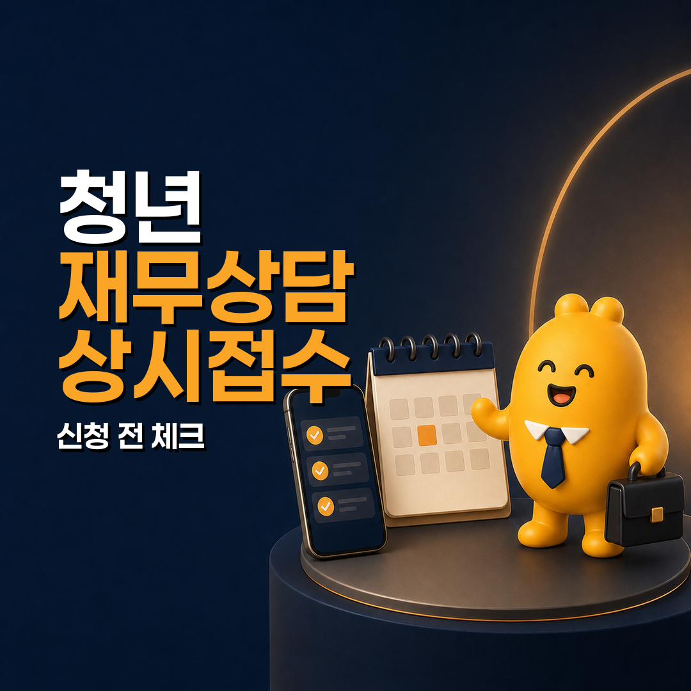
청년 재무상담 신청, 7월부터 상시 접수되는 조건과 절차
청년 모두를 위한 재무상담 신청 절차와 우대금리 조건
기준일 2026-07-09
출처/태그 미리보기
Tags
Sources 자료 기준일 2026년 7월 9일. 주요 근거는 금융위원회 보도자료(2026년 7월 6일 신청 시작, 대상, 상담 방식, 일정 규칙, 청년미래적금 우대금리 조건)와 서민금융진흥원 청년 모두를 위한 재무상담 웹페이지입니다.
작성된 글을 리스트에서 확인하고 제목, HTML 본문, 태그를 바로 복사하는 단일 대시보드입니다.
총 35개 · Manual Naver publication only · No account-action controls

청년 모두를 위한 재무상담 신청 절차와 우대금리 조건
기준일 2026-07-09
Tags
Sources 자료 기준일 2026년 7월 9일. 주요 근거는 금융위원회 보도자료(2026년 7월 6일 신청 시작, 대상, 상담 방식, 일정 규칙, 청년미래적금 우대금리 조건)와 서민금융진흥원 청년 모두를 위한 재무상담 웹페이지입니다.
청년 운전면허 지원금, 지역별 조건 확인하는 방법
기준일 2026-07-08
Tags
Sources 의령청년센터 2026년 청년 운전면허 취득비 지원사업, 진주시 청년온라인플랫폼 사회초년생 운전면허 취득비용 지원사업, 정부24 저소득층 운전면허 취득비 지원, 한국도로교통공단 사회적 약자 운전면허 취득교육 지원. 기준일 2026년 7월 8일.
영화 6천원 할인권 사용 방법: 쿠폰함·선착순·중복할인 정리
기준일 2026-07-04
Tags
Sources 기준일 2026-07-04. 주요 출처: 영화진흥위원회 「2026 국민 영화관람 활성화 지원사업 6천원 할인권 발급 및 사용 안내」, 문화체육관광부 2026-05-08 보도자료 「할인권 받고 영화관으로 문화 나들이 가요」.

KTX·SRT 청소년·청년 할인 비교: 나이 기준, 할인율, 예매 조건 정리
기준일 2026-07-03
Tags
Sources 코레일 청소년 드림, 코레일 힘내라 청춘, 코레일 승차권예매 할인상품 메타데이터, SR 할인제도 SRT-Blue 청소년 할인 안내를 2026년 7월 3일 확인했습니다.
지역사랑상품권 할인 구매 방법: 앱, 한도, 사용처 확인하기
기준일 2026-06-29
Tags
Sources 행정안전부 지역사랑상품권, 찾기쉬운 생활법령정보 지역사랑상품권 구매·사용 방법, 서울특별시 서울Pay+·서울사랑상품권 FAQ, 제로페이 결제APP·가맹점 찾기, 경기지역화폐 공식 페이지를 2026년 6월 29일 확인했습니다.
2026 건강보험 혜택 3가지: 일반건강검진·치석제거·65세 이상 임플란트
기준일 2026-06-29
Tags
Sources 기준일 2026-06-29. 국민건강보험공단 일반건강검진·치석제거 급여안내·치과임플란트 급여안내, 보건복지부 치과 임플란트 보철재료 확대 보도자료, 건강보험심사평가원 치과임플란트 인정기준을 바탕으로 정리.
2026년 첫만남이용권 지원금액·신청방법·사용처 안내
기준일 2026-06-29
Tags
Sources 기준일 2026-06-29. 보건복지부 첫만남이용권 지원, 복지로 첫만남이용권 서비스 데이터, 정부24 행복출산 민원 안내를 바탕으로 정리.
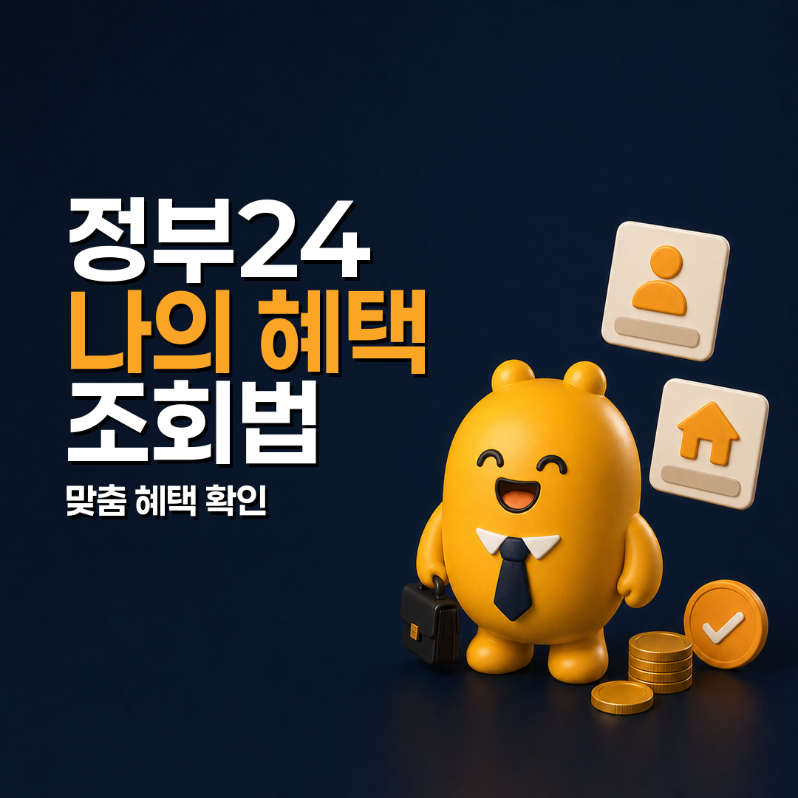
정부24 나의 혜택 조회
기준일 2026-06-28
Tags
Sources 정부24 혜택알리미 공개 페이지와 정부24 포털 설명 기준. 개인별 결과는 로그인 뒤 화면이므로 수집하지 않음.
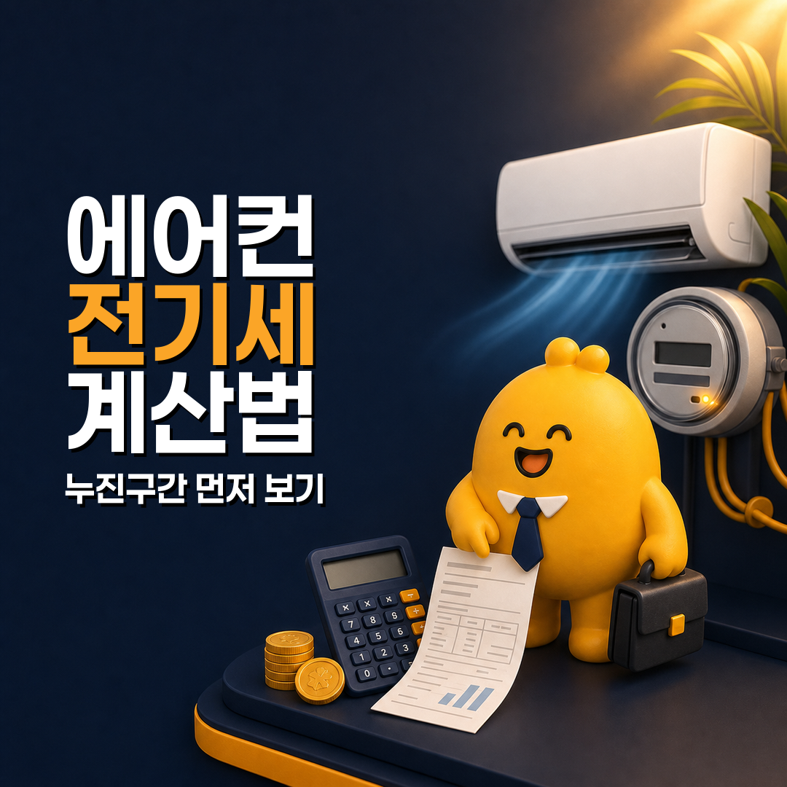
전기요금 누진제·에어컨 전기세 계산
기준일 2026-06-28
Tags
Sources 기준일 2026-06-28. 한전ON 전기요금표, 한국전력공사 전기요금계산기, KDI/산업통상자원부 누진제 개편 자료, 한국에너지공단 에어컨 절약노하우를 바탕으로 정리.
어카운트인포 자동이체·카드자동납부 정리: 월말 고정비 새는 곳 찾기
기준일 2026-06-28
Tags
Sources 기준일 2026-06-27. 공식 근거: 금융결제원 Payinfo 어카운트인포 게이트 페이지, Payinfo 카드자동납부 통합관리/내 금융 안심차단 세부 URL, 금융위원회 2024-09-25 보도자료. Payinfo 일부 세부 화면은 프레임·인증 흐름으로 비인증 크롤링 본문 확인이 제한되어 메뉴명과 실제 화면 재확인 안내로 보수적으로 정리했습니다.
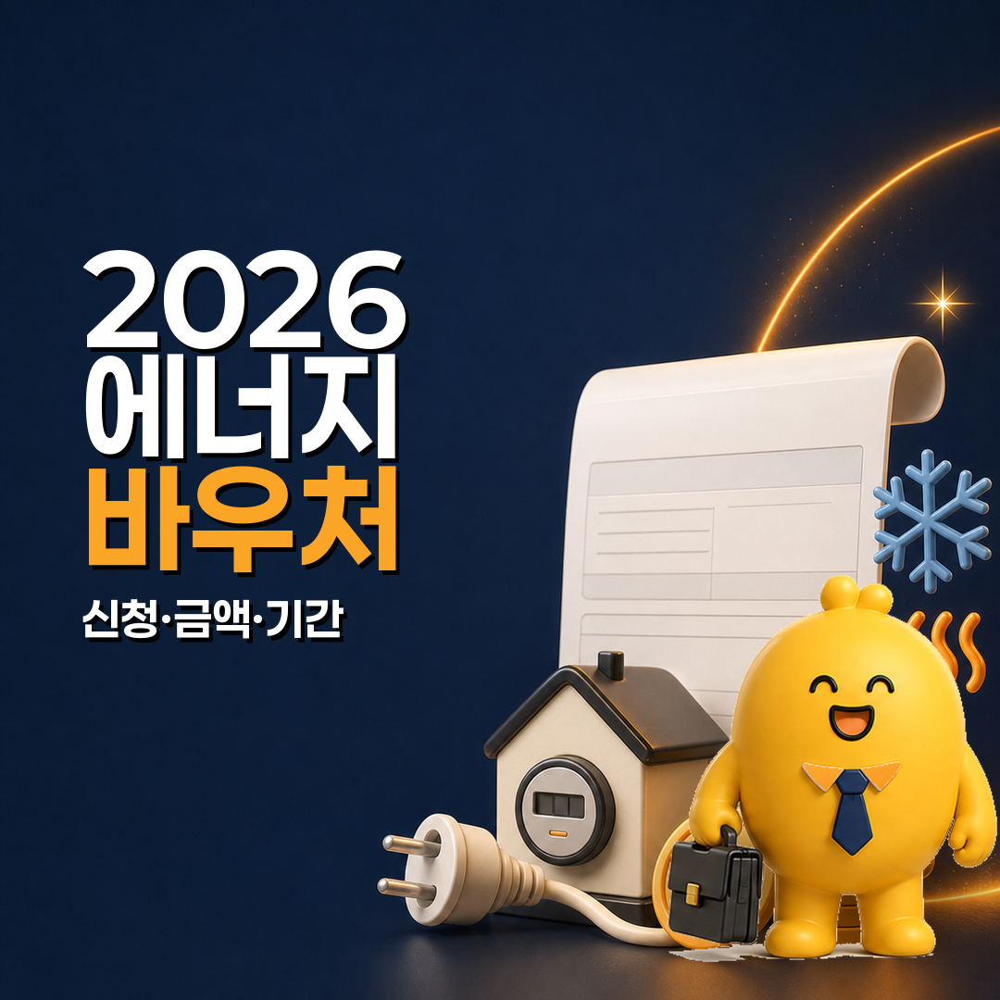
2026 에너지바우처 신청, 여름 냉방비 지원대상과 금액 정리
기준일 2026-06-26
Tags
Sources 기준일 2026-06-26. 한국에너지공단 에너지바우처 공식 지원안내, 신청안내, 사용안내, 잔액조회, 모의진단 페이지 기준.
청년 자격증 응시료 환급, 2026년 신청 전 Q-net 감면과 지자체 지원 차이 정리
기준일 2026-06-23
Tags
Sources 고용노동부, Q-net, 인천청년포털, 서울 중구청 공개 공식 안내 확인(기준일 2026-06-23)
디지털 관광주민증 발급하고 지역 여행 할인받는 법
기준일 2026-06-21
Tags
Sources 자료 기준일: 2026년 6월 21일. 한국관광공사 대한민국 구석구석 디지털 관광주민증 공식 페이지와 문화체육관광부 2026년 6월 8일 보도자료 기준.
청년미래적금 은행별 혜택 정리, 최고금리와 우대조건 비교
기준일 2026-06-20
Tags
Sources 자료 기준일: 2026년 6월 20일. 금융위원회, 정책브리핑, 서민금융진흥원, 은행연합회 소비자포털 공개자료 기준.
2026 여름맞이 숙박세일 페스타, 숙박비 최대 7만원 할인받는 법
기준일 2026-06-20
Tags
Sources 자료 기준일: 2026년 6월 20일. 대한민국 구석구석, 대한민국 숙박세일 페스타 공식 누리집, 정책브리핑 자료 기준.
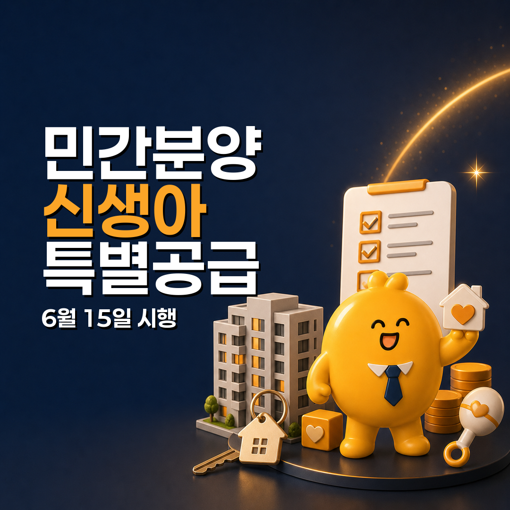
2026년 6월 15일 시행 민영주택 신생아 특별공급 10% 신설, 민간분양 청약 전 조건과 신청 흐름 정리
기준일 2026-06-19
Tags
Sources - 국토교통부 보도자료: https://www.molit.go.kr/USR/NEWS/m_71/dtl.jsp?id=95092108&lcmspage=1 - 국토교통부 첨부 PDF 참고자료: https://www.molit.go.kr/LCMS/DWN.jsp?fileName=260615%28%EC%A1%B0%EA%B0%84%29+%EC%B6%9C%EC%83%9D%EA%B0%80%EA%B5%AC++%EB%AF%BC%EC%98%81%EC%A3%BC%ED%83%9D+%EC%B2%AD%EC%95%BD+%EA%B8%B0%ED%9A%8C+%EB%84%93%EC%96%B4%EC%A7%84%EB%8B%A4%28%EC%A3%BC%ED%83%9D%EA%B8%B0%EA%B8%88%EA%B3%BC%29.pdf&fold=koreaNews%2Fmobile%2Ffile - 청약홈 메인/분양정보 공개 메뉴: https://www.applyhome.co.kr/co/coa/selectMainView.do, https://www.applyhome.co.kr/ai/aia/selectAPTLttotPblancListView.do
2026 섬 여행비 지원, 7~8월 1박 이상 최대 10만원 조건과 신청 전 확인사항
기준일 2026-06-19
Tags
Sources 기준일 2026-06-19. 주요 출처: 2026 섬 방문의 해 공식 프로모션 페이지, 공식 연결 대상 섬 리스트, 정책브리핑/행정안전부 2026-06-16 정책뉴스, 디지털타임스 2026-06-16 기사. 신청·선정·지급 기준은 공식 공지 변경 시 달라질 수 있음.
통신 미환급액 조회, 해지·번호이동 후 못 받은 돈 찾기
기준일 2026-06-13
Tags
Sources 스마트초이스 통신 미환급액 조회 서비스 안내, 정부24 미환급금 조회(최종수정일 2026-05-06), 스마트초이스 포털 공개 안내를 2026-06-13 기준으로 확인.
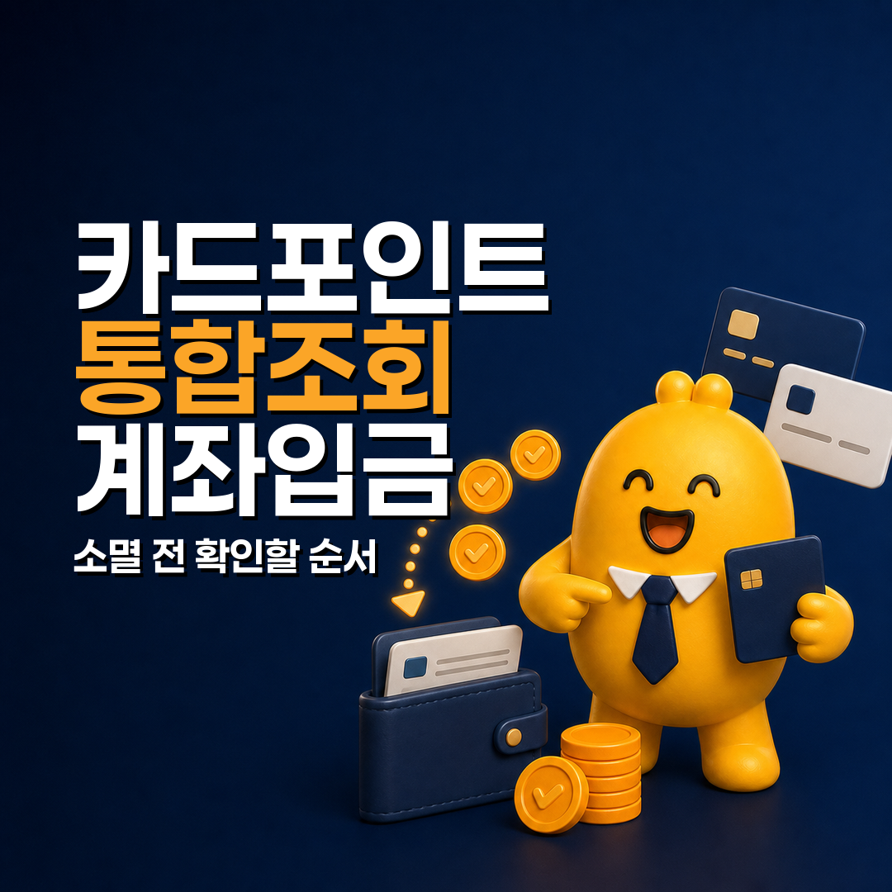
카드포인트 통합조회, 소멸 전 계좌로 입금받는 방법
기준일 2026-06-13
Tags
Sources 금융위원회 카드뉴스(2022-05-24), 여신금융협회 카드포인트 통합조회·계좌입금 공식 홈페이지(https://www.cardpoint.or.kr/), 금융결제원 어카운트인포 안내(https://www.payinfo.or.kr/payinfo.html)를 2026-06-13 기준으로 확인.
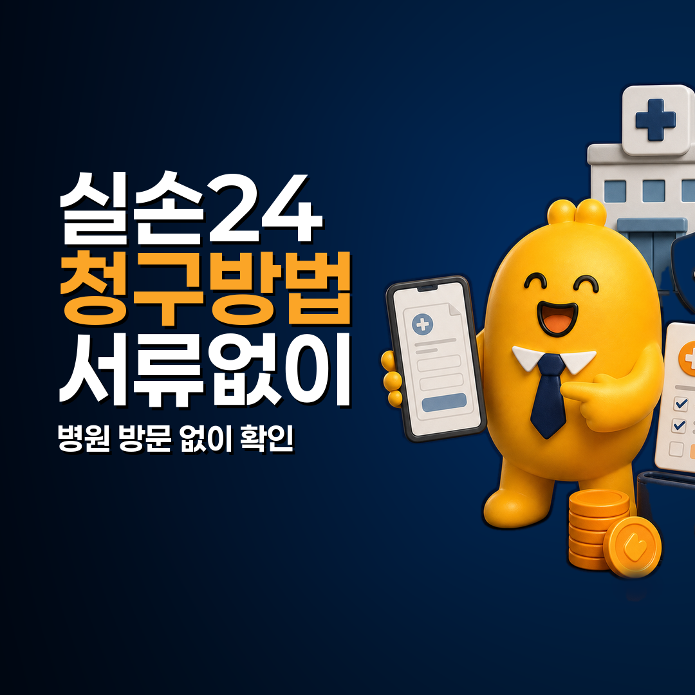
실손24, 병원 서류 없이 실손보험 청구방법
기준일 2026-06-13
Tags
Sources 기준일: 2026-06-13. 주요 출처: 금융위원회 2026년 4월 실손24 확대 보도자료, 보험개발원 실손24 앱 정보, 실손24 공식 홈페이지.
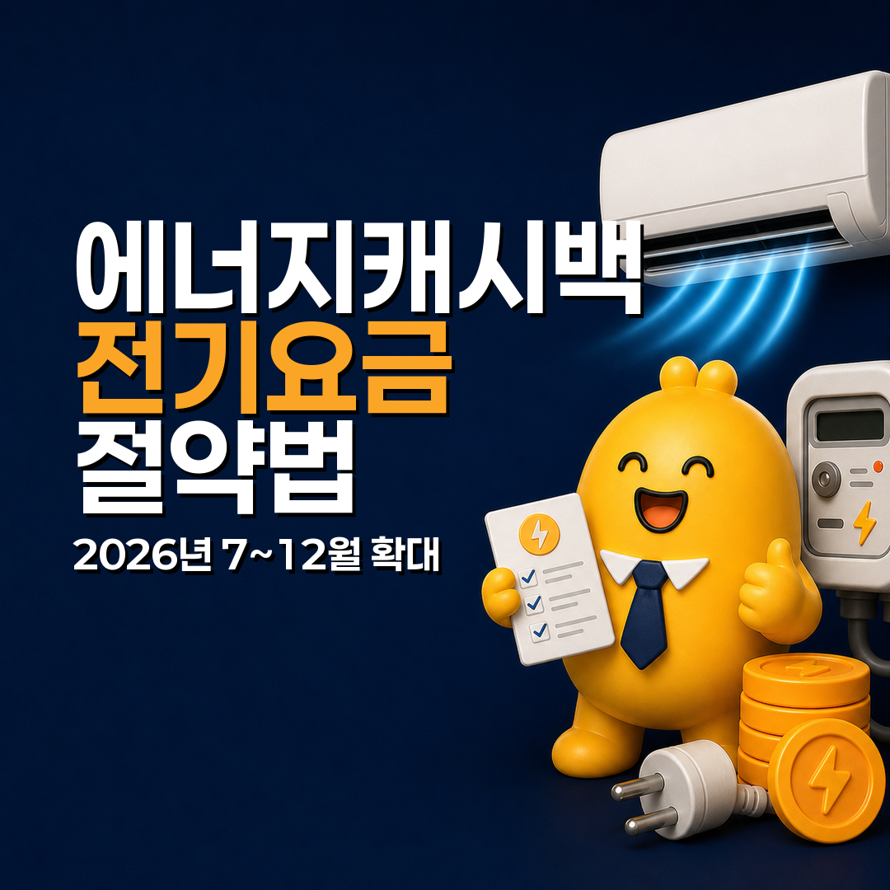
2026 주택용 에너지캐시백 확대와 여름 전기요금 절약
기준일 2026-06-12
Tags
Sources 기준일: 2026-06-12. 주요 출처: 한국전력공사 2026년 6월 에너지 절감 특별 지원 대책, 한국에너지공단 효율관리제도 에어컨 절약노하우, KDI/산업통상자원부 여름철 누진제 완화 상시화 정책자료, 한전ON 공지·고객서비스.
기후동행카드 3만원 페이백 신청: 1차 신청 대상과 기간 정리
기준일 2026-06-10
Tags
Sources 작성·확인일 2026-06-10. 서울특별시 교통분야 누리집 기후동행카드 페이백 이벤트 안내 및 FAQ, 티머니 카드&페이 페이백 신청 경로를 확인했습니다.
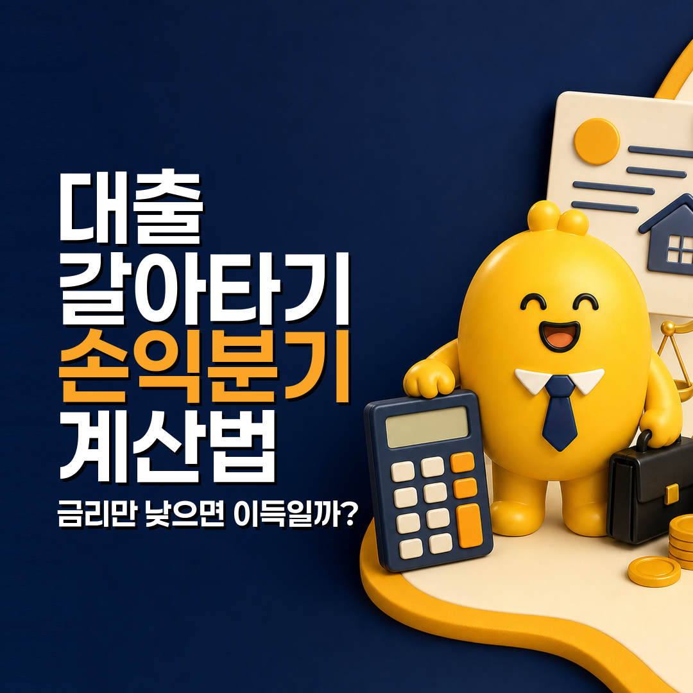
대출 갈아타기 손익분기 계산법: 금리만 낮으면 무조건 이득일까
기준일 2026-06-08
Tags
Sources 금융위원회 대출 갈아타기 서비스 및 중도상환수수료 보도자료, 금융상품한눈에, 은행연합회 소비자포털을 2026년 6월 8일 기준으로 확인.
2026 서울 희망두배 청년통장 신청 시작 안내
기준일 2026-06-08
Tags
Sources 서울특별시 공고 제2026-1601호, 서울시 자산형성지원사업 누리집 및 희망두배 청년통장 사업소개 기준. 2026년 6월 8일 업데이트용.
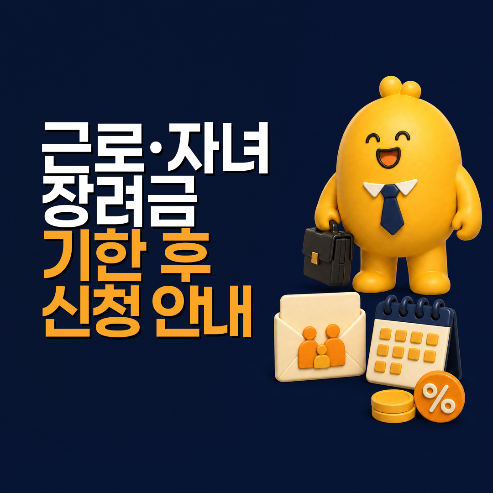
근로·자녀장려금 정기신청 놓친 사람을 위한 기한 후 신청 정리
기준일 2026-06-07
Tags
Sources 국세청 보도자료(2026.4.30), 국세청 근로장려금 소개, 자녀장려금 소개, 신청기간 및 방법, 심사 및 지급 안내를 확인했습니다.
맞벌이 부부 자산 운용 시작 순서: 생활비 통장, 연금계좌, 청약통장, 비상금
기준일 2026-06-06
Tags
Sources 기준일: 2026-06-06. 주요 출처: 국가법령정보센터 소득세법 제59조의3, 조세특례제한법 제87조, 한국부동산원 청약홈 청약가점계산기.
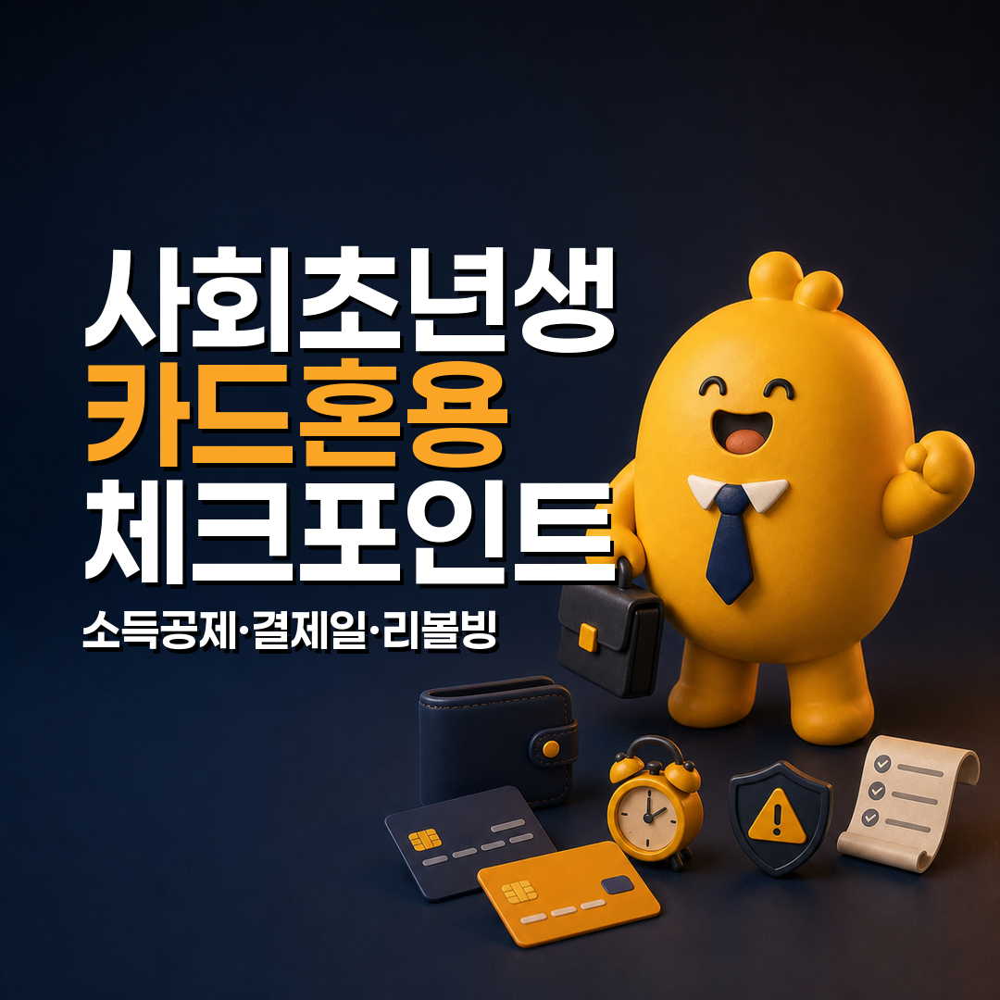
사회초년생 신용카드 vs 체크카드: 소득공제·신용점수·결제일 체크리스트
기준일 2026-06-05
Tags
Sources 기준일 2026-06-05. 국세청 신용카드 등 사용금액 소득공제 FAQ, 법제처 생활법령정보, KCB 개인신용평가체계 공시, KB국민카드·삼성카드 결제일별 이용기간 안내를 기준으로 정리했습니다.
한전 고효율 가전제품 구매비용 지원: 15%·30% 조건과 서류 체크
기준일 2026-06-03
Tags
Sources 기준일 2026-06-03. 주요 출처: 한국전력공사 고효율 가전제품 구매비용 지원사업 사업소개, 신청방법, 지원품목, 자주묻는질문. 공식 안내 URL: https://en-ter.co.kr/support/info/info01/info.do.
휴면예금 찾아줌: 잊고 있던 예금·보험금 조회
기준일 2026-06-01
Tags
Sources 기준일 2026-06-01. 주요 출처: 서민금융진흥원 휴면예금 찾아줌 공식 안내, 서민금융진흥원 개인정보파일 내역. 공식 안내 URL: https://www.kinfa.or.kr/financialLife/sleepmoney.do.
자동차보험 차량 5부제 할인 특약
기준일 2026-05-31
Tags
Sources 출처: 금융위원회 2026-04-27 보도자료 및 PDF 첨부, 조회일 2026-05-31. 실제 가입 가능 여부와 세부 약관은 보험사별 공지를 확인해야 합니다.
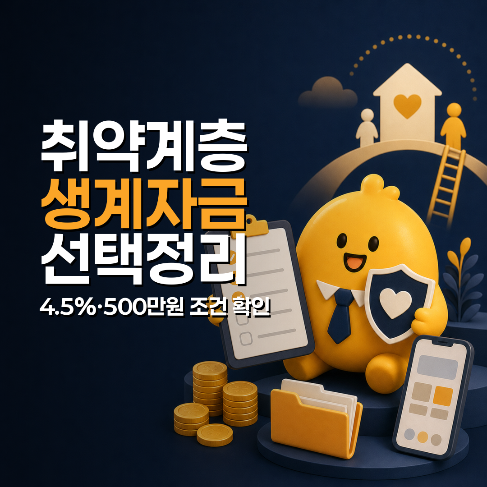
금융취약계층 생계자금 대출 선택지 정리
기준일 2026-05-31
Tags
Sources 기준일 2026-05-31. 금융위원회 보도자료(2026-03-30)와 서민금융진흥원 금융취약계층 생계자금, 불법사금융예방대출, 햇살론일반 상품 페이지 기준.
청년미래적금 6월 22일 신청 전 체크리스트: 5부제·금리·기여금 정리
기준일 2026-05-30
Tags
Sources 기준일 2026-05-30. 금융위원회 2026-05-29 「청년미래적금 취급기관별 금리 공시」, 금융위원회 2026-04-23 「청년미래적금 출시 준비 점검회의 개최」 기준.

국민참여형 국민성장펀드, ISA와 헷갈리는 포인트 정리
기준일 2026-05-29
Tags
Sources 금융위원회 2026-05-06·2026-05-21·2026-05-26 공개자료 및 국회예산정책처 2026-04-30 NABO Focus 기준. 판매현황과 세제·상품 조건은 변경될 수 있어 판매사와 공식 공지를 재확인해야 함.
5세대 실손보험 비교: 기존 실손 유지·전환 전 확인할 기준
기준일 2026-05-29
Tags
Sources 기준일 2026-05-29. 금융위원회 보도자료(2026-05-06), 금융위원회·금융감독원 5세대 실손보험 Q&A(2026-05), 금융위원회 카드뉴스 기준. URL: https://www.fsc.go.kr/no010101/86831 , https://www.fsc.go.kr/comm/getFile?srvcId=BBSTY1&upperNo=86831&fileTy=ATTACH&fileNo=14 , https://www.fsc.go.kr/no040101?cnId=3140&curPage=3
6월 출시 예정으로 언급되는 슈퍼 ISA 계좌 정리
기준일 2026-05-28
Tags
Sources 재정경제부 2026년 경제성장전략, 국회예산정책처 NABO Focus 제156호, 재정경제부 2026년 경제성장전략 정책 페이지 기준. Retrieved 2026-05-28.
청년 모두를 위한 재무상담은 2026년 7월 6일부터 상시 신청이 시작된 1:1 맞춤형 재무상담 사업입니다. 만 19세부터 34세까지의 청년은 기본 대상이고, 청년도약계좌 또는 청년미래적금 가입자는 나이가 초과되어도 상담을 받을 수 있도록 안내됩니다.
처음 보는 독자라면 핵심은 세 가지입니다. 먼저 온라인 재무진단을 해야 하고, 그다음 찾아가는 재무상담·금융권 재무상담·온라인 재무상담 중 방식을 고릅니다. 청년미래적금 우대금리 0.2%p와 연결되는 경우에는 만기일 기준 완료기한도 따로 확인해야 합니다.
기준일: 2026년 7월 9일
| 확인할 질문 | 답변 |
|---|---|
| 언제부터 신청하나요? | 2026년 7월 6일부터 상시 신청으로 안내됩니다. |
| 누가 신청할 수 있나요? | 상담 신청일 기준 만 19~34세 청년이 기본 대상입니다. |
| 나이가 넘으면 바로 제외되나요? | 청년도약계좌 또는 청년미래적금 가입자는 연령 초과 시에도 별도 추가 절차 없이 상담 가능하다고 안내됩니다. |
| 신청 순서는 어떻게 되나요? | 청년 재무상담 웹페이지에서 본인인증 후 온라인 재무진단을 하고, 같은 페이지에서 상담을 신청합니다. |
| 상담 방식은 몇 가지인가요? | 찾아가는 재무상담, 금융권 재무상담, 온라인 재무상담으로 나눠 볼 수 있습니다. |
| 청년미래적금 우대금리와 연결되나요? | 상담 완료 시 우대금리 0.2%p 제공으로 안내되며, 만기일이 속하는 월의 3개월 전 말일까지 상담을 완료해야 합니다. |
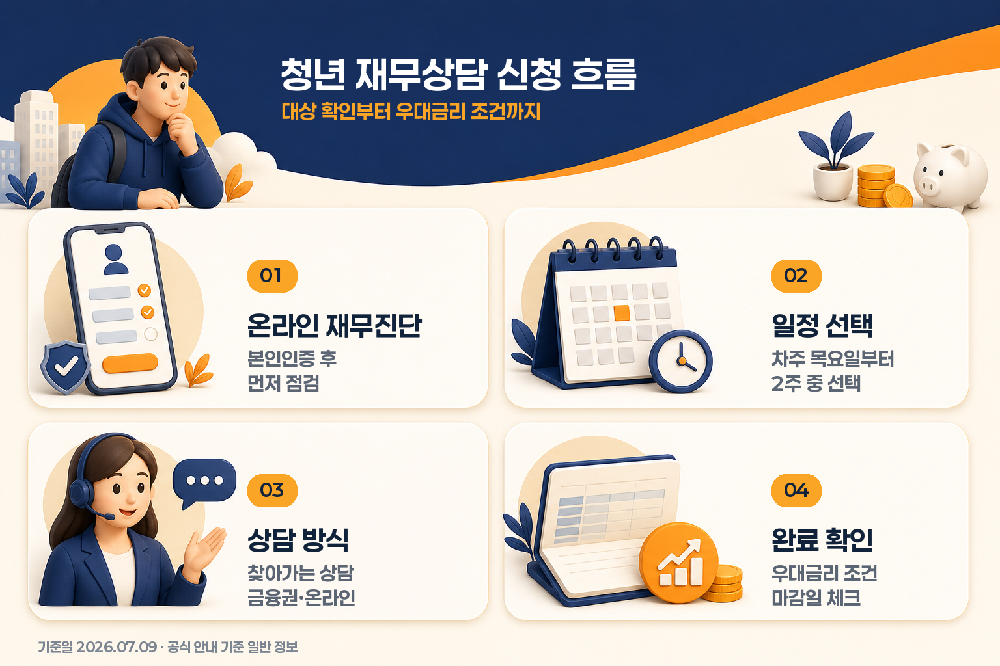
이 글은 청년미래적금 상품을 비교하거나 추천하는 글이 아닙니다. 상담 신청 절차와 조건을 처음 확인하는 독자가, “내가 신청 대상인지”와 “어떤 순서로 진행되는지”를 한 번에 볼 수 있도록 정리한 안내입니다.
금융위원회 안내 기준으로 기본 대상은 상담 신청일 기준 만 19세에서 만 34세에 해당하는 청년입니다. 여기서 중요한 표현은 “상담 신청일 기준”입니다. 나이 기준은 모집 시작일이나 생년월일을 임의로 계산하기보다, 실제 상담을 신청하는 날 기준으로 보는 것이 안전합니다.
다만 예외도 있습니다. 금융위원회는 청년도약계좌 또는 청년미래적금에 가입한 청년은 대상 연령을 초과하더라도 별도의 추가 절차 없이 동일하게 재무상담을 받을 수 있다고 안내했습니다.
| 상황 | 신청 가능성 확인 포인트 |
|---|---|
| 만 19~34세 청년 | 청년 모두를 위한 재무상담 웹페이지에서 온라인 재무진단 후 상담 신청 흐름을 확인합니다. |
| 만 34세 초과이지만 청년도약계좌 가입자 | 연령 초과 예외 대상 안내에 해당하는지 상담 페이지에서 확인합니다. |
| 만 34세 초과이지만 청년미래적금 가입자 | 상담 가능성과 함께 우대금리 완료기한을 같이 확인합니다. |
| 위 조건에 해당하지 않는 경우 | 동일 페이지의 다른 재무상담·신용관리 서비스 대상인지 별도로 확인해야 합니다. |
이 지점이 이 주제의 비슷한 글에서 자주 흐려지는 부분입니다. “청년이면 신청”이라고만 쓰면 나이 기준과 자산형성 상품 가입자 예외가 빠지고, “청년미래적금 우대금리”만 강조하면 상담 자체의 이용 대상과 절차가 흐려집니다.
재무상담을 희망하는 청년은 청년 모두를 위한 재무상담 웹페이지에서 본인인증을 거친 뒤 온라인 재무진단을 실시하고, 같은 웹페이지에서 재무상담을 신청하는 흐름으로 안내됩니다.
순서를 단순화하면 다음과 같습니다.
여기서 독자가 놓치기 쉬운 점은 “상담 신청”보다 “온라인 재무진단”이 앞에 온다는 점입니다. 상담사가 현재 상황을 이해하려면 재무진단 결과가 출발점이 되므로, 신청 전에 간단히 신청 버튼만 누르는 구조로 생각하면 중간에서 막힐 수 있습니다.
금융위원회 보도자료와 서민금융진흥원 상담 페이지를 함께 보면, 상담 방식은 크게 세 가지로 정리할 수 있습니다.
| 상담 방식 | 어떤 방식인가요 | 확인할 점 |
|---|---|---|
| 찾아가는 재무상담 | 청년이 원하는 시간·장소에 전문가가 찾아가 상담하는 방식 | 상담 신청 후 영업일 기준 2일 안팎으로 상담사 연락을 받아 시간 조율 |
| 금융권 재무상담 | 은행·증권·보험 등 금융기관 지점을 방문해 상담받는 방식 | 상담 신청 후 약 1주일 내 상담사 연락을 받아 일정 조율 |
| 온라인 재무상담 | 재무상황과 목표 관련 질문을 작성해 등록하면 전문 상담사가 답변하는 방식 | 대면이 어려운 경우 이용 가능, 구체적인 질문을 적어야 답변의 활용도가 높음 |
어떤 방식이 더 좋다고 단정할 필요는 없습니다. 대면 일정 조율이 가능하면 찾아가는 상담이나 금융권 상담이 맞을 수 있고, 시간·장소 제약이 크면 온라인 재무상담 항목을 먼저 볼 수 있습니다. 중요한 것은 상담 방식마다 연락·조율 흐름이 조금 다르다는 점입니다.
재무상담 신청은 2026년 7월 6일부터 상시 가능하지만, 신청 즉시 아무 날짜나 고르는 구조는 아닙니다. 금융위원회는 신청일 기준으로 차주 목요일부터 2주간의 일정 중 원하는 일정을 선택할 수 있다고 안내했습니다.
예시도 공식 자료에 제시되어 있습니다. 2026년 7월 6일 월요일부터 7월 12일 일요일 사이에 상담을 신청하는 청년은, 신청일 기준 차주 목요일인 7월 16일부터 7월 29일까지의 일정 중 원하는 일정을 선택할 수 있습니다.
| 신청 시점 | 일정 선택 범위 이해 |
|---|---|
| 이번 주에 신청 | 바로 오늘·내일 상담이 아니라 차주 목요일부터 열리는 2주 범위를 봅니다. |
| 찾아가는 상담 선택 | 신청 후 영업일 기준 2일 안팎의 연락을 기다려 구체 시간을 조율합니다. |
| 금융권 상담 선택 | 신청 후 약 1주일 내 연락을 받아 지점 방문 상담 일정을 조율합니다. |
| 온라인 상담 선택 | 온라인 항목에 재무상황·목표 관련 질문을 구체적으로 등록합니다. |
따라서 상담을 특정 날짜 전에 꼭 받고 싶다면, 신청일과 선택 가능한 상담 일정 범위를 먼저 맞춰 보는 것이 좋습니다.
이 상담은 청년미래적금 우대금리와도 연결됩니다. 금융위원회는 청년 모두를 위한 재무상담을 받은 청년에게 청년미래적금 우대금리 0.2%p를 제공한다고 안내했습니다.
다만 중요한 조건이 있습니다. 청년미래적금 만기일이 속하는 월의 3개월 전 말일까지 찾아가는 재무상담, 금융권 재무상담, 온라인 재무상담 중 하나를 완료해야 합니다. 이 경우 별도의 신청이나 증빙서류 제출 없이 우대금리 혜택을 받을 수 있다고 안내됩니다.
예를 들어 공식 자료는 청년미래적금 만기일이 2029년 7월 27일인 경우, 2029년 4월 30일까지 재무상담을 완료하면 우대금리가 적용되는 예시를 들고 있습니다.
| 확인할 것 | 왜 중요한가요 |
|---|---|
| 상담 신청일 | 상담 일정 선택 범위가 신청일 기준으로 정해집니다. |
| 상담 완료일 | 우대금리 조건은 신청이 아니라 완료 여부가 핵심입니다. |
| 청년미래적금 만기월 | 만기일이 속하는 월의 3개월 전 말일까지 완료해야 합니다. |
| 상담 방식 | 찾아가는 상담, 금융권 상담, 온라인 상담 중 하나를 완료하면 되는 구조로 안내됩니다. |
우대금리만 보고 상담을 급하게 신청하기보다, 내 만기월과 상담 완료 가능 시점을 함께 보는 편이 안전합니다. 이 글은 특정 상품 가입을 권하는 목적이 아니라, 이미 관련 상품을 보유했거나 상담 신청을 검토하는 독자가 기한을 헷갈리지 않도록 정리한 것입니다.
상담 신청일 기준 만 19~34세 청년이 기본 대상입니다. 다만 청년도약계좌 또는 청년미래적금 가입자는 연령을 초과하더라도 상담을 받을 수 있다고 안내됩니다.
공식 안내는 상담 “완료”를 기준으로 설명합니다. 청년미래적금 우대금리 0.2%p와 연결하려면 만기일이 속하는 월의 3개월 전 말일까지 상담을 완료해야 합니다.
공식 보도자료는 원하는 유형을 선택해 신청한다고 안내합니다. 실제 변경 가능 여부는 신청 페이지와 상담사 연락 단계에서 확인하는 것이 안전합니다.
금융위원회 안내에는 찾아가는 재무상담, 금융권 재무상담, 온라인 재무상담 중 하나를 완료한 경우 우대금리 혜택을 받을 수 있다고 되어 있습니다.
재무상담 완료 후에는 상담사와 조율한 일정에 맞춰 약 3~5주 후 유선 사후상담이 시행된다고 안내됩니다. 상담내용 이행 확인과 추가 궁금증 해소를 돕는 흐름입니다.
청년 모두를 위한 재무상담 웹페이지에서 신청 흐름을 확인할 수 있습니다. 자세한 사항은 서민금융진흥원 청년금융콜센터 1397 바로 4번으로도 확인 가능하다고 안내됩니다.
청년 모두를 위한 재무상담은 단순히 “청년 금융 상담을 받을 수 있다”에서 끝나는 주제가 아닙니다. 온라인 재무진단이 먼저이고, 상담 방식에 따라 연락·일정 조율 흐름이 다르며, 청년미래적금 우대금리와 연결되는 경우에는 상담 완료기한이 따로 있습니다.
따라서 처음 확인할 때는 대상 여부, 상담 방식, 일정 선택 범위, 우대금리 완료기한을 순서대로 보는 것이 좋습니다. 특히 청년미래적금과 연결해 보는 독자는 신청일보다 상담 완료일과 만기월 기준을 더 중요하게 확인해야 합니다.
자료 기준일: 2026년 7월 9일 출처: 금융위원회 보도자료, 서민금융진흥원 청년 모두를 위한 재무상담 웹페이지 안내: 이 글은 공개 공식 자료를 바탕으로 한 일반 정보 정리입니다. 개인별 상담 가능 여부, 상담 일정, 우대금리 적용 여부는 신청 시점의 공식 페이지와 담당기관 안내를 기준으로 확인해야 합니다.
청년 운전면허 지원금은 실제로 운영되는 지역이 있습니다. 다만 전국 어디서나 같은 금액을 받는 공통 제도는 아니고, 주민등록지 지자체가 그해 공고를 냈는지에 따라 달라집니다.
2026년 7월 8일 기준으로 확인하면, 의령군과 진주시처럼 청년 또는 사회초년생 대상 운전면허 취득비를 지원하는 지자체가 있습니다. 반면 도로교통공단의 사회적 약자 운전면허 취득교육 지원, 정부24의 저소득층 운전면허 취득비 지원처럼 청년이 아니라 대상 계층이 다른 제도도 함께 검색됩니다.
따라서 처음 확인할 때는 내 주민등록지 기준으로 올해 공고가 있는지, 나이·취업 상태·면허 취득일·신청기간이 맞는지 순서대로 살펴보면 됩니다.
기준일: 2026년 7월 8일
| 확인할 질문 | 이렇게 보면 됩니다 |
|---|---|
| 전국 공통 청년 지원금인가요? | 공통 금액으로 단정하기 어렵습니다. 지자체별 공고를 봐야 합니다. |
| 실제 운영 사례가 있나요? | 있습니다. 의령군, 진주시 등에서 2026년 운전면허 취득비 지원을 안내합니다. |
| 지원금액은 모두 같나요? | 아닙니다. 10만 원 정액, 50만 원 이내, 상품권 지급 등 방식이 다릅니다. |
| 신청 전 가장 중요한 기준은? | 주민등록지, 나이, 미취업 여부, 면허 취득일, 예산 소진 여부입니다. |
| 어디서 찾아야 하나요? | 지자체 홈페이지 고시공고, 청년센터, 정부24, 도로교통공단 안내를 함께 봅니다. |
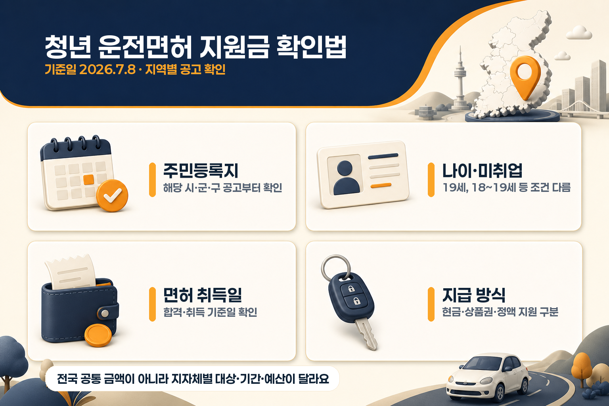
핵심은 “운전면허 취득비 지원”이라는 이름은 비슷해도 대상이 다르다는 점입니다. 어떤 지역은 청년을 대상으로 하고, 어떤 제도는 저소득층이나 사회적 약자를 대상으로 합니다. 또 같은 청년 지원이라도 18~19세인지, 18~49세인지, 미취업 조건이 있는지에 따라 신청 가능성이 달라집니다.
2026년 공식 안내에서 확인되는 사례를 보면 차이가 꽤 큽니다.
| 지역·제도 | 대상 요건의 핵심 | 지원 내용 | 신청·확인 포인트 |
|---|---|---|---|
| 의령군 청년 운전면허 취득비 지원 | 18~49세, 의령군 주민등록, 2025년 7월 1일 이후 1종·2종 보통 신규 취득, 사실상 미취업 | 50만 원 이내 모바일 의령사랑상품권 | 2026년 1월 12일~12월 18일, 예산 소진 시 조기 마감 가능 |
| 진주시 사회초년생 운전면허 취득비용 지원 | 18~19세, 진주시 주민등록, 2026년 1월 1일 이후 1종·2종 보통 취득, 사실상 미취업 | 10만 원 모바일 진주사랑상품권 | 2026년 1월 1일~12월 31일, 주소지 읍면동 방문 신청 |
| 정부24 저소득층 운전면허 취득비 지원 | 국민기초생활수급자, 한부모가족 보호대상자, 차상위계층 등 | 취득 비용 일부 지원, 최대 금액 제한 | 청년 전용이 아니라 대상 계층형 지원으로 구분해야 함 |
| 도로교통공단 사회적 약자 운전면허 취득교육 지원 | 장애인, 기초생활수급자, 한부모가족, 국가유공자 등 | 학과·기능·도로주행 무료 교육 | 현금 지원금이 아니라 운전면허 교육 지원 성격 |
이 표만 봐도 “운전면허 지원금”이라는 표현 하나로 묶기 어렵습니다. 의령군은 청년 범위가 넓고, 진주시는 사회초년생에 가깝게 18~19세로 좁게 봅니다. 지급 방식도 현금 계좌 입금이 아니라 지역사랑상품권인 경우가 있습니다.
가장 빠른 방법은 주민등록지를 기준으로 검색어를 좁히는 것입니다.
| 순서 | 확인할 것 | 검색·확인 방법 |
|---|---|---|
| 1 | 주민등록지 | “지역명 운전면허 취득비용 지원사업”으로 검색 |
| 2 | 올해 공고 여부 | 2026년 공고인지, 지난 연도 안내인지 확인 |
| 3 | 나이 기준 | 만 나이인지, 출생연도 기준인지, 특정 연령인지 확인 |
| 4 | 거주 기준 | 공고일 전날, 전년도 말일, 신청일까지 계속 거주 등 기준일 확인 |
| 5 | 취업 상태 | 미취업, 사실상 취업 중 아님, 구직 청년 등 표현 확인 |
| 6 | 면허 기준 | 1종·2종 보통만 되는지, 대형·특수 면허가 제외되는지 확인 |
| 7 | 지급 방식 | 정액, 실비 일부, 최대 금액, 지역상품권 여부 확인 |
검색할 때는 `청년 운전면허 지원금`만 입력하면 여러 지역과 여러 연도의 글이 섞입니다. 처음부터 `진주시 운전면허 취득비용 지원`, `의령군 청년 운전면허 취득비 지원`, `정부24 운전면허 취득비 지원`처럼 지역명이나 공식 포털명을 붙이는 편이 좋습니다.
운전면허 지원사업에서 가장 헷갈리는 표현은 “50만 원”입니다. 어떤 곳은 50만 원 이내, 어떤 곳은 취득 비용의 일정 비율, 어떤 곳은 10만 원 정액입니다. 그래서 검색 결과에 보이는 금액만 보고 바로 내 혜택으로 보면 안 됩니다.
특히 아래 네 가지는 꼭 나눠 봐야 합니다.
| 표현 | 의미 |
|---|---|
| 정액 지원 | 실제 지출액과 관계없이 정해진 금액을 지급하는 방식일 수 있음 |
| 최대 50만 원 | 지출액, 비율, 예산 범위 안에서 상한을 둔 표현일 수 있음 |
| 50만 원 이내 | 실제 인정 비용이 50만 원보다 적으면 그 범위 안에서 지급될 수 있음 |
| 지역상품권 지급 | 현금이 아니라 모바일 지역사랑상품권으로 받을 수 있음 |
의령군 사례처럼 50만 원 이내로 안내되는 곳도 있고, 진주시 사례처럼 10만 원 모바일 지역상품권으로 정액 지원하는 곳도 있습니다. 기사나 블로그 제목에서 금액만 크게 보이더라도, 본문에서는 반드시 지역과 공고연도를 확인해야 합니다.
여기서 실수하기 쉬운 부분은 면허 취득일입니다. 지원사업은 보통 “신청일부터 면허를 따면 지원”이 아니라, 공고가 정한 기준일 이후에 취득했는지를 봅니다. 이미 취득한 면허도 기준일 이후라면 신청 대상이 될 수 있지만, 기준일 전 취득분은 제외될 수 있습니다.
정부24에는 중앙부처와 지자체의 다양한 혜택이 함께 등록됩니다. 다만 맞춤형 조회에 보이는 항목은 신청 가능성이 있는 후보로 보는 편이 좋고, 실제 대상 여부는 상세 요건과 담당기관 심사를 기준으로 결정됩니다.
운전면허 관련 지원도 마찬가지입니다. 정부24에서 저소득층 운전면허 취득비 지원처럼 대상 계층형 사업을 볼 수 있고, 지자체 청년센터에서는 청년 운전면허 취득비 지원을 따로 안내할 수 있습니다.
따라서 확인 흐름은 이렇게 잡으면 깔끔합니다.
이 과정을 거치면 “검색에서 본 혜택”과 “지금 내 주소지에서 신청 가능한 혜택”을 분리해서 볼 수 있습니다.
아닙니다. 2026년 7월 8일 기준으로 확인되는 사례는 지자체별 사업입니다. 주민등록지, 나이, 취업 상태, 면허 취득일, 예산 상황에 따라 달라집니다.
일부 지역에서는 50만 원 이내 또는 최대 50만 원 성격의 지원이 확인됩니다. 하지만 모든 지역의 공통 금액은 아닙니다. 진주시처럼 10만 원 정액 지원으로 운영되는 사례도 있습니다.
가능한 경우가 있습니다. 다만 공고에서 정한 취득 기준일 이후인지가 중요합니다. 예를 들어 특정 지역은 2025년 7월 1일 이후 취득, 다른 지역은 2026년 1월 1일 이후 취득처럼 기준이 다를 수 있습니다.
지역마다 다릅니다. 의령군과 진주시 사례는 모바일 지역사랑상품권 지급으로 안내됩니다. 다른 지역은 현금 계좌 지급이나 실비 일부 지원일 수 있으므로 공고문에서 지급 방식을 확인해야 합니다.
그렇게 단정하기는 어렵습니다. 일부 지자체 사업은 지자체 홈페이지 고시공고나 청년센터에 먼저 올라올 수 있습니다. 정부24와 주민등록지 지자체 공고를 함께 보는 것이 좋습니다.
성격이 다릅니다. 도로교통공단의 사회적 약자 운전면허 취득교육 지원은 장애인, 기초생활수급자, 한부모가족, 국가유공자 등을 대상으로 한 교육 지원입니다. 청년 취득비 지원금과 대상과 지급 방식이 다르므로 따로 봐야 합니다.
청년 운전면허 지원금은 실제 운영 사례가 있는 제도입니다. 다만 신청 가능 여부는 지역 공고와 개인 조건을 함께 확인해야 합니다.
가장 안전한 확인법은 주민등록지 기준으로 올해 공고를 찾고, 나이·거주기간·미취업 여부·면허 취득일·지급방식을 한 줄씩 확인하는 것입니다. 금액보다 중요한 것은 공고연도와 대상 조건입니다.
자료 기준일: 2026년 7월 8일 출처: 의령청년센터 2026년 청년 운전면허 취득비 지원사업, 진주시 청년온라인플랫폼 사회초년생 운전면허 취득비용 지원사업, 정부24 저소득층 운전면허 취득비 지원, 도로교통공단 사회적 약자 운전면허 취득교육 지원 안내: 이 글은 공개 공식 자료를 바탕으로 한 일반 정보 정리입니다. 실제 신청 가능 여부, 신청기간, 제출서류, 예산 소진 여부, 지급 방식은 주민등록지 지자체의 최신 공고와 담당기관 안내를 기준으로 확인해야 합니다.
영화관에 갈 계획이 있다면 2026년 영화 6천원 할인권을 먼저 확인해볼 만합니다. 다만 이 할인권은 “쿠폰함에 보이면 언제든 쓸 수 있다”는 식으로 이해하면 놓칠 수 있습니다.
2026년 7월 4일 공식 안내 확인 기준으로, 영화진흥위원회는 2026 국민 영화관람 활성화 지원사업을 통해 전국 영화관 관객에게 영화관람료 1매당 6,000원 할인 혜택을 제공한다고 안내합니다. 할인 뒤 금액이 1,000원 미만이 되면 관객 최소 부담액 1,000원은 남습니다.
핵심은 세 가지입니다. 멀티플렉스 4사는 온라인 회원 쿠폰함에 자동 지급되는 방식이고, 실제 사용은 예매 결제 단계에서 선착순으로 적용됩니다. 또 독립·예술영화전용관이나 작은영화관은 현장 선착순 방식이 섞일 수 있습니다.
기준일: 2026년 7월 4일
| 구분 | 멀티플렉스 4사 | 독립·예술영화전용관·작은영화관 등 |
|---|---|---|
| 대표 경로 | CGV·롯데시네마·메가박스·씨네Q 홈페이지·앱 | 참여 영화관 또는 영진위 안내 목록 확인 |
| 받는 방식 | 온라인 회원 계정 쿠폰함에 자동 지급 | 원칙은 누리집 제공, 불가능한 곳은 현장 선착순 |
| 사용 방식 | 온라인 예매 결제 때 쿠폰 선택 | 영화관별 현장 또는 온라인 방식 확인 |
| 매수 기준 | 영화관별·차수별 1인 2매 제한 | 별도 매수 제한 없음으로 안내, 온라인 쿠폰 가능 시 1인 2매 적용 가능 |
| 주의점 | 보유 수량 소진 시 미사용 쿠폰도 사용 제한·소멸 가능 | 영화관별 지원금 소진 시 조기 종료 가능 |
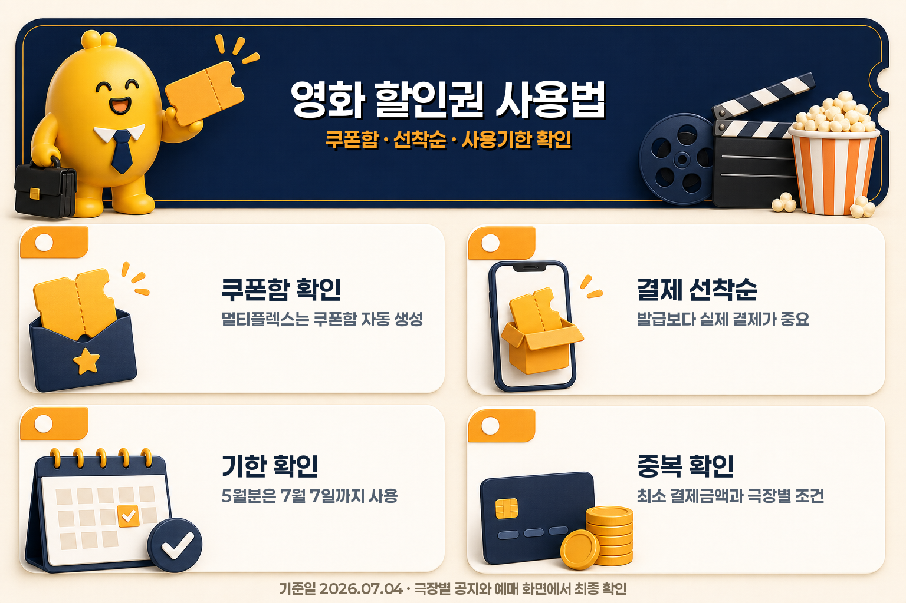
이 표에서 가장 중요한 줄은 “사용 방식”입니다. 멀티플렉스는 쿠폰함에 할인권이 자동으로 들어오더라도, 실제 할인은 결제 단계에서 선착순으로 적용됩니다. 그래서 쿠폰을 봤다는 사실보다 예매 화면에서 최종 결제금액이 내려가는지 확인하는 것이 더 중요합니다.
멀티플렉스 4사 기준 흐름은 단순합니다.
영진위 안내에 따르면 멀티플렉스 4사는 별도 다운로드 없이 온라인 회원 계정별 쿠폰함에 할인권을 자동 지급하는 방식입니다. 다만 영화관별 지원금이 소진되면 쿠폰함의 미사용 할인권도 사용 제한 또는 소멸될 수 있습니다.
즉 “쿠폰 받기”보다 “결제 때 실제 적용됐는지”가 체크 포인트입니다. 특히 주말, 인기 개봉작, 저녁 시간대처럼 예매 수요가 몰리는 구간은 결제 직전까지 할인 적용 여부를 확인하는 편이 좋습니다.
KOFIC 안내 기준으로 멀티플렉스 1차 발행은 2026년 5월 13일 오전 10시부터 시작됐고, 사용기한은 2026년 7월 7일까지로 안내되어 있습니다. 같은 안내에서 7월 중 할인권 2차 배포 예정도 함께 확인됩니다.
문체부 보도자료는 2026년 추가경정예산으로 확보한 전체 450만 장 중 절반인 225만 장을 5월 13일부터 먼저 배포하고, 나머지 절반은 여름 성수기인 7월에 배포할 예정이라고 설명했습니다.
그래서 2026년 7월 초 기준으로는 두 가지를 나눠 보면 됩니다.
| 확인할 것 | 왜 중요한가 |
|---|---|
| 기존 1차 쿠폰 사용기한 | 멀티플렉스 1차 쿠폰은 7월 7일까지로 안내됨 |
| 7월 2차 배포 공지 | 정확한 배포 시점과 적용 방식은 영화관·영진위 공지 확인 필요 |
| 쿠폰함 표시 여부 | 멀티플렉스는 계정별 쿠폰함 자동 지급 방식 |
| 결제 선착순 여부 | 보유 수량 소진 시 미사용 쿠폰도 사라질 수 있음 |
2차 배포를 기다리는 경우에는 “언제 쿠폰함에 보이는가”와 함께 “결제 단계에서 적용 가능한가”를 같이 확인해야 합니다. 공식 안내나 영화관별 공지가 업데이트되면 일정과 표현이 바뀔 수 있습니다.
멀티플렉스는 CGV, 롯데시네마, 메가박스, 씨네Q 앱이나 홈페이지를 기준으로 보면 됩니다. 현장 할인은 원칙적으로 불가하나, 장애인 및 경로 할인 대상자는 본인에 한해 현장 할인 적용이 가능한 것으로 안내되어 있습니다.
독립·예술영화전용관, 작은영화관, 실버영화관 등은 방식이 조금 다릅니다. 영진위 안내는 이들 영화관의 경우 선착순 현장 할인을 적용한다고 설명하고, 적용 기간은 2026년 5월 13일부터 10월 31일까지로 안내합니다. 다만 영화관별 지원금이 소진되면 조기 종료될 수 있습니다.
참여 영화관은 영진위 누리집 공지나 각 영화관 안내에서 확인하는 흐름이 안전합니다. 같은 6천원 할인권이라도 멀티플렉스 온라인 쿠폰과 지역 작은영화관 현장 적용 방식이 다를 수 있기 때문입니다.
문체부 보도자료 기준으로 영화 6천원 할인권은 문화가 있는 날, 장애인 우대 할인, 경로 우대 할인, 청소년 할인, 조조할인 등 기존 영화 가격 할인과 중복 적용될 수 있습니다.
둘째 주와 마지막 주 수요일에는 CGV·롯데시네마·메가박스 기준으로 영화를 1만 원에 볼 수 있는 문화가 있는 날 할인이 함께 적용되어 4천원 관람 예시가 제시됩니다. 경로 할인처럼 기존 가격이 더 낮은 경우에도 할인 뒤 금액이 1천원 미만이면 최소 부담액 1천원은 남습니다.
| 예시 상황 | 계산 흐름 | 확인할 점 |
|---|---|---|
| 일반 관람료 15,000원 | 15,000원 - 6,000원 = 9,000원 | 실제 가격은 영화관·좌석·시간대별로 다름 |
| 문화가 있는 날 10,000원 | 10,000원 - 6,000원 = 4,000원 | 둘째 주·마지막 주 수요일 조건 확인 |
| 기존 우대가 7,000원인 경우 | 7,000원 - 6,000원 = 1,000원 | 최소 부담액 1,000원 기준 확인 |
제휴카드 청구할인은 카드사별 최소 결제금액 이상 조건을 충족하면 중복 적용될 수 있습니다. 반대로 통신사 회원 할인은 중복 적용되지 않는다고 안내되어 있으니, 결제 전에 어떤 할인을 먼저 적용할지 예매 화면에서 확인하는 것이 좋습니다.
멀티플렉스 4사는 온라인 회원 계정별 쿠폰함에 할인권이 자동 지급되는 방식으로 안내되어 있습니다. 별도 다운로드가 필요하지 않다는 설명도 함께 있습니다. 다만 계정 로그인, 쿠폰함 표시, 결제 단계 적용 여부는 영화관별 앱에서 확인해야 합니다.
무조건이라고 보기는 어렵습니다. 공식 안내는 온라인 예매 시 선착순 사용 가능, 영화관별 지원금 소진 시 미사용 할인권도 사용 제한 및 소멸될 수 있다고 설명합니다. 최종 결제금액에 할인이 반영됐는지 확인해야 합니다.
멀티플렉스는 원칙적으로 온라인 예매 방식입니다. 다만 장애인 및 경로 할인 대상자는 본인에 한해 현장 할인 적용이 가능한 것으로 안내되어 있습니다. 독립·예술영화전용관, 작은영화관 등은 현장 선착순 적용이 있을 수 있어 영화관별 안내를 확인해야 합니다.
영진위 안내에는 7월 중 할인권 2차 배포 예정이라고 되어 있습니다. 문체부 보도자료도 나머지 절반을 여름 성수기인 7월에 배포할 예정이라고 설명했습니다. 정확한 일시와 쿠폰함 반영 시점은 영진위와 각 영화관 공지를 다시 확인해야 합니다.
문체부 보도자료는 문화가 있는 날 할인과 영화 6천원 할인권이 중복 적용될 수 있다고 안내합니다. CGV·롯데시네마·메가박스 기준으로 둘째 주와 마지막 주 수요일 문화가 있는 날 가격 1만 원에 6천원 할인권이 적용되면 4천원 예시가 가능합니다.
문체부 보도자료는 통신사 회원 할인은 중복 적용되지 않는다고 안내합니다. 대신 제휴카드 청구할인은 카드사별 최소 결제금액 이상 조건을 달성할 경우 중복 적용될 수 있습니다.
영화 6천원 할인권은 별도 신청보다 예매 단계 확인이 중요한 혜택입니다. 멀티플렉스 4사는 쿠폰함 자동 지급 방식이지만, 실제 사용은 결제 선착순이고 영화관별 지원금이 소진되면 쿠폰함의 미사용 할인권도 제한될 수 있습니다.
7월에는 2차 배포가 예정되어 있으므로, 영화관 앱의 쿠폰함과 영진위·영화관 공지를 같이 확인해두는 것이 좋습니다. 독립·예술영화전용관과 작은영화관은 현장 선착순 방식이 섞일 수 있으니 이용하려는 지점 안내를 먼저 확인하세요.
자료 기준일: 2026년 7월 4일 출처: 영화진흥위원회 2026 국민 영화관람 활성화 지원사업 6천원 할인권 발급 및 사용 안내, 문화체육관광부 2026년 5월 8일 보도자료 안내: 이 글은 공식 안내를 바탕으로 한 일반 정보 정리입니다. 실제 쿠폰 지급 시점, 사용 가능 여부, 잔여 수량, 중복 할인 적용 순서, 결제 조건은 예매 시점의 영화관 앱·홈페이지와 영진위 공지에서 최종 확인해야 합니다.
기차를 자주 타는 학생·청년이라면 KTX와 SRT의 연령 할인 상품을 먼저 확인해볼 만합니다. 두 회사 모두 회원 대상 할인 상품이 있지만, 나이 기준, 할인율, 예매 방법, 이용 횟수가 조금씩 다릅니다.
2026년 7월 3일 공식 안내 확인 기준으로, KTX는 코레일의 청소년 드림과 힘내라 청춘을 나눠 보면 이해하기 쉽습니다. 청소년 드림은 13~24세, 힘내라 청춘은 25~33세 청년에게 적용되는 KTX 운임 할인 상품입니다. SRT는 SRT-Blue 청소년 할인에서 13세 이상 25세 미만 대상과 10% 할인 조건을 확인할 수 있습니다.
핵심은 “나이가 맞으면 항상 같은 할인”이 아니라 할인 대상좌석과 예매 조건이 맞아야 적용된다는 점입니다. 여행 날짜를 정하기 전에 공식 앱이나 홈페이지에서 할인승차권이 열려 있는지 먼저 확인하는 흐름으로 보면 됩니다.
기준일: 2026년 7월 3일
| 구분 | 공식 상품명 | 연령 기준 | 할인율 | 예매·이용 포인트 |
|---|---|---|---|---|
| KTX | 청소년 드림 | 13~24세 청소년 | KTX 열차별 승차율에 따라 10~30% | 코레일멤버십 회원 대상, 할인좌석이 있어야 적용 |
| KTX | 힘내라 청춘 | 25~33세 청년 | KTX 열차별 승차율에 따라 10~40% | 코레일멤버십 회원 대상, 할인은 운임 중심으로 확인 |
| SRT | SRT-Blue 청소년 할인 | 13세 이상 25세 미만 | 지정 좌석 10% | SR 회원 등록·인증 후 SRT 앱/홈페이지에서 예매 |

표만 보면 KTX는 청소년과 청년 구간이 나뉘고, SRT는 청소년 할인 하나를 먼저 보면 됩니다. 특히 SRT는 공식 안내에서 1일 2회, 월 8회 이용 가능 조건과 열차 출발 20분 전까지 예매 조건을 함께 안내합니다.
KTX에서 연령 할인을 볼 때는 청소년 드림과 힘내라 청춘을 구분하는 것이 먼저입니다.
청소년 드림은 코레일멤버십 회원 중 24세까지의 청소년을 대상으로 안내됩니다. 코레일 공식 안내 기준으로, 청소년 드림은 13~24세 청소년에게 KTX 운임 할인을 제공하는 상품입니다. 할인율은 KTX 열차별 승차율에 따라 10~30% 범위로 안내됩니다.
힘내라 청춘은 25~33세 청년을 대상으로 하는 KTX 운임 할인 상품입니다. 공식 안내에서는 KTX 열차별 승차율에 따라 지정된 좌석을 10~40%까지 할인한다고 설명합니다.
| KTX에서 확인할 것 | 왜 필요한가 |
|---|---|
| 코레일멤버십 로그인 | 두 상품 모두 회원 대상 할인으로 안내됨 |
| 청소년 드림 또는 힘내라 청춘 선택 | 연령 구간에 따라 상품명이 달라짐 |
| 할인 대상열차·좌석 | 열차별 승차율과 배정 좌석에 따라 할인 여부가 달라질 수 있음 |
| 운임·요금 구분 | 할인은 운임에 적용되는 구조로 안내되며 특실 등은 별도 확인 필요 |
| 중복할인 여부 | 다른 할인과 함께 적용되지 않는 조건이 있을 수 있음 |
KTX 할인은 “KTX라서 자동 할인”이라기보다, 예매 단계에서 할인상품을 선택하고 해당 열차에 할인좌석이 남아 있을 때 적용되는 방식으로 이해하면 좋습니다.
SRT의 청소년 할인은 공식 할인제도 페이지에서 SRT-Blue로 안내됩니다. 대상은 13세 이상 25세 미만의 청소년 중 할인대상 등록과 인증절차를 마친 SR 회원입니다.
할인율은 SRT 열차별 승차율에 따라 지정된 좌석을 10% 할인하는 방식입니다. 이용방법은 열차 출발 20분 전까지 SR 홈페이지 또는 SRT 앱에서 할인승차권을 구매하는 흐름으로 안내됩니다. 이용 횟수는 1일 2회, 월 8회로 확인됩니다.
| SRT에서 확인할 것 | 내용 |
|---|---|
| 할인대상 등록·인증 | SR 회원이어도 할인대상 등록 절차가 필요할 수 있음 |
| 할인율 | SRT-Blue 청소년 할인은 10%로 안내됨 |
| 예매 경로 | SR 홈페이지 또는 SRT 앱 할인승차권 |
| 예매 마감 | 열차 출발 20분 전까지 구매 안내 |
| 이용 횟수 | 1일 2회, 월 8회 조건 확인 |
SRT 할인표는 상품별로 할인율과 대상이 다르므로, 청소년 할인은 SRT-Blue 행을 기준으로 보면 됩니다. 실제 예매할 때는 SRT 앱에서 본인에게 뜨는 할인상품명과 최종 결제금액을 함께 확인하는 것이 가장 안전합니다.
KTX와 SRT가 모두 선택 가능한 구간이라면 단순 할인율만 보지 말고 실제 결제금액을 비교하는 편이 좋습니다. KTX 힘내라 청춘은 최대 할인율이 더 커 보일 수 있지만, 해당 시간대에 할인좌석이 없으면 적용되지 않습니다. SRT-Blue는 할인율이 10%로 단순하지만, 앱에서 할인승차권이 열려 있고 시간대가 맞으면 확인이 빠릅니다.
예를 들어 같은 날 서울·수서권에서 부산 방향으로 이동한다고 가정하면, 아래 순서로 보면 됩니다.
| 비교 순서 | 확인 내용 |
|---|---|
| 1단계 | 출발역과 도착역이 KTX·SRT 모두 가능한지 확인 |
| 2단계 | 내 연령대가 KTX 청소년 드림·힘내라 청춘 또는 SRT-Blue에 맞는지 확인 |
| 3단계 | 각 앱에서 할인승차권 가격과 일반승차권 가격을 함께 조회 |
| 4단계 | 도착역 접근 시간과 교통비까지 포함해 총 이동비 비교 |
| 5단계 | 변경 가능성, 환불 조건, 좌석 선택 가능성을 확인 |
청년 교통비 절약 글에서 놓치기 쉬운 부분은 “할인율”보다 “총 이동비”입니다. 역까지 가는 지하철·버스·택시비, 출발 시간, 도착 후 이동까지 더하면 할인율이 조금 낮아도 전체 비용은 달라질 수 있습니다.
가장 큰 차이는 연령대입니다. 청소년 드림은 13~24세 청소년, 힘내라 청춘은 25~33세 청년에게 적용되는 KTX 할인상품으로 안내됩니다. 할인율도 청소년 드림은 10~30%, 힘내라 청춘은 10~40% 범위로 확인됩니다.
SRT 공식 할인제도 페이지의 SRT-Blue 청소년 할인은 10%로 안내됩니다. 대상은 13세 이상 25세 미만의 청소년 중 등록과 인증을 마친 SR 회원입니다.
할인 대상에 해당하더라도 열차별로 배정된 할인좌석이 있어야 합니다. 특히 SRT는 할인 대상좌석이 조기 매진될 수 있고, 할인율도 사전 공지 없이 변경될 수 있다고 안내합니다. KTX도 예매 화면에서 해당 할인상품과 좌석 여부를 확인해야 합니다.
할인은 보통 운임 중심으로 봐야 합니다. SRT는 특실 서비스요금은 할인에서 제외되고 일반실 운임에 대해 할인 제공한다고 안내합니다. KTX도 할인은 운임에 적용되는 구조로 안내되므로 특실·우등실 이용 시 실제 할인 적용 금액은 예매 화면에서 확인하세요.
할인승차권은 대상자 본인 사용을 전제로 봐야 합니다. SRT 공식 안내는 등록된 사람 외 다른 사람이 이용하면 할인금액 회수와 추가 부가운임, 할인자격 제한이 있을 수 있다고 설명합니다. KTX도 회원 대상 할인상품이므로 본인 이용 기준으로 확인하는 것이 안전합니다.
KTX와 SRT의 청소년·청년 할인은 나이만 보는 제도가 아니라, 회원 등록, 할인상품 선택, 할인좌석, 예매 경로를 함께 확인해야 하는 상품입니다.
KTX는 13~24세라면 청소년 드림, 25~33세라면 힘내라 청춘을 먼저 보면 됩니다. SRT는 13세 이상 25세 미만이라면 SRT-Blue 청소년 할인을 확인하면 됩니다.
여행 날짜가 정해졌다면 코레일 또는 SRT 앱에서 할인승차권을 먼저 조회해보세요. 할인율보다 중요한 것은 내가 탈 시간대에 실제로 적용되는 최종 결제금액입니다.
자료 기준일: 2026년 7월 3일 출처: 코레일 청소년 드림 안내, 코레일 힘내라 청춘 안내, 코레일 승차권예매 할인상품 메타데이터, SR 할인제도 SRT-Blue 청소년 할인 안내 안내: 이 글은 공식 안내를 바탕으로 한 일반 정보 정리입니다. 할인율, 할인좌석, 예매 가능 시간, 이용 횟수, 회원 인증 조건은 예매 시점의 코레일·SRT 공식 앱과 홈페이지에서 최종 확인해야 합니다.
지역사랑상품권은 동네에서 쓰는 생활비를 조금 줄일 수 있는 대표적인 지역 정책입니다. 다만 한 가지 앱, 한 가지 할인율, 한 가지 월 한도로 전국이 똑같이 운영되는 제도는 아닙니다.
2026년 6월 29일 공식 안내 확인 기준으로, 행정안전부는 지역사랑상품권을 지자체가 발행하는 상품권으로 설명하고, 유형은 지류·모바일·카드형이 있으며 혜택은 지방정부 자율로 구매할인 또는 포인트 적립 방식이 적용될 수 있다고 안내합니다. 구매한도도 1인당 월 200만원 이내라는 큰 틀은 있지만, 실제 한도는 지자체와 상품권 종류에 따라 달라집니다.
그래서 이 글에서는 “어디서 사면 된다”보다 구매 전 무엇을 확인해야 하는지에 초점을 맞춰 정리했습니다. 핵심은 앱, 할인율, 구매한도, 사용처 네 가지입니다.
기준일: 2026년 6월 29일
| 확인 항목 | 왜 중요한가 | 어디서 확인하나 |
|---|---|---|
| 내 지역 상품권명 | 같은 지역 안에서도 광역·자치구·시군 상품권이 나뉠 수 있음 | 지자체 홈페이지, 상품권 앱 공지 |
| 구매 앱·플랫폼 | 서울Pay+, 경기지역화폐, 제로페이 결제앱 등 지역별 경로가 다름 | 지자체 공고, 앱스토어, 공식 안내 페이지 |
| 할인율·인센티브 | 최대 10% 범위 안에서도 발행 시기와 예산에 따라 달라질 수 있음 | 발행 공고, 앱 구매 화면 |
| 월 구매한도·보유한도 | 월 50만원처럼 보이는 한도는 일부 상품권·결제조건의 사례일 수 있음 | 앱 상품권 상세, FAQ |
| 사용처 | 모든 동네 가게가 아니라 등록 가맹점에서 사용 가능 | 앱 가맹점 찾기, 제로페이 가맹점 찾기, 매장 확인 |
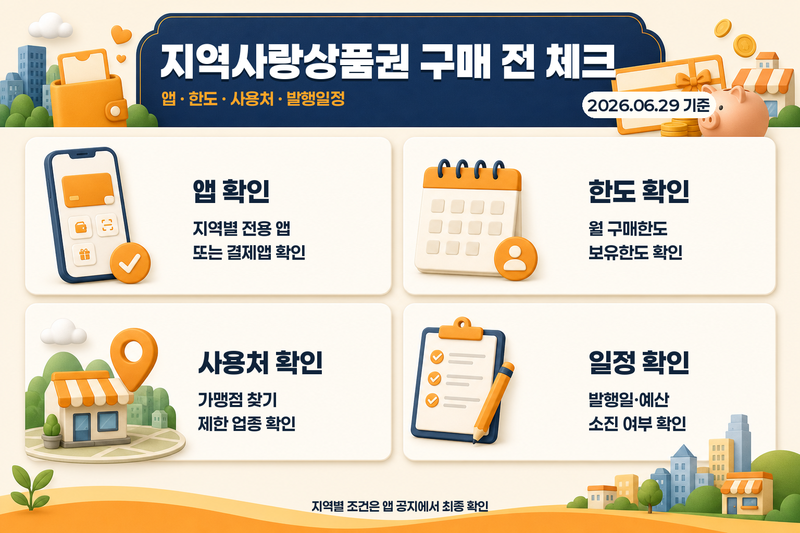
한 문장으로 줄이면, 지역사랑상품권은 구매 직전에 앱 안의 상품권 상세 화면을 확인하는 제도입니다. 할인율과 한도는 자주 바뀌고, 판매 예산이 소진되면 구매가 어려울 수 있기 때문입니다.
지역사랑상품권은 지방자치단체가 지역 내 소비를 늘리고 소상공인 매출을 돕기 위해 발행하는 상품권입니다. 행정안전부 안내에 따르면 사용처는 대형마트나 백화점 등을 제외한 관내 자영업자·소상공인 가맹점 중심이며, 사행산업이나 일정 기준에 맞지 않는 업종은 제한될 수 있습니다.
형태는 크게 세 가지입니다.
| 유형 | 특징 | 확인 포인트 |
|---|---|---|
| 모바일형 | 앱에서 구매·결제하는 방식 | 어떤 앱에서 살 수 있는지 확인 |
| 카드형 | 충전식 카드나 지역화폐 카드로 결제 | 카드 발급·충전·인센티브 조건 확인 |
| 지류형 | 종이 상품권을 판매처에서 구매 | 판매처, 현금영수증, 잔액 환급 조건 확인 |
요즘은 모바일·카드형 비중이 커서 앱 확인이 먼저입니다. 다만 지류형을 병행하는 지역도 있으니 “지역명 + 상품권”으로 공식 페이지를 확인하는 것이 가장 빠릅니다.
지역사랑상품권을 처음 살 때 가장 헷갈리는 부분이 앱입니다. 이름이 비슷해도 운영 플랫폼이 다를 수 있고, 같은 지역 안에서도 광역 상품권과 기초지자체 상품권의 구매 경로가 다를 수 있습니다.
예를 들어 서울시는 서울Pay+를 통해 서울사랑상품권 구매·결제를 안내합니다. 서울시 FAQ는 서울Pay+에서 서울사랑상품권 구매와 결제, 생활금융 서비스를 제공한다고 설명하고, 구매한도는 상품권종에 따라 달라진다고 안내합니다.
제로페이는 별도의 한 앱만 의미한다기보다 여러 결제앱에서 사용할 수 있는 결제·모바일상품권 인프라로 이해하는 편이 안전합니다. 제로페이 공식 페이지에는 결제APP 안내와 모바일상품권 사용 가능 앱 안내가 있고, 가맹점 찾기 페이지에서는 지역과 업종을 선택해 매장을 찾을 수 있습니다.
경기도는 경기지역화폐 공식 페이지에서 카드, 모바일, 지류, 현장구매, 인센티브 현황 메뉴를 따로 제공합니다. 이런 구조를 보면 지역별로 “구매 앱 → 인센티브 현황 → 가맹점 찾기”를 확인하는 흐름이 기본이라는 점을 알 수 있습니다.
구매 전에는 아래 순서대로 보면 됩니다.
지역사랑상품권의 할인은 보통 “구매할인”, “캐시백”, “포인트 적립”, “인센티브” 같은 이름으로 표시됩니다. 행정안전부는 지방정부 자율로 구매할인 또는 포인트 적립이 가능하고 최대 10%라는 기준을 안내합니다.
다만 실제 앱에서 보이는 할인율은 지역, 발행 월, 예산, 명절·행사 기간, 상품권 종류에 따라 달라질 수 있습니다. 어떤 달에는 5%일 수 있고, 특정 기간에는 더 높은 체감 혜택이 붙을 수 있으며, 예산이 끝나면 구매 자체가 닫힐 수 있습니다.
따라서 10%가 자동으로 적용된다고 보기보다는, 구매 화면에서 그 달의 조건을 확인하는 편이 좋습니다.
| 화면에서 볼 것 | 의미 |
|---|---|
| 할인율 또는 인센티브율 | 구매 즉시 할인인지, 결제 후 캐시백인지 구분 |
| 적용 기간 | 특정 발행일·행사 기간에만 적용될 수 있음 |
| 예산 소진 안내 | 판매 시작 후 조기 마감 가능성 확인 |
| 결제수단 조건 | 계좌, 체크카드, 신용카드에 따라 한도·환불이 달라질 수 있음 |
특히 “할인구매”와 “캐시백”은 체감은 비슷해도 돈이 적용되는 시점이 다릅니다. 앱에서 금액이 바로 깎이는지, 결제 후 적립되는지까지 확인해두면 헷갈릴 일이 줄어듭니다.
한도도 전국 공통 숫자 하나로 정리하기 어렵습니다. 행정안전부는 1인당 월 200만원 이내라는 제도상 범위를 안내하지만, 생활법령정보는 실제 구매한도와 보유한도가 지방자치단체마다 다르게 적용된다고 설명합니다. 예시로 월 50만원, 연 300만원처럼 월간·연간 한도를 결합해 운영할 수도 있다고 안내합니다.
서울시 FAQ도 구매한도는 상품권종에 따라 달라진다고 설명합니다. 또한 구매 계좌를 등록하지 않고 카드만 등록한 경우 한도가 제한될 수 있고, 신용카드 구매분은 별도 월 한도와 선물·환불 제한이 붙을 수 있다고 안내합니다.
구매 전에는 아래 네 가지를 같이 봐야 합니다.
| 한도 종류 | 확인 이유 |
|---|---|
| 월 구매한도 | 이번 달에 할인 구매할 수 있는 최대 금액 |
| 연간 한도 | 일부 지역은 월 한도와 연간 한도를 함께 운영 가능 |
| 보유한도 | 앱 안에 보유할 수 있는 상품권 잔액 제한 |
| 결제수단별 한도 | 계좌·카드·신용카드 조건에 따라 제한이 달라질 수 있음 |
여기서 중요한 점은 “월 50만원” 같은 숫자를 봤더라도 내 지역에 그대로 적용된다고 단정하지 않는 것입니다. 앱에서 상품권을 선택하면 상품권별 구매 가능 금액과 남은 한도가 표시되는 경우가 많으니, 구매 직전 화면을 기준으로 판단하세요.
지역사랑상품권은 지역 내 소비를 목적으로 하지만, 모든 동네 매장에서 자동으로 되는 것은 아닙니다. 행정안전부 안내처럼 대형마트·백화점 등은 제외될 수 있고, 조례나 업종 기준에 따라 제한되는 곳도 있습니다.
가장 안전한 확인 방법은 앱의 가맹점 찾기입니다. 제로페이 공식 가맹점 찾기 페이지처럼 지역, 업종, 매장명, 주소를 기준으로 찾는 방식도 있습니다. 앱에서 가맹점으로 보이더라도 실제 결제 전에는 매장에 한 번 더 확인하면 좋습니다.
특히 아래 경우는 확인이 필요합니다.
사용처를 넓게 쓰고 싶다면 구매 전 내가 자주 가는 마트, 카페, 식당, 병원, 학원 이름을 앱에서 먼저 검색해보세요. 할인율이 좋아도 실제로 쓸 곳이 적으면 체감 혜택이 떨어집니다.
대부분의 모바일·카드형 상품권은 아래 흐름으로 진행됩니다. 앱마다 메뉴명은 다를 수 있습니다.
| 단계 | 할 일 | 주의할 점 |
|---|---|---|
| 1단계 | 공식 앱 설치 | 지자체 공고에서 안내한 앱인지 확인 |
| 2단계 | 회원가입·본인인증 | 휴대폰 명의, 계좌 인증이 필요할 수 있음 |
| 3단계 | 결제수단 등록 | 계좌와 카드 등록 조건에 따라 한도 차이 가능 |
| 4단계 | 상품권 선택 | 지역, 상품권명, 할인율, 발행일 확인 |
| 5단계 | 금액 입력 후 구매 | 월 한도, 보유한도, 예산 소진 여부 확인 |
| 6단계 | 가맹점에서 결제 | QR, 바코드, 카드 결제 방식 확인 |
처음이라면 소액으로 먼저 구매해보는 것도 방법입니다. 내가 자주 가는 매장에서 결제가 잘 되는지 확인한 뒤 다음 발행 때 한도를 활용하면 실패 가능성을 줄일 수 있습니다.
지역마다 다릅니다. 서울사랑상품권은 서울Pay+ 안내를 확인하고, 제로페이 모바일상품권은 제로페이 결제APP 안내와 사용 가능 앱을 확인하는 식입니다. 경기도는 경기지역화폐 공식 페이지에서 카드·모바일·지류와 인센티브 현황을 나눠 안내합니다. 가장 정확한 출발점은 지자체 공식 공고입니다.
10%는 공식 안내에서 확인되는 최대 기준으로 이해하는 편이 안전합니다. 실제 할인율은 지역 예산과 발행 시점에 따라 달라질 수 있으므로 앱 구매 화면의 할인율을 기준으로 봐야 합니다.
아닙니다. 생활법령정보는 월 50만원, 연 300만원 같은 예시를 들지만, 구매한도와 보유한도는 지자체마다 다르게 적용된다고 설명합니다. 서울시도 구매한도는 상품권종에 따라 달라진다고 안내합니다.
등록 가맹점이면 사용할 수 있지만, 모든 매장에서 자동으로 되는 것은 아닙니다. 대형마트, 백화점, 일부 제한 업종, 지역 밖 사업자, 온라인 결제 등은 제한될 수 있으니 앱 가맹점 찾기로 먼저 확인하세요.
발행 예산이 정해진 상품권은 판매가 조기 마감될 수 있습니다. 이미 구매한 잔액 사용과 신규 구매 가능 여부는 상품권별 정책이 다를 수 있으므로 앱 공지와 상품권 상세 안내를 확인해야 합니다.
지역사랑상품권은 잘 쓰면 생활비를 줄이는 데 도움이 되지만, 조건 확인이 먼저입니다. “어느 앱에서 사는지”, “이번 발행 할인율이 얼마인지”, “내 월 한도가 얼마 남았는지”, “자주 가는 매장에서 쓸 수 있는지”를 확인해야 체감 혜택이 생깁니다.
구매 전에는 지자체 공고와 앱 상품권 상세 화면을 기준으로 확인하세요. 같은 지역사랑상품권이라도 앱, 한도, 사용처, 환불 조건이 지역별·상품권별로 달라질 수 있습니다.
자료 기준일: 2026년 6월 29일
참고한 공식 자료: 행정안전부 지역사랑상품권 안내, 찾기쉬운 생활법령정보 지역사랑상품권 구매·사용 방법, 서울특별시 서울Pay+·서울사랑상품권 FAQ, 제로페이 결제APP·가맹점 찾기, 경기지역화폐 공식 페이지.
일반 정보 정리이며, 실제 할인율·구매한도·보유한도·사용처·환불 조건은 지자체 공고와 앱 상품권 상세 화면에서 최종 확인해야 합니다.
건강보험은 병원비를 낼 때만 떠올리기 쉽지만, 미리 챙기면 의료비 부담을 줄이는 예방·치과 혜택도 있습니다. 대표적으로 일반건강검진, 치석제거, 65세 이상 치과 임플란트 급여를 확인해볼 만합니다.
2026년 6월 29일 확인 기준으로, 일반건강검진은 대상자에 해당하면 보통 2년마다 1회 받을 수 있고, 치석제거는 만 19세 이상이면 연 1회 건강보험 급여가 적용됩니다. 치과 임플란트는 만 65세 이상 등 조건을 충족할 때 평생 2개까지 건강보험 급여를 받을 수 있습니다.
기준일: 2026년 6월 29일
| 혜택 | 대상 핵심 | 주기·한도 | 비용 포인트 | 이용 경로 |
|---|---|---|---|---|
| 일반건강검진 | 지역세대주, 직장가입자, 20세 이상 세대원·피부양자 등 | 보통 2년마다 1회, 비사무직은 매년 | 기본 일반검진은 본인부담 없이 진행되는 대표 공단 검진 | 공단 홈페이지·The건강보험 앱 대상 조회 후 검진기관 예약 |
| 치석제거 | 만 19세 이상, 치석제거만으로 치료가 종료되는 경우 | 연 1회 급여, 초과 시 비급여 | 건강보험 적용으로 비용 부담이 낮아지지만 치과에서 본인부담 발생 | 치과 방문 후 급여 가능 횟수 확인 |
| 치과 임플란트 | 만 65세 이상 건강보험가입자·피부양자 중 부분무치악 환자 | 1인당 평생 2개 | 건강보험가입자는 요양급여비용 총액의 30% 본인부담 | 치과 진료 후 급여 대상자 판정·등록 |
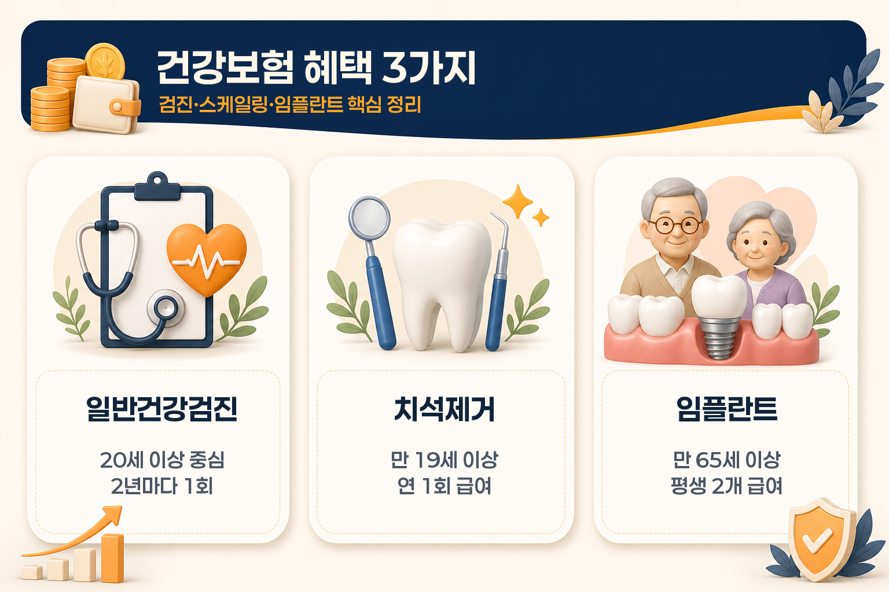
이 글의 핵심은 “어디서 신청하나”보다 각 혜택마다 적용 조건이 다르다는 점입니다. 건강검진은 대상연도와 직장 유형, 치석제거는 연 1회 급여횟수, 임플란트는 나이·치아 상태·평생 개수를 따로 봐야 합니다.
일반건강검진은 국민건강보험공단이 대상자를 선정하는 기본 검진입니다. 공단 안내 기준으로 일반건강검진 대상자는 지역세대주, 직장가입자, 20세 이상 세대원과 피부양자, 20세부터 64세까지의 의료급여수급권자입니다.
주기는 보통 매 2년마다 1회입니다. 다만 직장가입자 중 비사무직은 매년 실시 대상이 될 수 있습니다. 그래서 “20세 이상이면 무조건 올해 검진”이라고 외우기보다는, 본인의 출생연도와 가입 자격, 직장 검진 유형을 함께 확인하는 편이 정확합니다.
일반검진의 공통 항목에는 진찰과 상담, 신체계측, 시력·청력검사, 혈압측정, 흉부방사선 검사, 혈액검사, 요검사, 구강검진 등이 포함됩니다. 성별과 연령에 따라 추가 항목이 붙을 수 있습니다.
| 확인할 것 | 이유 |
|---|---|
| 올해 대상자인지 | 2년 주기와 직장 유형에 따라 대상연도가 달라질 수 있음 |
| 검진기관 예약 가능 여부 | 병원마다 검진 가능 날짜와 항목 운영이 다를 수 있음 |
| 전년도 미수검 처리 | 일부 항목은 기간 연장·추가 확인이 필요할 수 있음 |
| 신분증·문진표 | 방문 전 준비하면 접수 시간이 줄어듦 |
가장 간단한 흐름은 공단 홈페이지나 The건강보험 앱에서 검진 대상 여부를 확인하고, 가능한 검진기관을 찾아 예약하는 방식입니다. 병원에 바로 전화해도 되지만, 대상 여부를 먼저 확인하면 헛걸음을 줄일 수 있습니다.
치과 스케일링으로 많이 부르는 치석제거도 건강보험 급여가 적용되는 대표 치과 혜택입니다. 공단의 치석제거 급여안내는 만 19세 이상이고, 후속 처치 없이 치석제거만으로 치료가 종료되는 환자를 대상으로 설명합니다.
급여횟수는 연 1회입니다. 기준은 1월 1일부터 12월 31일까지의 한 해입니다. 연 1회를 넘기면 초과분은 비급여가 될 수 있으니, 올해 이미 급여 치석제거를 받았는지 치과에서 확인하는 것이 좋습니다.
여기서 중요한 점은 “연 1회 건강보험 적용”이 곧 “언제나 비용 0원”이라는 뜻은 아니라는 점입니다. 건강보험이 적용되어 비용 부담이 낮아지는 구조이고, 실제 창구에서 내는 금액은 치과 종류, 진료 내용, 보험 자격에 따라 달라질 수 있습니다.
| 치석제거 전 체크 | 설명 |
|---|---|
| 올해 급여횟수 사용 여부 | 연 1회 초과 시 비급여 가능 |
| 치석제거만으로 치료가 끝나는지 | 잇몸치료 등 후속 치료가 붙으면 진료 성격이 달라질 수 있음 |
| 본인부담 금액 | 건강보험 적용 후에도 창구 부담금은 발생할 수 있음 |
| 정기 검진 일정 | 치석제거와 구강 상태 점검을 같이 챙기기 좋음 |
치석제거는 혜택 금액 자체보다 “매년 한 번 놓치지 않고 쓰는 예방관리”로 보는 편이 좋습니다. 잇몸질환은 방치하면 치료비가 커질 수 있어서, 큰 치료 전 단계에서 점검하는 의미가 큽니다.
치과 임플란트는 금액이 큰 진료라 건강보험 적용 여부가 특히 중요합니다. 공단 안내 기준으로 대상자는 만 65세 이상 건강보험가입자 또는 피부양자이며, 부분무치악 환자가 중심입니다. 완전히 치아가 없는 완전무치악 등은 급여 기준에서 달라질 수 있습니다.
급여적용 개수는 1인당 평생 2개입니다. 상악·하악 구분 없이 모든 치식 부위에 적용될 수 있지만, 실제 급여 여부는 치과 진단과 등록 절차를 거쳐야 합니다.
건강보험가입자의 본인부담률은 요양급여비용 총액의 30%로 안내되어 있습니다. 차상위나 의료급여 대상자는 본인부담 기준이 달라질 수 있으므로 병원과 공단 안내를 함께 확인해야 합니다.
2025년 이후 눈여겨볼 변화도 있습니다. 보건복지부는 치과 임플란트 보철재료 건강보험 적용 범위를 기존 PFM Crown 중심에서 지르코니아 크라운까지 확대하는 방향을 발표했고, 건강보험심사평가원 고시 기준도 2025년 2월 1일 게시 기준에서 지르코니아 크라운 보철수복을 포함해 설명합니다.
| 확인할 것 | 왜 중요한가 |
|---|---|
| 만 65세 이상 여부 | 연령 기준을 충족해야 함 |
| 부분무치악 여부 | 치아 상태에 따라 급여 대상이 달라질 수 있음 |
| 평생 2개 사용 여부 | 이미 급여 적용을 받은 개수가 중요함 |
| 보철 재료 | PFM, 지르코니아 등 급여 인정 범위 확인 필요 |
| 치료 중단·유지관리 | 시술 단계와 사후관리 기준이 따로 있음 |
임플란트는 단순히 “지원된다”로 끝내기보다, 치과에서 급여 대상자 판정과 등록이 가능한지 먼저 확인하는 것이 안전합니다. 상담 시에는 남은 급여 개수, 예상 본인부담, 보철 재료, 추가 비급여 항목을 같이 물어보세요.
세 혜택을 한 문장으로 묶으면 “공단 앱이나 병원 예약”처럼 보일 수 있지만, 실제 이용 흐름은 조금 다릅니다.
| 혜택 | 먼저 할 일 | 그다음 할 일 |
|---|---|---|
| 일반건강검진 | 공단 홈페이지 또는 The건강보험 앱에서 대상 여부 확인 | 검진기관을 찾아 예약 후 방문 |
| 치석제거 | 치과에 올해 급여 치석제거 가능 여부 확인 | 진료 후 본인부담금 결제 |
| 임플란트 | 치과 상담으로 급여 대상 가능성 확인 | 병원에서 대상자 판정·등록 후 치료 계획 확인 |
즉 검진은 “대상 조회 → 기관 예약”이 중심이고, 스케일링과 임플란트는 “치과 진료 → 급여 가능 여부 확인”이 중심입니다. 같은 건강보험 혜택이어도 출발점이 다르다는 점을 기억하면 됩니다.
아닙니다. 일반적으로 2년마다 1회이고, 직장가입자 중 비사무직은 매년 실시 대상이 될 수 있습니다. 본인 대상 여부는 공단 홈페이지나 The건강보험 앱에서 확인하는 것이 가장 빠릅니다.
건강보험 급여 기준은 연 1회입니다. 치과 진료 자체를 더 받을 수 없다는 뜻은 아니지만, 급여횟수를 초과하면 비급여가 될 수 있습니다.
나이만으로 끝나지 않습니다. 부분무치악 등 치아 상태와 급여 기준을 충족해야 하고, 치과에서 대상자 판정과 등록 절차를 확인해야 합니다.
2025년 기준으로 치과 임플란트 보철재료 급여 인정 범위에 지르코니아 크라운이 포함되는 방향으로 기준이 정리되었습니다. 다만 실제 적용 여부는 진료 상황과 고시 기준에 따라 병원에서 확인해야 합니다.
2026년에 챙겨볼 건강보험 혜택을 세 가지만 고르면, 일반건강검진, 치석제거, 65세 이상 치과 임플란트 급여를 먼저 볼 만합니다.
일반건강검진은 대상자 조회와 검진기관 예약이 핵심이고, 치석제거는 만 19세 이상 연 1회 급여횟수 확인이 중요합니다. 임플란트는 만 65세 이상, 부분무치악, 평생 2개, 본인부담률과 보철 재료 기준을 함께 봐야 합니다.
의료 혜택은 “해당된다”는 말보다 올해 대상인지, 몇 회까지 되는지, 본인부담이 얼마인지가 더 중요합니다. 방문 전 공단·치과·검진기관에서 한 번만 확인해도 놓치는 혜택을 줄일 수 있습니다.
자료 기준일: 2026년 6월 29일 출처: 국민건강보험공단 일반건강검진 안내, 국민건강보험공단 치석제거 급여안내, 국민건강보험공단 치과임플란트 급여안내, 보건복지부 치과 임플란트 보철재료 확대 보도자료, 건강보험심사평가원 치과임플란트 인정기준 안내: 이 글은 건강보험 혜택을 이해하기 위한 일반 정보입니다. 개인별 대상 여부, 본인부담, 급여 적용 가능성은 보험 자격, 진료 내용, 병원 판단, 최신 고시에 따라 달라질 수 있습니다.
아기가 태어나면 출산가정이 가장 먼저 확인해볼 만한 지원 제도 중 하나가 첫만남이용권입니다. 출생 아동에게 국민행복카드 바우처 포인트를 지급해 생애 초기 양육비 부담을 덜어주는 제도입니다.
2026년 6월 29일 확인 기준으로, 2024년 1월 1일 이후 출생아는 첫째아 200만 원, 둘째아 이상 300만 원이 지급됩니다. 신청은 읍·면·동 주민센터 방문, 복지로 온라인 신청, 정부24의 행복출산 통합신청 경로로 확인할 수 있습니다. 다만 자동으로 돈이 들어오는 제도가 아니라, 출생신고와 신청 흐름을 함께 챙겨야 합니다.
기준일: 2026년 6월 29일
| 구분 | 내용 |
|---|---|
| 지원대상 | 출생신고가 완료되어 정상적으로 주민등록번호를 부여받은 출생아 |
| 지원금액 | 2024년 1월 1일 이후 출생아 기준 첫째아 200만 원, 둘째아 이상 300만 원 |
| 지급방식 | 원칙적으로 국민행복카드 이용권, 즉 바우처 포인트 지급 |
| 사용기한 | 2024년 이후 출생아는 주민등록상 생년월일로부터 2년 안에 사용 |
| 신청경로 | 읍·면·동 행정복지센터, 복지로, 정부24 행복출산 통합신청 |
| 사용범위 | 일부 제외 업종을 뺀 전 업종에서 사용 가능 |
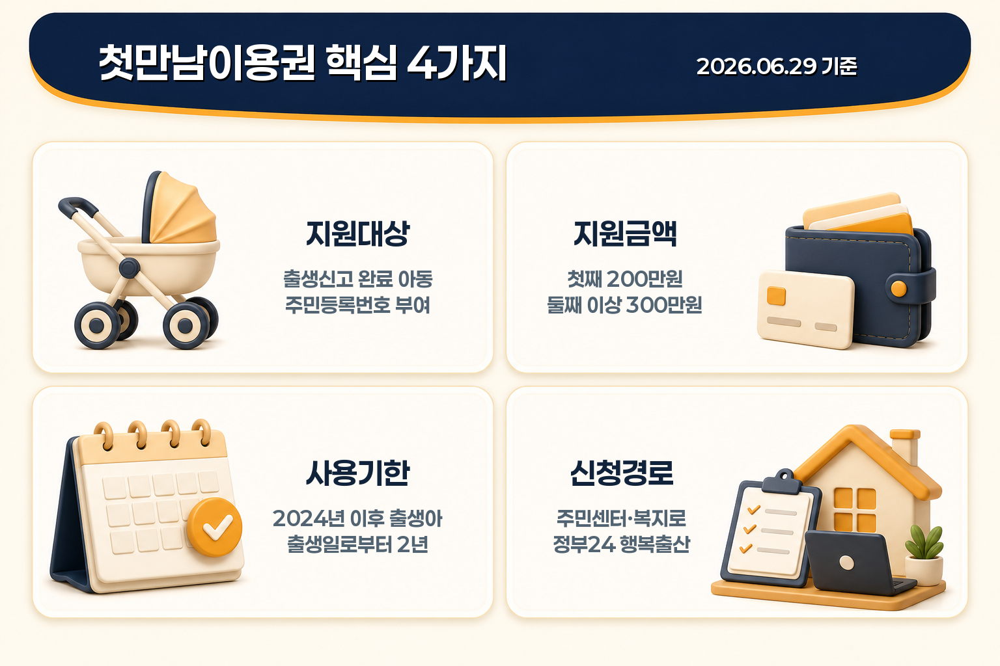
이 글에서 중요한 포인트는 “얼마를 받느냐”만이 아닙니다. 실제로는 출생순위에 따른 금액, 신청 경로, 2년 사용기한, 제외 업종을 함께 봐야 헷갈리지 않습니다.
첫만남이용권은 출생 아동에게 200만 원 이상의 이용권을 지급해 초기 양육비 부담을 줄여주는 출산 지원 제도입니다. 현금처럼 아무 계좌에 입금되는 방식이 아니라, 원칙적으로 국민행복카드에 바우처 포인트가 지급되는 구조입니다.
이미 임신·출산 진료비 지원 등을 위해 국민행복카드를 가지고 있다면 기존 카드에 지급받을 수 있습니다. 카드가 없다면 신청 과정에서 국민행복카드 발급과 바우처 등록 흐름을 함께 확인해야 합니다.
예외적으로 아동양육시설 보호 아동 등 일부 경우에는 현금 지급이 인정될 수 있지만, 일반 출산가정은 국민행복카드 바우처로 이해하는 편이 안전합니다.
공식 안내 기준으로 지원대상은 출생아로서 출생신고가 되어 정상적으로 주민등록번호를 부여받은 아동입니다. 2024년 이후 출생아는 주민등록상 생년월일로부터 2년이 지나지 않아야 합니다.
그래서 신청 흐름에서 먼저 확인할 것은 “출생신고가 되었는지”입니다. 출생신고와 함께 정부24 행복출산 통합신청을 진행할 수 있고, 출생신고 이후에도 별도로 신청할 수 있습니다.
| 상황 | 확인할 점 |
|---|---|
| 출생신고 전 | 일반적으로 주민등록번호 부여 전이라 신청 흐름을 먼저 확인해야 함 |
| 출생신고와 동시에 | 행복출산 통합신청으로 관련 출산지원 서비스를 함께 신청 가능 |
| 출생신고 이후 | 복지로 또는 주민센터 경로로 첫만남이용권 신청 가능 |
| 특수 사례 | 시설 보호, 미혼부 출생신고 진행 등은 지자체 안내와 구비서류 확인 필요 |
2024년 1월 1일 이후 출생아 기준으로 첫만남이용권 금액은 출생순위에 따라 달라집니다.
| 출생순위 | 지급금액 |
|---|---|
| 첫째아 | 200만 원 |
| 둘째아 이상 | 300만 원 |
여기서 “출생아당 200만 원 이상”이라는 표현만 보고 모두 200만 원으로 이해하거나, 반대로 모든 아기가 300만 원이라고 생각하면 헷갈릴 수 있습니다. 현재 안내 기준에서는 첫째 200만 원, 둘째 이상 300만 원으로 구분해서 보는 것이 핵심입니다.
쌍둥이처럼 다태아인 경우에는 각각의 출생아 기준으로 확인해야 합니다. 실제 출생순위와 지급 처리 방식은 주민등록과 지자체 접수 기준으로 확인하는 것이 좋습니다.
첫만남이용권은 방문과 온라인 경로가 모두 열려 있습니다.
| 신청경로 | 특징 |
|---|---|
| 읍·면·동 행정복지센터 | 출생신고 또는 출생신고 이후 방문 신청 흐름에서 확인 가능 |
| 복지로 | 온라인 신청 경로: 복지급여 신청 > 임신출산 > 첫만남이용권 |
| 정부24 행복출산 | 출생신고와 함께 여러 출산지원 서비스를 통합신청하는 경로 |
정부24의 행복출산 서비스는 출생신고와 함께 각종 출산지원 서비스를 한 번에 신청할 수 있도록 만든 통합신청 서비스입니다. 첫만남이용권도 이 흐름에서 확인할 수 있으므로, 출생신고를 앞두고 있다면 “출생신고만 끝내기”보다 행복출산 통합신청 항목까지 같이 보는 편이 좋습니다.
온라인 신청은 본인 인증, 가족관계, 신청자격, 카드사 선택 등 단계에서 추가 확인이 필요할 수 있습니다. 대리 신청이나 특수 사례는 온라인으로 끝나지 않을 수 있으니 주민센터 안내를 함께 확인하세요.
공식 안내는 유흥업종, 사행업종, 마사지 등 일부 위생업종, 레저업종, 성인용품, 면세점 등을 제외한 전 업종에서 사용 가능하다고 설명합니다. 즉 기저귀, 분유, 아기용품, 산후 회복에 필요한 생활 지출 등에는 넓게 활용할 수 있습니다.
다만 “전 업종”이라는 표현을 무제한으로 이해하면 안 됩니다. 바우처는 카드 가맹점 업종 분류에 따라 결제 승인 여부가 갈릴 수 있고, 제외 업종에서는 사용할 수 없습니다.
| 사용할 때 확인할 것 | 왜 중요한가 |
|---|---|
| 업종 제한 | 유흥·사행·일부 위생·레저·성인용품·면세점 등 제외 |
| 카드사/가맹점 분류 | 실제 결제 가능 여부가 업종 코드에 따라 달라질 수 있음 |
| 잔액과 사용기한 | 2024년 이후 출생아는 출생일로부터 2년 안에 사용해야 함 |
| 큰 결제 전 확인 | 고가 육아용품 결제 전 바우처 사용 가능 여부를 확인하는 편이 안전 |
첫만남이용권은 출산 직후 필요한 지출에 쓰기 좋지만, 사용기한이 있습니다. 2024년 이후 출생아는 출생일로부터 2년 안에 사용해야 합니다.
이 기한은 생각보다 중요합니다. 출산 직후에는 병원, 산후조리, 육아용품, 가족 서류 정리처럼 처리할 일이 많아서 바우처 잔액과 기한 확인이 뒤로 밀릴 수 있습니다. 특히 둘째 이상 가정은 300만 원 규모라 금액이 더 크기 때문에, 몇 달에 나누어 사용할 계획이라면 기한을 미리 체크해두는 것이 좋습니다.
추천하는 확인 순서는 다음과 같습니다.
첫만남이용권은 출생 직후 한 번 지급되는 바우처 성격의 지원입니다. 부모급여나 아동수당처럼 매월 들어오는 급여와는 성격이 다릅니다. 출산지원 서비스를 신청할 때 같이 안내될 수 있지만, 지급 방식과 목적을 구분해서 보는 것이 좋습니다.
| 구분 | 첫만남이용권에서 볼 점 |
|---|---|
| 지급 성격 | 출생아 기준 1회성 바우처 |
| 지급 방식 | 국민행복카드 포인트가 원칙 |
| 확인 기준 | 출생신고, 주민등록번호, 출생순위, 사용기한 |
| 헷갈리는 지점 | 다른 출산·양육 지원금과 신청 화면에서 함께 보일 수 있음 |
이 글은 첫만남이용권 자체를 기준으로 정리한 글입니다. 다른 지원금은 금액, 연령, 지급 방식, 소득 기준이 다를 수 있으므로 같은 화면에 보이더라도 각각의 안내를 따로 확인해야 합니다.
자동 지급으로 이해하면 위험합니다. 출생신고 과정에서 안내를 받을 수 있고, 정부24 행복출산 통합신청으로 함께 신청할 수 있지만, 실제로는 신청과 카드 등록 흐름을 확인해야 합니다.
아닙니다. 2024년 1월 1일 이후 출생아 기준으로 첫째아는 200만 원, 둘째아 이상은 300만 원으로 안내되어 있습니다.
반드시 새로 만들어야 하는 것은 아닙니다. 기존 국민행복카드가 있는 경우 기존 카드에 바우처 포인트가 지급될 수 있습니다. 다만 실제 등록 카드와 카드사는 신청 과정에서 확인해야 합니다.
아닙니다. 읍·면·동 행정복지센터 방문 신청도 가능하고, 복지로 또는 정부24 경로도 확인할 수 있습니다. 대리 신청이나 특수 사례는 구비서류가 달라질 수 있습니다.
아닙니다. 유흥업종, 사행업종, 일부 위생업종, 레저업종, 성인용품, 면세점 등 제외 업종이 있습니다. 또한 실제 결제 가능 여부는 카드 가맹점 업종 분류에 영향을 받을 수 있습니다.
첫만남이용권은 출산가정의 초기 지출을 덜어주는 실용적인 제도입니다. 2026년 6월 29일 확인 기준으로 핵심은 첫째아 200만 원, 둘째아 이상 300만 원, 국민행복카드 바우처, 출생일로부터 2년 사용기한입니다.
출생신고를 앞두고 있다면 정부24 행복출산 통합신청 항목을 함께 확인하고, 출생신고 이후라면 복지로 또는 주민센터 신청 경로를 확인하세요. 신청이 끝난 뒤에는 국민행복카드 포인트 지급 여부, 잔액, 사용기한, 제외 업종을 한 번 더 보는 것이 좋습니다.
※ 이 글은 2026년 6월 29일 공개된 보건복지부·복지로·정부24 안내를 바탕으로 정리한 일반 정보입니다. 제도 세부 기준, 신청 화면, 사용처 제한은 바뀔 수 있으므로 실제 신청 전에는 복지로, 정부24, 주민센터, 카드사 안내를 함께 확인하세요.
정부24에서는 내가 신청해볼 만한 정부·지자체 혜택을 한곳에서 찾아볼 수 있습니다. 그중 핵심 메뉴가 혜택알리미이고, 여기에서 `나의 혜택`, `간편찾기`, `전체 혜택`, `설정` 같은 항목을 확인할 수 있습니다.
이 글은 블로그를 보고 바로 따라 할 수 있도록, 정부24에서 나의 혜택을 조회하는 흐름을 정리한 안내입니다. 다만 조회 결과는 “받을 돈 확정”이 아니라 신청 가능성이 있는 혜택 후보로 보는 것이 안전합니다. 실제 대상 여부는 각 혜택의 신청요건, 기간, 담당기관 확인까지 봐야 합니다.
기준일: 2026년 6월 28일
정부24는 민원 서비스뿐 아니라 정부혜택, 정책정보, 기관정보 등을 찾고 신청·조회·발급할 수 있는 정부 대표 포털입니다. 혜택알리미는 그중에서 내 조건과 관련 있을 수 있는 공공 혜택을 찾아보는 메뉴입니다.
정부24 혜택알리미 화면에서는 아래 메뉴가 확인됩니다.
| 메뉴 | 이렇게 보면 됩니다 |
|---|---|
| 나의 혜택 | 내 조건에 맞을 수 있는 혜택 후보를 확인하는 곳 |
| 간편찾기 | 조건을 직접 골라 혜택을 찾아보는 곳 |
| 전체 혜택 | 현재 등록된 혜택을 넓게 살펴보는 곳 |
| 관심 | 나중에 다시 볼 혜택을 모아두는 곳 |
| 설정 | 맞춤안내 조건, 알림, 가족 맞춤안내 등을 관리하는 곳 |
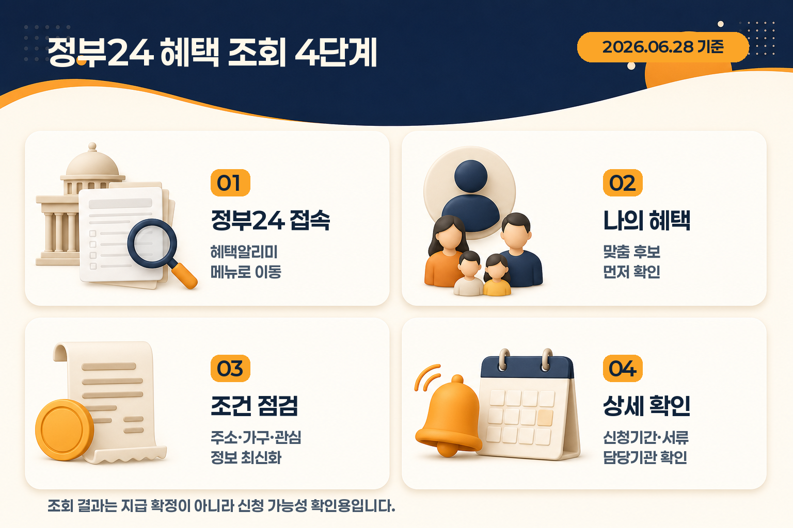
처음이라면 `나의 혜택`부터 보면 됩니다. 그다음 놓친 항목이 없는지 `간편찾기`와 `전체 혜택`을 보조로 확인하면 흐름이 자연스럽습니다.
정부24에 익숙하지 않아도 순서는 어렵지 않습니다. 아래 순서대로 보면 됩니다.
| 순서 | 확인할 것 | 왜 필요한가 |
|---|---|---|
| 1 | 정부24 접속 또는 정부24 앱 실행 | 혜택알리미 메뉴로 들어가기 위해 |
| 2 | 혜택알리미 메뉴 선택 | 나의 혜택, 간편찾기, 전체 혜택을 보기 위해 |
| 3 | 나의 혜택 확인 | 현재 맞춤 안내되는 후보를 먼저 보기 위해 |
| 4 | 설정 점검 | 주소, 관심 분야, 가족 맞춤안내 등 조건이 오래됐는지 보기 위해 |
| 5 | 상세 화면 확인 | 신청기간, 필요서류, 담당기관을 확인하기 위해 |
여기서 가장 중요한 단계는 마지막입니다. 나의 혜택에 어떤 항목이 보였다고 해서 바로 지원금이 지급되는 것은 아닙니다. 상세 화면에서 신청 자격, 신청 기간, 제출 서류, 담당기관 안내를 확인해야 실제 신청 여부를 판단할 수 있습니다.
정부24 나의 혜택은 “내가 받을 수 있는 돈 목록”이라기보다, 내 조건과 관련 있을 수 있는 공공 혜택 후보 목록에 가깝습니다. 그래서 결과를 볼 때는 아래처럼 해석하면 좋습니다.
| 화면에서 보이는 상황 | 이렇게 해석 | 다음 행동 |
|---|---|---|
| 혜택 후보가 보임 | 신청 가능성이 있는 항목일 수 있음 | 상세 요건과 신청기간 확인 |
| 관심 혜택만 보임 | 내가 저장한 항목 중심일 수 있음 | 현재 대상 여부를 다시 확인 |
| 결과가 적게 나옴 | 조건 정보가 부족하거나 해당 시점 사업이 적을 수 있음 | 설정과 간편찾기 재확인 |
| 조건 변경 후 결과가 달라짐 | 맞춤안내 조건 영향 가능성 | 주소·가구·관심 분야 최신화 |
| 같은 혜택이 다른 곳에서도 보임 | 중앙부처·지자체 안내가 겹칠 수 있음 | 담당기관과 신청 경로 확인 |
결과가 없다고 해서 받을 수 있는 혜택이 전혀 없다는 뜻은 아닙니다. 이사, 취업·퇴사, 결혼, 출산, 소득 변화, 사업자 등록, 차량·주택 보유 변화처럼 생활 조건이 바뀌면 다시 조회해볼 만합니다.

혜택 조회는 한 번만 누르고 끝내기보다, 설정을 같이 봐야 더 쓸모가 있습니다. 정부24 혜택알리미 설정 영역에서는 알림 설정, 맞춤안내 조건 설정, 가족 맞춤안내 설정, 개인정보 활용 이력 같은 항목이 확인됩니다.
특히 아래 세 가지는 한 번 점검해두면 좋습니다.
| 설정 항목 | 확인 이유 |
|---|---|
| 맞춤안내 조건 | 주소, 생활 상황, 관심 분야가 현재와 맞는지 확인 |
| 가족 맞춤안내 | 가족 관련 혜택을 함께 볼 수 있는지 확인 |
| 알림 설정 | 새 혜택이나 신청 가능 안내를 놓치지 않기 위해 확인 |
다만 가족 맞춤안내나 개인정보 활용에는 동의와 설정이 필요할 수 있습니다. 블로그 글만 보고 “가족 혜택이 자동으로 전부 나온다”고 기대하기보다는, 정부24 화면의 동의·설정 안내를 기준으로 보는 편이 안전합니다.
나의 혜택 조회에서 가장 흔한 오해는 “조회됐다 = 바로 받을 수 있다”입니다. 실제로는 지원사업마다 예산, 신청기간, 거주지, 소득·재산 기준, 가구 기준, 나이, 취업 상태, 필요서류가 달라질 수 있습니다.
따라서 관심 있는 혜택이 보이면 아래 순서로 한 번 더 확인하세요.
이 과정을 거치면 “좋아 보이는 혜택”과 “실제로 신청해볼 수 있는 혜택”을 구분하기 쉬워집니다.
아닙니다. 나의 혜택에 보이는 항목은 신청 가능성이 있는 후보로 봐야 합니다. 신청기간, 소득·재산 기준, 주소지, 가구 기준, 필요서류, 예산 소진 여부를 상세 화면에서 확인해야 합니다.
그렇게 단정하기 어렵습니다. 맞춤 조건이 충분히 반영되지 않았거나, 해당 시점에 신청 가능한 사업이 적거나, 지자체 공고가 별도로 운영될 수 있습니다. 조건이 바뀌었을 때 다시 확인하고, 간편찾기와 전체 혜택도 함께 보는 편이 좋습니다.
정부24 혜택알리미에는 가족 맞춤안내 설정 항목이 확인됩니다. 다만 가족 정보 활용에는 동의와 설정이 필요할 수 있고, 실제 대상 여부는 각 사업 요건을 기준으로 판단됩니다.
정부24 화면에는 앱에서 필요한 민원서비스, 혜택, 생활정보를 확인할 수 있다는 안내가 확인됩니다. 웹과 앱 화면 구성은 달라질 수 있으니, 검색창이나 메뉴에서 혜택알리미를 찾아 들어가면 됩니다.
맞춤형으로 보려면 로그인과 서비스 이용 동의, 맞춤안내 조건 설정이 필요할 수 있습니다. 어떤 정보가 활용되는지는 정부24 화면의 동의·설정 안내를 기준으로 확인하세요.
정부24 나의 혜택 조회는 내가 신청해볼 만한 공공 혜택 후보를 찾는 출발점입니다. 핵심은 혜택알리미에 들어가 나의 혜택을 보고, 설정에서 조건을 점검하고, 관심 있는 항목은 상세 요건까지 확인하는 것입니다.
결과가 나오면 바로 기대하기보다 신청기간과 담당기관을 확인하고, 결과가 없으면 생활 조건이 바뀌는 시점에 다시 확인해보세요. 그렇게 봐야 정부24 나의 혜택 조회가 단순한 메뉴 안내가 아니라 실제 생활머니 점검 루틴이 됩니다.
자료 기준일: 2026년 6월 28일. 이 글은 정부24 혜택알리미 공개 페이지와 정부24 포털 설명을 바탕으로 정리한 일반 정보입니다. 개인별 지원금 대상 여부는 로그인 후 조회 결과, 각 사업의 신청요건, 담당기관 심사, 최신 공고에 따라 달라질 수 있습니다.

에어컨 전기세를 계산할 때 핵심은 에어컨만 따로 떼어 보는 것이 아니라 우리 집 기존 월 사용량에 에어컨 추가 사용량을 더한 뒤, 누진구간 어디에 걸리는지 보는 것입니다. 같은 에어컨을 같은 시간 틀어도 이미 350kWh를 쓰던 집과 250kWh를 쓰던 집의 체감 증가폭은 다를 수 있습니다.
2026년 6월 28일 기준으로, 7~8월 주택용 전기요금은 여름철 누진구간 완화 구조를 적용해 1단계가 0~300kWh, 2단계가 301~450kWh, 3단계가 451kWh 이상으로 이해하면 됩니다. 다만 실제 청구액은 계약종별, 저압·고압, 복지할인, 기후환경요금, 연료비조정요금, 부가가치세, 전력산업기반기금 등에 따라 달라지므로 최종 금액은 한전 전기요금계산기로 다시 확인해야 합니다.
기준일: 2026년 6월 28일
검색창에 “에어컨 전기세 계산”을 넣으면 보통 소비전력에 사용시간을 곱하는 식부터 떠올립니다. 이 식도 필요하지만, 순서가 조금 다릅니다.
먼저 최근 전기요금 고지서나 한전ON에서 월 사용량 kWh를 확인해야 합니다. 전기요금은 사용량 구간에 따라 단가가 달라지는 구조라, 에어컨이 새로 더한 100kWh가 어느 구간에 들어가는지가 중요합니다.
| 먼저 확인할 숫자 | 왜 필요한가 |
|---|---|
| 최근 월 사용량 kWh | 우리 집이 이미 어느 누진구간 근처인지 확인 |
| 검침기간 | 내가 생각하는 달과 실제 청구 기간이 다를 수 있음 |
| 계약종별 | 주택용 저압, 고압, 관리비 포함 아파트 등 조건 차이 |
| 할인 여부 | 복지할인, 대가족·다자녀 등은 실제 청구액에 영향 |
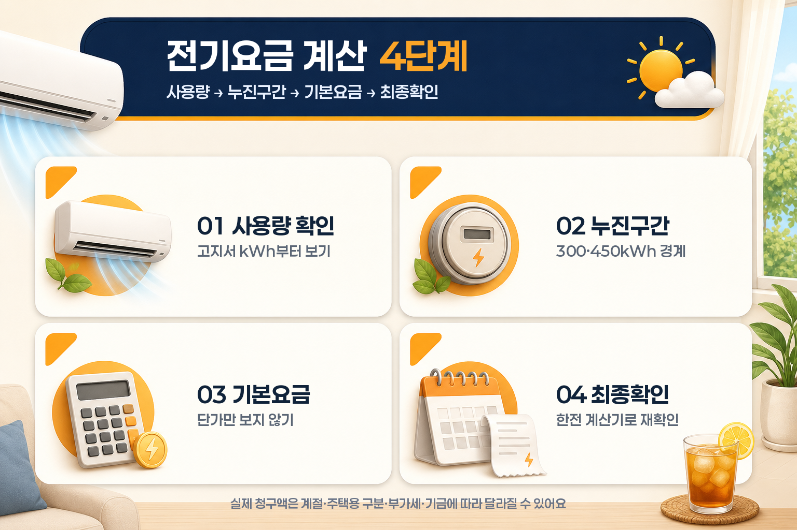
예를 들어 평소 280kWh를 쓰는 집은 에어컨 때문에 120kWh가 늘어도 400kWh 수준입니다. 반면 평소 350kWh를 쓰는 집이 같은 120kWh를 더 쓰면 470kWh가 되어 450kWh 경계를 넘습니다. 그래서 “에어컨 몇 시간”보다 먼저 “우리 집 출발점이 몇 kWh인가”를 봐야 합니다.
정책자료 기준으로 여름철 7~8월 주택용 누진구간은 1단계와 2단계 구간이 넓어져 있습니다. 계산할 때는 아래처럼 단순화해서 보면 이해하기 쉽습니다.
| 하계 사용량 구간 | 계산할 때 볼 포인트 |
|---|---|
| 0~300kWh | 300kWh까지는 첫 구간 안에서 움직임 |
| 301~450kWh | 300kWh를 넘은 사용량이 두 번째 구간으로 들어감 |
| 451kWh 이상 | 450kWh 초과분이 세 번째 구간으로 들어감 |
여기서 조심할 점은 451kWh가 되었다고 해서 전체 451kWh가 전부 가장 높은 단가로 계산되는 것은 아니라는 점입니다. 보통 누진제는 구간별로 나누어 계산합니다. 즉 600kWh를 썼다면 첫 300kWh, 다음 150kWh, 450kWh를 넘은 나머지 150kWh처럼 나눠 보는 방식입니다.
에어컨이 한 달에 더하는 사용량은 아래 식으로 대략 잡을 수 있습니다.
소비전력(kW) × 하루 사용시간 × 사용일수 = 추가 사용량(kWh)
예를 들어 소비전력 0.8kW로 가정한 에어컨을 하루 5시간, 30일 사용하면 0.8 × 5 × 30 = 120kWh입니다. 다만 인버터 에어컨은 실내외 온도, 설정온도, 단열, 필터 상태에 따라 실제 소비전력이 계속 달라질 수 있습니다. 그래서 이 숫자는 정확한 청구액이 아니라 “추가 사용량 감 잡기”로만 쓰는 편이 안전합니다.
| 가정 | 추가 사용량 예시 |
|---|---|
| 0.8kW × 하루 3시간 × 30일 | 72kWh |
| 0.8kW × 하루 5시간 × 30일 | 120kWh |
| 0.8kW × 하루 8시간 × 30일 | 192kWh |
우리 집 에어컨의 정격 소비전력은 제품 라벨이나 설명서에서 확인할 수 있습니다. 실제 사용량은 그보다 낮거나 높게 움직일 수 있으니, 가능하면 한전ON의 일별·월별 사용량 흐름과 함께 보는 것이 좋습니다.
아래 예시는 주택용 저압 하계 누진구간을 이해하기 위한 단순 예시입니다. 전력량요금과 기본요금 중심으로 계산한 값이며, 실제 청구액에는 기후환경요금, 연료비조정요금, 부가가치세, 전력산업기반기금 등이 더해질 수 있습니다.
| 월 사용량 | 단순 계산 포인트 | 기본요금+전력량요금 예시 |
|---|---|---|
| 300kWh | 1단계 안에서 계산 | 약 36,910원 |
| 450kWh | 1단계 300kWh + 2단계 150kWh | 약 69,790원 |
| 600kWh | 1단계 300kWh + 2단계 150kWh + 3단계 150kWh | 약 121,585원 |
이 표에서 봐야 할 것은 “정확한 청구액”이 아니라 증가 방향입니다. 300kWh에서 450kWh로 갈 때와 450kWh에서 600kWh로 갈 때는 같은 150kWh 증가라도 구간이 달라져 체감이 달라질 수 있습니다.
조금 더 생활 예시로 보면 이렇습니다.
| 평소 사용량 | 에어컨 추가 120kWh 후 | 해석 |
|---|---|---|
| 280kWh | 400kWh | 300kWh를 넘지만 450kWh 안쪽 |
| 350kWh | 470kWh | 450kWh를 넘어 3단계 초과분 발생 |
그래서 에어컨 전기세를 줄이고 싶다면 “무조건 몇 시간만 틀기”보다 이번 달 예상 사용량이 300kWh 또는 450kWh 근처인지를 먼저 확인하는 편이 실용적입니다.
최종 금액은 한전 전기요금계산기에서 확인하는 것이 가장 안전합니다. 계산기에는 보통 계약종별, 주거용 여부, 사용기간, 사용량 같은 정보가 필요합니다.
| 입력 항목 | 확인 위치 |
|---|---|
| 계약종별 | 고지서 또는 한전ON 계약정보 |
| 사용기간 | 전기요금 고지서의 검침기간 |
| 사용량 kWh | 고지서, 한전ON, 관리비 명세서 |
| 할인·감면 | 복지할인, 대가족·다자녀 등 해당 여부 |
특히 아파트 관리비에 전기요금이 포함되는 경우에는 한전이 개별 세대와 직접 계약한 구조인지, 관리사무소가 고압으로 받아 세대별로 나누는 구조인지에 따라 체감 계산이 달라질 수 있습니다. 이때는 관리비 명세서의 전기 사용량과 단가 표시를 함께 확인해야 합니다.
첫째, 에어컨 소비전력만 보고 월 전기요금을 단정하는 것입니다. 에어컨 사용량은 출발점일 뿐이고, 기존 가전 사용량과 누진구간이 함께 작동합니다.
둘째, 451kWh가 되면 전체 사용량이 모두 3단계 단가로 계산된다고 오해하는 것입니다. 실제로는 구간별로 나눠 계산하는 방식으로 이해해야 합니다.
셋째, 전력량요금만 보고 최종 청구액이라고 생각하는 것입니다. 실제 청구액에는 기본요금 외에도 여러 조정 항목과 세금·기금이 붙을 수 있습니다.
넷째, 에너지캐시백과 전기요금 계산을 같은 문제로 섞는 것입니다. 에너지캐시백은 과거 사용량보다 줄였는지를 보는 별도 제도이고, 전기요금 계산은 이번 달 사용량과 계약 조건을 보는 문제입니다.
한국에너지공단은 여름철 냉방온도를 26℃ 이상으로 설정하고, 에어컨 사용 시 선풍기를 함께 활용하며, 창문과 문을 닫아 냉기가 빠져나가지 않게 하라고 안내합니다. 필터 청소, 차광, 실외기 주변 통풍도 냉방 효율과 연결됩니다.
아래 항목은 전기요금을 계산하기 전후에 바로 확인해두면 좋습니다.
에어컨 소비전력, 설정온도, 실내외 온도, 단열, 사용기간에 따라 달라집니다. 그래서 “몇 시간 = 얼마”로 바로 단정하기보다, 소비전력 × 사용시간으로 추가 kWh를 대략 잡고 기존 월 사용량에 더해 한전 계산기에 넣는 순서가 안전합니다.
없어지는 것은 아닙니다. 7~8월에는 주택용 누진구간이 완화되어 1단계와 2단계 구간이 넓어지는 구조로 이해하면 됩니다. 여전히 사용량이 늘면 구간별 단가와 기본요금이 달라질 수 있습니다.
개별 세대가 한전과 직접 계약한 경우와 아파트가 고압으로 받아 세대별로 배분하는 경우는 확인 방식이 다를 수 있습니다. 관리비 명세서에 표시된 사용량과 단가, 관리사무소 안내, 한전 계산기 조건을 함께 봐야 합니다.
가능합니다. 입력한 사용기간, 계약종별, 할인·감면, 조정요금, TV수신료 등 포함 항목이 다르면 차이가 날 수 있습니다. 계산기는 예상 확인용으로 쓰고, 실제 납부액은 고지서와 한전ON 조회 결과를 기준으로 봐야 합니다.
에어컨 전기세 계산의 출발점은 에어컨 소비전력이 아니라 우리 집 기존 전기 사용량입니다. 최근 고지서에서 kWh를 보고, 에어컨 사용으로 늘어날 kWh를 더한 뒤, 300kWh와 450kWh 경계 근처인지 확인해 보세요.
계산 순서는 간단합니다. 고지서 사용량 확인 → 에어컨 추가 kWh 추정 → 7~8월 누진구간 확인 → 한전 전기요금계산기로 재확인입니다. 이 흐름만 잡아도 “에어컨을 틀면 무조건 폭탄”이라는 막연한 불안보다, 어느 지점에서 요금이 커지는지 훨씬 선명하게 볼 수 있습니다.
※ 이 글은 2026년 6월 28일 공개 자료 기준의 일반 정보 정리입니다. 실제 전기요금은 계약종별, 사용기간, 저압·고압 여부, 할인·감면, 조정요금, 세금·기금, 한전 요금표 변경에 따라 달라질 수 있습니다. 최종 금액은 한전 전기요금계산기와 실제 고지서를 기준으로 확인하세요.
월말에 카드값과 통장 잔액을 보면 이상하게 돈이 더 빠진 것처럼 느껴질 때가 있습니다. 이럴 때 먼저 볼 곳은 소비 내역 전체가 아니라 매달 자동으로 나가는 고정비의 출구입니다.
매달 빠져나가는 고정비를 좀 더 쉽게 확인하고 싶다면 어카운트인포에서 계좌자동이체와 카드자동납부를 나눠 보는 것을 추천합니다. 통장에서 바로 빠지는 항목과 카드 청구서에 붙는 항목은 경로가 다르고, 해지·변경 뒤에는 결과확인까지 따로 보는 편이 안전합니다.
| 먼저 볼 곳 | 찾을 수 있는 누수 | 월말에 할 일 |
|---|---|---|
| 계좌자동이체 | 통신비, 보험료, CMS, 회비처럼 통장에서 바로 빠지는 돈 | 낯선 기관명, 예전 계좌, 중복 납부 표시 |
| 카드자동납부 | 카드 청구서에 묶여 들어오는 생활요금과 정기 납부 | 쓰지 않는 카드에 남은 자동납부, 카드 변경 필요 항목 |
| 결과확인 | 해지·변경 신청 뒤 실제 처리 여부 | 다음 결제 전에 처리 상태 확인 |
| 안심차단 | 오픈뱅킹·비대면 계좌개설·여신거래 관련 보안 차단 | 고정비 정리와 별도로 보안 상태 점검 |
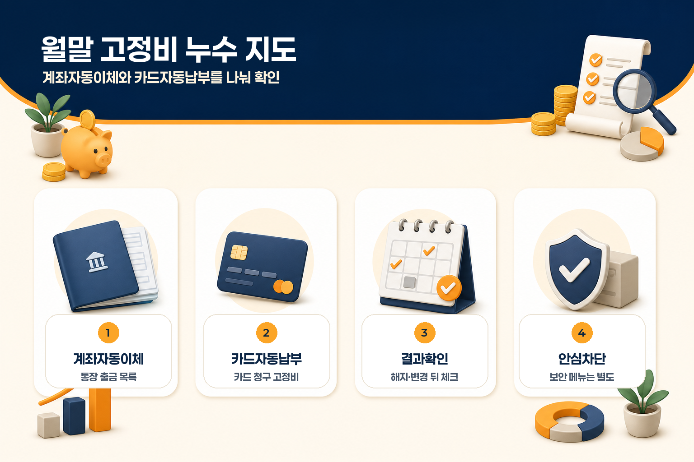
PC에서는 어카운트인포 공식 홈페이지인 계좌정보통합관리서비스로 들어가면 됩니다. 화면에서는 어카운트인포, 내계좌 한눈에, 계좌자동이체 통합관리, 카드자동납부 통합관리 같은 메뉴가 함께 보입니다. 모바일에서는 앱스토어 또는 구글플레이에서 `어카운트인포`를 검색해 앱으로도 이용할 수 있습니다.
다만 개인별 자동이체 목록은 공개 페이지에서 바로 보이는 정보가 아닙니다. 실제 조회 단계에서는 본인확인, 인증서, 휴대폰 인증 등 화면 안내에 따른 인증이 필요할 수 있습니다. 월말에 빠르게 확인하려면 공동인증서·금융인증서 등 평소 쓰는 인증수단과 휴대폰을 먼저 준비해두는 편이 좋습니다.
| 확인하고 싶은 것 | 들어갈 메뉴 | 화면에서 할 일 |
|---|---|---|
| 통장에서 바로 빠지는 돈 | 계좌자동이체 통합관리 → 계좌자동이체 조회 | 계좌별 자동이체를 보고 낯선 기관명, 예전 계좌, 중복처럼 보이는 항목 표시 |
| 카드 청구서에 붙는 돈 | 카드자동납부 통합관리 → 카드자동납부 조회 | 카드별 자동납부를 보고 쓰지 않는 카드에 남은 생활요금·정기 납부 확인 |
| 해지·변경을 이미 신청한 항목 | 계좌/카드 결과확인 메뉴 | 다음 결제일 전에 실제 처리 상태가 완료됐는지 확인 |
| 보안 상태 | 내오픈뱅킹 한눈에, 안심차단 메뉴 | 고정비 정리와 별도로 금융 연결·비대면 거래 차단 상태 확인 |
처음 들어간다면 해지나 변경부터 누르기보다 조회 → 표시 → 대조 → 신청 → 결과확인 순서로 보는 것이 안전합니다. 특히 기관명이 낯설 때는 자동납부 종류, 납부자번호, 요금청구기관 연락처처럼 화면에 제공되는 단서를 먼저 확인하고, 실제 이용 중인 서비스와 맞춰본 뒤 해지 여부를 판단하세요.
카드 명세서만 보면 모든 고정비가 보일 것 같지만 실제로는 그렇지 않습니다. 어떤 돈은 은행 계좌에서 바로 빠지고, 어떤 돈은 카드 자동납부로 청구서에 붙습니다. 그래서 한쪽만 보면 오래된 보험료, 예전 통신요금, 쓰지 않는 서비스 요금 같은 항목을 놓치기 쉽습니다.
어카운트인포의 공개 안내에는 계좌자동이체 통합관리와 카드자동납부 통합관리 메뉴가 따로 있습니다. 월말 점검의 핵심은 “자동납부를 한 번에 없애자”가 아니라, 출금 통로를 나눠서 보고 실제로 쓰는 서비스인지 확인하는 것입니다.
계좌자동이체는 통장에서 바로 빠져나가는 항목입니다. 기관명이 익숙하지 않거나, 같은 성격의 납부가 여러 계좌에 흩어져 있거나, 예전에 쓰던 통장에 남은 자동이체가 보이면 먼저 표시해두면 좋습니다.
다만 보인다고 바로 해지하는 것은 위험할 수 있습니다. 보험료, 대출 관련 납부, 공과금, 관리비처럼 해지하면 미납으로 이어질 수 있는 항목이 있기 때문입니다. 이름이 낯설면 해당 기관명과 실제 이용 중인 서비스를 먼저 대조하고, 자동이체를 끊어도 되는지 확인한 뒤 움직이는 편이 안전합니다.
카드자동납부는 카드 청구서 안에 묶여 들어오는 고정비를 찾을 때 유용합니다. 금융위원회 보도자료에서도 어카운트인포의 카드자동납부 통합관리 서비스가 4대보험, 스쿨뱅킹, 전기요금, 아파트관리비, 공공임대료, 통신요금 같은 생활요금 영역과 연결되어 있다고 설명합니다.
월말에는 특히 쓰지 않는 카드에 남은 자동납부를 확인해보는 게 좋습니다. 카드를 잘 쓰지 않는데 자동납부만 남아 있으면 청구 사실을 늦게 알아차릴 수 있고, 카드를 해지하거나 바꾸려 할 때 결제카드 변경이 필요할 수 있습니다.
단, 앱스토어 결제, 해외 구독, 일부 OTT나 멤버십처럼 사업자 자체 계정에서 관리되는 정기결제는 어카운트인포 목록만으로 끝나지 않을 수 있습니다. 카드자동납부 목록에 안 보이는데 계속 청구된다면 카드사 앱의 정기결제 내역이나 해당 서비스 계정도 함께 확인해야 합니다.
자동이체나 카드자동납부는 조회, 해지, 변경, 결과확인 메뉴가 분리되어 있습니다. 신청 버튼을 눌렀다는 사실과 다음 결제일 전에 실제로 반영됐다는 사실은 다를 수 있습니다.
그래서 월말 점검은 “찾기 → 표시하기 → 해지·변경하기 → 결과확인하기”로 잡는 게 좋습니다. 특히 결제일이 가까운 항목, 관리비나 공과금처럼 미납 부담이 생길 수 있는 항목은 결과확인까지 봐야 마음이 놓입니다.
이용시간도 기능별로 다를 수 있습니다. 조회는 가능해 보여도 해지·변경은 영업일이나 특정 시간대에만 처리될 수 있으니, 실제 신청 전에는 어카운트인포 화면의 이용시간과 처리 안내를 한 번 더 확인하는 편이 좋습니다.
어카운트인포에는 내오픈뱅킹 한눈에, 비대면 계좌개설 안심차단, 여신거래 안심차단처럼 보안 성격의 메뉴도 함께 보입니다. 이 메뉴들은 고정비를 줄이는 기능이라기보다, 원치 않는 금융 연결이나 계좌개설·신용거래 위험을 줄이는 쪽에 가깝습니다.
월말 루틴에 넣는다면 순서는 뒤쪽이 좋습니다. 먼저 자동이체와 카드자동납부에서 실제 고정비 누수를 확인하고, 그 다음 안심차단 메뉴에서 보안 상태를 점검하는 식입니다. 목적이 다르니 “자동납부 해지”와 “안심차단”을 같은 버튼처럼 생각하지 않는 것이 중요합니다.
보험료, 대출 상환, 공과금, 관리비, 통신요금은 자동납부를 끊으면 미납이나 서비스 중단으로 이어질 수 있습니다. “기억이 안 난다”는 이유만으로 해지하기보다, 계약명·고객번호·결제일을 맞춰본 뒤 판단하는 게 좋습니다.
또 가족 명의 서비스, 예전 주소의 관리비, 회사 복지몰·교육비처럼 본인 명의 카드나 계좌에서 빠지지만 실제 이용자는 다른 경우도 있습니다. 이런 항목은 해지 전에 실제 사용자를 확인해야 불필요한 분쟁을 줄일 수 있습니다.
아닙니다. 계좌자동이체와 카드자동납부로 등록된 범위를 보는 데 도움이 되지만, 모든 앱 구독이나 해외 정기결제를 대체하지는 않습니다. 계속 청구되는데 목록에 보이지 않는다면 카드사 앱, 앱스토어, 해당 서비스 계정도 확인해야 합니다.
같지 않습니다. 카드 결제 내역은 이미 청구된 소비 내역이고, 카드자동납부는 앞으로도 반복 청구될 수 있는 납부 연결을 확인하는 쪽에 가깝습니다. 월말에는 두 화면을 같이 봐야 “이번 달 지출”과 “다음 달에도 나갈 돈”을 나눠 볼 수 있습니다.
항목과 처리시간에 따라 다를 수 있습니다. 해지·변경 신청 뒤에는 결과확인 메뉴에서 처리 여부를 확인하고, 다음 결제일이 임박했다면 해당 기관이나 카드사 안내도 함께 보는 편이 안전합니다.
안심차단은 고정비 해지 기능이 아닙니다. 오픈뱅킹, 비대면 계좌개설, 여신거래 같은 보안 영역을 점검하는 메뉴로 보고, 자동납부 정리는 계좌자동이체·카드자동납부 메뉴에서 따로 확인하는 게 좋습니다.
월말 고정비가 새는 곳을 찾고 싶다면 카드값만 보지 말고 계좌자동이체와 카드자동납부를 분리해서 확인하세요. 해지보다 중요한 것은 “이 항목이 무엇인지”, “다음 결제일 전에 반영됐는지”, “목록 밖 정기결제는 없는지”까지 확인하는 일입니다.
이 글은 2026년 6월 28일 공개 공식 안내 기준의 일반 정보 정리입니다. 개인별 계약, 결제일, 자동납부 가능 여부, 해지·변경 처리 결과는 어카운트인포 실제 화면과 각 금융회사·서비스 사업자 안내를 확인해야 합니다.
2026년 에너지바우처는 6월 15일부터 신청이 시작된 냉·난방비 지원 제도입니다. 핵심은 간단합니다. 대상은 모든 가구가 아니라 기초생활수급 자격과 세대원 특성기준을 함께 충족하는 세대이고, 지원금액은 월별 금액이 아니라 2026년도 총 지원금액입니다.
2026년 6월 26일 기준 공식 안내를 보면 신청기간은 2026년 6월 15일~12월 31일, 사용기간은 2026년 7월 1일~2027년 5월 31일입니다. 다만 6월 27일~6월 30일처럼 포인트 생성 처리 때문에 신청·재신청이 일시 중단되는 기간이 있어, “신청기간이 길다”만 보고 미루기보다 중단일과 변경 가능 기간을 같이 보는 편이 안전합니다.
기준일: 2026년 6월 26일
에너지바우처는 에너지 취약계층이 여름과 겨울을 보내는 데 필요한 전기, 도시가스, 지역난방, 등유, LPG, 연탄 비용을 지원하는 이용권 제도입니다. 여름에는 전기요금 부담과 연결해서 많이 찾지만, 실제 제도는 하절기와 동절기 사용을 함께 보는 구조입니다.
여기서 주택용 에너지캐시백과 헷갈리기 쉽습니다. 에너지캐시백은 전기를 줄인 가구에 절감 실적에 따라 혜택을 주는 제도이고, 에너지바우처는 일정한 자격을 충족한 세대에 에너지 이용권을 지원하는 제도입니다. 이름은 비슷하지만 대상과 방식이 다릅니다.
공식 안내 기준 에너지바우처는 소득기준과 세대원 특성기준을 모두 충족해야 합니다. 소득기준만 맞거나, 세대원 특성만 맞는다고 바로 대상이 되는 구조는 아닙니다.
| 구분 | 공식 안내 기준 |
|---|---|
| 소득기준 | 국민기초생활보장법에 따른 생계급여·의료급여·주거급여·교육급여 수급자 |
| 세대원 특성기준 | 노인, 영유아, 장애인, 임산부, 중증질환자·희귀질환자·중증난치질환자, 한부모가족, 소년소녀가정, 다자녀세대 등 |
| 제외 가능 | 세대원 모두가 보장시설에서 급여를 받는 경우 등 |
| 중복 주의 | 동절기 연료비, 연탄쿠폰, 연탄전환 에너지바우처 등과 중복 제한 가능 |
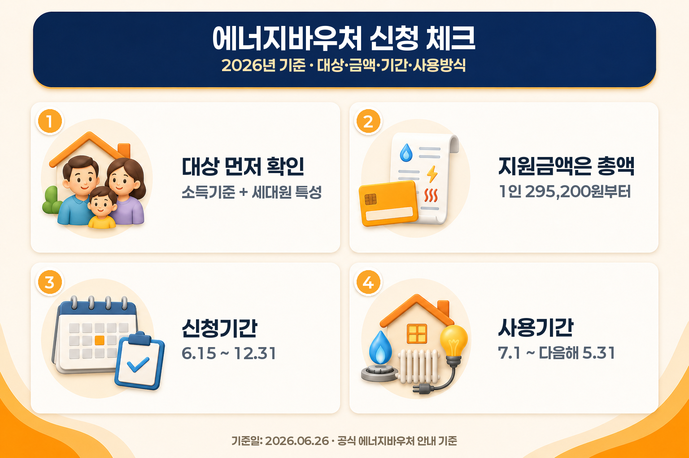
예를 들어 기초생활수급 세대이면서 주민등록표 등본상 세대원 중 영유아, 노인, 장애인, 임산부 등 특성기준에 해당하는 사람이 있어야 대상 가능성을 볼 수 있습니다. 반대로 세대원 특성에 해당하더라도 소득기준을 충족하지 않으면 공식 대상 기준과 다를 수 있습니다.
2026년도 에너지바우처 지원금액은 세대원 수에 따라 다르게 안내됩니다. 중요한 점은 아래 금액이 월별 지원금액이 아니라 2026년도 총 지원금액이라는 것입니다.
| 세대 구분 | 2026년도 총 지원금액 | 하절기 괄호 금액 |
|---|---|---|
| 1인 세대 | 295,200원 | 40,700원 |
| 2인 세대 | 407,500원 | 58,800원 |
| 3인 세대 | 532,700원 | 75,800원 |
| 4인 이상 세대 | 701,300원 | 102,000원 |
공식 안내는 하절기와 동절기를 구분하지 않고 사용기간 안에서 자유롭게 사용할 수 있다고 설명합니다. 다만 연탄쿠폰, 연탄전환 에너지바우처 또는 긴급복지지원법상 동절기 연료비 지원을 희망하는 경우에는 괄호 안 금액만 지원되는 식의 예외가 안내되어 있습니다.
그래서 글을 볼 때 “1인 세대 29만 원대”라는 숫자만 기억하기보다, 내가 다른 동절기 에너지이용권을 신청할 가능성이 있는지도 함께 확인해야 합니다.
2026년 에너지바우처 신청기간은 6월 15일부터 12월 31일까지입니다. 하지만 공식 안내에는 포인트 생성 처리기간에 따른 신청·재신청 일시 중단기간도 함께 나옵니다.
| 항목 | 2026년 공식 안내 기준 |
|---|---|
| 신청기간 | 2026년 6월 15일~12월 31일 |
| 사용기간 | 2026년 7월 1일~2027년 5월 31일 |
| 신청·재신청 일시 중단 | 2026년 6월 27일~6월 30일, 10월 1일~10월 2일, 12월말 중 2~3일 |
| 세대원 수 증가 변경 | 2026년 6월 15일~12월 31일 |
| 세대원 수 감소 변경 | 2026년 6월 15일~6월 26일 |
이 부분이 이번 글의 가장 실무적인 포인트입니다. 신청기간은 연말까지로 길어 보이지만, 일부 변경 항목은 6월 26일까지로 짧게 안내됩니다. 이사, 세대원 수 변동, 수급자 변경, 에너지원 변경처럼 정보가 바뀐 가구라면 “작년에 받았으니 자동으로 되겠지”라고 넘기지 말고 신청안내를 먼저 확인하는 것이 좋습니다.
공식 신청안내는 자동신청, 신규신청, 재신청을 나눠 설명합니다.
| 상황 | 확인할 내용 |
|---|---|
| 지난해 지원을 받았고 정보 변동이 없음 | 올해도 지원자격을 충족하면 자동신청으로 안내 |
| 이사 또는 세대원 수 변동이 있음 | 신규 신청 필요 |
| 지원 중 정보가 바뀜 | 관할 행정복지센터에 변동 사실을 알리고 재신청 |
| 온라인 신청을 원함 | 복지로 홈페이지 신청 경로 확인 |
| 방문 신청을 원함 | 주민등록상 거주지 읍·면·동 행정복지센터 방문 |
방문신청은 주민등록상 거주지 읍·면·동 행정복지센터에서 할 수 있고, 온라인신청은 복지로 홈페이지 경로가 안내되어 있습니다. 거동이 불편한 경우에는 담당 공무원이 대상자 동의를 받아 직권신청할 수 있다는 안내도 있습니다.
준비서류도 상황별로 다릅니다. 기본적으로 에너지이용권 발급 신청서를 작성하고, 대리 신청이면 위임장과 대리인 신분증이 필요할 수 있습니다. 요금차감 신청을 하는 경우에는 최근 전기, 도시가스, 지역난방 요금고지서 또는 아파트 관리비 고지서가 필요할 수 있습니다.
에너지바우처는 계절에 따라 사용방식이 다릅니다. 특히 하절기에는 선택지가 넓지 않습니다.
| 구분 | 사용방식 |
|---|---|
| 하절기 | 전기 요금차감만 선택 가능 |
| 동절기 | 요금차감 또는 국민행복카드 중 한 가지 선택 가능 |
| 요금차감 | 전기·도시가스·지역난방 요금 고지서에서 차감 |
| 국민행복카드 | 전기·도시가스 결제 또는 등유·LPG·연탄 구입 등에 사용 |
하절기에는 전기 요금차감 방식만 안내됩니다. 동절기에는 도시가스, 전기, 지역난방 요금차감 또는 국민행복카드 중 한 가지를 선택해 볼 수 있습니다. 국민행복카드는 등유, LPG, 연탄을 주로 쓰는 가구가 직접 구입할 때 중요해질 수 있습니다.
단, 한전이나 도시가스 회사별로 결제 방식과 결제 가능한 카드 종류가 다를 수 있다는 안내가 있으므로, 동절기에 국민행복카드를 쓰려는 경우에는 사용 전 결제 가능 방식을 확인해야 합니다.
공식 에너지바우처 홈페이지에는 잔액조회와 모의진단 메뉴가 있습니다. 잔액조회는 성명, 생년월일, 주소를 모두 입력해야 한다고 안내되어 있습니다.
모의진단은 지원대상 여부를 자가진단하는 데 도움이 되지만, 공식 안내도 조회 결과를 단순 참고용으로 보라고 설명합니다. 정확한 자격확인은 거주지 관할 행정복지센터에서 확인해야 합니다.
에너지바우처는 “신청 가능 기간”보다 “내 정보가 현재 기준에 맞게 반영되어 있는지”가 중요합니다. 아래 순서로 보면 헷갈림을 줄일 수 있습니다.
아닙니다. 공식 안내 기준으로는 소득기준과 세대원 특성기준을 모두 충족하는 세대가 신청대상입니다. 전기를 줄이면 혜택을 보는 주택용 에너지캐시백과도 다른 제도입니다.
아닙니다. 2026년도 지원금액 표의 금액은 월별 금액이 아니라 해당 연도 총 지원금액으로 안내되어 있습니다. 세대원 수에 따라 금액이 달라집니다.
공식 사용안내는 하절기 에너지바우처는 요금차감만 선택해 사용할 수 있다고 설명합니다. 국민행복카드는 동절기 선택지로 보는 것이 맞습니다.
전년도 지원기간 동안 정보변동이 없고 올해도 지원자격을 충족하면 자동신청으로 안내됩니다. 다만 이사, 세대원 수 변동 등 정보가 바뀐 경우에는 신규 신청 또는 재신청 여부를 확인해야 합니다.
에너지바우처 공식 홈페이지의 잔액조회 메뉴에서 확인할 수 있습니다. 안내에 따르면 성명, 생년월일, 주소를 모두 입력해야 합니다.
2026 에너지바우처는 여름 전기요금만 보는 제도가 아니라, 2027년 5월 말까지 이어지는 냉·난방 에너지 지원 제도입니다. 신청기간은 12월 31일까지지만 일시 중단일과 변경 가능 기간이 있고, 지원금액은 월별 금액이 아니라 연간 총액입니다.
처음 확인한다면 순서는 간단합니다. 먼저 대상 기준을 보고, 그다음 세대원 수별 총 지원금액을 확인하고, 마지막으로 하절기 전기 요금차감과 동절기 사용방식을 나눠 보면 됩니다. 정보 변동이 있는 가구라면 자동신청만 기대하지 말고 신청안내를 먼저 확인하세요.
자료 기준일: 2026년 6월 26일. 이 글은 한국에너지공단 에너지바우처 공식 지원안내·신청안내·사용안내·잔액조회·모의진단 페이지를 바탕으로 정리한 일반 정보입니다. 실제 대상 여부, 신청 가능 여부, 사용방식, 중복지원 제한, 제출서류는 세대 상황과 최신 공식 안내에 따라 달라질 수 있으므로 공식 홈페이지와 거주지 관할 행정복지센터 안내를 확인해야 합니다.
청년 자격증 응시료 환급을 찾을 때 가장 먼저 봐야 할 점은 이름이 비슷한 제도가 하나로 묶여 보인다는 것입니다. 2026년 6월 23일 기준으로는 전국 공통으로 모든 자격증·어학시험을 10만원까지 돌려주는 하나의 제도가 있다기보다, 크게 두 갈래로 나눠 봐야 합니다.
첫째는 Q-net에서 국가기술자격시험 원서접수 때 응시료 일부가 바로 감면되는 청년 국가기술자격시험 응시료 지원입니다. 둘째는 인천, 서울 중구처럼 지방자치단체가 별도 공고로 운영하는 청년 어학·자격시험 응시료 지원입니다. 이쪽은 보통 시험을 본 뒤 영수증과 응시 증빙을 내고 사후에 받는 방식이 많습니다.
그래서 결론부터 정리하면 이렇습니다. 정보처리기사 같은 국가기술자격은 Q-net 감면 대상인지 먼저 확인하고, 토익·토익스피킹·한국사·민간자격 등은 거주지 지자체 공고에서 지원 시험인지 확인해야 합니다. “10만원 환급”이라는 표현만 보고 신청하면, 나이·거주지·미취업 여부·시험 종류·신청 시점에서 막힐 수 있습니다.
기준일: 2026년 6월 23일
청년 자격증 응시료 지원은 검색어만 보면 비슷하지만, 실제 신청 방식은 꽤 다릅니다. Q-net 지원은 한국산업인력공단이 시행하는 국가기술자격시험 응시료를 원서접수 단계에서 줄여주는 방식입니다. 반면 지자체 지원은 지역 청년 정책으로 운영되며, 시험을 응시한 뒤 결제 영수증과 성적표·응시확인서 등을 제출하는 사후 지원이 많습니다.
| 구분 | Q-net 청년 국가기술자격 응시료 지원 | 지자체 청년 어학·자격시험 응시료 지원 |
|---|---|---|
| 운영 주체 | 한국산업인력공단 Q-net | 시·군·구 등 지방자치단체 |
| 대표 방식 | 원서접수 시 응시료 50% 감면 | 시험 응시 후 실비 지원 또는 계좌 지급 |
| 시험 범위 | 한국산업인력공단 시행 국가기술자격시험 | 지역 공고가 정한 어학, 한국사, 국가자격, 공인 민간자격 등 |
| 대상 기준 | 만 34세 이하 청년 누구나로 안내 | 거주지, 연령, 미취업 여부, 사업자등록 여부 등이 지역별로 다름 |
| 한도 | 1인당 연간 3회, 예산 소진 시 종료 | 연 최대 10만원, 생애 최대 10만원 등 지역별 상이 |
| 핵심 주의점 | 토익·토스 같은 어학시험은 Q-net 감면 대상이 아님 | 같은 “10만원”이어도 지역마다 연령·횟수·중복지원 규칙이 다름 |
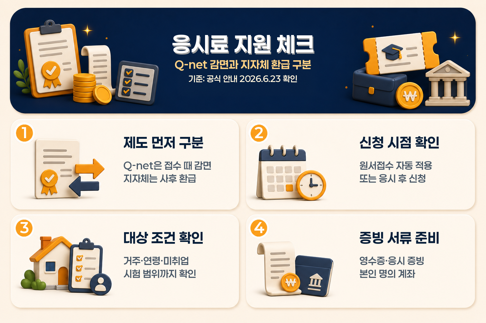
이 차이를 먼저 잡아야 합니다. “자격증 응시료 환급”이라는 말이 보여도, 실제로는 접수 단계 감면인지, 시험 후 환급인지, 내가 사는 지역에서만 가능한 정책인지가 다를 수 있습니다.
Q-net 공지와 고용노동부 정책 안내를 기준으로 보면, 2026년 청년 국가기술자격시험 응시료 지원은 청년의 구직활동과 경력개발 부담을 줄이기 위한 제도입니다. 한국산업인력공단이 시행하는 국가기술자격시험 응시료의 50%를 지원하는 구조입니다.
2026년 Q-net 안내의 주요 내용은 아래처럼 정리할 수 있습니다.
| 항목 | 내용 |
|---|---|
| 지원 대상 | 만 34세 이하 청년, 1991년 1월 1일 이후 출생자로 안내 |
| 지원 내용 | 한국산업인력공단 시행 국가기술자격시험 응시료 50% 지원 |
| 신청 방식 | 원서접수 시 자동 적용, 원하지 않으면 “지원받지 않기” 선택 가능 |
| 지원 한도 | 1인당 연간 3회 |
| 신청 기간 | 2026년 1월 6일부터 지원예산 소진 시까지 |
| 주의점 | 예산 소진 시 개인별 잔여 횟수가 있어도 신청 불가 가능 |
여기서 중요한 점은 사후 환급이 아니라 원서접수 때 적용되는 감면이라는 점입니다. 시험을 이미 보고 난 뒤 “Q-net에서 환급받을 수 있나?”라고 찾는다면 방향이 맞지 않을 수 있습니다.
또 하나는 시험 범위입니다. Q-net 지원은 한국산업인력공단 시행 국가기술자격시험을 기준으로 합니다. 정보처리기사, 전기기사, 컴퓨터활용능력처럼 Q-net 또는 관련 국가기술자격 접수 흐름에서 확인되는 시험은 이쪽을 먼저 보면 됩니다. 반대로 토익, 토익스피킹, 오픽, 한국사, 민간 AI·클라우드 자격 등은 Q-net 감면만으로 판단하면 안 되고, 지자체 공고의 지원 시험 목록을 따로 봐야 합니다.
지자체형 응시료 지원은 “청년 자격증 응시료 환급”이라는 표현과 더 가깝습니다. 다만 전국 어디서나 같은 기준으로 받는 제도가 아니라, 거주하는 지역의 공고를 확인해야 합니다.
예를 들어 인천청년포털의 2026년 청년 자격증 응시료 지원은 신청일 현재 인천시 거주자, 응시일 현재 미취업자, 18세~39세 청년을 대상으로 안내합니다. 사업기간은 2026년 2월 1일부터 11월 30일까지이고, 지원내용은 1인 1회, 연 최대 10만원 범위의 자격증시험 응시료 지원으로 안내돼 있습니다. 지원 시험에는 국가기술자격, 국가전문자격, 국가공인민간자격, 한국사 및 어학시험이 포함됩니다.
서울 중구청의 2026년 청년 자격증 등 응시료 지원은 또 다릅니다. 신청기간은 2026년 1월 7일부터 12월 10일까지이며, 예산 소진 시 마감될 수 있습니다. 지원내용은 1인 생애 최대 10만원 이내 응시료 실비 지원으로 안내됩니다. 시험 응시일 기준 만 19세~39세, 신청일 기준 중구 주민등록, 신청일 기준 미취업자 및 사업자등록 사실이 없는 사람 등 요건을 모두 봅니다.
| 예시 지역 | 눈에 띄는 기준 | 지원 한도 표현 | 신청 시점 |
|---|---|---|---|
| 인천광역시 | 인천 거주, 응시일 현재 미취업, 18~39세 | 1인 1회, 연 최대 10만원 | 2026.02.01~11.30 신청 |
| 서울 중구 | 중구 거주, 19~39세, 미취업 및 사업자등록 없음 | 1인 생애 최대 10만원 | 2026.01.07~12.10 신청, 예산 소진 시 마감 |
이 표에서 보이듯 “최대 10만원”이라는 숫자가 같아도 의미가 다릅니다. 어떤 곳은 연 최대 10만원이고, 어떤 곳은 생애 최대 10만원입니다. 어떤 곳은 18세부터, 어떤 곳은 19세부터입니다. 또 취업 상태를 시험 응시일 기준으로 보는지, 신청일 기준으로 보는지도 다를 수 있습니다.
지자체 응시료 지원은 작은 조건 하나로 지급 여부가 달라질 수 있습니다. 신청 버튼을 누르기 전에 아래 다섯 가지를 먼저 확인하는 편이 안전합니다.
| 체크 항목 | 확인할 내용 |
|---|---|
| 1. 거주지 | 신청일 기준 주민등록상 거주지가 해당 지역인지 |
| 2. 연령 | 시험 응시일 또는 신청일 기준으로 몇 세까지 인정하는지 |
| 3. 취업 상태 | 미취업자만 가능한지, 단기근로자나 정부 직접일자리 참여자는 예외가 있는지 |
| 4. 시험 범위 | 어학, 한국사, 국가기술자격, 국가전문자격, 국가공인민간자격 중 어디까지 포함하는지 |
| 5. 중복지원 | Q-net 감면, 청년수당, 국민취업지원제도, 타 지자체 지원과 중복이 제한되는지 |
특히 중복지원은 놓치기 쉽습니다. 인천 안내는 한국산업인력공단 Q-net 국가기술자격 시험 응시료 50%를 감면받은 경우 차액, 즉 실제 결제액을 지원한다고 설명합니다. 서울 중구 안내도 2026년 정부·서울시·타 지자체 유사사업과 중복지원이 불가하다고 적고 있습니다.
따라서 국가기술자격시험은 먼저 Q-net에서 할인 적용 여부를 확인하고, 이후 지자체 지원을 신청하려면 “이미 감면받은 금액을 제외한 실제 본인 부담액만 가능한지”를 공고에서 봐야 합니다.
지자체형 지원은 대체로 시험을 본 뒤 신청하는 흐름입니다. 서울 중구 안내도 시험 접수만 한 상황은 불가하고, 반드시 시험 응시 이후 신청해야 한다고 설명합니다. 즉 “시험 전 예약금처럼 받는 돈”이 아니라, 실제 응시 사실과 결제 사실을 확인한 뒤 지급하는 구조에 가깝습니다.
일반적인 흐름은 아래처럼 보면 됩니다.
여기서 성적이 높아야만 지원되는 것은 아닐 수 있지만, 실제로 시험을 봤다는 증빙은 중요합니다. 접수증이나 수험표만으로는 불인정되는 지역도 있으니, 시험 시행처에서 발급하는 성적표나 응시확인서를 챙겨두는 편이 좋습니다.
시험 종류별로 보면 더 이해가 쉽습니다.
| 시험 예시 | 먼저 볼 곳 | 이유 |
|---|---|---|
| 정보처리기사 등 국가기술자격 | Q-net 지원 여부 + 거주지 지자체 공고 | Q-net 감면 대상일 수 있고, 지역에 따라 실제 결제액 지원 가능 |
| 토익, 토익스피킹, 오픽 등 어학시험 | 거주지 지자체 공고 | Q-net 국가기술자격 감면 대상이 아니며, 지자체별 어학시험 목록 확인 필요 |
| 한국사능력검정시험 | 거주지 지자체 공고 | 일부 지자체가 지원 시험에 포함하지만 지역별 확인 필요 |
| 국가공인민간자격 | 거주지 지자체 공고 + 민간자격정보서비스 확인 | 공인 여부와 시험 목록이 공고 기준에 맞아야 함 |
| AI·클라우드 관련 민간자격 | 거주지 지자체 공고의 민간자격 범위 확인 | 모든 민간자격이 자동 포함되는 것은 아니므로 단정 금물 |
이 부분에서 가장 위험한 오해는 “청년이면 아무 시험이나 10만원까지 환급된다”는 식의 이해입니다. 실제 공고는 보통 시험 종류를 구체적으로 나눕니다. 어학시험은 인정되지만 일부 민간자격은 제외될 수 있고, 국가공인민간자격만 인정하는 지역도 있습니다.
정책은 예산 소진, 신청 기간, 지원 시험 목록이 바뀔 수 있습니다. 신청 직전에는 아래 공식 페이지를 기준으로 다시 확인하세요.
아닙니다. 10만원이라는 한도는 일부 지자체 공고에서 쓰는 표현입니다. 인천은 연 최대 10만원, 서울 중구는 생애 최대 10만원처럼 기준이 다릅니다. 거주지, 나이, 취업 상태, 시험 종류를 모두 충족해야 합니다.
Q-net 국가기술자격 응시료 지원은 원서접수 시 감면이 적용되는 방식입니다. 반면 지자체형 응시료 지원은 보통 시험을 본 뒤 영수증과 응시 사실 증빙을 제출하는 사후 신청입니다. 어떤 제도인지 먼저 구분해야 합니다.
Q-net 감면은 토익·토익스피킹 같은 어학시험 지원이 아닙니다. 다만 인천, 서울 중구처럼 지자체 공고에서 어학시험을 지원 시험으로 포함하는 경우가 있습니다. 본인 거주지의 공고에서 인정 시험 목록을 확인해야 합니다.
정보처리기사처럼 국가기술자격에 해당하는 시험은 Q-net 청년 응시료 지원을 먼저 확인하면 됩니다. 동시에 거주지 지자체가 국가기술자격 응시료를 지원하는 경우도 있으므로, Q-net 감면 후 실제 결제액을 지자체가 지원하는지까지 함께 보는 것이 좋습니다.
지역마다 다릅니다. 인천 안내처럼 Q-net 감면을 받은 경우 차액, 즉 실제 결제액만 지원한다고 명시한 곳이 있습니다. 다른 유사사업과 중복지원이 제한되는 지역도 있으니, 공고의 중복지원 조항을 반드시 확인해야 합니다.
청년 자격증 응시료 지원은 잘 활용하면 시험 준비 비용 부담을 줄이는 데 도움이 됩니다. 다만 전국 공통의 단일 환급제도로 이해하면 헷갈리기 쉽습니다.
가장 현실적인 순서는 이렇습니다. 국가기술자격시험이라면 Q-net 원서접수 단계에서 청년 응시료 감면이 적용되는지 먼저 봅니다. 토익, 토스, 한국사, 국가공인민간자격, AI·클라우드 관련 민간자격처럼 범위가 넓은 시험은 거주지 지자체 공고에서 지원 시험 목록을 확인합니다. 그리고 시험을 본 뒤에는 영수증, 성적표나 응시확인서, 본인 계좌, 미취업 확인 서류를 빠르게 챙겨 신청기간 안에 접수하는 흐름이 좋습니다.
결국 핵심은 세 가지입니다. Q-net은 국가기술자격 접수 때 감면, 지자체는 지역 조건에 따른 사후 지원, 10만원 한도는 지역별로 다르다. 이 세 가지를 구분하면 청년 자격증 응시료 환급 정보를 훨씬 덜 헷갈리게 볼 수 있습니다.
디지털 관광주민증은 여행지의 일부 관광시설, 숙박, 체험, 식음료 매장에서 할인을 확인하고 사용할 수 있는 온라인 혜택 서비스입니다. 실제 주민등록을 옮기는 제도가 아니라, 인구감소지역을 여행하는 사람이 모바일로 발급받아 지역별 혜택을 보는 방식에 가깝습니다.
2026년 6월 기준으로 볼 만한 이유도 있습니다. 문화체육관광부와 한국관광공사 안내에 따르면 2026년 6월 8일부터 운영 지역이 기존 44개에서 52개 기초지방정부로 확대됐고, 혜택 장소도 1,400여 곳으로 늘었습니다. 그래서 여행지를 정하기 전 “그 지역에 관광주민증 혜택이 있는지”를 한 번 확인해볼 만합니다.
다만 발급만 하면 모든 관광지에서 자동으로 할인되는 구조는 아닙니다. 핵심은 공식 페이지에서 지역을 선택해 발급하고, 방문하려는 매장이 혜택처인지 확인한 뒤, 현장에서 QR 또는 할인증을 제시하는 것입니다.
기준일: 2026년 6월 21일
디지털 관광주민증은 한국관광공사의 대한민국 구석구석 서비스에서 운영하는 지역 여행 할인 혜택입니다. 이름에 “주민증”이 들어가지만 주민등록증을 대체하거나 주소지를 바꾸는 제도는 아닙니다. 여행자가 특정 지역의 관광주민증을 발급받고, 그 지역의 제휴 혜택처에서 할인을 확인하는 방식입니다.
혜택은 지역마다 다릅니다. 어떤 곳은 관광지 입장료를 깎아주고, 어떤 곳은 숙박, 체험, 카페, 식당, 쇼핑 혜택이 중심일 수 있습니다. 그래서 “디지털 관광주민증이 좋다”보다 더 중요한 질문은 “내가 가려는 지역과 동선에 쓸 수 있는 혜택이 있는가”입니다.
| 구분 | 확인할 내용 |
|---|---|
| 발급처 | 대한민국 구석구석 디지털 관광주민증 공식 페이지 |
| 목적 | 인구감소지역 여행 활성화와 지역별 관광 혜택 제공 |
| 혜택 범위 | 식음료, 관람, 체험, 쇼핑, 숙박 등 지역별 상이 |
| 사용 방식 | 통합 QR, 현장 할인증, 업체 비치 QR 등 화면 안내 기준 |
| 주의점 | 발급 지역과 실제 혜택처·할인 조건을 따로 확인해야 함 |
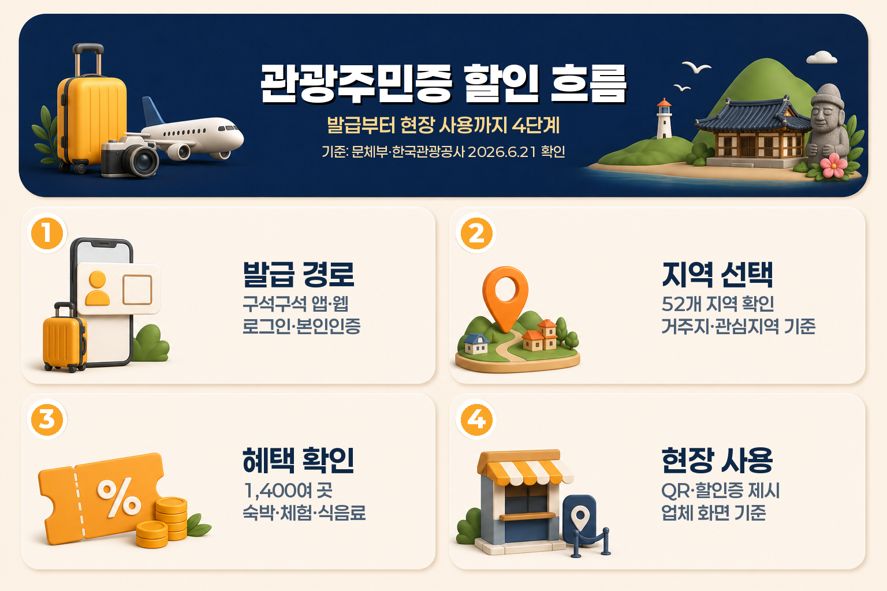
문체부 2026년 6월 8일 보도자료에 따르면 디지털 관광주민증 운영 지역은 기존 44개 지역에서 52개 지역으로 확대됐습니다. 혜택을 받을 수 있는 장소도 1,100여 곳에서 1,400여 곳으로 늘었다고 안내됐습니다.
이번에 새로 참여한 지역은 8곳입니다.
| 구분 | 신규 참여 지역 |
|---|---|
| 충북 | 보은군 |
| 전북 | 순창군 |
| 전남 | 고흥군, 담양군, 완도군 |
| 경북 | 울진군 |
| 경남 | 산청군, 함양군 |
보도자료에 나온 예시를 보면 완도 해양치유센터 30% 할인, 담양항공 체험 35% 할인, 울진 왕피천 케이블카 25% 할인처럼 체험·관람형 혜택이 포함됩니다. 고흥 분청문화박물관, 순창 발효테마파크, 함양 웰니스호텔 인산가처럼 지역별 대표 관광·숙박 시설도 예시로 언급됐습니다.
다만 이런 예시는 “이런 유형의 혜택이 있다”는 참고용으로 보는 편이 안전합니다. 실제 할인율, 운영일, 예약 필요 여부, 현장 사정은 혜택처별로 달라질 수 있으므로 여행 직전에는 공식 페이지와 해당 업체 안내를 다시 확인해야 합니다.
발급은 공식 페이지에서 시작하는 것이 가장 안전합니다. 검색으로 여러 안내 글을 볼 수 있지만, 지역 목록과 혜택처는 바뀔 수 있으니 최종 확인은 대한민국 구석구석 공식 페이지에서 하는 흐름이 좋습니다.
여기서 거주지 확인이 들어가는 이유는 지역 혜택의 대상과 운영 기준을 나누기 위해서입니다. 화면에서 안내하는 지역 선택 기준과 발급 가능 여부를 그대로 따르면 됩니다.
발급 후에는 “내 관광주민증” 또는 혜택 페이지에서 선택한 지역을 다시 확인하세요. 지역 이름만 보고 끝내기보다, 실제로 갈 장소가 혜택처 목록에 있는지까지 봐야 여행비 절약 효과가 생깁니다.
할인은 보통 현장에서 모바일 화면을 보여주는 흐름으로 이해하면 됩니다. 공식 안내는 통합 QR 확인, 할인증 발급, 업체 비치 QR 스캔 같은 사용 방식을 안내합니다. 방문하는 혜택처마다 화면 흐름이 조금씩 다를 수 있으니 현장 직원 안내와 공식 페이지의 최신 화면을 기준으로 보면 됩니다.
여행 전에는 아래 순서로 확인하면 헷갈림이 줄어듭니다.
| 순서 | 확인할 것 | 이유 |
|---|---|---|
| 1 | 여행 지역이 52개 운영 지역에 포함되는지 | 지역이 다르면 혜택처가 나오지 않을 수 있음 |
| 2 | 가려는 매장이 혜택처인지 | 지역 전체가 아니라 참여 업체 기준으로 할인됨 |
| 3 | 할인율과 적용 조건 | 요일, 인원, 예약, 결제 방식 제한이 있을 수 있음 |
| 4 | 현장 사용 방식 | QR 제시, 할인증 확인, 업체 QR 스캔 등 방식이 다를 수 있음 |
| 5 | 중복 할인 가능 여부 | 지역 이벤트, 쿠폰, 카드 할인과 중복 제한 가능 |
특히 숙박이나 체험처럼 금액이 큰 항목은 예약 전에 먼저 확인하는 편이 좋습니다. 현장 결제만 가능한지, 온라인 예약에도 적용되는지, 사전 예약이 필요한지에 따라 체감 할인액이 달라질 수 있습니다.
디지털 관광주민증 혜택은 “전국 공통 쿠폰”이라기보다 “지역별 혜택 모음”에 가깝습니다. 한 지역에서는 체험 할인 비중이 크고, 다른 지역에서는 숙박이나 식음료 혜택이 더 눈에 띌 수 있습니다.
| 혜택 유형 | 예시로 볼 수 있는 사용처 | 확인 포인트 |
|---|---|---|
| 관람 | 박물관, 전망대, 케이블카, 전시시설 | 입장권 할인율, 휴관일, 현장 발권 여부 |
| 체험 | 레포츠, 항공 체험, 치유 프로그램, 농장 체험 | 예약 필요 여부, 인원 제한, 운영 시간 |
| 숙박 | 호텔, 글램핑, 지역 숙박시설 | 온라인 예약 적용 여부, 성수기 제외 여부 |
| 식음료 | 카페, 식당, 지역 특산물 매장 | 특정 메뉴 제외, 현장 결제 조건 |
| 쇼핑 | 기념품, 특산물, 로컬 상점 | 중복 할인과 결제 방식 |
이 글에서는 특정 지역이나 업체를 추천하지 않습니다. 할인율만 보고 여행지를 정하기보다, 이미 가고 싶은 지역이 있다면 그 지역의 관광주민증 혜택을 덧붙여 보는 방식이 현실적입니다.
디지털 관광주민증은 발급 자체보다 사용 전 확인이 중요합니다. 아래 항목을 여행 하루 전이나 예약 직전에 한 번만 점검해도 “갔는데 적용이 안 되는” 상황을 줄일 수 있습니다.
지역 혜택은 현장 운영 사정에 따라 바뀔 수 있습니다. 특히 숙박, 체험, 레포츠처럼 예약과 재고가 있는 서비스는 공식 혜택 페이지를 봤더라도 업체 상세 안내를 함께 보는 편이 안전합니다.
디지털 관광주민증은 지역과 혜택처가 계속 바뀔 수 있는 서비스입니다. 그래서 블로그 글을 먼저 읽었더라도, 발급과 사용 직전에는 아래 공식 페이지를 기준으로 다시 확인하는 것이 좋습니다.
발급 과정 자체는 별도 결제 절차가 아니라 투어원패스 계정 확인과 본인인증 뒤 관광주민증을 만드는 흐름으로 안내됩니다. 다만 실제 할인은 방문 지역과 혜택처 조건에 따라 달라지므로, 결제 전 할인 적용 화면을 확인해야 합니다.
아닙니다. 디지털 관광주민증은 운영 지역과 혜택처가 정해져 있습니다. 2026년 6월 기준 운영 지역은 52개 기초지방정부로 안내됐고, 실제 혜택은 지역별 참여 업체와 조건을 기준으로 봐야 합니다.
가능 여부는 공식 화면 기준으로 확인하면 됩니다. 다만 숙박이나 체험처럼 예약이 필요한 혜택은 당일 발급보다 여행 전 확인이 더 유리합니다. 혜택처, 예약 조건, 운영 시간을 먼저 봐두면 현장에서 시간을 줄일 수 있습니다.
혜택처마다 다를 수 있습니다. 어떤 혜택은 현장 결제·현장 확인 중심일 수 있고, 어떤 혜택은 예약 조건이 붙을 수 있습니다. “혜택처 목록에 있다”와 “내 예약 방식에 적용된다”는 별개로 확인해야 합니다.
이 제도는 여행자가 지역을 방문할 때 쓰는 디지털 혜택 서비스입니다. 다만 발급 과정에는 거주지 확인과 관심 지역 선택 절차가 있으므로, 실제 가능 여부는 공식 페이지 화면 안내를 따르는 것이 가장 정확합니다.
디지털 관광주민증은 여행비를 크게 줄여주는 만능 쿠폰이라기보다는, 지역 여행 동선에 맞으면 쓸 만한 할인 혜택입니다. 2026년 6월 8일부터 운영 지역이 52개로 늘었고, 혜택 장소도 1,400여 곳으로 확대됐기 때문에 국내 소도시나 인구감소지역 여행을 계획한다면 확인할 가치가 있습니다.
활용 순서는 간단합니다. 공식 페이지에서 발급하고, 방문 지역을 선택하고, 실제 갈 장소가 혜택처인지 확인한 뒤, 현장에서 QR 또는 할인증 화면을 제시하면 됩니다. 할인율보다 먼저 볼 것은 “내 동선에서 실제로 쓸 수 있는 혜택인가”입니다.
자료 기준일: 2026년 6월 21일. 이 글은 한국관광공사 대한민국 구석구석 디지털 관광주민증 공식 페이지와 문화체육관광부 2026년 6월 8일 보도자료를 바탕으로 정리한 일반 정보입니다. 운영 지역, 혜택처, 할인율, 발급·사용 화면은 변경될 수 있으므로 여행 전 최신 공식 안내와 현장 안내를 확인해야 합니다.
기준일: 2026년 6월 20일
청년미래적금 은행별 혜택을 볼 때 첫 번째 결론은 간단합니다. 기본금리는 모든 취급기관이 5.00%로 같고, 차이는 은행별 우대금리 조건에서 갈립니다. 은행연합회 소비자포털 2026년 6월 20일 공시 기준으로 최고금리 8.00% 기관은 7곳, 최고금리 7.00% 기관도 7곳입니다.
다만 최고 8%라는 숫자만 보고 고르면 놓치는 부분이 있습니다. 우대금리는 급여이체, 카드 사용, 자동이체, 첫거래, 청년도약계좌 연계, 재무상담 이수처럼 3년 동안 실제로 맞출 수 있는 조건과 연결됩니다. 그래서 이 글은 특정 은행을 앞세우지 않고, 공개 공시 기준으로 은행별 혜택과 비교 포인트를 정리합니다.
| 먼저 볼 항목 | 핵심 내용 |
|---|---|
| 출시·신청 일정 | 2026년 6월 22일 출시, 7월 3일까지 2주간 가입신청 안내 |
| 기본금리 | 3년 고정, 취급기관 공통 5.00% |
| 최고금리 | 우대금리 포함 7.00~8.00% 수준 |
| 공통 우대 | 일정 소득 이하 0.5%p, 청년 재무상담 이수 0.2%p 구조 |
| 은행별 차이 | 급여이체·카드·자동이체·첫거래·연계가입 등 조건별 차이 |
| 자료 기준 | 금융위원회, 서민금융진흥원, 은행연합회 소비자포털 2026년 6월 20일 확인 |
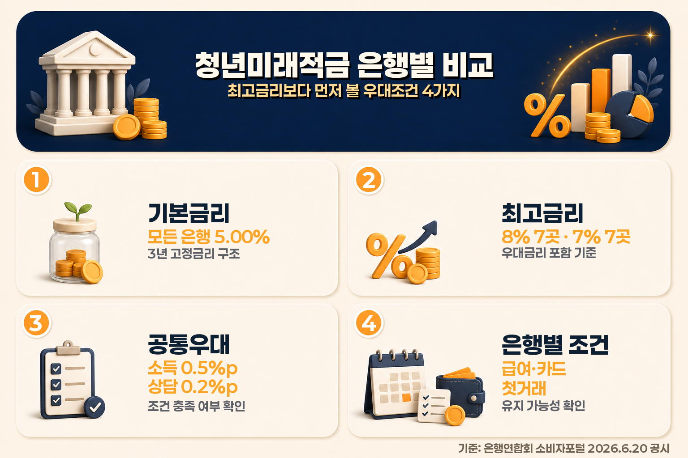
청년미래적금은 월 최대 50만원, 3년 만기 자유적립식 적금입니다. 서민금융진흥원 상품 안내에 따르면 일반형은 납입금의 6%, 우대형은 12% 정부기여금이 붙고, 이자소득 비과세 혜택이 안내됩니다.
은행별 비교가 필요한 이유는 금리 구조 때문입니다. 금융위원회 5월 29일 자료는 기본금리가 전체 취급기관 동일 5%이고, 기관별 최대 우대금리 2~3%가 더해져 최대 7~8% 수준이라고 설명합니다. 즉 “청년미래적금 자체 조건”과 “은행별 우대조건”을 나눠서 봐야 합니다.
출시 직후에는 가입신청 일정도 함께 봐야 합니다. 정책브리핑 안내 기준으로 2026년 6월 22일부터 6월 26일까지는 출생연도 끝자리 5부제가 적용되고, 6월 29일부터 7월 3일까지는 출생연도와 관계없이 신청할 수 있습니다.
아래 표는 은행연합회 소비자포털 청년미래적금금리 공시를 바탕으로 정리한 것입니다. “혜택”은 대부분 우대금리 조건을 뜻합니다. 실제 적용 여부는 각 은행 상세정보와 앱 안내에서 최종 확인해야 합니다.
| 은행 | 기본금리 | 최고금리 | 우대조건 키워드 |
|---|---|---|---|
| IBK기업은행 | 5.00% | 8.00% | 소득, 재무상담, 급여이체, 카드이용, 주택청약, 중소기업 재직, 도약계좌 연계 또는 최초고객 |
| KB국민은행 | 5.00% | 8.00% | 급여이체, 공과금·리브모바일·카드결제 출금, 거래감사, 소득플러스, 재무상담 |
| NH농협은행 | 5.00% | 8.00% | 급여·가맹점 대금, NH카드, 예적금 미보유 또는 도약계좌 연계, 마이데이터, 재무상담, 소득 |
| 우리은행 | 5.00% | 8.00% | 소득입금, 예적금 미보유 또는 연계가입, 카드·공과금 자동이체, 특별우대, 재무상담, 출시기념 |
| 신한은행 | 5.00% | 8.00% | 소득, 재무상담, 소득이체, 신한카드, 증권거래, 첫거래·연계가입, 연계가입 특별우대 |
| 우체국 | 5.00% | 8.00% | 이벤트 우대, 첫거래 또는 급여실적, 체크카드, 자동이체, 소득, 재무상담 |
| 하나은행 | 5.00% | 8.00% | 급여·가맹점 대금, 카드결제, 목돈마련 응원, 소득플러스, 재무상담 |
| Sh수협은행 | 5.00% | 7.00% | 소득, 재무상담, 마케팅 동의, 급여이체, 카드결제 |
| iM뱅크(구 대구은행) | 5.00% | 7.00% | 최초거래, 마케팅 동의, 자동이체, 급여, 카드, 소득, 재무상담 |
| BNK부산은행 | 5.00% | 7.00% | 급여실적, 신용·체크카드, 주택청약, 소득, 재무상담 |
| 광주은행 | 5.00% | 7.00% | 소득, 재무상담, 첫거래 또는 도약계좌 연계, 급여, 자동이체, 정기예금 신규 |
| 전북은행 | 5.00% | 7.00% | 소득, 재무상담, 급여·가맹점 실적, JB카드, 자동이체, 마케팅 동의 |
| BNK경남은행 | 5.00% | 7.00% | 소득, 재무상담, 청년미래응원, 마케팅 동의, 급여·가맹점 입금, 카드, 신규고객 |
| 카카오뱅크 | 5.00% | 7.00% | 소득, 재무상담, 최초 신규고객, 체크카드 실적 |
표만 보면 8.00% 그룹이 먼저 눈에 들어옵니다. 하지만 우대조건의 종류와 인정 기간이 은행마다 다르기 때문에, 최고금리 숫자와 실제 충족 가능 금리를 분리해서 보는 편이 안전합니다.
최고금리 8.00%로 공시된 기관은 IBK기업은행, KB국민은행, NH농협은행, 우리은행, 신한은행, 우체국, 하나은행입니다. 공통적으로 기본금리 5.00%에 최대 3%p 우대금리를 더하는 구조로 이해할 수 있습니다.
다만 3%p를 전부 받으려면 여러 조건을 함께 충족해야 하는 경우가 많습니다. 예를 들어 급여이체나 가맹점 대금 입금, 카드 사용, 자동이체, 기존 예적금 미보유, 청년도약계좌 연계 같은 조건이 섞여 있습니다.
여기서 중요한 질문은 “최고금리가 얼마인가?”보다 “그 우대금리 조건을 36개월 동안 유지할 수 있는가?”입니다. 카드 실적을 새로 만들거나 급여계좌를 바꿔야 한다면, 우대금리만 보고 판단하기 어렵습니다. 반대로 이미 해당 은행을 주거래로 쓰고 있다면 일부 조건은 자연스럽게 충족될 수도 있습니다.
최고금리 7.00%로 공시된 기관은 Sh수협은행, iM뱅크, BNK부산은행, 광주은행, 전북은행, BNK경남은행, 카카오뱅크입니다. 이 그룹은 기본금리 5.00%에 최대 2%p 우대금리를 더하는 구조입니다.
숫자만 보면 8% 그룹보다 낮지만, 실제 비교에서는 우대조건의 단순성도 봐야 합니다. 예를 들어 최초거래, 마케팅 동의, 자동이체, 카드 실적, 급여 입금처럼 조건이 비교적 명확한 은행도 있고, 특정 은행의 기존 거래 이력과 잘 맞는 경우도 있습니다.
특히 카카오뱅크는 정책브리핑 자료에서 안정적인 전산 연계와 서비스 운영을 위해 최대 20만좌 한도로 가입신청을 받을 예정이라고 안내된 점이 별도 확인 포인트입니다. 또 금융위원회 자료 기준 토스뱅크는 전산 구축 일정 등에 따라 2026년 12월 출시 예정으로 안내되어 이번 14개 기관 공시 목록에는 포함되지 않았습니다.
은행별 표가 길게 느껴진다면 조건별로 다시 나눠보면 이해가 쉽습니다.
| 조건 유형 | 많이 등장하는 내용 | 확인 포인트 |
|---|---|---|
| 공통 우대 | 일정 소득 이하 0.5%p, 청년 재무상담 0.2%p | 내가 소득 기준과 상담 이수 조건에 해당하는지 |
| 급여·가맹점 입금 | 급여이체, 가맹점 대금 입금 | 인정 금액, 인정 월수, 입금 명칭 기준 |
| 카드·출금 실적 | 신용·체크카드 사용, 공과금 자동이체, 결제대금 출금 | 새 지출이 생기는지, 기존 자동이체 이동이 가능한지 |
| 첫거래·미보유 | 최초고객, 예적금 미보유, 신규고객 | 기존 거래 이력이 우대조건을 막는지 |
| 연계가입 | 청년도약계좌 보유 또는 연계가입 | 연계 인정 범위와 시점 |
| 은행별 특수조건 | 마이데이터, 증권거래, 모임통장, 정기예금 신규, 이벤트 우대 | 나에게 이미 있는 거래인지, 새로 만들 필요가 있는지 |
이렇게 보면 최고금리가 높은 은행을 찾는 것과 실제로 받을 수 있는 우대금리를 찾는 것은 다른 문제입니다. 이 글의 비교 기준은 “특정 은행 고르기”가 아니라 우대조건 해석 순서입니다.
은행을 고를 때는 최고금리 숫자보다 먼저 내가 이미 하고 있는 거래로 받을 수 있는 우대금리를 확인하는 편이 좋습니다. 청년미래적금 우대조건에는 급여이체, 소득입금, 가맹점 대금 입금, 카드 이용, 자동이체, 첫거래, 청년도약계좌 연계 같은 조건이 섞여 있습니다. 새 거래를 많이 만들수록 3년 동안 유지해야 할 조건도 늘어납니다.
이미 월급이 들어오는 주거래 은행이 있다면, 그 은행의 급여·소득입금 우대조건부터 확인해볼 만합니다. 은행연합회 2026년 6월 20일 공시 기준으로 급여·소득입금 계열 우대는 은행별로 0.3%p부터 1.5%까지 차이가 있고, 인정 금액과 인정 월수도 서로 다릅니다. 따라서 중요한 것은 “급여이체 조건이 있는가”만이 아니라 내 급여 입금 방식이 그 은행의 인정 기준에 맞는가입니다.
급여계좌를 바꾸기 어렵거나 카드 실적을 새로 만들고 싶지 않다면, 첫거래·신규고객·청년도약계좌 연계·자동이체처럼 충족 여부가 비교적 분명한 조건을 따로 보는 방식이 좋습니다. 인터넷은행도 같은 기준으로 보면 됩니다. 예를 들어 카카오뱅크는 최고금리 7.00%이고, 최초 신규고객·체크카드 실적 조건과 20만좌 한도 안내를 함께 확인해야 합니다.
| 내 상황 | 먼저 볼 후보 | 확인할 점 |
|---|---|---|
| 이미 급여가 들어오는 주거래 은행이 있다 | 해당 은행의 급여·소득입금 우대조건 | 인정 금액, 인정 월수, 입금 명칭 기준을 충족하는지 |
| 급여계좌를 바꾸기 어렵다 | 첫거래·신규고객·청년도약계좌 연계 조건 | 기존 거래 이력이 우대조건을 막지 않는지 |
| 카드 실적을 새로 만들기 싫다 | 카드 조건 비중이 낮거나 대체 조건이 있는 은행 | 카드 사용액을 늘려야 하는 구조인지 |
| 인터넷은행을 선호한다 | 카카오뱅크의 최초 신규고객·체크카드 조건 | 최고금리 7.00%, 20만좌 한도 안내, 체크카드 실적 조건 |
정리하면 은행 선택은 “어느 은행이 무조건 유리한가”가 아니라, 내가 이미 충족할 수 있는 조건과 새로 만들어야 하는 조건을 나눠보는 과정입니다. 주거래 은행은 첫 번째 확인 후보가 될 수 있지만, 급여·카드·자동이체 조건이 부담스럽다면 첫거래나 연계가입 조건이 더 맞는 은행도 비교 대상에 넣어볼 수 있습니다.
최고 8%와 7%의 차이는 1%p입니다. 월 50만원씩 36회 납입하고, 각 납입분의 이자 계산기간을 36개월부터 1개월까지로 놓는 단순 가정에서는 1%p 차이가 이자 기준으로 대략 27만7천원 정도입니다.
계산식은 50만원 × 1% × 666개월분 ÷ 12개월 = 약 27만7천원입니다. 여기서 666은 36개월, 35개월, 34개월처럼 각 납입금이 이자를 받는 기간을 단순 합산한 값입니다.
물론 실제 청년미래적금은 정부기여금, 비과세, 납입일, 우대금리 적용 여부가 함께 작동합니다. 그래서 이 계산은 은행 선택의 결론이 아니라 “최고금리 1%p 차이를 해석하는 감각” 정도로 보는 것이 맞습니다.
청년미래적금은 정책형 금융상품이기 때문에 신청 가능 여부, 심사 결과, 우대금리 적용 여부가 모두 분리됩니다. 은행을 고르기 전 아래 순서로 확인하면 실수를 줄일 수 있습니다.
특히 “만기해지 시 우대금리 제공” 문구가 있는 경우, 중도해지나 조건 미충족 때 받을 수 있는 금리가 달라질 수 있습니다. 은행별 상세정보의 만기 후 금리, 우대조건, 기타 유의사항까지 같이 보는 것이 좋습니다.
신청 전에는 아래 공식 페이지를 함께 열어두고 확인하는 편이 좋습니다.
그렇게 단순하게 보기는 어렵습니다. 8%는 우대조건을 모두 충족했을 때의 최고금리입니다. 급여이체, 카드 사용, 자동이체, 첫거래, 연계가입 등 조건을 실제로 맞출 수 있는지 함께 봐야 합니다.
은행연합회 2026년 6월 20일 공시 기준으로 표에 나온 14개 기관의 기본금리는 모두 5.00%입니다. 은행별 차이는 최고금리와 우대금리 조건에서 발생합니다.
금융위원회 자료는 총급여 3,600만원 또는 종합소득금액 2,600만원 이하 청년에게 0.5%p, 청년 모두를 위한 재무상담 이수자에게 0.2%p 우대금리가 제공된다고 안내합니다. 다만 세부 적용은 은행별 상세조건과 심사 결과를 확인해야 합니다.
일부 은행은 청년도약계좌 보유나 연계가입을 우대조건에 포함합니다. 다만 모든 은행 조건이 같지는 않고, 연계 인정 시점과 방식이 다를 수 있습니다. 기존 청년도약계좌 해지·갈아타기 절차도 별도 안내를 확인해야 합니다.
금융위원회 5월 29일 자료 기준으로 토스뱅크는 전산 구축 일정 등에 따라 2026년 12월 출시 예정으로 안내되었습니다. 이번 은행연합회 공시의 14개 기관 목록에는 포함되어 있지 않습니다.
청년미래적금 은행별 혜택은 겉으로 보면 최고금리 8%와 7%의 차이처럼 보입니다. 하지만 실제 비교의 핵심은 우대조건입니다. 기본금리는 모두 5.00%이고, 나머지 2~3%p는 급여·카드·자동이체·첫거래·연계가입 같은 조건을 얼마나 맞출 수 있는지에 따라 달라집니다.
따라서 은행별 비교는 “어느 은행이 최고인가”가 아니라 “어떤 조건을 내가 이미 충족하고 있고, 어떤 조건은 새로 만들어야 하는가”를 따지는 과정에 가깝습니다. 출시 직후 신청을 앞두고 있다면 은행연합회 공시표와 각 은행 상세정보를 함께 열어두고, 최고금리보다 우대조건의 유지 가능성을 먼저 확인해보면 좋습니다.
자료 기준일: 2026년 6월 20일. 이 글은 금융위원회, 정책브리핑, 서민금융진흥원, 은행연합회 소비자포털 공개 자료를 바탕으로 정리한 일반 정보입니다. 특정 은행 가입을 추천하거나 가입 가능성·우대금리 적용·정부기여금 지급을 보장하지 않습니다. 금리, 신청 일정, 좌수 한도, 우대조건, 심사 기준은 변경될 수 있으므로 신청 전 최신 공식 안내와 각 은행 상세정보를 확인해야 합니다.
2026 여름맞이 숙박세일 페스타는 지금 진행 중인 숙박 할인권 행사입니다. 핵심만 먼저 정리하면, 비수도권 인구감소지역 85곳의 등록 숙박업소를 예약할 때 사용할 수 있고, 할인권은 1박 쿠폰 2만·3만원, 연박 쿠폰 5만·7만원으로 나뉩니다.
다만 “국내 숙소면 다 되는 할인”은 아닙니다. 발급은 매일 오전 10시부터 선착순으로 진행되고, 발급한 할인권은 다음날 오전 7시까지 유효합니다. 여행 날짜보다 먼저 봐야 할 것은 사용 지역, 숙박상품 금액, 쿠폰 유효시간, 등록 숙박업소 여부입니다.
기준일: 2026년 6월 20일
문화체육관광부와 한국관광공사 안내에 따르면 2026 여름맞이 숙박세일 페스타는 여름휴가철 국내 여행을 장려하기 위해 진행되는 숙박 할인권 행사입니다. 공식 안내 기준 발급 기간은 2026년 6월 11일부터 7월 31일까지입니다.
이번 행사의 특징은 “1박 할인권”과 “연박 할인권”을 나눠 운영한다는 점입니다. 숙박상품 금액에 따라 할인액이 달라지고, 연박 쿠폰은 2박 이상 여행을 전제로 봐야 합니다.
| 구분 | 숙박상품 금액 | 할인권 금액 | 핵심 포인트 |
|---|---|---|---|
| 1박 쿠폰 | 2만원 이상 7만원 미만 | 2만원 | 짧은 1박 여행에 적합 |
| 1박 쿠폰 | 7만원 이상 | 3만원 | 일반적인 1박 숙박 예약에서 많이 확인할 구간 |
| 연박 쿠폰 | 5만원 이상 14만원 미만 | 5만원 | 2박 이상, 총액이 낮은 예약 구간 |
| 연박 쿠폰 | 14만원 이상 | 7만원 | 이번 행사에서 가장 큰 할인 구간 |
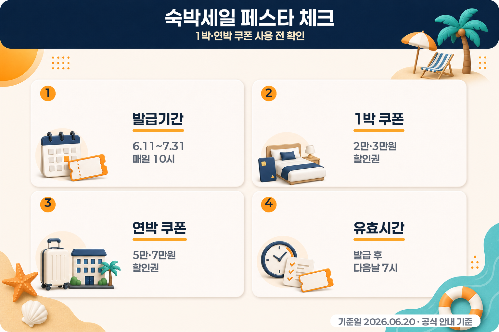
여기서 “최대 7만원”은 연박 쿠폰에서 가능한 할인액입니다. 1박 예약만으로 무조건 7만원을 할인받는 구조는 아니므로, 예약하려는 숙박일수와 총 결제금액을 먼저 구분해야 합니다.
숙박세일 페스타에서 가장 놓치기 쉬운 부분은 유효시간입니다. 공식 안내는 할인권 발급을 매일 오전 10시부터 다음날 오전 7시까지로 안내합니다. 즉, 쿠폰을 받아두고 며칠 뒤 천천히 쓰는 방식으로 이해하면 안 됩니다.
| 확인 항목 | 내용 |
|---|---|
| 발급 기간 | 2026년 6월 11일~7월 31일 |
| 발급 시간 | 매일 오전 10시부터 다음날 오전 7시까지 |
| 발급 방식 | 참여 온라인여행사 채널에서 선착순 발급 |
| 소진 가능성 | 준비된 수량이 모두 소진되면 조기 종료 가능 |
| 재발급 주의 | 미사용 할인권은 유효기간 이후 재발급 가능 여부를 다시 확인 |
실무적으로는 “오늘 쿠폰을 받고 오늘 예약을 끝낸다”에 가깝게 준비하는 편이 안전합니다. 원하는 숙소와 날짜를 먼저 봐두고, 오전 10시에 할인권 발급과 결제까지 이어가는 흐름으로 생각하면 이해가 쉽습니다.
이번 할인권은 전국 모든 숙소에 적용되는 방식이 아닙니다. 공식 안내는 비수도권 인구감소지역 85곳을 중심으로 진행된다고 설명합니다. 수도권 인구감소지역은 제외된다는 안내도 함께 확인됩니다.
또 숙박업소도 중요합니다. 국내 등록 숙박시설이어야 하며, 대실이나 미등록 숙박시설처럼 공식 안내에서 제외되는 형태는 사용할 수 없습니다. 캠핑시설과 외국인도시민박업 등 일부 업종은 제한될 수 있으니, 예약 화면의 할인권 적용 여부를 확인해야 합니다.
정리하면 아래 순서입니다.
중요한 것은 “지역이 대상이면 모든 숙소가 가능”도 아니고, “숙소가 등록업소면 모든 지역이 가능”도 아니라는 점입니다. 대상 지역과 숙박상품 조건이 함께 맞아야 합니다.
쿠폰은 여행 방식에 맞춰 봐야 합니다. 할인액만 보면 연박 쿠폰이 커 보이지만, 2박 이상 예약과 숙박상품 총액 조건이 맞아야 합니다.
| 여행 계획 | 먼저 볼 쿠폰 | 확인할 것 |
|---|---|---|
| 혼자 또는 둘이 1박 여행 | 1박 쿠폰 | 숙박상품 금액이 2만원 이상인지, 7만원 이상인지 |
| 가족 2박 여행 | 연박 쿠폰 | 2박 이상인지, 총액이 14만원 이상인지 |
| 저가 숙소 1박 | 1박 쿠폰 | 2만원 미만이면 적용이 어려울 수 있음 |
| 여러 지역을 나눠 예약 | 예약 건별 조건 | 한 번에 쓰는 쿠폰과 각 예약의 할인 가능 여부 구분 |
예를 들어 1박 6만 5천 원 숙소라면 1박 쿠폰 2만원 구간을 먼저 보게 됩니다. 반대로 2박 합계가 15만 원이라면 연박 쿠폰 7만원 구간을 확인할 수 있습니다. 다만 실제 적용 여부는 참여 온라인여행사 예약 화면과 숙박상품 조건을 기준으로 봐야 합니다.
숙박세일 페스타는 할인금액보다 “적용 실패”를 줄이는 것이 더 중요합니다. 아래 항목을 결제 전 한 번에 확인해두면 좋습니다.
특히 취소수수료는 할인권과 별개입니다. 할인권을 적용했다고 해서 숙소의 취소 규정이 사라지는 것은 아니므로, 일정이 불확실한 여행이라면 결제 전에 취소 가능일을 먼저 확인해야 합니다.
숙박세일 페스타 할인권은 참여 온라인여행사별로 발급·사용 화면이 다를 수 있으니, 예약 전에는 공식 안내 페이지에서 대상 지역, 참여 채널, 쿠폰 유효시간을 다시 확인하는 편이 좋습니다.
공식 안내 페이지에서 참여 온라인여행사 목록을 확인한 뒤, 해당 채널에서 할인권을 발급받는 구조입니다. 특정 여행사를 추천하거나 광고하는 글은 아니므로, 이 글에서는 공식 페이지 기준으로 경로만 안내합니다.
아닙니다. 7만원 할인권은 연박 쿠폰의 14만원 이상 구간으로 안내됩니다. 1박 쿠폰은 숙박상품 금액에 따라 2만원 또는 3만원 할인으로 구분됩니다.
이번 안내의 핵심 대상은 비수도권 인구감소지역 85곳입니다. 수도권 인구감소지역은 제외된다는 안내가 있으므로, 예약 전 대상 지역 여부를 공식 페이지와 예약 화면에서 확인해야 합니다.
그렇게 보기 어렵습니다. 공식 안내는 매일 오전 10시부터 다음날 오전 7시까지 발급·사용하는 구조를 안내합니다. 발급 후 바로 예약까지 이어갈 수 있도록 숙소와 일정을 미리 정해두는 편이 좋습니다.
공식 안내는 미사용 할인권은 유효기간 이후 재발급이 가능하다는 취지로 안내합니다. 다만 발급 채널, 쿠폰 종류, 수량 소진 여부에 따라 달라질 수 있으므로 실제 화면 안내를 기준으로 봐야 합니다.
2026 여름맞이 숙박세일 페스타는 여름 국내여행 숙박비를 줄일 수 있는 행사지만, 모든 숙소에 자동 적용되는 할인은 아닙니다. 1박인지 연박인지, 대상 지역인지, 숙박상품 금액이 기준을 넘는지, 발급한 쿠폰을 유효시간 안에 쓸 수 있는지가 먼저입니다.
이번 글을 기준으로 체크한다면 순서는 간단합니다. 여행 지역을 정하기 전에는 대상 지역부터 보고, 숙소를 고를 때는 등록 숙박업소와 쿠폰 적용 여부를 보고, 결제 직전에는 할인금액과 취소 규정을 함께 확인하면 됩니다.
자료 기준일: 2026년 6월 20일. 이 글은 대한민국 구석구석·대한민국 숙박세일 페스타 공식 안내와 정책브리핑 자료를 바탕으로 정리한 일반 정보입니다. 할인권 수량, 참여 온라인여행사, 대상 지역, 적용 숙박상품, 취소·환불 조건은 변경될 수 있으므로 예약 전 최신 공식 안내와 예약 화면을 확인해야 합니다.
2026년 6월 15일부터 민영주택에도 신생아 특별공급 10%가 새로 생겼습니다. 민간분양 청약을 준비하는 출산가구라면, 앞으로 입주자모집공고에서 이 항목이 있는지 먼저 확인해볼 필요가 있습니다.
핵심은 간단합니다. 입주자모집공고일 기준 2세 미만 자녀가 있는 무주택세대구성원이라면, 민영주택 청약에서 신생아 특별공급이라는 별도 공급유형을 확인할 수 있게 됐습니다. 태아와 입양 자녀도 포함되며, 청약통장 가입기간·예치금·소득 또는 자산 기준은 함께 봐야 합니다.
기준일: 2026년 6월 19일
국토교통부는 「주택공급에 관한 규칙」 개정안이 2026년 6월 15일부터 시행된다고 밝혔습니다. 이번 개정의 핵심 중 하나가 민영주택 신생아 특별공급 신설입니다.
기존에도 출산가구 배려가 전혀 없었던 것은 아닙니다. 다만 민영주택에서는 신혼부부 특별공급과 생애최초 특별공급 안에서 일부 물량을 신생아 가구에 우선 배정하는 방식이었습니다.
| 구분 | 기존 구조 | 새 구조 |
|---|---|---|
| 민영주택 출산가구 배려 | 신혼부부·생애최초 특별공급 안의 일부 우선공급 | 신생아 특별공급 10% 별도 신설 |
| 제도 체감 | 신혼부부·생애최초 자격을 함께 봐야 해서 복잡 | 신생아 특별공급 3단계 구조로 정리 |
| 특히 달라지는 지점 | 혼인 7년 이내 요건 등에서 빠지는 출산가구가 생길 수 있음 | 혼인 7년 내 요건과 별개로 신생아 특별공급 확인 가능 |
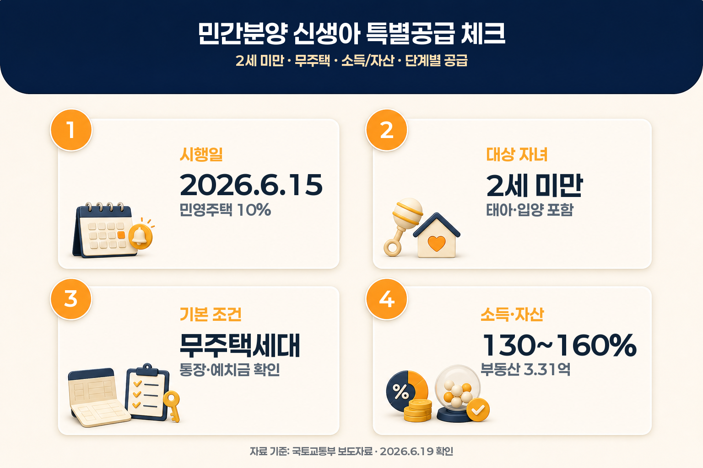
그래서 이번 제도는 “아이만 있으면 무조건 당첨”이라는 의미가 아닙니다. 더 정확히는 민간분양 청약에서 출산가구가 확인할 수 있는 별도 공급유형이 생겼다는 변화입니다.
국토교통부 참고자료 기준으로 신생아 특별공급의 정책 대상은 2세 미만 자녀가 있는 가구입니다. 여기서 2세 미만은 2세가 되는 날을 포함하고, 태아와 입양 자녀도 포함됩니다.
기본적으로 함께 확인할 조건은 다음과 같습니다.
| 확인 항목 | 내용 |
|---|---|
| 자녀 기준 | 2세 미만 자녀, 태아·입양 자녀 포함 |
| 주택 보유 | 입주자모집공고일 기준 무주택세대구성원 |
| 청약통장 | 규제지역 2년, 수도권 1년, 비수도권 6개월 이상 가입 |
| 예치금 | 지역·주택 규모별 예치 기준 금액 이상 |
| 소득·자산 | 공급 단계별 소득 또는 자산 기준 충족 |
여기서 가장 많이 놓치는 부분은 입주자모집공고일 기준입니다. 자녀 나이, 무주택 여부, 소득·자산 기준은 실제 청약하려는 단지의 모집공고일을 기준으로 다시 확인해야 합니다.
민영주택 신생아 특별공급은 소득수준에 따라 우선공급, 일반공급, 추첨공급 3단계로 정리됩니다. 국토교통부 자료는 배분 기준을 우선 50%, 일반 20%, 추첨 30%로 안내합니다.
| 단계 | 배분 | 기준으로 볼 부분 |
|---|---|---|
| 신생아 우선공급 | 50% | 소득 130% 이하 |
| 신생아 일반공급 | 20% | 소득 160% 이하 |
| 신생아 추첨공급 | 30% | 소득 160% 초과 가구도 부동산 3.31억원 이하 등 자산 기준 확인 |
이 표를 볼 때 주의할 점이 있습니다. “130~160%”라는 숫자만 보고 끝내면 안 됩니다. 공급 단계별로 적용되는 기준이 다르고, 실제 소득 산정 방식과 필요 서류는 단지별 입주자모집공고에서 더 자세히 안내될 수 있습니다.
경쟁이 생기면 국토교통부 자료는 추첨을 통해 제도의 복잡성을 최소화한다고 설명합니다. 다만 추첨 구조라고 해서 당첨 가능성을 보장하는 것은 아닙니다. 해당 지역 거주 요건, 공급 단계, 서류 적정성 등은 공고문 기준으로 봐야 합니다.
신생아 특별공급은 따로 상시 신청하는 지원금 제도가 아닙니다. 실제 청약하려는 민영주택 단지의 입주자모집공고가 나오고, 그 공고에 신생아 특별공급 물량과 일정이 안내되어야 신청 흐름이 생깁니다.
실무적으로는 아래 순서로 확인하면 됩니다.
청약홈 메인에는 APT 특별공급 청약신청, 청약자격확인, 주택소유확인, 청약통장 가입내역, 분양정보 메뉴가 함께 제공됩니다. 그래서 “신생아 특별공급이 생겼다”는 소식만 보고 바로 판단하기보다, 실제 단지 공고가 나온 뒤 위 항목을 한 번에 맞춰 보는 편이 안전합니다.
이번 개정의 의미는 기존 신혼부부·생애최초 특별공급 안에서 보던 신생아 우선공급을 별도 신생아 특별공급 구조로 정리했다는 데 있습니다. 국토교통부 자료도 기존 구조를 “생애최초 + 신혼부부 신생아 우선공급 5단계”에서 “신설 신생아 특별공급 3단계”로 바꾸는 그림으로 설명합니다.
특히 혼인신고 후 7년 이내 요건을 갖추지 못한 출산가구가 신혼부부 특별공급에서 기회를 얻지 못하는 사례가 있었다는 점이 보도자료에 언급됩니다. 따라서 아이가 있지만 신혼부부 특별공급 요건이 애매했던 가구라면, 앞으로는 신생아 특별공급 항목이 공고문에 따로 있는지 확인할 필요가 있습니다.
다만 한 단지에서 어떤 특별공급에 신청할 수 있는지, 중복 신청 제한이 어떻게 적용되는지는 공고별로 확인해야 합니다. 이 글은 제도 신설 내용과 기본 조건을 정리한 것이고, 개별 단지의 청약 가능 여부를 판단하지는 않습니다.
아래 항목 중 하나라도 애매하면 공고문을 다시 봐야 합니다.
이 제도는 “새로 생긴 공급유형”이라서 초기에는 공고문마다 독자가 헷갈리는 표현이 나올 수 있습니다. 그래서 청약 전에 공고문 용어가 ‘신생아 특별공급’인지, ‘신혼부부·생애최초’ 안의 우선공급인지를 구분해 보는 것이 좋습니다.
일상적으로는 민간분양이라고 부르는 경우가 많지만, 실제 청약 공고에서는 민영주택이라는 표현을 확인하게 됩니다. 신청 여부를 볼 때는 입주자모집공고의 주택 유형과 공급유형 명칭을 기준으로 판단하면 됩니다.
국토교통부 참고자료는 태아를 포함한다고 안내합니다. 다만 실제 증빙 서류와 인정 방식은 공고문에서 확인해야 합니다.
자료에는 2세가 되는 날 포함이라고 안내되어 있습니다. 다만 나이 판단일은 실제 단지의 입주자모집공고일 기준으로 확인하는 것이 핵심입니다.
자료상 추첨공급 30%는 소득 160% 초과 가구도 부동산 3.31억원 이하 등 자산 기준을 확인하는 구조로 안내됩니다. 따라서 단순히 소득 숫자 하나만 볼 것이 아니라 어느 공급 단계에 해당하는지 공고문 기준으로 봐야 합니다.
개정안 시행일은 2026년 6월 15일입니다. 다만 실제 청약은 단지별 입주자모집공고, 특별공급 배정, 접수 일정에 따라 움직입니다. 따라서 관심 단지가 있다면 시행일보다 그 단지의 모집공고일과 특별공급 항목을 확인하는 것이 더 중요합니다.
이번 민영주택 신생아 특별공급의 핵심은 민간분양 청약에서 출산가구가 확인할 수 있는 별도 공급유형이 생겼다는 점입니다. 2세 미만 자녀, 태아·입양 포함, 무주택세대구성원, 청약통장 가입기간, 예치금, 소득 또는 자산 기준을 함께 확인해야 합니다.
가장 현실적인 확인 순서는 이렇습니다. 먼저 관심 단지의 입주자모집공고에서 신생아 특별공급 항목이 있는지 보고, 그다음 자녀 기준과 무주택 기준, 마지막으로 통장·예치금·소득·자산 기준을 맞춰 보는 것입니다.
자료 기준일: 2026년 6월 19일. 이 글은 국토교통부 보도자료와 청약홈 공개 메뉴를 바탕으로 일반 독자용으로 정리한 정보입니다. 개별 가구의 청약 가능 여부, 당첨 가능성, 서류 적정성을 보장하지 않으며 실제 신청 전에는 최신 입주자모집공고와 공식 안내를 확인해야 합니다.
최근 “7~8월 섬 여행을 하면 최대 10만원을 지원한다”는 섬 여행비 지원 소식이 나왔습니다. 처음 접하면 단순한 여행 할인처럼 느껴질 수 있지만, 실제 흐름은 사전 신청 → 선정 안내 → 7~8월 섬 여행 → 여행 후 증빙 제출 → 심사 후 계좌이체에 가깝습니다.
핵심은 네 가지입니다. 6월 30일까지 1차 신청, 대상 섬은 별도 리스트 확인, 결제금액 10만원 이상, 여행 후 2주 이내 증빙 제출입니다. 선착순으로 바로 확정되는 구조라기보다, 신청 규모가 넘으면 무작위 추첨으로 선정될 수 있다는 점도 먼저 봐야 합니다.
기준일: 2026년 6월 19일
2026년은 정부가 알리는 ‘섬 방문의 해’입니다. 행정안전부와 관련 기관은 7~8월 섬을 방문하는 여행객에게 여행 경비를 지원하는 1차 프로모션을 진행하고 있습니다.
이번 지원은 “최대 10만원”으로 알려졌지만, 공식 프로모션 페이지에서는 여행비 10만원, 결제금액 10만원 이상 이용자 대상 지급으로 안내합니다. 그래서 이 글에서는 실무적으로 이렇게 정리하겠습니다.
| 구분 | 확인할 내용 |
|---|---|
| 신청 기간 | 2026년 6월 17일 오전 10시부터 6월 30일까지 |
| 여행 기간 | 2026년 7~8월 1박 2일 이상 섬 여행 |
| 지원 대상 | 성인 누구나, 단 1팀 대표자 1인 신청 원칙 |
| 지원 금액 | 여행비 10만원 안내, 결제금액 10만원 이상 대상 |
| 지급 방식 | 선정 안내 후 여행, 증빙 검토 뒤 사후 계좌이체 |
| 중요한 전제 | 대상 섬 리스트에 있는 섬이어야 하며, 육지와 연결된 섬은 제외 |
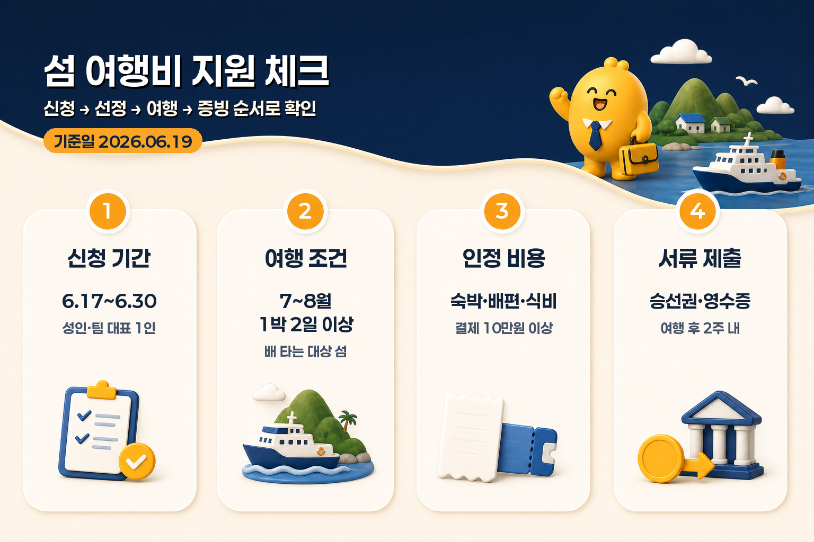
여기서 포인트는 “여행을 다녀오면 자동으로 할인”이 아니라는 점입니다. 먼저 신청하고, 선정 여부를 받은 뒤, 조건에 맞게 여행하고, 영수증과 승선권 같은 증빙을 제출해야 합니다.
공식 경로는 2026 섬 방문의 해 프로모션 페이지입니다. 페이지 하단의 1차 프로모션 신청 버튼을 통해 신청 양식으로 이동하는 구조입니다.
신청 전에는 아래 순서로 확인하는 편이 좋습니다.
공식 페이지 기준으로, 선정 규모보다 신청이 많으면 무작위 추첨으로 진행될 수 있습니다. 따라서 “신청만 하면 무조건 받는다”거나 “먼저 누르면 확정”으로 이해하면 안 됩니다.
가장 헷갈리는 부분은 “섬이면 다 되나?”입니다. 공식 설명은 육지와 연결되지 않아 배를 타고 들어가는 섬을 전제로 합니다. 또 공식 페이지는 별도 리스트에 있는 섬 외에는 지원 대상에서 제외된다고 안내합니다.
2026년 6월 19일 조회 기준, 공식 페이지에서 연결된 대상 섬 리스트에는 166개 섬이 표시되어 있습니다. 지역별로 보면 전라남도, 경상남도, 인천광역시 섬이 많지만, 실제 대상 여부는 여행지 이름만으로 판단하지 말고 리스트에서 확인해야 합니다.
리스트에는 승선권 유무도 함께 표시됩니다. 승선권이 발급되는 곳은 승선권을 챙겨야 하고, 승선권이 발급되지 않는 섬은 영수증 또는 개별 안내가 중요해질 수 있습니다.
정책 안내와 공식 페이지를 종합하면, 섬 지역 여행과 관련된 숙박비, 왕복 배편 승선권, 식비 등 여행 경비가 핵심입니다. 다만 중요한 조건은 실제 결제금액 10만원 이상입니다.
| 비용 항목 | 준비할 증빙 |
|---|---|
| 배편 | 왕복 승선권 또는 영수증 |
| 숙박 | 등록 숙박업소 영수증, OTA 이용 시 예약·결제 내역 |
| 식비·여행 경비 | 카드 영수증, 현금영수증, 송금 계좌이체 내역 등 실제 결제 자료 |
| 지급 계좌 | 통장사본 등 공식 안내에서 요구하는 자료 |
공식 페이지에는 호텔, 리조트, 펜션, 민박 등 섬 내 등록 숙박업소가 안내되어 있고, 캠핑도 가능하다고 표시되어 있습니다. 단, 비인가 업소 영수증은 제외 기준에 포함되어 있으므로 숙박 형태보다 증빙 가능성이 더 중요합니다.
정책 안내에는 전남 섬 반값여행, 숙박세일페스타 등과 연계 추진 계획도 함께 소개되어 있습니다. 다만 현재 1차 프로모션 공식 페이지의 제외 기준에는 타 숙박 할인사업 및 지원 사업과 중복 지원이 들어 있습니다.
따라서 같은 여행비·같은 영수증으로 여러 지원을 동시에 받는 구조라고 단정하면 안 됩니다. 다른 할인이나 지원사업을 함께 알아본다면, 각각의 신청 기간·대상·중복 가능 여부를 따로 확인해야 합니다.
또 아래 항목은 탈락 또는 반려로 이어질 수 있는 대표적인 체크포인트입니다.
| 상황 | 왜 조심해야 하나 |
|---|---|
| 팀원이 각각 신청 | 1팀 대표자 1인 신청 원칙과 중복 신청 제한 |
| 같은 영수증 재사용 | 중복 영수증은 제외 기준 |
| 간이영수증만 제출 | 공식 제외 기준에 간이영수증, 계좌이체 내역만 제출이 포함 |
| 육지와 연결된 섬 방문 | 대상 조건에서 벗어날 수 있음 |
| 왕복 배편 증빙 누락 | 필수 증빙으로 안내됨 |
| 법인카드 사용 | 공식 제외 기준에 법인 카드 사용 불가 표시 |
개인정보가 들어가는 신분증, 통장사본 등을 제출하는 절차가 포함되므로, 실제 제출 전에는 공식 페이지와 개인정보처리방침을 다시 확인하는 것이 좋습니다.
아닙니다. 공식 안내는 사후 정산 방식입니다. 먼저 신청하고 선정 여부를 안내받은 뒤, 조건에 맞게 여행하고 증빙을 제출해야 합니다. 서류 검토가 끝난 뒤 지급됩니다.
공식 안내는 1박 2일 이상 체류를 조건으로 둡니다. 당일치기 섬 여행은 이 1차 프로모션 조건과 맞지 않습니다.
공식 페이지는 1팀, 즉 가족·친구·모임별 대표자 1인 신청을 안내합니다. 1인 여행자는 신청 가능하지만, 단체 여행에서 구성원이 각각 중복 신청하는 방식은 피해야 합니다.
공식 페이지에는 숙박 형태 안내에 캠핑 가능 문구가 있습니다. 다만 실제 인정 여부는 대상 섬, 숙박·체류 증빙, 결제 증빙이 함께 맞아야 합니다.
정책 안내에는 여름 휴가철 1차 지원 이후, 10월에 2026여수세계섬박람회와 연계한 추가 여행비 지원 사업을 추진할 계획이라고 소개되어 있습니다. 다만 10월 지원은 별도 공지가 나와야 세부 조건을 확인할 수 있습니다.
이번 섬 여행비 지원은 여행비 10만원이라는 금액보다, 조건을 맞춰 신청하고 증빙을 남길 수 있는지가 더 중요합니다. 여행지를 먼저 정했다면 대상 섬 리스트에 있는지 확인하고, 아직 여행지를 고르는 단계라면 배편과 숙박·결제 증빙이 깔끔하게 남는지까지 함께 봐야 합니다.
정리하면, 2026년 7~8월 섬 여행을 계획 중이라면 6월 30일까지 1차 신청 여부를 먼저 확인하세요. 다만 선정과 지급을 보장하는 제도는 아니며, 공식 페이지의 세부 조건과 제외 기준이 최종 기준입니다.
자료 기준일: 2026년 6월 19일. 이 글은 공개된 정책 안내, 공식 프로모션 페이지, 대상 섬 리스트, 보도 내용을 바탕으로 일반 독자용으로 정리한 정보입니다. 신청 가능 여부, 선정 여부, 지급 여부를 보장하지 않으며, 신청 전 최신 공식 공지를 다시 확인해야 합니다.
휴대폰을 해지했거나 번호이동을 한 뒤에는 마지막 요금이 정산됩니다. 그런데 정산 뒤에 할인 조건이 뒤늦게 반영되거나, 보증금·선납금처럼 돌려받아야 할 금액이 남는 경우가 있습니다. 이때 확인하는 것이 통신 미환급액 조회입니다.
핵심부터 말하면, 통신 미환급액은 스마트초이스 통신 미환급액 조회에서 온라인으로 일괄 조회할 수 있습니다. 조회 결과 미환급액이 있으면 명의자 본인 계좌로 환급 신청할 수 있지만, 최종 금액은 통신사의 확인 과정에서 달라질 수 있습니다.
기준일: 2026년 6월 13일
스마트초이스는 통신 미환급액을 유·무선 서비스 해지 또는 번호이동 이후 발생한 미환급액 정보로 설명합니다. 해지 시점까지 요금을 정산했더라도, 정산 이후 요금할인 반영, 이중 납부, 보증금·선납금 미수령 같은 사유가 발견되면 돌려받을 금액이 생길 수 있습니다.
즉 “통신요금을 많이 냈다”는 막연한 의미가 아니라, 해지 또는 번호이동 후 사후 정산에서 남은 금액에 가깝습니다.
| 구분 | 어떤 경우에 생길 수 있나 | 확인 포인트 |
|---|---|---|
| 과오납 요금 | 해지정산 요금을 납부했지만 사후 정산 결과 돌려줄 금액이 생긴 경우 | 할인조건 미반영, 이중 납부 등 |
| 단말기 할부보증보험료 미환급액 | 이동전화 해지·번호이동 후 잔여 기간 보험료가 남은 경우 | 스마트초이스 안내상 SK텔레콤 대상 항목 |
| 설비보증금 미환급액 | 유선전화 해지 후 설비보증금이 남은 경우 | KT 유선, LG유플러스 유선, SK브로드밴드 등 |
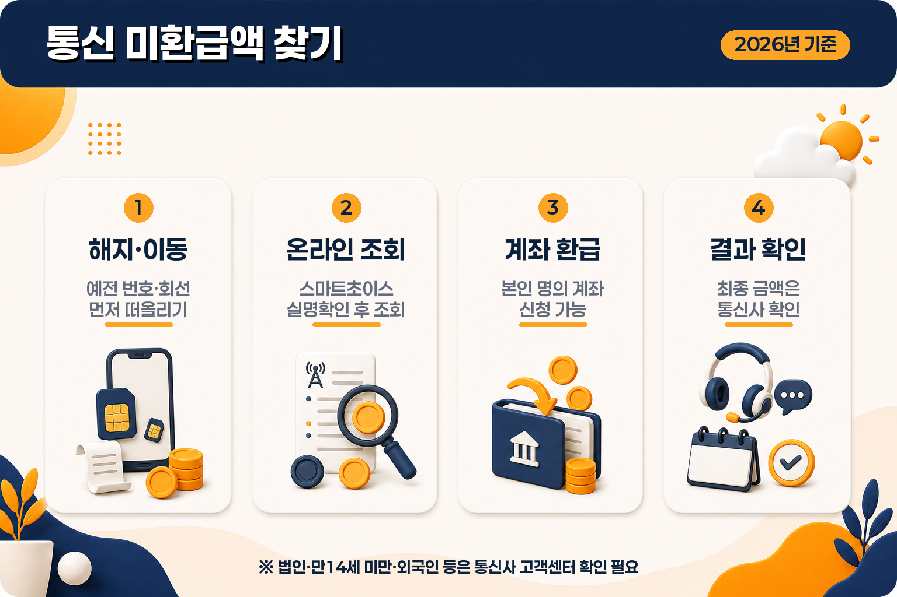
가장 직접적인 공식 경로는 스마트초이스입니다. 스마트초이스 통신 미환급액 조회는 유·무선 서비스의 해지 또는 번호이동 이후 발생된 통신 미환급액을 온라인으로 일괄 조회하고 환급신청할 수 있는 공익 서비스라고 안내합니다.
정부24의 ‘미환급금 조회’에서도 통신 미환급금은 조회서비스 항목에 포함되어 있습니다. 다만 정부24 안내 기준으로 통신 미환급금은 조회서비스에 포함되고, 환급신청 서비스 항목에는 국세·건강보험·국민연금 등이 따로 구분되어 있습니다. 그래서 통신 미환급액은 실제 조회와 환급 흐름을 볼 때 스마트초이스 안내를 함께 확인하는 편이 좋습니다.
| 경로 | 역할 | 참고할 점 |
|---|---|---|
| 스마트초이스 통신 미환급액 조회 | 통신 미환급액 조회·환급신청 안내 | 해지·번호이동 후 통신사 미환급액 확인에 적합 |
| 정부24 미환급금 조회 | 여러 미환급금 조회서비스 안내 | 통신 미환급금은 조회서비스에 포함 |
| 해지한 통신사 고객센터 | 제한 대상·금액 차이·직접 문의 | 법인, 만 14세 미만, 외국인 등은 고객센터 확인 필요 |
스마트초이스 안내 기준으로 KT, SK텔레콤, LG유플러스, SK브로드밴드의 유·무선 서비스에 대한 미환급액 조회가 가능합니다. 또한 전화로 미환급액을 확인하려면 해지한 통신사 고객센터로 직접 문의하라고 안내되어 있습니다.
다만 모든 사람이 스마트초이스에서 바로 조회되는 것은 아닙니다. 스마트초이스는 법인 가입자, 만 14세 미만 가입자, 외국인 가입자, 가명 가입자는 조회가 제한되므로 해당 통신사 고객센터로 문의해야 한다고 안내합니다. 또 실명확인과 동시에 진행되며, 명의도용방지 서비스 등에 가입된 경우 조회가 어려울 수 있다고 설명합니다.
처음 확인한다면 아래 순서로 보면 됩니다.
여기서 중요한 점은 명의자와 은행계좌 명의가 같아야 한다는 것입니다. 스마트초이스는 조회 결과 미환급액이 있는 경우 명의자 소유 은행계좌로 환급하며, 환급대상자와 은행계좌 명의가 동일한 경우에만 환급 가능하다고 안내합니다.
가능합니다. 스마트초이스는 환급액이 해당 사업자의 최종 확인 과정을 거쳐 지급되며, 최종 확인 과정 중 미납금액 확인 등의 사유로 최종 확정 금액이 변경될 수 있다고 안내합니다. 특히 단말기 할부보증보험료 미환급액은 가입자의 미납금액이 확인될 경우 이를 차감한 뒤 환급될 수 있습니다.
그래서 화면에 금액이 보였다고 해서 바로 확정된 돈처럼 생각하기보다는, 신청 후 결과까지 확인하는 흐름으로 보는 것이 안전합니다.
| 상황 | 확인할 점 |
|---|---|
| 법인·외국인·만 14세 미만 명의 | 스마트초이스 조회 제한 대상일 수 있어 통신사 고객센터 확인 |
| 명의도용방지 서비스 가입 | 스마트초이스에서 조회가 어려울 수 있음 |
| 통신사 목록에 없는 서비스 | 해당 통신사 또는 알뜰폰 사업자 고객센터 확인 |
| 조회 금액과 환급 금액이 다름 | 최종 확인, 미납금 차감, 통신사 정산 결과 확인 |
| 전화로 바로 조회하고 싶음 | 스마트초이스 전화 문의로는 개인정보 조회가 불가능하다고 안내됨 |
해지 또는 번호이동 후 남은 금액이 있는지 확인하는 서비스이므로, 과거에 통신사를 바꾼 적이 있다면 한 번 조회해볼 만합니다. 다만 실제 조회 가능 여부와 환급 가능 여부는 통신사 보유 정보와 서비스 화면 기준을 따릅니다.
스마트초이스 페이지에는 SKT 알뜰폰 사업자 고객센터 안내가 함께 표시됩니다. 알뜰폰 이용 이력이 있다면 스마트초이스 조회와 별도로 이용했던 알뜰폰 사업자 고객센터를 확인하는 것이 좋습니다.
스마트초이스 상담 안내에는 개인정보를 이용하므로 유선상 조회는 불가능하다고 표시되어 있습니다. 전화로 확인하려면 해지한 통신사 고객센터로 직접 문의하는 방식이 더 적절합니다.
스마트초이스 안내상 환급액은 사업자의 최종 확인 과정을 거쳐 지급됩니다. 따라서 신청 직후 금액이 바로 확정·입금된다고 단정하기보다는, 결과조회와 통신사 확인까지 봐야 합니다.
통신 미환급액은 지금 쓰는 통신요금보다, 과거에 해지했거나 번호이동한 회선에서 생기는 경우가 많습니다. 그래서 오래전 번호이동, 인터넷·유선전화 해지, 가족 명의로 쓰던 회선 정리 같은 이력이 있다면 한 번 확인해볼 만합니다.
공식 확인 경로는 스마트초이스 통신 미환급액 조회입니다. 조회가 제한되는 명의이거나 금액이 다르게 보이면, 해지한 통신사 고객센터에서 최종 확인하는 흐름으로 정리하면 됩니다.
자료 기준일: 2026년 6월 13일. 통신 미환급액 조회 가능 통신사, 제한 대상, 환급 가능 여부와 최종 금액은 통신사 및 스마트초이스 서비스 안내에 따라 달라질 수 있습니다. 이 글은 일반 정보 정리이며 개인별 환급 가능 여부를 보장하지 않습니다.
카드를 여러 장 쓰다 보면 포인트가 여기저기 흩어집니다. 결제할 때 자동으로 잘 쓰는 포인트도 있지만, 카드사 앱을 따로 열어보지 않으면 남아 있는지조차 모르는 포인트도 있습니다.
핵심부터 정리하면, 카드포인트 통합조회·계좌입금 홈페이지 또는 어카운트인포(AccountINFO) 앱에서 여러 카드사의 포인트를 한 번에 확인하고, 현금화 가능한 포인트는 본인 계좌로 입금 신청할 수 있습니다. 다만 모든 포인트가 무조건 현금화되는 것은 아니고, 처리시간·입금 가능 포인트·소멸 기준은 카드사별로 다를 수 있습니다.
기준일: 2026년 6월 13일
여신금융협회의 카드포인트 통합조회·계좌입금 서비스는 흩어진 카드 포인트를 한 번에 조회하고, 계좌입금 또는 기부 신청까지 이어갈 수 있는 공식 경로입니다. 금융위원회 카드뉴스 기준으로 카드포인트 통합조회 홈페이지에서는 통합조회는 24시간, 계좌입금 서비스는 00:30~23:30에 이용할 수 있다고 안내되어 있습니다.
어카운트인포 앱에서도 카드포인트 조회와 현금화 메뉴를 이용할 수 있습니다. 그래서 PC에서 확인하고 싶으면 카드포인트 통합조회 홈페이지, 모바일에서 금융계좌·카드 정보를 함께 관리하고 싶으면 어카운트인포 앱을 떠올리면 이해가 쉽습니다.
| 구분 | 공식 경로 | 이런 경우에 편함 |
|---|---|---|
| 카드포인트 통합조회·계좌입금 홈페이지 | https://www.cardpoint.or.kr/ | PC에서 포인트 조회와 계좌입금을 바로 확인할 때 |
| 어카운트인포 앱 | AccountINFO 앱 / https://www.payinfo.or.kr/payinfo.html | 휴대폰에서 내 카드·계좌 정보를 함께 확인할 때 |
| 각 카드사 앱 | 개별 카드사 앱·홈페이지 | 특정 카드사의 제휴 포인트, 이벤트 포인트 조건까지 자세히 볼 때 |
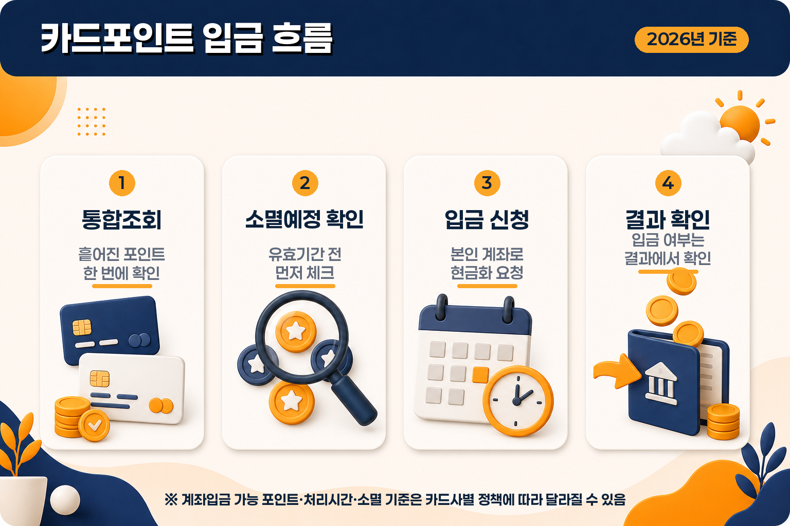
카드 포인트는 카드사별 약관과 포인트 종류에 따라 유효기간이 다릅니다. 금융위원회 카드뉴스는 신용카드·체크카드 개인회원이 현금과 1:1로 교환 가능한 대표 포인트를 1포인트부터 출금·이체할 수 있다고 설명하면서도, 신청 시 유의사항으로 카드사별 1일 1회 신청, 일부 카드사의 다음날 입금 가능성, 신청 완료 후 취소·정정 불가 등을 함께 안내합니다.
즉 “포인트가 있다”와 “지금 계좌입금이 가능하다”는 같은 말이 아닙니다. 조회 화면에서 총 포인트만 보지 말고, 아래 세 가지를 같이 확인하는 것이 좋습니다.
처음 이용한다면 다음 순서로 보면 됩니다.
어카운트인포 앱을 쓰는 경우에는 앱 설치 후 서비스 이용등록을 거쳐, 내 카드 메뉴에서 포인트 조회와 현금화 신청으로 이어지는 구조입니다. 메뉴명은 앱 업데이트에 따라 조금씩 달라질 수 있으니, “내 카드”, “포인트 조회”, “포인트 현금화” 흐름으로 찾으면 됩니다.
있습니다. 금융위원회 안내에 따르면 대부분 카드사는 신청 즉시 계좌입금이 가능하지만, 일부 카드사는 신청 후 다음날 입금되는 경우도 있습니다. 또 계좌입금 신청은 카드사별 1일 1회만 가능하다고 안내되어 있습니다.
따라서 급하게 쓸 돈처럼 생각하기보다는, 소멸 전에 미리 확인하고 정리하는 용도로 접근하는 편이 안전합니다. 특히 여러 카드사의 포인트를 한 번에 정리할 때는 카드사마다 신청 가능 포인트와 처리 기준이 다를 수 있다는 점을 전제로 봐야 합니다.
| 상황 | 확인할 점 |
|---|---|
| 포인트는 보이는데 입금 가능 금액이 적다 | 현금화 가능한 대표 포인트와 제휴·이벤트 포인트가 구분될 수 있음 |
| 계좌입금 신청 후 바로 안 들어온다 | 일부 카드사는 다음날 입금될 수 있음 |
| 신청을 잘못한 것 같다 | 신청 완료 후 취소·정정이 불가하다는 안내가 있으므로 신청 전 계좌와 금액 재확인 |
| 법인카드 포인트도 가능한지 궁금하다 | 공식 안내는 신용·체크카드 개인회원 기준이며 법인회원은 이용할 수 없다고 안내 |
| 소멸 예정 포인트가 걱정된다 | 통합조회로 먼저 확인하고, 세부 유효기간은 카드사 앱·명세서도 함께 확인 |
금융위원회 카드뉴스는 현금과 1:1로 교환 가능한 각 카드사별 대표 포인트에 대해 1포인트부터 출금·이체가 가능하다고 안내합니다. 다만 실제 신청 가능 여부는 카드사별 포인트 종류와 화면 안내를 확인해야 합니다.
단순히 카드 포인트를 조회하고 계좌입금하려면 카드포인트 통합조회 홈페이지가 직관적입니다. 반면 계좌, 자동이체, 카드 정보까지 함께 관리하려면 어카운트인포 앱이 더 익숙할 수 있습니다. 어느 쪽이든 공식 경로를 이용하는 것이 핵심입니다.
금융위원회 카드뉴스는 카드포인트 계좌입금 신청 완료 시 포인트 사용 및 입금 처리가 되어 해당 신청 건의 취소·정정이 불가하다고 안내합니다. 그래서 신청 전 포인트 금액, 카드사, 수취계좌를 한 번 더 확인하는 편이 좋습니다.
통합조회는 주요 카드사 대표 포인트를 중심으로 안내됩니다. 단, 제휴 포인트나 특정 이벤트성 포인트는 성격이 다를 수 있으므로 “총 보유 포인트”와 “입금 가능 포인트”를 구분해서 봐야 합니다.
카드포인트 통합조회는 흩어진 포인트를 한 번에 보는 데 유용하지만, 실제로 돈처럼 계좌로 받을 수 있는지는 한 단계 더 확인해야 합니다. 오늘 확인할 때는 단순 잔액보다 소멸 예정 여부, 현금화 가능 포인트, 입금 신청 결과를 함께 보는 것이 핵심입니다.
공식 경로는 카드포인트 통합조회·계좌입금 홈페이지와 어카운트인포입니다. 포인트가 작아 보여도 여러 카드사를 합치면 생각보다 남아 있을 수 있으니, 소멸 전에 한 번 정리해두면 좋습니다.
자료 기준일: 2026년 6월 13일. 카드포인트 현금화 가능 범위, 처리시간, 포인트 소멸 기준은 카드사 정책과 서비스 화면에 따라 달라질 수 있습니다. 이 글은 일반 정보 정리이며 개인별 카드 이용 조건이나 포인트 사용 판단은 각 카드사 및 공식 서비스 화면을 확인해야 합니다.
실손24는 병원에서 종이 영수증과 진료비 세부내역서를 떼어 보험사에 직접 제출하던 과정을 줄이기 위해 만든 실손보험 청구 전산화 서비스입니다. 참여 병원·약국의 진료내역이 조회되면, 앱이나 홈페이지에서 청구할 진료를 선택해 보험사로 전자 서류를 보낼 수 있습니다.
다만 “병원 서류 없이”라는 말은 모든 병원, 모든 청구가 자동으로 끝난다는 뜻은 아닙니다. 2026년 4월 1일 기준 금융위원회 자료에 따르면 전체 요양기관 104,925개 중 실손24에 연계된 곳은 29,849개, 28.4%입니다. 특히 의원·약국은 2025년 10월 25일부터 대상이 확대됐지만 연계율은 26.2% 수준으로 안내됐습니다. 그래서 먼저 확인할 것은 “내가 다녀온 병원이 실손24에 연결되어 있는가”입니다.
| 구분 | 실손24로 줄어드는 일 | 여전히 확인할 일 |
|---|---|---|
| 병원 서류 | 참여기관의 영수증, 진료비 세부내역서, 처방전 전송 | 진단서·입퇴원확인서 등 추가서류 필요 여부 |
| 청구 방식 | 앱·홈페이지에서 진료내역 선택 후 전송 | 보험계약, 피보험자, 사고·질병 내용 확인 |
| 보험사 접수 | 여러 보험사 계약을 조회해 청구 가능 | 보험금 지급 여부와 금액은 보험사 심사 결과에 따름 |
| 병원 범위 | 병원급·보건소, 의원·약국까지 제도 대상 확대 | 실제 참여 병원·약국인지 별도 확인 필요 |
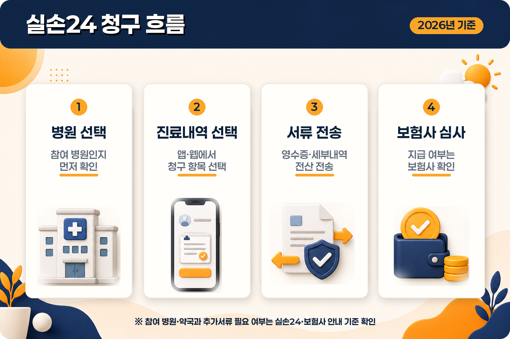
가장 중요한 차이는 “서류 발급을 줄여주는 것”과 “보험금 지급을 보장하는 것”이 다르다는 점입니다. 실손24는 청구에 필요한 기본 서류를 전자적으로 보내는 통로에 가깝고, 최종 지급 여부는 가입한 실손보험 약관과 보험사의 심사에 따라 달라집니다.
실손24는 전체 요양기관을 대상으로 확대됐지만, 실제로 전산 연결이 된 곳에서만 진료내역 조회와 전자 서류 전송이 가능합니다. 앱이나 홈페이지에서 병원명·지역 기준으로 검색해 내가 다녀온 병원이 조회되는지 먼저 확인하는 편이 좋습니다.
조회가 되지 않는다면 그 병원은 아직 실손24 전산 청구가 어려울 수 있습니다. 이 경우 기존처럼 병원에서 서류를 발급받아 보험사 앱이나 홈페이지에 사진으로 첨부하는 방식이 필요할 수 있습니다.
실손24 앱 안내에는 진료내역의 영수증, 세부내역서, 처방전을 전자적으로 보험사에 전송할 수 있다고 설명되어 있습니다. 그래서 통원 진료처럼 기본 서류 중심의 청구는 종이서류 부담이 크게 줄어들 수 있습니다.
다만 입원, 수술, 고액 청구, 특정 질병 코드 확인이 필요한 경우에는 진단서, 입퇴원확인서, 수술확인서 같은 추가서류를 요구받을 수 있습니다. 이 부분은 실손24가 아니라 보험사 심사 기준과 가입 상품에 따라 달라집니다.
실손24는 한국신용정보원에서 조회된 보험계약을 확인해 보험금 청구를 진행할 수 있다고 안내합니다. 여러 보험계약을 한 번에 선택해 청구할 수 있다는 점도 장점입니다. 다만 오래된 계약, 단체보험, 계약자와 피보험자가 다른 경우에는 화면에서 보이는 계약과 실제 청구 가능 범위를 확인해야 합니다.
| 순서 | 할 일 | 체크 포인트 |
|---|---|---|
| 1 | 실손24 앱 또는 홈페이지 접속 | 공식 앱·홈페이지에서 시작 |
| 2 | 본인 확인 후 보험계약 조회 | 청구할 실손보험 계약 선택 |
| 3 | 병원·진료내역 조회 | 최대 조회기간과 참여기관 여부 확인 |
| 4 | 청구할 진료 선택 | 같은 날 여러 진료가 있으면 항목 구분 |
| 5 | 표준 청구서 작성 | 사고·질병 내용, 계좌 등 입력사항 확인 |
| 6 | 보험사로 전송 | 접수 후 보험사 심사 진행 |
실제 화면 구성은 앱 업데이트에 따라 달라질 수 있지만, 큰 흐름은 “보험계약 확인 → 병원·진료내역 선택 → 표준 청구서 작성 → 보험사 전송”입니다. 병원 이름을 정확히 기억하지 못해도, 실손24에서는 지역 기준으로 다녀온 병원을 찾을 수 있다고 안내합니다.
실손24의 장점이 가장 잘 드러나는 경우는 아래 조건이 맞을 때입니다.
이 조건이 맞으면 병원에 다시 방문해 서류를 떼거나, 종이영수증을 사진으로 찍어 첨부하는 과정이 줄어듭니다. 특히 소액 통원 진료나 반복적인 병원비 청구를 자주 하는 사람에게 체감 편의가 큽니다.
반대로 아래 상황에서는 실손24만으로 끝나지 않을 수 있습니다.
이때 실손24가 “실패한 서비스”라기보다, 아직 전산 연계 범위와 보험사 심사 조건이 맞지 않은 상황으로 보는 게 정확합니다. 이런 경우에는 기존 보험사 앱 청구나 고객센터 안내에 따라 추가서류를 준비하면 됩니다.
| 구분 | 실손24 | 보험사 앱 사진청구 |
|---|---|---|
| 서류 흐름 | 병원·약국 전자서류가 보험사로 전송 | 이용자가 영수증·서류를 사진으로 첨부하는 경우가 많음 |
| 장점 | 여러 보험계약 조회와 표준 청구서 활용 가능 | 내 보험사 앱 안에서 접수·진행상태 확인이 익숙함 |
| 제한 | 참여기관·진료내역 조회가 되어야 편함 | 서류 발급·촬영·첨부가 번거로울 수 있음 |
| 같이 볼 점 | 서류 전송 통로 | 보험사별 심사와 지급 안내 |
따라서 “실손24가 무조건 더 좋다”보다는, 참여 병원이라면 실손24를 먼저 확인하고, 조회가 안 되거나 추가서류가 필요하면 보험사 앱 청구로 넘어가는 식이 현실적입니다.
아닙니다. 실손24는 서류 전송과 청구 접수를 편하게 해주는 통로입니다. 보험금 지급 여부와 금액은 가입한 실손보험의 보장 조건, 자기부담금, 면책사항, 보험사 심사 결과에 따라 달라집니다.
실손24 앱 안내에는 처방전 전자 전송 기능이 포함되어 있고, 제도상 의원·약국도 2025년 10월 25일부터 확대 대상에 포함됐습니다. 다만 2026년 4월 기준 의원·약국 연계율은 아직 낮은 편이므로 실제로는 다녀온 약국이 참여기관인지 확인해야 합니다.
앱 안내에는 자녀청구, 부모나 제3자가 대신 작성하는 청구 기능이 소개되어 있습니다. 다만 가족관계 확인, 위임동의, 공공 마이데이터 조회 등 화면에서 요구하는 절차가 있을 수 있으므로 실제 청구 화면의 안내를 따라야 합니다.
참여기관의 기본 서류가 전송되는 청구라면 종이서류 발급 부담이 줄어듭니다. 하지만 입원·수술·고액 청구처럼 추가서류가 필요한 경우에는 보험사 요청에 따라 별도 서류가 필요할 수 있습니다.
실손24의 핵심은 “보험금이 자동으로 나오는 앱”이 아니라 “참여 병원·약국의 기본 진료서류를 보험사로 전자 전송해 주는 청구 통로”입니다. 그래서 병원 서류 없이 청구하려면 첫 단계는 앱 설치가 아니라 참여기관과 진료내역 조회 가능 여부 확인입니다.
정리하면, 실손24 청구는 “참여 병원 확인 → 진료내역 선택 → 기본 서류 전송 → 보험사 심사 확인” 순서로 보면 가장 이해하기 쉽습니다.
※ 이 글은 2026년 6월 13일 공개 자료 기준의 일반 정보 정리입니다. 실손보험금 지급 여부와 금액은 개인의 보험계약, 진료 내용, 자기부담금, 보험사 심사 기준에 따라 달라질 수 있습니다. 최신 참여기관과 청구 가능 서류는 실손24 및 해당 보험사 안내를 확인하세요.
처음 접하는 분들을 위해 간단히 말하면, 주택용 에너지캐시백은 과거 같은 달보다 전기를 덜 쓴 가구에 전기요금 차감 형태의 혜택을 주는 제도입니다. 한전은 올해 7~12월 검침분까지 주택용 에너지캐시백 기준을 한시적으로 완화해, 과거 2개년 같은 달 평균 사용량보다 1%만 절감해도 캐시백을 받을 수 있도록 했다고 밝혔습니다. 지급 단가도 절감률 구간에 따라 1kWh당 최대 120원까지 확대됩니다.
그래서 이번 여름 포인트는 무리한 절약이 아니라, 우리 집의 평소 사용량에서 첫 1%를 확실히 줄이고 7~8월 누진 구간도 함께 의식하는 것입니다. 캐시백은 ‘덜 쓴 전기요금 절감분’과 별도로 적용되는 인센티브 성격이므로, 사용량 관리와 같이 봐야 체감 효과를 이해하기 쉽습니다.
| 구분 | 기존 기준 | 2026년 7~12월 검침분 한시 확대 |
|---|---|---|
| 비교 기준 | 직전 2개년 동월 평균 사용량 대비 절감 | 동일하게 직전 2개년 동월 평균 대비 절감 |
| 최소 절감 문턱 | 3% 이상 절감해야 지급 | 1%만 절감해도 지급 가능 |
| 지급 단가 | 1kWh당 최대 100원 | 절감률 구간별 추가 지원으로 최대 120원 |
| 핵심 의미 | ‘확실히 줄인 집’ 중심 | ‘조금이라도 줄인 집’도 시작 가능 |
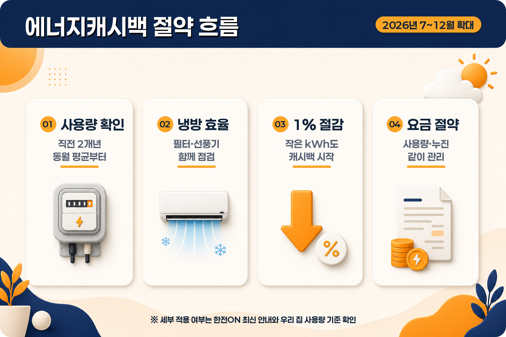
이번 확대의 핵심은 문턱이 3%에서 1%로 내려간 점입니다. 예를 들어 지난해와 지지난해 7월 평균 사용량이 400kWh였던 집이라면, 1%는 4kWh입니다. 물론 실제 캐시백은 한전이 정한 구간, 신청 여부, 검침월, 사용량 자료 등에 따라 달라지지만, ‘시작선’ 자체는 예전보다 가까워졌다고 볼 수 있습니다.
에너지캐시백을 볼 때는 두 가지를 분리해서 생각하면 좋습니다.
첫 번째는 사용량 자체가 줄어드는 효과이고, 두 번째는 제도상 인센티브입니다. 특히 여름에는 냉방 사용량이 커지기 때문에, ‘캐시백을 얼마나 받나’보다 먼저 우리 집 kWh가 평소보다 얼마나 늘어나는지를 봐야 합니다.
7~8월 주택용 전기요금은 여름철 누진 구간 완화가 상시화되어 있습니다. 2019년 제도 개편 자료 기준으로 7~8월에는 1단계 구간이 0~300kWh, 2단계 구간이 301~450kWh로 확대됩니다. 그래서 여름에는 단순히 “에어컨을 무조건 끄자”보다 300kWh, 450kWh 같은 사용량 경계 근처에서 관리하는지가 체감 요금에 더 중요할 수 있습니다.
에너지캐시백은 전월 대비가 아니라 직전 2개년 동월 평균과 비교하는 구조입니다. 6월 사용량과 7월 사용량을 단순 비교하면 계절 효과 때문에 판단이 흐려질 수 있습니다. 한전ON이나 전기요금 고지서에서 같은 달 사용량 흐름을 먼저 확인해 보세요.
여름 전기요금은 검침일에 따라 ‘내가 체감하는 달’과 ‘검침분’이 다르게 느껴질 수 있습니다. 신청·적용 여부는 한전 안내 기준으로 보되, 가정에서는 이번 검침 기간의 누적 kWh를 확인하는 습관이 중요합니다.
비율은 작아 보여도 kWh로 바꾸면 실행이 쉬워집니다.
이 정도는 에어컨 필터 관리, 선풍기 병행, 외출 시간대 차광, 불필요한 조명·대기전력 줄이기처럼 작은 행동을 묶어 달성하는 전략이 현실적입니다.
한국에너지공단은 여름철 냉방온도를 26℃ 이상으로 설정하고, 에어컨 사용 시 선풍기를 함께 활용하며, 창문과 문을 닫아 냉기가 빠져나가지 않게 하라고 안내합니다. 낮 시간 외출 시 커튼으로 햇빛을 차단하는 것도 냉방 부하를 줄이는 방법입니다.
에너지공단 자료에 따르면 에어컨 필터를 청소하지 않으면 소비전력이 증가할 수 있고, 월 1~2회 청소 여부에 따라 전력소비 차이가 발생할 수 있습니다. 비용이 들지 않는 관리 항목이므로, 캐시백을 노리는 집이라면 가장 먼저 점검할 만합니다.
절약이 오래 가지 못하는 이유는 불편함을 크게 만들기 때문입니다. 가족이 함께 사는 집이라면 “에어컨 금지” 같은 규칙보다 아래처럼 실행 단위를 작게 잡는 편이 좋습니다.
신청은 크게 온라인과 방문으로 나눠볼 수 있습니다. 한전 안내 자료에서는 포털에서 ‘한전 에너지 캐시백’을 검색해 에너지마켓플레이스 EN:TER로 접속하거나, 모바일 앱 ‘한전:ON’을 통해 신청할 수 있다고 설명합니다. 한전 고객센터 123에 문의해 가입 경로를 문자로 받아 진행하는 방법도 안내되어 있습니다.
| 방법 | 신청 경로 | 확인할 점 |
|---|---|---|
| 온라인 | 한전 에너지캐시백 전용 화면 또는 한전ON | 고객번호·주소·전기사용 계약 정보 확인, 본인인증 또는 로그인이 필요할 수 있음 |
| 모바일 | 한전:ON 앱에서 에너지캐시백 검색 | 앱 화면 구성이 바뀔 수 있으니 ‘에너지캐시백’ 검색 활용 |
| 방문 | 전국 한전 사업소 | 온라인 신청이 어렵다면 신분증을 지참해 방문 신청 |
다만 메뉴명과 화면 위치는 한전ON 개편에 따라 달라질 수 있습니다. 그래서 글을 보는 시점에는 한전ON 또는 포털 검색창에서 ‘한전 에너지캐시백’을 직접 검색해 최신 신청 화면으로 들어가는 방식이 가장 안전합니다.
주택용 에너지캐시백은 자동으로 모든 가구에 적용되는 제도라기보다, 신청과 사용량 자료 확인이 연결되는 제도입니다. 신청 경로와 세부 제외 대상은 한전ON 또는 한전 에너지캐시백 안내 화면에서 최신 공지를 기준으로 확인해야 합니다.
특히 아파트 관리비에 전기요금이 포함되는 경우, 개별 사용량 자료 제출 여부에 따라 안내가 달라질 수 있습니다. 이사 직후처럼 과거 사용량 자료가 충분하지 않은 경우도 예외가 있을 수 있으니, 신청 화면에서 우리 집 주소 기준으로 확인하는 것이 안전합니다.
아닙니다. 1%는 한시 확대된 최소 문턱에 가깝고, 지급 단가는 절감률 구간에 따라 달라집니다. 한전 발표는 2026년 7~12월 검침분까지 1% 절감도 지급 대상에 넣고, 구간별 추가 지원으로 최대 120원까지 지급한다고 설명합니다.
다릅니다. 누진제는 사용량 구간에 따라 전기요금 단가가 달라지는 요금 구조이고, 에너지캐시백은 과거 같은 달 평균보다 사용량을 줄였을 때 적용되는 절감 인센티브입니다. 여름에는 둘을 함께 봐야 실제 체감 부담을 더 잘 이해할 수 있습니다.
첫째, 한전ON에서 우리 집 전기 사용량 흐름을 확인합니다. 둘째, 에너지캐시백 신청 화면에서 주소·고객번호 기준 신청 가능 여부를 확인합니다. 셋째, 직전 2개년 같은 달 평균 대비 1%가 몇 kWh인지 계산한 뒤 에어컨 필터·선풍기 병행·차광·대기전력처럼 불편함이 적은 항목부터 실행합니다.
2026년 에너지캐시백 확대는 “전기를 많이 아낀 사람만 받는 보상”에서 “조금 줄여도 시작할 수 있는 보상” 쪽으로 문턱이 낮아졌다는 점이 중요합니다. 다만 캐시백 자체만 크게 기대하기보다, 여름철 사용량 증가와 누진 구간을 같이 관리해야 전기요금 부담을 줄이는 방향이 선명해집니다.
정리하면, 이번 여름에는 ‘신청 가능 여부 확인 → 1% 절감 목표 설정 → 냉방 효율 관리 → 누진 구간 확인’ 순서로 접근하는 것이 가장 현실적인 전략입니다.
※ 이 글은 2026년 6월 12일 공개 자료 기준의 일반 정보 정리입니다. 실제 신청 가능 여부, 지급 단가, 적용 월, 제외 대상은 한전ON·한전 에너지캐시백 최신 공지와 각 가구의 전기 사용 정보에 따라 달라질 수 있습니다.
2026년 6월 10일부터 기후동행카드 3만원 페이백 신청이 시작됐습니다. 다만 6월 10일~6월 20일 1차 접수는 4월 사용분을 먼저 받는 기간입니다. 4월에 30일권을 충전·만료까지 이용했다면 지금 신청을 우선 확인하고, 5월·6월 사용분까지 한 번에 정리하고 싶다면 뒤 회차 일정을 같이 봐야 합니다.
이 글은 2026년 6월 10일에 서울시와 티머니 공개 안내를 확인해 작성했습니다. 신청기간·지급일·대상 조건은 이후 바뀔 수 있으니, 실제 신청 전에는 티머니 카드&페이 신청 화면의 최신 안내를 다시 확인하세요.
공식 신청 경로는 티머니 카드&페이의 기후동행카드 3만원 페이백 신청 메뉴입니다. 주소는 https://pay.tmoney.co.kr/ncs/pct/cardrgt/ReadPaybackApl.dev 입니다.
| 구분 | 신청 기간 | 대상 사용분 | 환급 예정 |
|---|---|---|---|
| 1차 | 2026.6.10~6.20 | 4월 사용분 | 2026.6.30부터 순차 지급 |
| 2차 | 2026.6.21~7.20 | 4~5월 사용분 | 2026.7.30부터 순차 지급 |
| 3차 | 2026.7.21~8.20 | 4~6월 사용분 | 2026.8.31부터 순차 지급 |
| 4차 | 2026.8.21~8.31 | 4~6월 사용분 | 2026.9.30부터 순차 지급 |
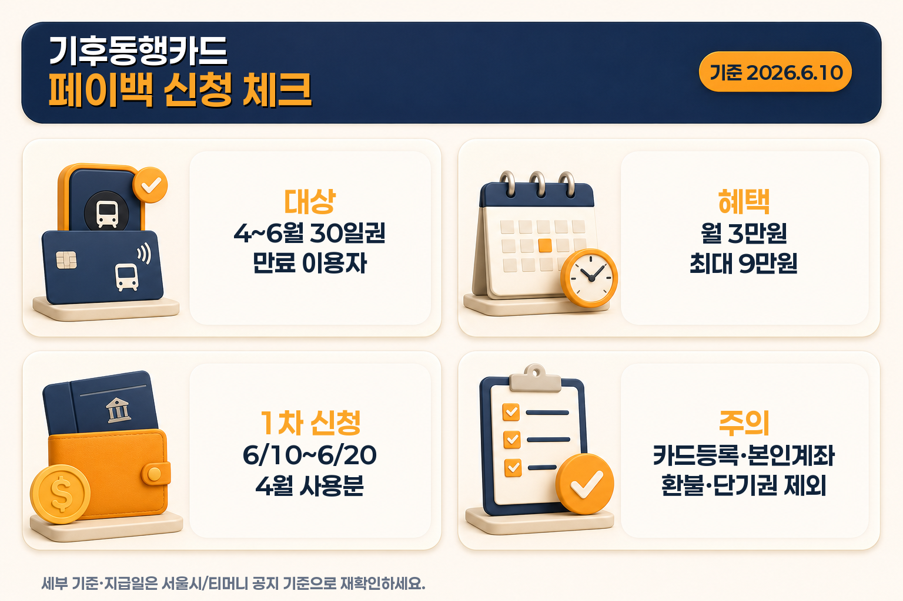
핵심은 “오늘부터 20일까지 끝”이 아니라, 1차 접수는 4월 사용분 중심이라는 점입니다. 전체 신청기간은 2026년 6월 10일부터 8월 31일까지로 안내되어 있습니다.
다음에 해당하면 6월 20일까지 진행되는 1차 접수에서 신청 가능 여부를 확인하는 것이 좋습니다.
반대로 5월·6월 사용분까지 한 번에 흐름을 보고 싶다면 2차·3차 일정도 볼 수 있습니다. 다만 신청을 미루더라도 최종 신청기간인 2026년 8월 31일은 놓치지 않아야 합니다.
행사 기간은 2026년 4월 1일부터 6월 30일까지입니다. 선불카드는 충전일 기준, 후불카드는 사용일 기준으로 안내되어 있습니다. 예를 들어 6월 30일에 충전하거나 사용을 시작해 7월 말까지 만료 이용하는 경우도 공지 예시에 포함됩니다.
대상은 행사 기간 내 기후동행카드 30일권 만료 이용자입니다. 선불 실물, 선불 모바일, 후불 기후동행카드가 모두 언급되어 있습니다. 단기권은 제외됩니다.
선불카드는 30일권 충전 후 만료일까지 환불 없이 이용하면 월 3만원 페이백 대상입니다. 후불카드는 해당 월 첫 사용일부터 30일간의 대중교통 이용금액이 권종별 월 한도 이상이면 3만원, 한도 미만이면 이용금액에 따라 차등 지급될 수 있습니다.
서울시민뿐 아니라 경기도 김포·과천·구리·성남·하남 시민도 대상에 포함됩니다. 선불 실물카드와 후불카드는 티머니 카드&페이 홈페이지 회원가입과 카드등록이 필요합니다. 선불 모바일카드는 별도 카드등록은 불필요하다고 안내되어 있지만, 페이백 신청을 위해 티머니 카드&페이 가입과 신청은 필요합니다.
기본 혜택은 월 3만원, 3개월간 최대 9만원입니다.
| 권종 예시 | 충전·기준 금액 | 페이백 후 체감 금액 |
|---|---|---|
| 일반 | 62,000원 | 32,000원 |
| 청년·청소년·두자녀 | 55,000원 | 25,000원 |
| 세자녀·저소득 | 45,000원 | 15,000원 |
서울시 안내에 따르면 따릉이, 한강버스 등이 포함된 권종도 동일하게 3만원 페이백이 적용됩니다. 다만 페이백 기준은 30일권 중 대중교통, 즉 지하철·버스 수단 이용금액 기준으로 설명되어 있으니 후불카드 이용자는 월 한도와 실제 이용금액을 함께 확인해야 합니다.
이번 페이백은 “카드를 썼다”만으로 끝나는 구조가 아닙니다. 아래는 특히 놓치기 쉽습니다.
충전 이후 만료일까지 사용하지 않고 환불한 경우는 제외됩니다. 고장카드 환불 기간도 합산되지 않고, 재충전 또는 신규충전 후 30일 만기 사용한 건만 대상입니다.
30일권이 기준입니다. 단기권만 사용했다면 페이백 대상이 아닙니다.
개인 확인이 불가능한 티머니 카드&페이 미가입자는 제외됩니다. 선불 실물과 후불은 카드등록이 중요합니다.
페이백은 포인트가 아니라 신청 시 등록한 본인 명의 계좌로 현금 입금되는 방식입니다.
FAQ에서는 티머니 아이디당 1개만 페이백 가능하다고 안내합니다. 가족 카드나 청소년 카드까지 같이 쓰는 경우 계정·카드 관계를 먼저 확인해야 합니다.
먼저 4월 사용 여부를 기준으로 나눠 보세요.
서울시 FAQ는 6월에 4월분을 신청하면 5월·6월 사용분은 별도 신청하지 않아도 4월분 신청 정보로 입금된다고 안내합니다. 다만 실제 지급 일정과 신청 상태는 티머니 카드&페이 신청내역에서 확인하는 것이 안전합니다.
FAQ는 30일만 이용해도 페이백 혜택을 받을 수 있다고 설명합니다. 핵심은 30일권을 충전 후 만료까지 사용했는지, 그리고 신청기간 안에 신청했는지입니다.
아닙니다. 후불카드는 권종별 월 한도 이상 이용하면 3만원, 한도 미만이면 이용금액에서 최저이용기준을 뺀 금액으로 차등 지급될 수 있습니다.
서울시 안내 기준으로 서울 시민, 경기도 김포·구리·과천·성남·하남 시민도 페이백을 받을 수 있습니다.
이번 기후동행카드 페이백 글에서 가장 중요한 날짜는 두 개입니다. 1차 신청은 2026년 6월 10일~6월 20일, 전체 신청 마감은 2026년 8월 31일입니다. 4월 사용분이 있다면 1차 신청 대상인지 확인하고, 5월·6월분은 이어지는 회차 일정까지 같이 체크해 두는 방식이 실수를 줄이는 방법입니다.
※ 이 글은 2026년 6월 10일에 확인한 서울시·티머니 공개 안내를 바탕으로 작성한 정보성 글입니다. 실제 신청 가능 여부, 지급금액, 지급일은 개인의 카드등록·이용내역·거주지 확인 결과와 신청 시점의 공식 화면에 따라 달라질 수 있습니다.
기준일: 2026년 6월 8일
대출 갈아타기는 “새 금리가 더 낮다”는 이유만으로 결정하기 어렵습니다. 금리가 내려가도 중도상환수수료, 인지세, 보증료, 담보 설정·말소 비용, 우대금리 조건 손실까지 합치면 실제 이득이 줄거나 사라질 수 있기 때문입니다.
먼저 결론부터 정리하면 이렇습니다.
갈아타기 여부는 월 절감액 × 앞으로 유지할 기간이 갈아타기 총비용보다 큰지로 봐야 합니다.
아래 글은 특정 은행이나 상품을 추천하는 글이 아닙니다. 공개 공식 자료를 바탕으로, 대출 갈아타기 전 “내가 몇 개월 지나야 본전인지”를 계산하는 틀을 정리한 글입니다.
대출 갈아타기의 핵심 계산식은 아래 한 줄입니다.
| 계산 항목 | 의미 |
|---|---|
| 월 절감액 | 기존 대출 월 부담액 - 신규 대출 월 부담액 |
| 갈아타기 총비용 | 중도상환수수료 + 신규 대출 부대비용 + 기존 대출 정리 비용 + 조건 손실 |
| 손익분기 개월 수 | 갈아타기 총비용 ÷ 월 절감액 |
| 순이득 추정 | 월 절감액 × 앞으로 유지할 개월 수 - 갈아타기 총비용 |
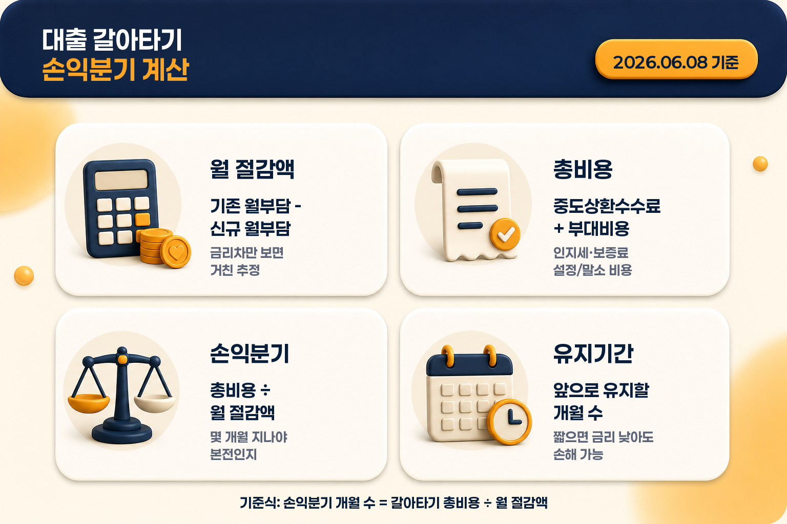
예를 들어 갈아타기 비용이 60만원이고 월 절감액이 10만원이라면, 6개월이 지나야 본전입니다. 앞으로 1년 이상 유지할 계획이면 숫자상 여지가 있고, 3개월 뒤 상환하거나 이사할 가능성이 크면 금리가 낮아도 손해가 될 수 있습니다.
다만 월 절감액은 단순히 “대출잔액 × 금리 차이 ÷ 12”로만 확정하면 안 됩니다. 만기, 상환방식, 거치기간, 원리금균등·원금균등 여부가 달라지면 매달 내는 돈과 총이자가 달라집니다. 빠른 1차 추정에는 금리 차이식을 쓰되, 최종 판단은 금융회사 앱이나 대출비교 플랫폼에서 제시하는 월 상환액·총비용 기준으로 다시 확인해야 합니다.
많이 놓치는 부분이 “중도상환수수료만 빼면 끝”이라고 생각하는 것입니다. 실제로는 대출 종류에 따라 아래 비용이 함께 움직일 수 있습니다.
| 비용 항목 | 확인할 곳 | 주의할 점 |
|---|---|---|
| 중도상환수수료 | 기존 대출 상품설명서, 금융회사 앱, 금융협회 공시 | 대출일, 남은 기간, 상품 종류별로 다름 |
| 인지세 | 신규 대출 약정 화면, 상품설명서 | 대출금액 구간에 따라 부담 방식이 달라질 수 있음 |
| 담보 설정·말소 관련 비용 | 주담대 신규 은행, 기존 은행 | 근저당 설정·말소, 감정평가 등 항목 확인 필요 |
| 보증료 | 전세대출·보증부 대출 보증기관/은행 | 기존 보증 환급과 신규 보증료 재납부가 동시에 생길 수 있음 |
| 우대금리 조건 손실 | 신규 대출 금리 상세 조건 | 급여이체, 카드사용, 자동이체 조건을 못 채우면 실제 금리가 올라갈 수 있음 |
| 상환방식 변화 | 신규 대출 약정 조건 | 월 부담은 줄어도 만기가 늘면 총이자가 커질 수 있음 |
금융위원회는 대출 갈아타기 과정에서 절감할 수 있는 이자와 기존 대출의 중도상환수수료를 비교해 판단할 수 있다고 설명합니다. 이 말은 “금리만 비교하지 말고 수수료와 비용을 같이 보라”는 뜻으로 읽어야 합니다.
2025년 1월 13일 신규 대출부터 중도상환수수료율 인하가 시행됐습니다. 금융위원회는 실비용 내에서만 중도상환수수료를 부과하도록 하는 개편방안을 시행한다고 밝혔고, 금융협회 홈페이지에 금융회사별 수수료율이 공시된다고 안내했습니다.
그렇다고 모든 대출의 중도상환수수료가 사라진 것은 아닙니다. 금융위원회 자료는 금소법상 중도상환수수료가 원칙적으로 금지되지만, 소비자가 대출일부터 3년 이내 상환하는 경우 예외적으로 부과 가능하다고 설명합니다. 또 업권과 상품, 고정·변동, 담보·신용 여부에 따라 수수료율이 달라질 수 있습니다.
따라서 계산 순서는 이렇게 잡는 편이 안전합니다.
아래 숫자는 이해를 돕기 위한 가정입니다.
| 항목 | 가정값 |
|---|---|
| 기존 신용대출 잔액 | 3,000만원 |
| 기존 금리 | 연 8.0% |
| 신규 금리 | 연 6.8% |
| 금리 차이 | 연 1.2%p |
| 단순 월 이자 절감 추정 | 약 3만원 |
| 갈아타기 비용 | 약 5만원 |
| 앞으로 유지할 기간 | 12개월 |
단순 계산으로는 월 절감액이 약 3만원입니다. 갈아타기 비용이 5만원이라면 손익분기점은 약 2개월입니다. 앞으로 12개월 유지한다면 대략 31만원 정도의 순절감 여지가 있습니다.
| 계산 | 값 |
|---|---|
| 월 절감액 | 3만원 |
| 손익분기 개월 수 | 5만원 ÷ 3만원 = 약 1.7개월 |
| 12개월 유지 시 절감액 | 36만원 |
| 비용 차감 후 순절감 | 약 31만원 |
이 경우에는 중도상환수수료나 부대비용이 낮으면 갈아타기 실익이 빨리 나타날 수 있습니다. 다만 새 대출의 금리가 “우대조건 충족 시” 금리라면, 급여이체·카드사용·자동이체 조건을 못 채웠을 때 실제 절감액은 줄어듭니다.
주택담보대출은 대출 잔액이 커서 금리 차이가 작아도 월 절감액이 크게 보입니다. 하지만 중도상환수수료, 설정·말소 비용, 인지세 등도 함께 봐야 합니다.
| 항목 | 가정값 |
|---|---|
| 기존 주담대 잔액 | 2억원 |
| 기존 금리 | 연 4.5% |
| 신규 금리 | 연 4.0% |
| 금리 차이 | 연 0.5%p |
| 단순 월 이자 절감 추정 | 약 8.3만원 |
| 중도상환수수료 등 비용 | 약 110만원 |
| 기타 부대비용 | 약 30만원 |
| 총비용 | 약 140만원 |
이 경우 손익분기점은 약 17개월입니다.
| 계산 | 값 |
|---|---|
| 월 절감액 | 약 8.3만원 |
| 총비용 | 약 140만원 |
| 손익분기 개월 수 | 140만원 ÷ 8.3만원 = 약 16.9개월 |
| 24개월 유지 시 순절감 | 약 59만원 |
| 6개월 뒤 상환·이사 시 | 비용 회수 어려움 |
즉 24개월 이상 유지할 계획이면 숫자상 검토할 수 있지만, 6개월 뒤 이사·매도·전액상환 가능성이 있다면 금리가 내려가도 손익이 뒤집힐 수 있습니다.
| 항목 | 가정값 |
|---|---|
| 기존 대출 잔액 | 1억원 |
| 기존 금리 | 연 3.9% |
| 신규 금리 | 연 3.7% |
| 금리 차이 | 연 0.2%p |
| 단순 월 이자 절감 추정 | 약 1.7만원 |
| 갈아타기 비용 | 약 40만원 |
| 앞으로 유지할 기간 | 10개월 |
이 경우 10개월 동안 아낄 수 있는 금액은 약 17만원 수준인데, 비용이 40만원이면 손익분기점에 도달하지 못합니다. 손익분기 개월 수는 약 24개월입니다.
| 계산 | 값 |
|---|---|
| 월 절감액 | 약 1.7만원 |
| 총비용 | 약 40만원 |
| 손익분기 개월 수 | 약 24개월 |
| 10개월 유지 시 결과 | 약 23만원 손해 가능 |
이 예시가 중요한 이유는 “금리가 낮아졌다”와 “내가 이득이다”가 다르다는 점을 보여주기 때문입니다.
전세대출이나 보증부 대출은 일반 신용대출보다 비용 구조가 복잡할 수 있습니다. 금융위원회 자료에서도 전세대출 갈아타기 과정에서 기존 보증료 환급과 신규 보증료 재납부 부담이 함께 언급된 바 있습니다.
따라서 전세대출을 갈아탈 때는 아래 항목을 따로 적어야 합니다.
| 확인 항목 | 보는 이유 |
|---|---|
| 기존 보증료 환급액 | 남은 기간에 대해 돌려받을 수 있는 금액 확인 |
| 신규 보증료 | 새 보증 가입 시 다시 내야 하는 금액 확인 |
| 보증기관 변경 여부 | HUG, HF, SGI 등 보증 구조가 달라질 수 있음 |
| 임대차계약 만기 | 만기까지 얼마 남지 않으면 비용 회수 기간이 짧음 |
| 보증금 증액 여부 | 전세대출 갈아타기 가능 조건에 영향 가능 |
전세대출은 금리 차이만 보고 판단하기보다 “남은 임대차 기간 동안 절감되는 이자”와 “보증료 순부담”을 같이 보는 편이 현실적입니다.
아래 표를 복사해 본인 숫자를 넣어보면 됩니다. 다만 이 표는 1차 추정용입니다. 최종 금리·한도·비용은 금융회사 심사와 약정 조건에서 확인해야 합니다.
| 항목 | 내 숫자 |
|---|---|
| 기존 대출 잔액 | 원 |
| 기존 금리 | % |
| 신규 금리 | % |
| 금리 차이 | %p |
| 기존 월 상환액 | 원 |
| 신규 월 상환액 | 원 |
| 월 절감액 | 원 |
| 중도상환수수료 | 원 |
| 인지세·설정·말소 비용 | 원 |
| 보증료 순부담 | 원 |
| 기타 조건 손실 | 원 |
| 갈아타기 총비용 | 원 |
| 앞으로 유지할 개월 수 | 개월 |
| 손익분기 개월 수 | 총비용 ÷ 월 절감액 |
| 순이득 추정 | 월 절감액 × 유지개월 - 총비용 |
월 절감액이 0원 이하라면 계산을 더 할 필요가 없습니다. 총비용이 0원에 가까운 경우에도 신규 대출의 상환방식, 만기, 우대금리 조건이 바뀌면 총이자가 달라질 수 있으므로 약정 전 한 번 더 확인해야 합니다.
대출 갈아타기 전에는 “금리가 몇 % 낮아졌나”보다 아래 질문이 더 중요할 때가 많습니다.
| 질문 | 왜 중요한가 |
|---|---|
| 새 금리는 확정금리인가, 예상금리인가 | 심사 후 금리가 달라질 수 있음 |
| 우대금리 조건을 계속 채울 수 있나 | 조건 미충족 시 월 절감액이 줄어듦 |
| 만기가 늘어나나 | 월 부담은 줄어도 총이자가 늘 수 있음 |
| 고정금리와 변동금리 구조가 바뀌나 | 금리 변동 위험이 달라짐 |
| 앞으로 이 대출을 몇 개월 유지할 계획인가 | 유지기간이 짧으면 비용 회수 불가 |
| 전세·담보·보증 조건이 바뀌나 | 보증료, 설정비용, 심사조건이 달라질 수 있음 |
| 기존 대출에 중도상환수수료 면제 구간이 있나 | 조금 기다리는 것이 더 유리할 수 있음 |
대출 갈아타기는 “무조건 빨리”가 아니라 “내 비용 회수 기간보다 오래 유지할 수 있는가”로 판단하는 것이 더 실전적입니다.
공식·공신력 있는 출처는 역할을 나눠 보면 됩니다.
| 확인할 숫자 | 확인 경로 |
|---|---|
| 새 대출 후보 금리 | 금융상품한눈에, 대출비교 플랫폼, 금융회사 앱 |
| 은행권 금리·수수료 비교 | 은행연합회 소비자포털 |
| 기존 대출 잔액·중도상환수수료 | 기존 금융회사 앱·고객센터·상품설명서 |
| 신규 대출 부대비용 | 신규 금융회사 약정 화면·상품설명서 |
| 대출 갈아타기 제도 범위 | 금융위원회 보도자료 |
특히 대출비교 플랫폼에서 보이는 금리는 심사 전 예상 조건일 수 있습니다. 갈아타기 여부를 최종 결정하기 전에는 신규 금융회사 약정 화면에서 금리, 상환방식, 만기, 부대비용, 우대조건을 다시 확인해야 합니다.
정답으로 고정된 숫자는 없습니다. 대출 잔액이 크고 유지기간이 길면 0.2~0.3%p 차이도 의미가 있을 수 있고, 잔액이 작거나 비용이 크면 1%p 차이도 생각보다 이득이 작을 수 있습니다. 그래서 금리 차이보다 손익분기 개월 수를 먼저 계산하는 편이 안전합니다.
아닙니다. 2025년 이후 신규 대출부터 중도상환수수료 체계가 개편됐지만, 모든 대출의 수수료가 0원이라는 뜻은 아닙니다. 또한 인지세, 보증료, 설정·말소 비용, 우대금리 조건 손실이 남아 있을 수 있습니다.
월 상환액이 줄어도 만기가 길어지면 총이자는 늘 수 있습니다. 갈아타기 전에는 월 부담, 총이자, 만기, 상환방식을 함께 봐야 합니다.
비교 자체는 유용하지만, 최종 결정은 신규 금융회사 심사와 약정 조건 확인 후 해야 합니다. 예상금리와 최종금리, 우대조건, 부대비용이 달라질 수 있기 때문입니다.
대출 갈아타기의 핵심은 낮은 금리를 찾는 것이 아니라, 낮아진 금리로 아끼는 돈이 갈아타기 비용을 넘어서는지 확인하는 것입니다.
정리하면 세 가지만 기억하면 됩니다.
이 세 가지가 맞아야 “금리가 낮다”가 “내게도 이득”으로 바뀝니다.
출처 및 기준일: 금융위원회 대출 갈아타기·중도상환수수료 보도자료, 금융상품한눈에, 은행연합회 소비자포털을 2026년 6월 8일 기준으로 확인했습니다. 이 글은 일반 정보 정리이며, 특정 대출상품 가입·대환·승인·금리 적용을 권유하거나 보장하지 않습니다. 실제 비용과 조건은 개인의 대출 종류, 계약일, 잔액, 신용도, 담보, 보증, 금융회사 심사 결과에 따라 달라질 수 있습니다.
2026년 희망두배 청년통장 신청은 6월 8일부터 시작됐습니다. 서울에 거주하면서 일하고 있는 청년이라면 6월 19일 금요일 18시 전까지 자격과 서류를 확인해 온라인으로 신청할 수 있습니다.
이 사업의 핵심은 단순합니다. 본인이 월 15만원을 2년 또는 3년 저축하면 같은 금액을 서울시 예산과 민간후원금으로 매칭해주는 구조입니다. 2년은 총 720만원, 3년은 총 1,080만원에 이자가 별도로 붙습니다. 다만 자격에 맞는다고 모두 선발되는 방식은 아니고, 서류 심사와 선정심사표에 따라 고득점순으로 선발됩니다.
| 구분 | 확인할 내용 |
|---|---|
| 신청기간 | 2026년 6월 8일(월) ~ 6월 19일(금) 18:00 |
| 모집인원 | 총 10,000명 |
| 신청방법 | 서울시 자산형성지원사업 누리집 온라인 신청, PC 신청 |
| 저축방식 | 본인 월 15만원 저축 + 동일 금액 매칭지원 |
| 총적립금 | 2년 720만원, 3년 1,080만원, 이자 별도 |
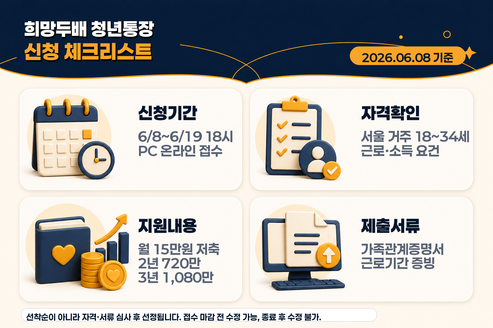
신청 전에는 먼저 세 가지를 준비하면 됩니다. 신청 자격을 확인하고, 가족관계증명서를 준비하고, 2025년 6월부터 2026년 5월 사이의 근로기간 증빙을 확인하는 것입니다.
2026년 희망두배 청년통장은 공고일인 2026년 5월 26일 기준으로 아래 조건을 모두 충족해야 신청할 수 있습니다.
| 조건 | 기준 |
|---|---|
| 거주 | 서울시 거주자 |
| 나이 | 18세~34세, 1991년 1월 1일~2008년 12월 31일 출생 |
| 근로 | 최근 1년간 3개월 이상 근로했거나, 현재 3개월 이상 근로 중 |
| 본인 소득 | 세전 월평균 근로소득 255만원 이하 |
| 가족 소득·재산 | 부모, 기혼자는 배우자 소득 연 1억원 미만·재산 9억원 미만 |
근로종류, 근로시간, 근로일수 자체가 중요한 것이 아니라 공고문에서 인정하는 증빙서류로 월 단위 근로기간을 확인할 수 있어야 합니다. 아르바이트, 계약직, 프리랜서 등이라도 본인의 근로기간을 증빙할 수 있는지가 핵심입니다.
제대군인은 복무기간만큼 신청 가능 연령이 상향될 수 있으며, 상한은 39세까지입니다. 반대로 외국인과 재외국민은 신청할 수 없습니다.
아래 항목 중 하나라도 해당하면 신청이 제외될 수 있고, 선정된 뒤에도 참여가 불가능할 수 있습니다.
유사 자산형성지원사업은 예외와 세부 기준이 있으므로, 본인에게 비슷한 사업 참여 이력이 있다면 공고문 붙임 목록을 반드시 확인하는 편이 안전합니다.
희망두배 청년통장은 월 15만원을 저축하는 구조입니다. 선정 후 약정을 체결하고, 저축·근로·거주 의무를 지키면 본인저축액과 같은 금액이 매칭지원액으로 적립됩니다.
| 약정기간 | 본인저축액 | 매칭지원액 | 총적립금 |
|---|---|---|---|
| 2년 | 360만원 | 360만원 | 720만원 + 이자 |
| 3년 | 540만원 | 540만원 | 1,080만원 + 이자 |
예를 들어 3년형을 선택하면 본인이 매달 15만원씩 총 540만원을 저축하고, 동일한 540만원이 매칭되어 총 1,080만원을 만드는 방식입니다. 단, 이는 선정과 약정, 기간 중 의무 이행을 전제로 한 금액입니다.
기본 제출서류는 크게 두 가지입니다.
신청자 본인 기준으로 발급하고, 주민등록번호는 전부 공개를 선택해야 합니다.
2025년 6월부터 2026년 5월 사이에 3개월 이상 근로했다는 사실을 증빙해야 합니다.
근로기간 증빙서류가 여러 개라면 ZIP 파일 1개로 묶어 제출할 수 있습니다. 파일에 비밀번호가 걸려 있거나 식별이 어려우면 선발 제외가 될 수 있으니, 업로드 전 열람 가능 여부를 꼭 확인해야 합니다.
공고문은 4대보험 가입 내역과 국세청 사업자등록 사업자는 공공마이데이터로 확인 예정이라 별도 근로증빙 제출이 필요 없다고 안내하고 있습니다. 다만 본인의 근로 형태가 애매하거나 자료가 누락될 수 있다면 신청 화면과 공고문을 함께 확인하는 것이 좋습니다.
쉼터 퇴소 청소년이나 학교 밖 청소년에 해당하는 경우에는 청소년 쉼터 퇴소 확인서, 정원 외 관리 증명서, 고등학교 제적증명서 등 추가서류가 필요할 수 있습니다.
신청은 서울시 자산형성지원사업 누리집에서 온라인으로 진행합니다. 공고문 기준으로 PC만 신청 가능하고 크롬 브라우저가 권장됩니다.
접수 시작일과 마감일에는 접속자가 몰릴 수 있습니다. 먼저 신청한다고 선발 우선권이 생기는 방식은 아니지만, 서류를 수정할 시간이 필요할 수 있으므로 마감 직전 제출은 피하는 편이 좋습니다.
선정자 발표는 2026년 11월 3일 화요일 예정입니다. 일정은 사정에 따라 변동될 수 있고, 선정자는 문자로 안내되며 미선정자에게는 별도 안내가 없습니다. 결과는 서울시 자산형성지원사업 누리집에서 조회할 수 있습니다.
선정된 뒤에는 7일 이내에 약정을 진행하고 신한은행 희망두배 청년통장 적금 계좌를 개설해야 합니다. 이 기간 안에 약정과 계좌 개설을 하지 않으면 참여 포기로 간주됩니다.
참가자가 지켜야 할 의무도 있습니다.
등본상 주소지가 서울 외 지역으로 변경되면 중도해지 사유가 될 수 있으므로, 장기적으로 서울 거주를 유지할 수 있는지도 함께 생각해야 합니다.
첫째, 마감은 6월 19일 금요일 18시입니다. 날짜만 보고 밤까지 가능하다고 생각하면 위험합니다.
둘째, 모바일 신청이 아니라 PC 온라인 신청입니다. 신청 당일에는 PC와 크롬 환경을 미리 준비해두는 것이 좋습니다.
셋째, 파일 비밀번호와 누락 서류입니다. 공고문은 제출서류 미비, 누락, 비밀번호 설정 등으로 확인이 어려우면 선발 제외될 수 있다고 안내합니다.
넷째, 자격을 충족해도 전원 선발이 아닙니다. 1차 자격·서류 심사 뒤 2차 선정심사표에 따라 고득점순으로 선발됩니다.
다섯째, 다른 청년지원사업과의 관계입니다. 서울시 청년수당, 가족돌봄청년 자기돌봄비 지원 사업, 근로장학생 및 일경험 프로그램 참여 여부는 신청 전 반드시 확인해야 합니다.
근로종류, 근로시간, 근로일수 자체는 무관하다고 공고문에 안내되어 있습니다. 다만 2025년 6월부터 2026년 5월 사이 3개월 이상 근로했다는 점을 인정되는 증빙서류로 확인할 수 있어야 합니다.
선정심사표에는 본인 재산, 연령, 서울시 거주기간, 소득, 근로기간, 사용계획, 부모 또는 배우자의 소득·재산 등이 함께 반영됩니다. 단순히 한 가지 조건만으로 선발 여부를 판단하기는 어렵습니다.
미혼자는 부모의 소득과 재산을, 기혼자는 배우자의 소득과 재산을 기준으로 봅니다. 세대분리 여부와 무관하게 적용된다고 공고문에 안내되어 있습니다.
이 사업은 즉시 현금을 지급하는 제도가 아니라, 약정기간 동안 본인이 저축하고 의무를 지킨 뒤 매칭지원액이 함께 적립되는 자산형성 방식입니다.
6월 19일 18시 마감, PC 신청, 가족관계증명서, 근로기간 증빙, 제외 사유입니다. 특히 파일 확인이 안 되면 선발 제외가 될 수 있으니 서류 준비가 가장 중요합니다.
2026년 희망두배 청년통장은 서울 청년에게 월 15만원 저축을 기반으로 목돈을 만들 수 있게 돕는 제도입니다. 6월 8일부터 신청이 시작됐지만, 마감은 6월 19일 18시로 길지 않습니다.
서울에 거주하고 일하는 청년이라면 먼저 신청 자격과 제외 사유를 확인하고, 가족관계증명서와 근로기간 증빙부터 준비해두세요. 신청 자체보다 중요한 것은 공고문 기준에 맞는 서류를 빠짐없이 제출하는 것입니다.
※ 이 글은 2026년 6월 8일 기준 서울시 공식 공고와 서울시 자산형성지원사업 안내를 바탕으로 정리한 일반 정보입니다. 최종 신청 가능 여부와 제출서류는 반드시 공식 공고문과 신청 화면에서 다시 확인하세요.
2026년에 신청하는 2025년 귀속 근로·자녀장려금 정기신청은 2026년 6월 1일에 끝났습니다. 하지만 여기서 완전히 끝난 것은 아닙니다. 국세청 안내 기준으로 기한 후 신청 기간은 2026년 6월 2일부터 12월 1일까지입니다.
다만 정기신청과 똑같이 보면 안 됩니다. 기한 후 신청은 산정된 장려금의 95%만 지급되고, 지급시기도 정기분과 다르게 신청일부터 4개월 이내로 봐야 합니다. 그래서 이 글의 핵심은 “아직 신청할 수 있나?”가 아니라, 놓친 뒤에 무엇이 달라지는지를 먼저 정리하는 것입니다.
기준일: 2026년 6월 7일. 아래 내용은 국세청 근로·자녀장려금 공식 안내와 2026년 4월 30일 국세청 보도자료를 바탕으로 정리했습니다.
정기신청을 놓친 사람에게 중요한 순서는 다음입니다.
여기서 가장 많이 헷갈리는 부분은 “안내문을 못 받으면 대상이 아니다”라는 생각입니다. 국세청은 안내문을 받지 못했더라도 소득·재산 요건을 충족한다고 판단되는 경우 증빙을 첨부해 홈택스에서 직접 신청할 수 있다고 안내합니다. 반대로 안내문을 받았다고 해서 지급이 확정되는 것도 아닙니다. 심사 결과에 따라 지급액이 없거나 안내 금액과 달라질 수 있습니다.
정기신청을 놓쳤을 때 가장 실질적인 차이는 세 가지입니다. 기간, 금액, 지급시기입니다.
| 구분 | 정기신청 | 기한 후 신청 |
|---|---|---|
| 신청기간 | 2026.5.1.~6.1. | 2026.6.2.~12.1. |
| 지급액 | 심사 후 산정액 기준 | 산정액의 95% 지급 |
| 지급시기 | 2026.8.27. 지급 예정 | 신청일부터 4개월 이내 |
| 핵심 포인트 | 법정기한보다 앞당겨 지급 예정 | 5% 감액과 지급 지연을 고려 |
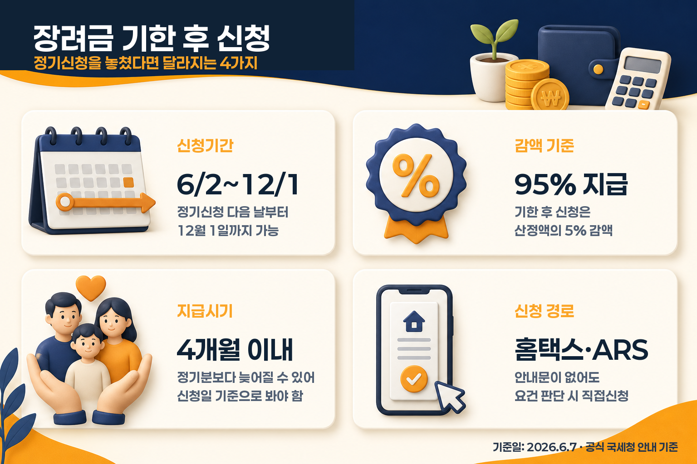
예를 들어 산정액이 100만원이라면 기한 후 신청에서는 95만원 지급 구조가 됩니다. 실제 지급액은 가구 유형, 총소득, 재산, 체납 여부, 자녀세액공제 중복 여부 등에 따라 달라질 수 있습니다.
정기신청을 놓쳤다고 생각하기 전에 먼저 볼 것이 있습니다. 2025년에 근로소득만 있는 가구로 2025년 9월 또는 2026년 3월에 반기 신청을 이미 완료했다면, 정기신청을 다시 하지 않아도 됩니다.
국세청 보도자료는 반기 신청 가구는 심사와 정산을 거쳐 2026년 6월 25일에 추가 지급 또는 환수할 예정이라고 설명합니다. 또 반기신청을 했더라도 나중에 사업소득이나 종교인소득이 확인되면 정기신청한 것으로 본다고 안내합니다.
즉, “정기신청 버튼을 누르지 않았다”는 사실만으로 바로 놓쳤다고 판단하기보다, 본인이 반기 신청 대상이었는지부터 확인하는 편이 안전합니다.
근로장려금은 일은 하지만 소득이 적어 생활이 어려운 근로자·사업자·종교인소득자 가구를 지원하는 근로연계형 소득지원 제도입니다. 2026년 정기신청 기준으로는 2025년 부부합산 총소득이 다음 기준 미만이어야 합니다.
| 가구 유형 | 총소득 기준금액 | 최대 지급액 |
|---|---|---|
| 단독가구 | 2,200만원 미만 | 165만원 |
| 홑벌이가구 | 3,200만원 미만 | 285만원 |
| 맞벌이가구 | 4,400만원 미만 | 330만원 |
여기서 총소득은 단순히 월급만 더하는 개념이 아닙니다. 국세청 신청자격 안내는 연간 총소득을 근로소득, 사업소득, 종교인소득, 기타소득, 이자·배당·연금소득 등을 합산해 판단한다고 설명합니다. 특히 사업소득은 총수입금액에 업종별 조정률을 곱해 반영합니다.
자녀장려금은 저소득 가구의 자녀양육을 지원하기 위한 제도입니다. 부부합산 총소득이 7,000만원 미만이고, 18세 미만 부양자녀가 있는 경우 자녀 1인당 최소 50만원에서 최대 100만원까지 지급될 수 있습니다.
근로장려금과 자녀장려금은 함께 거론되지만, 소득 기준과 보는 지점이 다릅니다. 근로장려금만 생각하다가 자녀장려금 가능성을 놓치거나, 반대로 자녀가 있다고 해서 무조건 자녀장려금이 나오는 것으로 생각하면 안 됩니다. 최종 지급 여부와 금액은 소득·재산 심사를 거칩니다.
기한 후 신청에서 특히 놓치기 쉬운 부분이 재산 기준입니다. 국세청 보도자료 기준으로 가구원 전체의 재산합계액은 2025년 6월 1일 기준 2억 4천만원 미만이어야 하며, 부채는 차감하지 않습니다.
또 재산합계액이 1억 7천만원 이상 2억 4천만원 미만이면 산정된 장려금의 50%만 지급됩니다. 여기에 기한 후 신청의 95% 지급 규정까지 함께 고려해야 합니다.
정리하면, “소득 기준은 맞는 것 같은데 왜 금액이 줄었지?”라는 경우에는 재산구간, 기한 후 신청 감액, 체납충당, 자녀세액공제 중복 여부를 함께 봐야 합니다.
안내문을 받은 경우에는 서면 안내문의 QR코드, 모바일 안내문의 신청하기, ARS 1544-9944 등을 통해 신청할 수 있습니다. 홈택스 모바일·PC 신청도 가능합니다.
안내문을 받지 못한 경우에는 홈택스에서 본인인증 후 세대원 명세와 소득자료 등을 확인하고 직접입력신청으로 진행할 수 있습니다. 국세청 안내 경로는 홈택스 로그인 후 장려금 메뉴에서 근로·자녀장려금 정기 신청, 직접입력신청 순서입니다.
다만 직접신청은 “내가 요건을 충족한다고 판단해서 증빙을 붙여 신청한다”는 성격입니다. 신청 자체가 지급 확정을 뜻하지는 않습니다.
2026년 정기신청분은 국세청 보도자료 기준으로 2026년 8월 27일 지급 예정입니다. 법정 지급기한인 9월 말보다 한 달 이상 앞당긴 일정입니다.
반면 기한 후 신청분은 국세청 심사 및 지급 안내에서 신청일부터 4개월 이내 지급으로 안내됩니다. 예를 들어 6월에 기한 후 신청했다면 정기분보다 늦게 들어올 수 있고, 11월 말이나 12월 1일에 가까워져 신청하면 지급 확인 시점도 그만큼 뒤로 밀릴 수 있습니다.
따라서 기한 후 신청자는 “8월 27일에 같이 들어오겠지”라고 보기보다, 본인의 신청일을 기준으로 지급 시기를 따로 보는 편이 맞습니다.
장려금은 신청 단계의 예상액과 실제 지급액이 다를 수 있습니다. 국세청은 안내문을 받고 신청하였더라도 가구원 전체의 금융재산 등을 심사한 결과에 따라 지급액이 없거나 안내된 금액과 달라질 수 있다고 설명합니다.
특히 다음 경우는 금액 차이를 만들 수 있습니다.
이 부분을 모르고 “최대 330만원”이나 “자녀 1인당 100만원”만 보면 실제 입금액과 기대가 크게 달라질 수 있습니다. 최대 지급액은 말 그대로 최대치일 뿐입니다.
이번 정기신청부터 눈에 띄는 변화 중 하나는 자동신청 제도입니다. 국세청은 2025년부터 자동신청 동의 제도를 모든 연령 대상으로 확대해 운영하고 있고, 장려금 신청 시 자동신청에 사전 동의하면 향후 장려금 신청 요건을 충족하는 경우 2027년 귀속 정기분까지 별도 신청 없이 자동 신청된다고 안내합니다.
이미 지나간 정기신청을 되돌리는 기능은 아니지만, 매년 장려금 신청을 놓치기 쉬운 가구라면 이번 신청 과정에서 자동신청 동의 여부를 확인해둘 실익이 있습니다. 다만 자동신청도 신청요건을 갖춘 경우에 한해 작동하므로, 요건을 충족하지 않으면 자동신청되지 않습니다.
아닙니다. 2026년 6월 2일부터 12월 1일까지 기한 후 신청이 가능합니다. 다만 산정액의 95%만 지급됩니다.
요건을 충족한다고 판단되는 경우 홈택스에서 증빙을 첨부해 직접신청할 수 있습니다. 안내문이 없다는 이유만으로 무조건 신청 불가라고 보기는 어렵습니다.
아닙니다. 신청 후 소득·재산 등을 심사하며, 결과에 따라 지급액이 없거나 안내된 금액과 달라질 수 있습니다.
2025년에 근로소득만 있는 가구로 2025년 9월 또는 2026년 3월 반기신청을 이미 완료했다면 정기신청을 다시 하지 않아도 됩니다.
2025년 귀속 근로·자녀장려금의 2026년 기한 후 신청 기간은 12월 1일까지로 안내되어 있습니다. 이 날짜를 넘기면 해당 귀속분 신청 가능 여부가 달라질 수 있으므로, 반드시 홈택스와 국세청 최신 안내를 확인해야 합니다.
근로·자녀장려금 정기신청을 놓쳤다면 핵심은 네 가지입니다. 2026년 12월 1일까지 기한 후 신청이 가능하고, 산정액의 95%만 지급되며, 지급은 신청일부터 4개월 이내로 봐야 하고, 안내문이 없어도 요건을 충족한다고 판단되면 홈택스 직접신청을 검토할 수 있다는 점입니다.
다만 이 제도는 신청만 하면 정액으로 주는 지원금이 아닙니다. 가구 유형, 부부합산 총소득, 가구원 전체 재산, 자녀세액공제 중복, 체납 여부 등을 심사합니다. 그래서 정기신청을 놓친 사람일수록 “최대 지급액”보다 내 신청 유형과 감액 조건을 먼저 확인하는 것이 중요합니다.
※ 이 글은 2026년 6월 7일 기준 공개된 국세청 공식 안내를 바탕으로 작성한 일반 정보입니다. 개인별 지급 가능 여부, 증빙자료, 심사 결과는 홈택스와 국세청 안내에서 최종 확인해야 합니다.
맞벌이 부부가 자산 운용을 시작할 때 가장 먼저 정리할 것은 “어떤 상품에 투자할까”가 아닙니다. 두 사람의 월급이 들어온 뒤 공동비, 개인비, 세금 혜택, 청약, 비상금이 서로 섞이지 않게 만드는 순서가 먼저입니다.
처음부터 투자상품을 고르면 수익률은 보이지만, 실제로는 카드값·관리비·부모님 용돈·경조사비·대출 상환액 때문에 매달 얼마가 남는지 흐려지기 쉽습니다. 그래서 맞벌이 부부의 첫 돈관리는 상품 추천보다 현금흐름 설계에 가깝습니다.
이 글은 2026년 6월 기준 공개 법령과 청약홈 안내를 바탕으로, 맞벌이 부부가 자산 운용을 시작할 때 점검할 순서를 정리한 일반 정보입니다.
| 순서 | 먼저 할 일 | 왜 먼저인가 |
|---|---|---|
| 1 | 생활비 통장 구조 만들기 | 두 월급이 섞이면 실제 저축 가능액이 보이지 않습니다. |
| 2 | 각자 연금계좌 한도 확인 | 연금저축·IRP 세액공제는 부부 합산이 아니라 각자 소득과 납입액 기준으로 봐야 합니다. |
| 3 | 청약통장 유지·납입 점검 | 가입기간, 세대주 여부, 무주택 요건, 청약 계획이 함께 얽힙니다. |
| 4 | 비상금 먼저 쌓기 | 투자 중 중도해지나 카드대출로 흔들리지 않게 만드는 완충재입니다. |
| 5 | 목표별 투자 시작 | 1년 안에 쓸 돈과 5년 이상 굴릴 돈은 같은 계좌에 두지 않는 편이 관리하기 쉽습니다. |
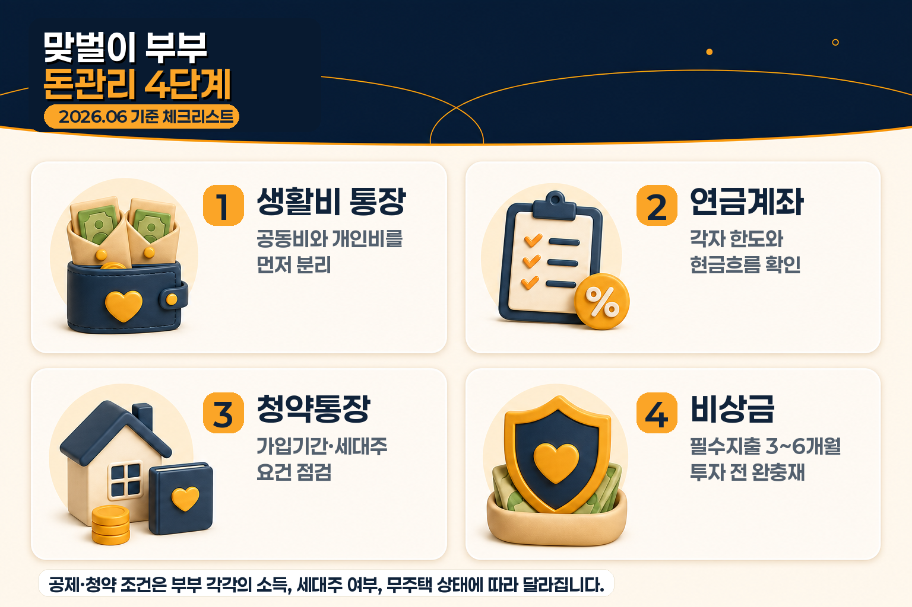
맞벌이 부부가 가장 자주 헷갈리는 지점은 “우리 집이 한 달에 얼마를 쓰는지”입니다. 두 사람의 월급이 한 통장으로 들어오고, 카드값과 자동이체가 여기저기서 빠져나가면 남은 돈이 저축 가능한 돈인지, 다음 달 카드값인지 구분하기 어렵습니다.
처음에는 통장 수를 많이 늘리기보다 아래 네 칸만 분리해도 충분합니다.
| 구분 | 담는 돈 | 관리 포인트 |
|---|---|---|
| 공동 생활비 통장 | 월세·관리비·식비·보험료·통신비·대출상환 등 | 매월 같은 날짜에 각자 이체 |
| 개인 지출 통장 | 각자 용돈, 개인 구독, 취미비 | 서로 검열하지 않는 범위 설정 |
| 비상금 통장 | 병원비, 실직, 이사, 가전 교체 등 | 투자 계좌와 분리 |
| 투자·저축 계좌 | 연금, 예금, ISA, 펀드 등 | 목표 기간별로 구분 |
분담 방식은 정답이 하나가 아닙니다. 소득이 비슷하면 50:50이 편하고, 소득 차이가 크면 소득 비율로 나누는 방식도 가능합니다. 중요한 것은 “누가 더 냈는가”보다 공동비가 얼마인지, 매달 남는 돈이 얼마인지를 부부가 같이 보는 것입니다.
연금계좌는 맞벌이 부부가 놓치기 쉬운 항목입니다. 부부 중 한 사람만 챙기는 것이 아니라, 각자 근로소득이 있고 세액공제 대상이라면 각자의 연금저축·IRP 한도를 따로 확인할 수 있기 때문입니다.
다만 여기서 조심할 점이 있습니다. 절세액은 부부에게 자동으로 똑같이 적용되는 고정 금액이 아닙니다. 2026년 6월 기준 소득세법상 연금계좌 세액공제는 1인 기준으로 봅니다.
| 항목 | 1인 기준 확인할 내용 |
|---|---|
| 연금저축 세액공제 대상 납입액 | 연 600만원 한도 |
| 연금저축 + IRP 등 퇴직연금계좌 합산 | 연 900만원 한도 |
| 세액공제율 | 일반적으로 12%, 일정 소득구간은 15% |
| 지방소득세 포함 실무 환산 | 13.2% 또는 16.5%로 안내되는 경우가 많음 |
예를 들어 부부가 각각 900만원까지 납입하고, 두 사람 모두 16.5% 환산 구간에 해당한다면 이론상 세액공제 효과는 1인 148만5천원, 부부 합산 297만원 수준입니다. 반대로 13.2% 환산 구간이면 1인 118만8천원, 부부 합산 237만6천원 수준입니다.
그래서 맞벌이 부부는 “얼마까지 넣으면 최대 절세인가”보다 먼저 세 가지를 봐야 합니다.
연금계좌는 장기 노후자금 성격이 강합니다. 당장 1~2년 안에 전세보증금, 출산·육아비, 이사비가 필요하다면 한도를 채우는 것보다 현금흐름을 먼저 안정시키는 편이 나을 수 있습니다.
청약통장은 단순히 “있다/없다”로 보기 어렵습니다. 청약홈은 청약가점 계산에서 주택소유 여부, 무주택기간, 부양가족수, 배우자의 청약통장 가입기간 점수 등을 직접 확인하라고 안내합니다. 또 청약통장 가입기간은 입주자모집공고일 현재 입주자저축 가입자의 가입기간을 기준으로 봅니다.
따라서 맞벌이 부부라면 아래 질문을 같이 확인하는 편이 좋습니다.
주택청약종합저축 소득공제도 모든 가입자에게 자동 적용되는 혜택은 아닙니다. 2026년 6월 기준 조세특례제한법은 총급여액 7천만원 이하, 해당 과세기간 중 무주택 세대의 세대주 또는 세대주의 배우자 등 요건을 두고, 연 300만원 납입 한도에서 40% 상당액을 근로소득금액에서 공제하는 구조입니다.
즉 청약통장은 “둘 다 무조건 많이 넣기”보다 가입기간 유지, 세대주 여부, 무주택 상태, 소득공제 가능성, 청약 계획을 한 번에 보는 항목입니다.
맞벌이는 소득원이 두 개라 안정적으로 느껴지지만, 지출 구조도 함께 커지는 경우가 많습니다. 집세, 대출 상환, 보험료, 차량비, 양가 가족비, 육아비가 붙으면 한 사람의 소득이 잠시 끊겼을 때 체감 부담이 빠르게 커질 수 있습니다.
그래서 투자 전에는 최소한의 비상금 기준을 정해두는 것이 좋습니다. 기준은 월급이 아니라 부부의 필수지출입니다.
예를 들어 한 달 필수지출이 350만원이라면:
| 기준 | 필요한 비상금 |
|---|---|
| 3개월치 | 1,050만원 |
| 6개월치 | 2,100만원 |
직업 안정성이 높고 부모님 지원이나 현금성 자산이 있다면 3개월부터 시작해도 되고, 대출 상환액이 크거나 한 사람 소득 공백 가능성이 크다면 6개월을 목표로 잡는 편이 더 보수적입니다.
비상금은 수익률을 높이는 돈이 아닙니다. 예금, 파킹통장, 단기성 현금자산처럼 꺼내 쓰기 쉬운 곳에 두고, 주식·펀드·장기 연금계좌와 분리하는 목적이 큽니다.
생활비, 세액공제, 청약, 비상금이 정리되면 그다음이 투자입니다. 이때도 모든 여유자금을 한 계좌에 넣기보다 목표 기간을 먼저 나누면 흔들림이 줄어듭니다.
| 목표 기간 | 예시 | 관리 방향 |
|---|---|---|
| 1년 이내 | 자동차 보험료, 이사비, 여행비 | 원금 변동이 큰 상품보다 현금성 관리 |
| 1~3년 | 전세보증금 보탬, 출산·육아 준비 | 예금·적금·단기 상품 위주로 안정성 확인 |
| 3년 이상 | 노후, 장기 자산 형성 | 연금계좌, ISA, 장기 투자상품 등을 비교 |
맞벌이 부부에게 중요한 것은 “둘이 동시에 같은 상품을 사는 것”이 아니라, 가정의 목표별 돈주머니를 만드는 것입니다. 한 사람은 연금계좌, 한 사람은 비상금처럼 역할을 나눌 수도 있고, 둘 다 연금계좌를 활용하되 납입액은 다르게 가져갈 수도 있습니다.
특히 마지막 항목은 자주 놓칩니다. 소득이 낮은 배우자도 근로소득과 세액공제 요건이 있다면 연금계좌, 청약, 개인 신용관리, 비상금 역할을 따로 볼 수 있습니다. 다만 “항상 똑같이 납입”이 정답은 아닙니다. 부부 각각의 소득구간, 지출 책임, 현금흐름, 향후 주택 계획에 따라 납입액과 우선순위는 달라질 수 있습니다.
무조건은 아닙니다. 각자 소득이 있고 세액공제 대상이면 둘 다 검토할 수 있지만, 연금계좌는 장기자금입니다. 1~2년 안에 주택자금이나 큰 지출이 예정되어 있다면 납입액을 낮추거나 비상금을 먼저 확보하는 선택지도 필요합니다.
정답은 없습니다. 소득이 비슷하면 반반이 단순하고, 차이가 크면 소득 비율이 덜 부담스러울 수 있습니다. 중요한 것은 방식보다 공동비 총액과 각자 남는 돈이 투명하게 보이는 구조입니다.
청약통장은 가입기간, 지역별 예치금, 세대주 여부, 무주택 요건, 청약 유형에 따라 판단이 달라집니다. 소득공제만 보더라도 총급여와 무주택 세대 요건 등 조건이 있으므로, 먼저 각자의 요건을 확인하는 편이 안전합니다.
가능은 하지만, 필수지출을 감당할 현금이 전혀 없다면 투자 변동성을 견디기 어렵습니다. 특히 맞벌이는 고정비가 커지기 쉬워 최소 비상금 목표를 먼저 정한 뒤 투자 비중을 늘리는 편이 관리하기 쉽습니다.
맞벌이 부부의 자산 운용은 투자상품보다 순서가 중요합니다. 먼저 공동 생활비를 분리해 실제 저축 가능액을 확인하고, 각자의 연금계좌 세액공제 한도와 청약통장 요건을 점검한 뒤, 필수지출 기준 비상금을 마련합니다. 그다음 목표 기간별로 투자금을 나누면 부부의 돈관리가 훨씬 덜 흔들립니다.
이 글은 공개 법령과 청약홈 안내를 바탕으로 한 일반 정보입니다. 세액공제, 청약, 투자 결과는 개인의 소득, 세대 구성, 주택 보유 여부, 금융상품 조건에 따라 달라질 수 있으므로 실제 의사결정 전에는 최신 공식 안내와 개인 상황을 함께 확인하세요.
기준일: 2026년 6월 5일
사회초년생이 카드를 고를 때 먼저 정해야 할 것은 “어떤 카드가 더 좋은가”가 아니라 내가 매달 연체 없이 관리할 수 있는 구조입니다. 신용카드는 혜택과 신용거래 이력을 만들 수 있다는 장점이 있고, 체크카드는 지출 통제와 소득공제율 측면에서 장점이 있습니다. 다만 둘 중 하나만 정답처럼 볼 필요는 없습니다.
핵심부터 정리하면 이렇습니다. 신용카드는 전액 결제 가능한 범위에서 단순하게 쓰고, 체크카드는 생활비 통제와 공제율을 볼 때 함께 고려하는 방식이 관리하기 쉽습니다. 소득공제는 연간 사용액과 최저사용금액, 결제수단별 공제율을 따로 봐야 하고, 신용점수는 카드 사용액 자체보다 연체 없는 상환 이력과 카드대출성 서비스 사용 여부가 더 중요합니다.
| 먼저 구분할 것 | 핵심 기준 | 사회초년생이 놓치기 쉬운 점 |
|---|---|---|
| 월 예산 | 고정비·생활비·저축액을 먼저 분리 | 카드 혜택보다 지출 한도가 먼저 |
| 소득공제 | 최저사용금액 초과분부터 공제율 적용 | 사용액 전체가 곧 공제 대상은 아님 |
| 결제수단별 공제율 | 신용카드 15%, 체크카드·현금영수증 30% | 공제율만 보고 혜택·소비통제를 놓치기 쉬움 |
| 신용점수 | 연체 없는 카드·대출 거래 이력, 이용 수준, 거래기간 등 반영 | 많이 쓰는 것보다 안정적으로 갚는 것이 중요 |
| 결제일 | 카드사별 결제일별 이용기간 확인 | 같은 결제일이라도 카드사별 이용기간이 다를 수 있음 |
| 리볼빙·현금서비스 | 카드대출성 서비스로 별도 리스크 | 카드 혜택과 같은 범주로 보면 안 됨 |
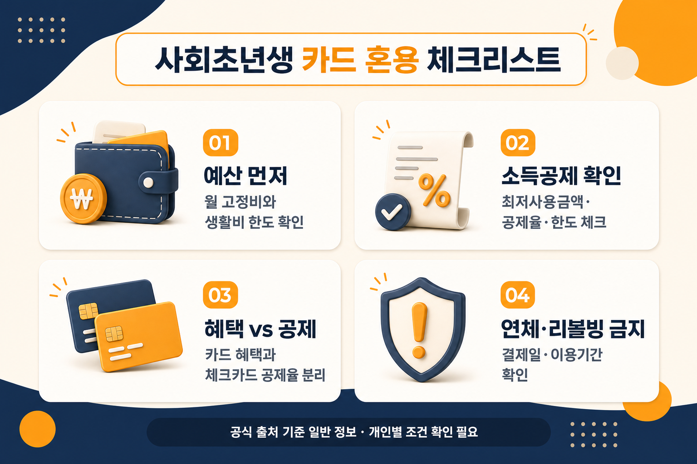
카드 소득공제를 볼 때는 먼저 “공제율”과 “공제 대상이 되는 구간”을 나눠야 합니다. 국세청 FAQ는 신용카드 등 사용금액 소득공제를 신용카드 등 사용금액에서 총급여액의 25%를 뺀 금액에 결제수단별 공제율을 적용하는 방식으로 설명합니다. 신용카드는 15%, 현금영수증·직불·체크카드는 30% 대상입니다.
즉 체크카드 공제율이 더 높다고 해서 모든 소비를 체크카드로 몰아야 한다는 뜻은 아닙니다. 신용카드 혜택, 전월실적 조건, 월 할인한도, 소비 통제 가능성을 함께 봐야 합니다.
| 확인할 항목 | 보는 방법 |
|---|---|
| 최저사용금액 | 연간 총급여액 기준으로 계산 |
| 결제수단별 공제율 | 신용카드와 체크카드·현금영수증을 구분 |
| 실제 혜택 | 카드 할인·포인트가 내 소비패턴과 맞는지 확인 |
| 전월실적 | 실적을 채우려고 불필요한 소비가 늘지 않는지 점검 |
| 공제 한도 | 소득, 사용처, 다른 공제 항목에 따라 달라질 수 있음 |
예를 들어 연간 총급여가 3,600만원이라면 최저사용금액은 900만원입니다. 실제 공제는 연간 사용액, 사용처, 공제 한도, 다른 공제 항목에 따라 달라질 수 있으므로 “카드 한 장을 어떻게 쓰면 무조건 유리하다”는 식으로 단정하기 어렵습니다.
사회초년생이 신용카드를 고민하는 이유는 보통 혜택보다 신용점수입니다. “체크카드만 쓰면 신용 이력이 부족해지지 않나?”라는 걱정이 생기기 때문입니다.
KCB 개인신용평가체계 공시는 카드 발급·해지 이력, 카드이용실적, 대출 상환이력 같은 정보를 평가에 활용한다고 설명합니다. 또 금융회사는 CB사의 개인신용평점뿐 아니라 자체 보유 거래정보, 직장·소득정보 등을 반영해 대출 승인 여부, 한도, 금리 등을 결정합니다.
여기서 중요한 점은 두 가지입니다.
KCB 공시는 신용카드 신판 위주의 꾸준하고 안정적인 이용을 긍정 요소로 설명하는 한편, 신용카드 잔액 증가와 단기카드대출 잔액 증가는 채무상환 부담을 높이는 요인으로 봅니다. 체크카드 지속 이용도 건전한 신용생활의 긍정 요소로 설명됩니다.
따라서 사회초년생에게 더 현실적인 기준은 “신용카드를 만들까 말까”보다 아래 질문입니다.
| 질문 | 점검 방향 |
|---|---|
| 매달 전액 결제할 수 있는가? | 아니면 체크카드 중심이 더 안전할 수 있음 |
| 한도 대비 사용액을 과하게 쓰고 있지 않은가? | 한도에 가까운 사용은 부담 신호가 될 수 있음 |
| 카드론·현금서비스·리볼빙을 쓸 가능성이 있는가? | 신용카드 혜택보다 리스크가 커질 수 있음 |
| 고정비 자동납부를 안정적으로 관리할 수 있는가? | 연체 방지 장치가 먼저 필요 |
체크카드는 계좌 잔액 범위에서 바로 결제되는 구조라서 초과소비를 막는 데 도움이 됩니다. 사회초년생에게 특히 중요한 장점은 “내가 이번 달에 쓸 수 있는 돈”을 카드값 청구서가 오기 전에 바로 확인할 수 있다는 점입니다.
또 소득공제 측면에서는 체크카드와 현금영수증의 공제율이 신용카드보다 높습니다. 국세청 FAQ 기준으로 신용카드는 15%, 현금영수증·직불·체크카드는 30%입니다.
다만 체크카드만 쓰는 것이 항상 정답은 아닙니다. 신용카드는 카드별 할인, 포인트, 보험성 부가서비스, 할부 기능이 있을 수 있습니다. 문제는 그 혜택이 대부분 전월실적, 월 할인한도, 제외항목, 실적 산정 기준과 묶여 있다는 점입니다.
그래서 카드 혜택을 볼 때는 아래처럼 봐야 합니다.
| 카드 혜택 문구 | 꼭 같이 볼 조건 |
|---|---|
| 월 최대 1만원 할인 | 전월실적이 얼마인지, 할인한도는 어디까지인지 |
| 생활비 5% 적립 | 적립 제외 업종, 간편결제 제외 여부, 월 한도 |
| 첫 발급 혜택 | 이벤트성 조건인지, 다음 달에도 유지되는지 |
| 전월실적 30만원 | 세금, 공과금, 아파트관리비, 상품권, 카드대출 등이 제외되는지 |
결론적으로 사회초년생에게는 “혜택을 챙기는 신용카드 1장 + 지출 통제용 체크카드”처럼 단순한 구조가 관리하기 쉽습니다. 카드를 여러 장 만들기보다 결제일, 전월실적, 자동이체 날짜를 한눈에 볼 수 있어야 합니다.
카드값 결제일은 월급일과 생활비 흐름을 함께 보고 정하는 것이 좋습니다. 다만 “며칠이 정답”처럼 외워서 정하기보다는, 내가 쓰는 카드의 결제일별 이용기간을 먼저 확인해야 합니다.
카드사들은 결제일별로 일시불·할부 이용기간을 따로 안내합니다. 같은 월급일에 맞춰 결제일을 정하더라도, 카드사별로 어느 기간의 사용액이 이번 청구서에 잡히는지가 다를 수 있습니다. 해외결제, 후불교통, 무승인 매출처럼 매출 접수 시점이 늦어지는 항목도 다음 달 청구로 넘어갈 수 있습니다.
따라서 결제일은 이렇게 정리하는 것이 안전합니다.
| 상황 | 추천 확인법 |
|---|---|
| 월급일이 25일 전후 | 카드값 출금 전에 생활비가 남는지 확인 |
| 전월 1일~말일 소비를 한 번에 보고 싶음 | 카드사 앱에서 결제일별 이용기간이 전월 1일~말일이 되는 날짜 확인 |
| 여러 카드 사용 | 결제일을 흩뜨리기보다 관리 가능한 날짜로 단순화 |
| 후불교통·해외결제·무승인 매출 사용 | 매출 접수 시점 때문에 다음 달 청구될 수 있음 |
결제일 조정의 목적은 카드값을 최대한 늦게 내는 것이 아니라, 연체를 피하고 지출을 예측 가능하게 만드는 것입니다.
사회초년생 카드 사용법에서 가장 조심해야 할 단어는 리볼빙, 현금서비스, 카드론입니다. 카드 앱에서는 쉽게 보일 수 있지만, 실제로는 일반 카드 결제 혜택과 다른 성격입니다.
KCB 공시는 단기카드대출 잔액 증가와 빈번한 이용을 신용평가에 부정적으로 활용한다고 설명합니다. 카드값을 제때 전액 결제하지 못해 일부만 이월하는 습관이 생기면, 다음 달 소비와 이전 달 카드값이 겹치면서 예산이 더 빠르게 꼬일 수 있습니다.
특히 사회초년생은 소득이 막 안정되기 시작한 시기라 다음 세 가지를 먼저 막아야 합니다.
신용카드 혜택은 매달 전액 결제할 수 있을 때 의미가 있습니다. 전액 결제가 어렵다면 혜택보다 이자·수수료·신용점수 리스크가 더 커질 수 있습니다.
아래는 특정 개인에게 맞춘 추천이 아니라, 구조를 이해하기 위한 예시입니다.
| 단계 | 카드 사용 구조 | 이유 |
|---|---|---|
| 1단계 | 월 고정비와 생활비 예산 정하기 | 카드 종류보다 지출 한도가 먼저 |
| 2단계 | 신용카드 1장만 소액 고정비·생활비 일부에 사용 | 결제일과 전월실적을 관리하기 쉽게 시작 |
| 3단계 | 연간 카드 사용액과 소득공제 기준 따로 확인 | 공제율과 실제 혜택을 분리해서 판단 |
| 4단계 | 생활비 통제는 체크카드·현금영수증도 함께 활용 | 지출 관리와 공제율을 동시에 고려 |
| 5단계 | 리볼빙·현금서비스·카드론은 사용하지 않는 것을 원칙으로 관리 | 카드 혜택보다 신용 리스크 방어가 우선 |
이 구조의 핵심은 “신용카드가 좋다” 또는 “체크카드가 좋다”가 아닙니다. 신용카드는 혜택과 신용거래 이력, 체크카드는 지출 통제와 공제율이라는 서로 다른 역할을 나눠 보는 것입니다.
카드를 새로 만들기 전에는 아래 항목을 먼저 점검해 보세요.
꼭 만들어야 하는 것은 아닙니다. 다만 신용거래 이력이 부족한 경우, 소액을 연체 없이 꾸준히 결제하는 신용카드 사용이 신용생활 기록에 도움이 될 수 있습니다. 반대로 전액 결제 관리가 어렵다면 체크카드 중심이 더 안전할 수 있습니다.
KCB 공시는 체크카드 지속 이용도 건전한 신용생활의 긍정 요소로 활용된다고 설명합니다. 다만 금융회사별 대출 심사에는 CB점수뿐 아니라 소득, 직장, 자체 거래정보 등 다양한 요소가 함께 반영됩니다.
그렇게 단정하기 어렵습니다. 신용카드는 공제율은 낮지만 할인·포인트·할부 같은 기능이 있을 수 있습니다. 대신 그 혜택이 실제 소비패턴과 맞는지, 전월실적을 억지로 채우는 구조가 아닌지 확인해야 합니다.
월급일, 자동이체 계좌 잔액, 카드사별 이용기간을 함께 보면 됩니다. 전월 소비를 한 번에 보고 싶다면 카드사 앱이나 공식 고객센터에서 결제일별 이용기간 표를 확인하고, 여러 카드를 쓴다면 결제일을 관리 가능한 날짜로 단순화하는 편이 안전합니다.
리볼빙은 카드값 일부를 다음 달로 넘기는 구조라 단기적으로 연체를 피하는 데 도움이 될 수 있어 보입니다. 하지만 이월 잔액과 다음 달 소비가 겹치면 부담이 커질 수 있고, 카드대출성 서비스 이용은 신용평가에도 부담 요인이 될 수 있습니다. 사회초년생에게는 생활비 대체 수단으로 쓰지 않는 것이 안전한 방향입니다.
사회초년생 카드 사용법의 결론은 특정 카드를 고르는 것이 아닙니다. 먼저 예산을 정하고, 신용카드와 체크카드의 역할을 분리하고, 결제일과 자동이체 계좌를 안정적으로 관리하는 것입니다.
정리하면 이렇게 볼 수 있습니다.
출처 기준일은 2026년 6월 5일입니다. 세법, 카드사 결제일별 이용기간, 개인신용평가 공시, 카드 상품 조건은 바뀔 수 있으므로 실제 발급·변경 전에는 공식 안내를 다시 확인하세요.
면책 문구: 이 글은 공개 공식 자료를 바탕으로 한 일반 정보 정리입니다. 특정 카드 발급, 대출 승인, 금리, 세금 환급, 신용점수 변동을 보장하지 않으며 개인별 금융·세무 자문이 아닙니다. 개인의 소득, 소비액, 공제 한도, 카드사 조건, 신용정보에 따라 결과는 달라질 수 있습니다.
기준일: 2026년 6월 3일
냉장고, 에어컨, 세탁기처럼 큰 가전을 바꿀 때 “고효율 제품이면 한전에서 지원을 받을 수 있다던데?”라는 질문이 자주 나옵니다. 핵심부터 정리하면, 한전 고효율 가전제품 구매비용 지원사업은 모든 소비자 대상 환급이 아니라 전기요금 복지할인가구를 대상으로 하는 구매비용 지원사업입니다.
또 하나 중요한 점은 “1등급 가전이면 무조건 된다”도 아닙니다. 공식 안내 기준으로는 지원 대상자, 구매·신청 기간, 품목별 등급, 적용기준 시행일, 라벨·명판·거래내역서·영수증이 함께 맞아야 합니다. 이 글은 신청 버튼을 누르는 방법보다, 구매 전후에 어디서 반려가 생기기 쉬운지를 중심으로 정리합니다.
| 먼저 확인할 것 | 공식 기준 핵심 | 놓치기 쉬운 포인트 |
|---|---|---|
| 대상자 | 전기요금 복지할인가구 | 일반 가구 전체 대상이 아님 |
| 지원비율 | 3개 유형 15%, 6개 유형 30% | 유형에 따라 비율이 다름 |
| 한도 | 가구당 30만원 한도 | 매년 새로 30만원이 생기는 구조가 아님 |
| 기간 | 2026.1.1~12.31 구매, 2026.2.9 10시~12.31 신청 | 예산 소진 시 조기종료 가능 |
| 제품 | 11개 품목의 등급·적용기준 시행일 충족 | 일부 품목은 1등급만이 아님. 제외 품목도 있음 |
| 서류 | 라벨, 명판, 거래내역서, 영수증 등 | 구매자·금액·모델명 불일치가 문제될 수 있음 |
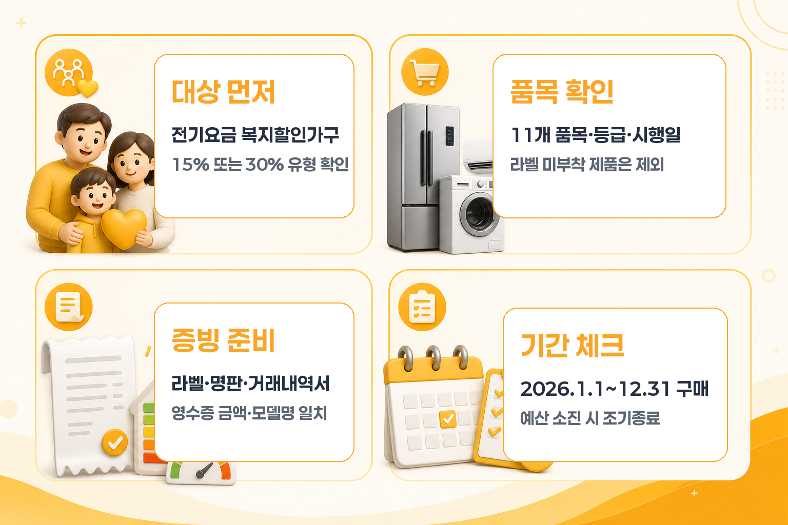
한전 공식 안내는 이 사업을 전기요금 복지할인가구를 대상으로 고효율 가전제품 구입 시 구매비용의 일정 비율을 지원하는 사업으로 설명합니다. 즉 “에너지효율 1등급 제품을 산 모든 사람”이 아니라, 먼저 전기요금 복지할인 대상 여부가 출발점입니다.
공식 안내의 지원비율은 두 갈래입니다.
| 지원비율 | 해당 유형 | 확인 포인트 |
|---|---|---|
| 15% | 다자녀, 대가족, 출산가구 | 가구 유형이 맞는지 먼저 확인 |
| 30% | 장애인(중증), 유공자, 기초생활수급자, 사회복지시설, 차상위계층, 생명유지장치 | 유형별 증빙과 신청 주체 확인 |
여기서 “몇 퍼센트 받을 수 있나”보다 먼저 볼 것은 내가 어느 유형에 해당하는지, 한전 전기요금 복지할인 기준에서 확인되는지입니다. 가족이 대신 신청하는 경우도 단순 대리 신청으로 생각하면 안 됩니다. FAQ는 주민등록등본상 가구원 신청이 가능하며, 가구원이 신청할 때는 주민등록등본을 첨부해야 한다고 안내합니다.
한전 안내에서 특히 오해하기 쉬운 부분이 한도입니다. 공식 안내는 가구당 30만원 한도라고 설명하면서, 지원한도는 매년 갱신되지 않으며 과거년도 포함 가구당 지원받을 수 있는 한도라고 안내합니다.
예를 들어 공식 안내의 취지는 이렇게 이해할 수 있습니다.
| 상황 | 계산 예시 | 해석 |
|---|---|---|
| 15% 유형이 100만원 제품 구매 | 100만원 × 15% = 15만원 | 한도 30만원보다 낮으면 계산액 기준 |
| 30% 유형이 150만원 제품 구매 | 150만원 × 30% = 45만원 | 가구당 한도 때문에 최대 30만원까지만 가능 |
| 과거에 15만원 지원받은 가구 | 남은 한도 15만원 | 새해가 되어도 한도가 자동으로 30만원으로 초기화되는 구조가 아님 |
따라서 “올해 다시 30만원을 받을 수 있다”처럼 단정하면 위험합니다. 과거 지원 이력과 가구당 잔여 한도를 함께 봐야 합니다.
2026년 공식 안내 기준 기간은 다음과 같습니다.
| 구분 | 기간 | 주의점 |
|---|---|---|
| 구매기간 | 2026년 1월 1일 ~ 2026년 12월 31일 | 2026년 1월 1일 이전 구매 제품은 지원대상이 아님 |
| 신청기간 | 2026년 2월 9일 오전 10시 ~ 2026년 12월 31일 | 예산 소진 시 2026년 사업이 조기 종료될 수 있음 |
| 구매처 | 온·오프라인 모두 가능 | 반드시 에너지소비효율등급 라벨이 있어야 함 |
| 신청 경로 | 한전 고효율 가전 구매비용 지원사업 홈페이지 | 구역전기사업자 전기공급 세대는 해당 지역 사업자에 문의 |
구매기간과 신청기간은 다릅니다. 이미 2026년 1월 이후 구매했다면 신청기간 안에 서류를 갖춰 신청할 수 있는지 확인해야 하고, 아직 구매 전이라면 예산 소진 가능성과 라벨·명판 촬영 가능 여부를 먼저 보는 편이 좋습니다.
지원제품은 한전 안내 기준 11개 품목입니다. 그리고 중요한 조건은 두 가지입니다. 에너지소비효율 등급과 적용기준 시행일을 모두 충족해야 합니다. 제품에 라벨이 없으면 신청이 불가합니다.
아래는 공식 지원품목 안내를 독자 입장에서 다시 정리한 표입니다.
| 품목 | 지원 등급 | 적용기준 시행일 |
|---|---|---|
| 냉장고 | 1등급 | 2021.10.01 |
| 김치냉장고 | 1등급 | 2023.05.01 |
| 에어컨 | 벽걸이 1등급, 그 외 1~3등급 | 2021.10.01 |
| 세탁기 | 일반 1~2등급, 드럼 1등급 | 2022.11.01 |
| 전기밥솥 | 1등급 | 2018.04.01 |
| 진공청소기(유선) | 1~3등급 | 2019.01.01 |
| 공기청정기 | 1등급 | 2018.01.01 |
| TV | 1등급 | 2022.01.01 |
| 제습기 | 1등급 | 2024.07.01 |
| 의류건조기 | 1등급 | 2020.03.01 |
| 식기세척기 | 1등급 | 2025.01.01 |
여기서 비슷해 보여도 제외되는 품목이 있습니다. 한전 안내는 냉온수기, 시스템에어컨, 냉동고, 이동식 에어컨디셔너, 냉난방기, 멀티전기히트펌프시스템 등이 지원품목에 해당하지 않는다고 안내합니다. FAQ도 시스템에어컨과 렌탈 기기는 지원대상이 아니라고 설명합니다.
즉, 구매 전에는 “제품명”만 볼 것이 아니라 라벨의 등급, 모델명, 적용기준 시행일, 명판의 제조번호까지 확인해야 합니다.
공식 신청절차는 대상자 확인, 서류 준비, 사업 신청 및 계좌 등록, 한전 서류 검수, 지급 순서입니다. 필요한 서류는 유형에 따라 달라지지만, 기본적으로 아래 항목이 중심입니다.
| 서류 | 확인해야 할 내용 | 반려를 줄이는 체크포인트 |
|---|---|---|
| 신분증 | 신청자 본인 확인 | 주민등록증, 운전면허증 등 인정 범위 확인 |
| 라벨 | 등급, 모델명, 시행일자 | 정면에서 선명하게 촬영 |
| 명판 | 제조번호 또는 시리얼번호 | 설치 후 가려질 수 있으므로 구매·설치 전 위치 확인 |
| 거래내역서 | 구매자 성명, 품목, 모델명, 금액, 구매일시, 매장명 등 | 영수증 정보와 일치하는지 확인 |
| 영수증 | 구매금액, 구매일시, 승인번호, 매장명 등 | 카드매출전표 또는 현금영수증 중심 |
| 주민등록등본 | 가구원 신청 시 | 주민등록번호 뒷자리는 가림 처리 |
| 사업자등록증 | 사회복지시설 신청 시 | 시설 신청 여부에 따라 필요 |
FAQ에서 특히 실무적으로 중요한 대목은 거래내역서와 영수증에 기입된 정보가 동일해야 한다는 점입니다. 여러 제품을 같이 샀거나 세트상품을 구매했다면 지원대상 제품의 개별 금액이 확인되어야 합니다. 냉장고+냉동고 세트처럼 일부 구성품이 지원대상이 아닌 경우에는 지원대상 품목의 금액이 따로 확인되어야 합니다.
아래 상황은 “안 된다”로 단정할 수는 없지만, 신청 전 확인 난도가 올라가는 경우입니다.
| 상황 | 왜 확인이 필요한가요? |
|---|---|
| 제품검색에는 나오지만 라벨 조건이 다를 때 | 제품검색은 참고용이며 실제 라벨의 등급과 적용기준일이 중요 |
| 제품검색이 안 되지만 라벨 조건은 맞을 때 | 공식 안내는 라벨 조건이 맞으면 인정될 수 있다고 설명 |
| 여러 제품을 한 번에 결제했을 때 | 지원대상 제품별 개별 금액 확인이 필요 |
| 세트상품을 구매했을 때 | 구성품 중 지원대상 품목만 지원될 수 있음 |
| 설치 후 명판이 보이지 않는 빌트인 제품 | 명판 사진 미제출 시 서류 미비가 될 수 있음 |
| 제품 환불·구매취소가 생겼을 때 | 신청 취소 절차를 별도로 진행해야 함 |
| 신청 후 보완요청 문자를 받은 경우 | 2주 내 보완하지 않으면 무효처리될 수 있음 |
이 글의 핵심은 “지원사업이 있으니 무조건 신청”이 아니라, 구매 전부터 증빙이 남는 방식으로 결제·촬영·서류를 준비하는 것입니다.
가전을 아직 사기 전이라면 아래 순서로 보면 좋습니다.
아닙니다. 공식 안내 기준으로 이 사업은 전기요금 복지할인가구를 대상으로 합니다. 제품이 고효율이어도 대상자 조건이 맞지 않으면 지원 대상이 아닐 수 있습니다.
모든 품목이 같은 기준은 아닙니다. 공식 안내 기준으로 에어컨은 벽걸이 1등급, 그 외 에어컨은 1~3등급이며, 세탁기는 일반 1~2등급, 드럼 1등급입니다. 다만 등급뿐 아니라 적용기준 시행일도 함께 봐야 합니다.
FAQ는 온라인 쇼핑몰에서 타인의 ID로 구매했더라도 거래증빙서류에 구매자 이름이 확인된다면 신청 가능하다고 안내합니다. 다만 신청자, 구매자, 계좌 예금주 등 명의 관계가 어긋나지 않도록 공식 FAQ와 신청 화면 기준을 확인해야 합니다.
주민등록등본상 가구원은 신청 가능하다고 안내되어 있습니다. 이 경우 주민등록등본 첨부가 필요하며, 주민등록번호 뒷자리가 노출되면 서류 반송 처리될 수 있으므로 가림 처리가 필요합니다.
FAQ는 시스템에어컨은 지원대상이 아니며, 실제 구매하지 않고 정기적으로 사용료를 내는 렌탈 기기도 지원대상이 아니라고 안내합니다. 비슷한 제품명이라도 효율관리기자재 분류와 지원품목 여부를 확인해야 합니다.
한전 고효율 가전제품 구매비용 지원사업은 큰 가전 교체를 앞둔 복지할인 가구에게 도움이 될 수 있는 제도입니다. 하지만 핵심은 “고효율 가전을 샀다” 하나만으로 끝나지 않습니다.
정리하면 이렇게 보면 됩니다.
출처 기준일은 2026년 6월 3일입니다. 지원대상, 신청기간, 예산 소진 여부, 서류 인정 범위, 보완요청 절차는 한전 공식 홈페이지 공지와 신청 화면 기준에 따라 달라질 수 있습니다.
면책 문구: 이 글은 한국전력공사 고효율 가전제품 구매비용 지원사업 공개 안내를 바탕으로 한 일반 정보 정리입니다. 특정 가구의 지원 대상 여부, 지급 가능성, 지급 시점, 필요 서류 인정 여부를 보장하지 않으며, 개인별 재무·법률 자문이 아닙니다. 실제 구매·신청 전에는 한전 공식 홈페이지의 최신 공지와 본인 대상자 확인 결과를 반드시 확인하세요.
기준일: 2026년 6월 1일
통장을 정리하다 보면 “예전에 만들었던 계좌에 돈이 남아 있지 않을까?”라는 생각이 들 때가 있습니다. 이럴 때 검색되는 서비스가 휴면예금 찾아줌입니다. 이 주제는 단순히 “조회해 보세요”로 끝낼 수도 있지만, 실제로는 한 가지를 먼저 구분해야 합니다.
휴면예금 찾아줌은 일반 은행 계좌 잔액을 전부 보여주는 서비스가 아니라, 서민금융진흥원에 출연된 휴면예금·휴면보험금을 조회하고 지급 신청하는 공식 경로입니다. 그래서 은행 앱에서 보이는 잔액 조회나 계좌정보통합관리서비스와 범위가 다를 수 있습니다.
핵심만 먼저 정리하면 이렇습니다.
| 구분 | 무엇을 확인하나요? | 헷갈리기 쉬운 포인트 |
|---|---|---|
| 휴면예금 찾아줌 | 서민금융진흥원에 출연된 휴면예금·휴면보험금 조회·지급신청 | 모든 은행 계좌 잔액 조회가 아님 |
| 은행 앱/거래은행 | 아직 해당 금융회사에 남아 있는 계좌·잔액 | 휴면예금 찾아줌에 나오지 않아도 은행 앱에서 보일 수 있음 |
| 계좌정보통합관리서비스 | 여러 금융권 계좌를 한 번에 확인하는 계좌 정리 경로 | 서민금융진흥원 출연 휴면예금 지급신청과 목적이 다를 수 있음 |
| 휴면보험금 | 소멸시효가 완성되어 출연된 보험금 등 | 보험계약 자체를 찾는 서비스와는 목적이 다름 |
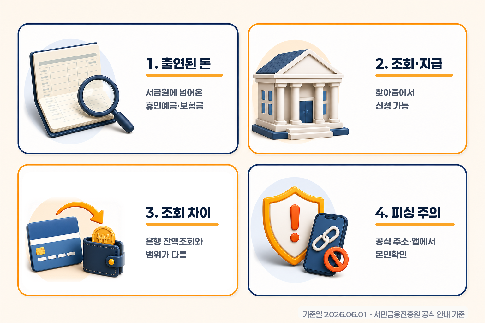
이 글은 “숨은 돈이 무조건 나온다”는 글이 아닙니다. 서민금융진흥원 공식 안내를 기준으로 휴면예금 찾아줌이 무엇을 찾는 서비스인지, 조회 결과를 어떻게 해석해야 하는지, 은행 계좌조회와 어디가 다른지를 정리합니다.
서민금융진흥원 안내에 따르면 휴면예금은 소멸시효가 완성된 예금, 보험금 등을 말합니다. 여기서 중요한 표현은 “서민금융진흥원에 출연된”입니다. 금융회사에 그대로 남아 있는 일반 계좌 잔액을 모두 보여주는 개념이 아니라, 일정 요건을 거쳐 서민금융진흥원에 출연된 휴면재산을 조회하는 구조입니다.
공식 안내에서 확인되는 큰 범위는 다음과 같습니다.
| 구분 | 공식 안내상 범위 | 먼저 생각할 점 |
|---|---|---|
| 휴면예금 | 은행, 저축은행 등에서 출연된 예금 | 오래전 만든 예금·적금·계좌 이력 확인 |
| 휴면보험금 | 생명보험, 손해보험, 우체국보험 등에서 출연된 보험금 | 해지환급금, 만기보험금, 계약자배당금 등 가능 |
| 기타 출연 재산 | 출연업권별로 별도 구분 | 상품 종류와 출연 여부에 따라 조회 결과가 달라질 수 있음 |
따라서 휴면예금 찾아줌의 핵심 질문은 “내 모든 통장 잔액이 얼마인가?”가 아니라 “서민금융진흥원에 출연된 휴면예금·보험금이 있는가?”입니다.
휴면예금 찾아줌에서 결과가 없을 수 있습니다. 하지만 그 의미를 너무 넓게 해석하면 안 됩니다. 결과가 없다는 것은 우선 서민금융진흥원에 출연된 휴면예금·보험금 조회 결과가 없다는 뜻에 가깝습니다.
예를 들어 이런 경우는 별도로 볼 수 있습니다.
| 상황 | 다음 확인 경로 |
|---|---|
| 아직 은행 계좌가 살아 있는 경우 | 거래은행 앱, 은행 홈페이지, 계좌정보통합관리서비스 |
| 오래전 계좌가 있지만 출연되지 않은 경우 | 해당 금융회사 고객센터 또는 지점 확인 |
| 보험계약 자체를 찾고 싶은 경우 | 보험계약 조회 서비스나 보험사 안내 확인 |
| 사망한 가족 명의 재산을 확인해야 하는 경우 | 상속인 휴면예금 조회 또는 상속인 금융거래조회 등 별도 절차 확인 |
이 차이 때문에 이 글의 핵심은 “조회 버튼을 누르세요”가 아니라 조회 결과를 어디까지 믿고, 다음에 무엇을 확인해야 하는지입니다.
많이 헷갈리는 부분을 한 번 더 분리해 보겠습니다.
| 비교 기준 | 휴면예금 찾아줌 | 은행 앱/계좌정보통합관리서비스 |
|---|---|---|
| 주된 목적 | 서민금융진흥원 출연 휴면예금·휴면보험금 조회·지급신청 | 여러 금융회사 계좌·잔액 확인과 계좌 정리 |
| 조회 대상 | 출연된 휴면재산 중심 | 금융회사에 남아 있는 계좌 중심 |
| 결과 해석 | 조회 결과가 있으면 지급신청 가능 여부 확인 | 계좌 상태, 잔액, 해지·이전 가능 여부 확인 |
| 주의점 | 피싱 링크가 아닌 공식 주소·앱에서 본인확인 | 계좌 해지·잔고이전 전 자동이체 등 확인 필요 |
즉, 둘 중 하나만 보면 끝나는 구조가 아닐 수 있습니다. 오래된 금융자산을 정리하려면 출연된 휴면재산은 휴면예금 찾아줌으로, 아직 금융회사에 남아 있는 계좌는 은행 앱이나 계좌조회 서비스로 나누어 보는 것이 자연스럽습니다.
휴면예금 찾아줌은 본인 명의 기준으로 조회·지급신청을 진행하는 서비스입니다. 조회 전에는 아래를 준비해 두면 좋습니다.
특히 지급신청 단계에서는 개인정보와 계좌정보가 다뤄질 수 있습니다. 그래서 문자나 광고 링크를 바로 누르기보다, 서민금융진흥원 공식 홈페이지나 공식 앱, 정부24·어카운트인포 등 공식 경로로 접근하는 편이 안전합니다.
조회 결과가 있다면 금액만 보고 끝내지 말고 아래 항목을 확인하세요.
| 확인 항목 | 왜 중요한가요? |
|---|---|
| 출연 금융회사 | 어느 은행·보험사에서 출연된 돈인지 알 수 있음 |
| 금액 | 지급신청 대상 금액과 실제 지급 가능 금액 확인 |
| 원권리자 정보 | 본인 명의인지, 상속·대리 절차가 필요한지 확인 |
| 지급신청 가능 여부 | 온라인으로 바로 가능한지, 방문·서류가 필요한지 확인 |
| 지급 계좌 | 본인 명의 계좌인지, 계좌 정보가 정확한지 확인 |
조회 결과가 있다고 해서 모든 절차가 즉시 끝나는 것은 아닐 수 있습니다. 금액, 명의, 상속 여부, 본인확인 방식, 금융회사 자료에 따라 추가 확인이 필요할 수 있습니다.
휴면예금은 “숨은 돈”, “잠자는 돈”이라는 표현 때문에 피싱 소재로 쓰이기 쉽습니다. 특히 계좌정보와 인증정보가 들어갈 수 있기 때문에 링크를 조심해야 합니다.
다음 표현이 보이면 멈추고 공식 주소를 다시 확인하는 것이 좋습니다. 문자나 광고 링크를 누르기보다, 포털에서 “서민금융진흥원 휴면예금 찾아줌”을 직접 검색하거나 서민금융진흥원 공식 안내 페이지를 확인하는 편이 안전합니다.
공식 안내 URL: https://www.kinfa.or.kr/financialLife/sleepmoney.do
정상적인 조회도 본인확인이 필요할 수 있지만, 계좌 비밀번호나 보안카드 전체 번호, 원격제어 앱 설치를 요구하는 방식은 경계해야 합니다.
그렇게 단정하기 어렵습니다. 휴면예금 찾아줌은 서민금융진흥원에 출연된 휴면예금·휴면보험금을 중심으로 조회합니다. 아직 금융회사에 남아 있는 계좌나 보험계약은 은행 앱, 계좌정보통합관리서비스, 보험사 안내 등 다른 경로에서 확인해야 할 수 있습니다.
서민금융진흥원 공식 안내는 휴면보험금을 휴면예금 범위 안에서 설명하고, 생명보험·손해보험·우체국보험에서 출연된 해지환급금, 만기보험금, 계약자배당금 등을 예로 듭니다. 다만 보험계약 자체를 폭넓게 찾는 목적이라면 별도 보험조회 경로와 구분해야 합니다.
일반 조회는 본인 명의 기준입니다. 사망한 원권리자의 출연 휴면예금·보험금은 상속인이 조회할 수 있는 절차가 별도로 안내되어 있으므로, 일반 본인 조회와 같은 방식으로 생각하면 안 됩니다.
목적이 다릅니다. 은행 앱은 해당 금융회사 계좌 상태를 확인하는 데 유용하고, 휴면예금 찾아줌은 서민금융진흥원에 출연된 휴면재산 조회·지급신청이 핵심입니다. 오래된 금융자산을 정리하려면 두 범위를 구분해서 보는 것이 좋습니다.
공식 사이트나 공식 앱에서 본인확인을 거쳐 조회하는 것은 제도상 제공되는 절차입니다. 다만 문자 링크, 광고성 페이지, 대행 수수료 요구, 원격제어 앱 설치 요구는 피해야 합니다.
휴면예금 찾아줌은 잊고 있던 돈을 확인하는 데 유용한 공식 경로입니다. 하지만 핵심은 “무조건 돈이 나온다”가 아니라 어떤 돈을 조회하는 서비스인지 정확히 아는 것입니다.
정리하면 이렇게 보면 됩니다.
출처 기준일은 2026년 6월 1일입니다. 실제 조회 가능 여부, 지급신청 가능 여부, 필요 서류, 온라인·방문 신청 가능 범위는 서민금융진흥원과 해당 금융회사 안내에 따라 달라질 수 있습니다.
면책 문구: 이 글은 서민금융진흥원 등 공개 공식 안내를 바탕으로 한 일반 정보 정리입니다. 특정 금액의 존재, 지급 가능성, 지급 시점, 필요 서류를 보장하지 않으며, 개인별 금융·법률 자문이 아닙니다. 실제 조회·지급신청 전에는 반드시 공식 사이트와 해당 금융회사 안내를 확인하세요.
기준일: 2026년 5월 31일
자동차보험에서 새로 나온다는 차량 5부제 할인 특약은 “번호판 끝자리별 미운행 요일을 지키면 보험료를 깎아준다”는 구조입니다. 다만 처음부터 보험료가 바로 빠지는 방식이라기보다, 금융위원회 2026년 4월 27일 발표 기준으로는 참여 기간을 계산해 보험 만기 시점에 환급하는 방식에 가깝습니다.
먼저 핵심만 정리하면 이렇습니다.
| 구분 | 확인할 내용 | 가입 전 포인트 |
|---|---|---|
| 대상 | 개인용 자동차보험 가입자 중심 | 업무용·영업용 차량, 전기차, 고가차량 예시는 제외 대상으로 안내됨 |
| 할인율 | 연간 2% | 전 보험사 동일 할인율로 발표됐지만 실제 가입 절차는 보험사별 확인 필요 |
| 적용 방식 | 만기 환급 | 5부제 참여 기간을 계산해 기존 자동차보험 계약 만기 시점에 환급 |
| 운휴일 | 번호판 끝자리 기준 | 월 1·6, 화 2·7, 수 3·8, 목 4·9, 금 5·0 |
| 사고·위반 | 보장은 유지, 할인은 달라질 수 있음 | 운휴일 사고 시 보험금은 지급되지만 할인 미적용·차년도 특별할증 가능 |
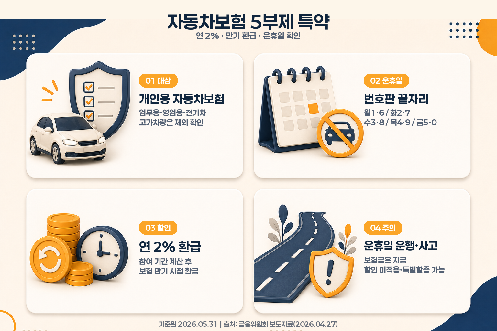
이 글은 특정 보험사 상품을 추천하는 글이 아닙니다. 공식 보도자료 기준으로 차량 5부제 특약, 기존 주행거리 특약, 서민우대 할인특약을 비교해 “내가 무엇을 확인해야 하는지”를 정리한 글입니다.
금융위원회는 2026년 4월 27일 보도자료에서 에너지 절약 참여를 독려하기 위해 「차량 5부제 할인 특약」을 신설한다고 발표했습니다. 핵심은 개인용 자동차보험 가입자가 차량 5부제에 참여하면, 참여 기간에 따라 자동차보험료를 연간 2% 수준으로 할인받는 구조입니다.
여기서 중요한 단어는 참여 기간과 만기 환급입니다. 보도자료는 개인별 할인 금액을 5부제 참여 기간에 따라 계산하고, 기존 자동차보험 계약 만기 시점에 특약 할인 금액을 환급하는 방식으로 설명합니다. 예를 들어 발표 자료의 예시는 보험료 70만원을 납부한 뒤 1년 동안 특약을 유지하면 1.4만원 환급이 가능하다는 식으로 계산합니다.
다만 실제 가입은 “신청서를 냈으니 바로 끝”이 아닐 수 있습니다. 발표 자료는 2026년 5월 11일 주 중 가입 신청을 먼저 받고, 상품 개발과 전산 구축을 거쳐 정식 특약 출시 이후 별도 가입 절차를 거쳐야 한다고 설명합니다. 따라서 현재 가입 가능 여부, 앱 설치 방식, 약관 문구, 서류 양식은 가입 중인 보험사 안내를 최종 확인해야 합니다.
발표 기준으로 차량 5부제 특약의 기본 대상은 개인용 자동차보험 가입자입니다. 약 1,700만대의 차주가 혜택 대상이 될 것으로 예상된다는 설명도 함께 나왔습니다.
하지만 모든 차량이 자동으로 대상이 되는 것은 아닙니다. 보도자료는 업무용·영업용 차량은 제외된다고 설명했고, 공공부문 차량 2·5부제 적용 대상에서 제외되는 전기차도 차량 5부제 특약 적용 대상이 아니라고 안내했습니다. 또 지원 형평성 차원에서 고가차량 예시도 제외 대상으로 제시됐습니다.
정리하면 다음과 같습니다.
| 구분 | 차량 5부제 특약에서 볼 점 |
|---|---|
| 개인용 승용차 | 기본 검토 대상 |
| 업무용·영업용 차량 | 차량 5부제 특약은 제외 대상으로 안내됨 |
| 전기차 | 공공부문 2·5부제 제외 취지와 맞춰 적용 대상 아님 |
| 고가차량 | 예시상 차량가액 5천만원 이상 등은 제외 가능 |
| 기존 주행거리 특약 가입자 | 보도자료상 중복 가입 가능하다고 안내됨 |
즉 “자동차보험 가입자면 다 된다”가 아니라, 자동차보험 용도, 차량 종류, 차량가액, 보험사 약관을 함께 확인해야 합니다.
차량 5부제 특약의 가장 큰 혼동 포인트는 “내가 쉬어야 하는 요일”입니다. 금융위원회 발표는 공공부문 차량 2·5부제 운영과 혼선이 없도록, 번호판 끝자리 기준으로 참여 요일, 즉 미운행 요일을 정한다고 설명합니다.
| 번호판 끝자리 | 미운행 요일 |
|---|---|
| 1, 6 | 월요일 |
| 2, 7 | 화요일 |
| 3, 8 | 수요일 |
| 4, 9 | 목요일 |
| 5, 0 | 금요일 |
예를 들어 차량 번호가 1111로 끝나면 월요일이 5부제 참여 요일입니다. 평일 중 하루를 정해 놓고 지키는 방식이기 때문에, 출퇴근·영업·가족 일정상 특정 요일 운행이 불가피한 사람에게는 체감 난도가 생각보다 높을 수 있습니다.
가장 중요한 부분입니다. 발표 자료는 차량 5부제 참여 요일에 운행 중 사고가 발생하더라도 보험금은 정상 지급되어 보장 공백이 생기지 않는다고 설명합니다.
다만 이것이 “운휴일에 운전해도 아무 불이익이 없다”는 뜻은 아닙니다. 5부제 참여를 조건으로 특약에 가입했기 때문에, 운휴일 사고가 발생하면 차량 5부제 특약에 따른 할인은 적용되지 않을 수 있고, 차년도 특별 할증 적용도 가능하다고 안내되어 있습니다.
또 보험사는 운행기록 앱이나 기존 주행거리 특약 정보, 예를 들어 커넥티드카 정보 등을 활용해 5부제 준수 여부를 확인할 계획이라고 설명했습니다. 참여 요일 중 실제 운행이 확인되면 특약 할인 제공이 거절될 수 있습니다.
따라서 이 특약은 “보험 보장이 사라지는 특약”이라기보다, 운휴일 준수 여부에 따라 할인·환급이 달라지는 특약으로 이해하는 편이 안전합니다.
차량 5부제 할인 특약을 볼 때는 기존에 많이 쓰는 주행거리 특약, 그리고 일부 대상자에게 적용되는 서민우대 할인특약과 비교해 보는 것이 좋습니다. 단, 보험사별 약관과 할인율은 달라질 수 있으므로 아래 표는 공식 발표 기준의 비교 프레임입니다.
| 선택지 | 맞는 경우 | 장점 | 확인할 점 |
|---|---|---|---|
| 차량 5부제 특약 | 정해진 평일 하루를 꾸준히 운행하지 않을 수 있는 경우 | 발표 기준 연 2%, 만기 환급, 주행거리 특약과 중복 가능 | 운휴일 운행·사고 시 할인 미적용 또는 특별할증 가능 |
| 주행거리 할인 특약 | 연간 주행거리가 짧은 경우 | 운휴일보다 전체 주행거리 절감에 초점 | 할인율·정산 방식은 보험사별 확인 필요 |
| 서민우대 할인특약 | 소득·장애·수급 등 별도 요건이 있는 경우 | 금융위 발표상 보험사·가입채널별 1~8% 수준 안내 | 대상요건, 가입채널, 차량용도별 가능 여부 확인 필요 |
| 일반 자동차보험 유지 | 특정 요일 운행 제한이 어려운 경우 | 운행 일정 제약이 없음 | 5부제 환급 혜택은 기대하기 어려움 |
핵심은 “어떤 특약이 무조건 유리하다”가 아닙니다. 운휴일을 지킬 수 있는지, 이미 주행거리 특약을 쓰고 있는지, 본인이 서민우대 요건에 해당하는지에 따라 확인 순서가 달라집니다.
아래 항목에 많이 체크될수록 차량 5부제 특약을 검토해 볼 여지가 커집니다.
발표 자료 기준으로는 만기 환급 방식입니다. 참여 기간을 계산해 기존 자동차보험 계약 만기 시점에 할인 금액을 환급하는 구조로 안내되어 있습니다.
금융위원회 발표는 참여 요일 사고가 발생해도 보험금은 정상 지급된다고 설명합니다. 다만 특약 할인은 적용되지 않을 수 있고, 차년도 특별할증 적용 가능성이 있습니다.
보도자료는 실질적인 보험료 절감 효과가 있도록 기존 주행거리 할인 특약과 차량 5부제 특약의 중복 가입이 가능하다고 설명합니다. 다만 보험사별 세부 약관과 정산 방식은 확인해야 합니다.
그렇게 단정하기 어렵습니다. 발표 자료상 5월 11일 주 중 신청 접수와 정식 출시 이후 별도 가입 절차가 안내됐지만, 실제 운영 방식은 보험사별 홈페이지·안내톡·고객센터 공지를 확인해야 합니다.
차량 5부제 할인 특약은 숫자로 보면 연 2% 환급입니다. 하지만 실제 판단 포인트는 할인율보다 내가 정해진 평일 하루를 꾸준히 운행하지 않을 수 있는지입니다.
평일 운행 패턴이 안정적이고, 번호판 끝자리 기준 미운행 요일을 지키기 쉬운 차량이라면 확인해 볼 수 있습니다. 반대로 업무·가족·돌발 일정 때문에 특정 요일 운행 가능성을 열어 둬야 한다면, 주행거리 특약이나 기존 자동차보험 조건을 함께 비교하는 편이 더 현실적일 수 있습니다.
출처 기준일은 2026년 5월 31일이며, 실제 가입 가능 여부와 세부 약관은 보험사별 공지를 반드시 확인해야 합니다.
면책 문구: 이 글은 공개된 공식 자료를 바탕으로 한 일반 정보 정리이며 보험 가입 권유나 개인 맞춤형 금융·보험 상담이 아닙니다. 실제 할인 적용 여부, 환급액, 가입 가능 여부, 할증 여부는 보험사 약관, 차량 조건, 운행기록, 사고 이력, 가입 시점에 따라 달라질 수 있습니다.
기준일: 2026년 5월 31일
급하게 생활비가 필요할 때 가장 먼저 확인할 것은 “어디가 무조건 된다”가 아니라 공식 정책서민금융 경로에서 어느 단계의 선택지를 볼 수 있는지입니다. 특히 2026년 3월 말부터 금융취약계층 생계자금이 신설되면서, 불법사금융예방대출만 볼 때와 선택 순서가 조금 달라졌습니다.
먼저 핵심만 정리하면 이렇습니다.
| 선택지 | 먼저 보는 경우 | 공식 자료상 핵심 조건 | 주의할 점 |
|---|---|---|---|
| 불법사금융예방대출 | 대부업조차 이용이 어려운 긴급 소액 생계비가 필요한 경우 | 신용평점 하위 20% 및 연소득 3,500만원 이하, 최대 100만원 | 일반 금리는 연 12.5%, 사회적배려대상자는 연 9.9%. 완제 인센티브 조건을 확인해야 함 |
| 금융취약계층 생계자금 | 불법사금융예방대출 완제자, 미소금융 성실상환자, 사회적 배려 대상자 등 추가요건이 있는 경우 | 최대 500만원, 연 4.5% 이내, 최대 6년 | 대상에 해당해도 여신심사 결과에 따라 달라짐 |
| 햇살론일반·징검다리론 등 | 소득·신용·상환이력이 제도권 금융 전환 단계에 가까운 경우 | 햇살론일반은 최대 1,500만원, 연 10% 이내. 징검다리론은 금융위 발표상 크레딧 빌드업 다음 단계로 언급 | 보증심사·금융회사 심사가 별도로 작동함 |
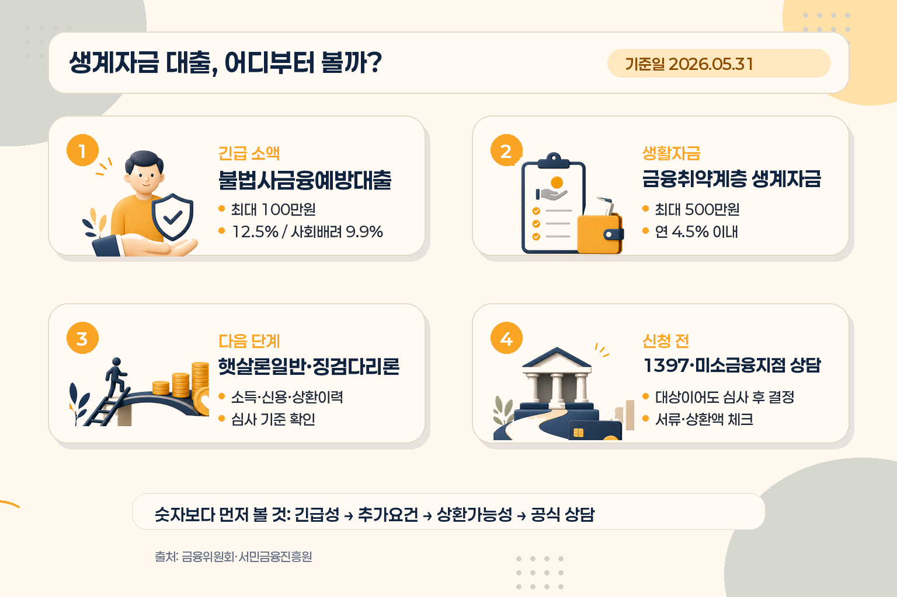
이 글은 특정 대출을 추천하는 글이 아닙니다. 불법사금융예방대출, 금융취약계층 생계자금, 햇살론일반·징검다리론을 공식 출처 기준으로 비교해 “어느 문부터 확인해야 하는지”를 정리한 글입니다.
금융위원회는 2026년 3월 30일 보도자료에서 금융취약계층 생계자금 대출을 신설한다고 밝혔습니다. 취지는 정책서민금융을 성실히 상환한 차주가 제도권 금융으로 바로 안착하지 못해 다시 불법사금융으로 밀려나는 흐름을 줄이는 것입니다.
서민금융진흥원 상품 페이지 기준으로 이 상품은 미소금융 성실상환자, 불법사금융예방대출 완제자 및 금융취약계층의 생계자금 지원 성격입니다. 핵심 조건은 다음과 같습니다.
| 항목 | 금융취약계층 생계자금 |
|---|---|
| 한도 | 최대 5백만원 |
| 금리 | 연 4.5% 이내 |
| 기간 | 최대 6년, 거치기간 1년 이내·상환기간 5년 이내 |
| 상환 | 원리금균등분할상환 |
| 취급처 | 전국 미소금융지점 |
여기서 중요한 포인트는 기본 요건 + 추가요건을 함께 본다는 점입니다. 기본적으로 미소금융 이용대상자에 해당하거나, 일정 신용·소득 요건을 충족해야 하고, 여기에 불법사금융예방대출 완제자·미소금융 성실상환자·사회적 배려 대상자·특정 피해 또는 특별취약 사유 등 추가요건이 붙습니다.
즉 “금융취약계층”이라는 단어만 보고 바로 500만원을 기대하기보다는, 본인이 어느 추가요건에 해당하는지부터 확인하는 구조입니다.
두 상품은 이름이 비슷하게 검색되지만 역할이 다릅니다.
불법사금융예방대출은 말 그대로 대부업조차 이용이 어려운 고객의 생계비를 위한 긴급 소액 성격입니다. 서민금융진흥원 상품 페이지 기준 지원대상은 신용평점 하위 20%이면서 연소득 3,500만원 이하인 사람이고, 금융교육 이수 또는 복지멤버십 가입이 필수로 안내되어 있습니다.
반면 금융취약계층 생계자금은 불법사금융예방대출을 6개월 이상 이용한 뒤 완제했거나, 미소금융 창업·운영·시설자금을 12회차 이상 성실상환했거나, 사회적 배려 대상 등 추가요건을 갖춘 경우에 볼 수 있는 다음 단계 성격이 강합니다.
| 구분 | 불법사금융예방대출 | 금융취약계층 생계자금 |
|---|---|---|
| 핵심 역할 | 긴급 소액 생계비 | 성실상환·취약요건 이후 생계자금 보강 |
| 한도 | 최대 100만원 | 최대 500만원 |
| 금리 | 일반 연 12.5%, 사회적배려대상자 연 9.9%, 완제자 재대출 연 4.5% | 연 4.5% 이내 |
| 상환 | 2년 원리금균등분할상환 | 최대 6년, 원리금균등분할상환 |
| 확인 포인트 | 긴급성, 신용·소득 요건, 교육·복지멤버십 | 완제·성실상환·사회적 배려·피해·재난 등 추가요건 |
금융위원회는 이를 불법사금융예방대출 → 금융취약계층 생계자금 → 징검다리론으로 이어지는 크레딧 빌드업 흐름으로 설명했습니다. 따라서 이 글의 핵심은 “어느 상품이 더 좋다”가 아니라, 현재 어느 단계의 문을 두드려야 하는지입니다.
아래는 공식 자료를 바탕으로 한 일반적인 확인 순서입니다. 실제 신청 가능 여부는 심사와 제출서류에 따라 달라집니다.
신용평점 하위 20%이면서 연소득 3,500만원 이하이고, 대부업조차 이용이 어려운 상황이라면 불법사금융예방대출을 먼저 확인할 수 있습니다. 다만 한도는 최대 100만원이고, 일반 금리는 연 12.5%입니다. 사회적배려대상자라면 연 9.9%가 안내되어 있으므로 해당 서류 준비 여부를 먼저 봐야 합니다.
불법사금융예방대출을 6개월 이상 이용 후 완제했다면 금융취약계층 생계자금 추가요건 중 하나를 볼 수 있습니다. 이때 생계자금은 최대 500만원, 연 4.5% 이내로 안내되어 있어 기존 긴급 소액대출보다 규모와 금리 면에서 달라집니다.
미소 창업·운영·시설자금을 12회차 이상 성실상환한 경우도 금융취약계층 생계자금 추가요건에 들어갑니다. 이 경우에는 기존 대출 상환상태와 미소금융지점 확인이 핵심입니다.
햇살론일반은 연소득 3,500만원 이하 또는 연소득 4,500만원 이하이면서 신용점수 하위 20%인 경우를 대상으로 합니다. 보증한도는 최대 1,500만원, 금리는 연 10% 이내로 안내되어 있지만, 금융회사별로 달라질 수 있고 보증료도 함께 봐야 합니다.
정리하면, 긴급 소액은 불법사금융예방대출, 성실상환·취약요건 이후의 생계자금은 금융취약계층 생계자금, 제도권 금융 전환 가능성이 있을 때는 햇살론일반이나 징검다리론 같은 다음 선택지를 비교하는 식입니다.
서민금융진흥원 상품 페이지는 금융취약계층 생계자금에 대해 대출 대상에 해당하더라도 최종 대출여부는 여신심사 결과에 따라 결정된다고 안내합니다. 햇살론일반도 서금원 가조회에서 승인되어도 신청 금융회사 심사에서 거절될 수 있다고 설명합니다.
그래서 신청 전에는 아래 순서로 확인하는 것이 안전합니다.
이 체크리스트에서 하나라도 불확실하면 “신청하면 된다”로 단정하기보다, 상담을 통해 서류와 심사 가능성을 확인하는 쪽이 안전합니다.
불법사금융예방대출에도 완제자 재대출 연 4.5%라는 문구가 있고, 금융취약계층 생계자금도 연 4.5% 이내입니다. 하지만 한도, 기간, 대상요건이 다릅니다. 검색 결과에서 금리 숫자만 보고 같은 상품처럼 판단하면 조건을 놓칠 수 있습니다.
금융취약계층 생계자금의 한도는 최대 500만원, 햇살론일반 보증한도는 최대 1,500만원입니다. 그러나 실제 한도는 심사와 상환능력, 제출서류, 기존 부채 등에 따라 달라질 수 있습니다.
정책상품이라고 해서 부담이 사라지는 것은 아닙니다. 원리금균등분할상환 구조라면 매달 원금과 이자를 함께 갚아야 합니다. 생활비 공백을 메우는 목적이라도, 다음 달 이후 현금흐름을 같이 보지 않으면 연체 위험이 생길 수 있습니다.
반드시 그 경로 하나만 있는 것은 아닙니다. 서민금융진흥원은 불법사금융예방대출 6개월 이상 이용 후 완제자 외에도 미소금융 12회차 이상 성실상환자, 사회적 배려 대상자, 특정 자금용도 이용자, 불법사금융·보이스피싱 피해자, 특별재난지역 거주자, 전세사기 피해자 등을 추가요건으로 안내합니다.
서민금융진흥원 상품 페이지 기준 취급처는 전국 미소금융지점입니다. 필요한 서류나 상담예약은 서민금융콜센터 1397 또는 미소금융지점 안내를 확인하는 것이 좋습니다.
정답이 하나로 정해지는 구조가 아닙니다. 금융취약계층 생계자금은 미소금융 이용대상·추가요건 중심이고, 햇살론일반은 저신용·저소득자의 생계비 보증상품 성격입니다. 소득·재직·기존 부채·상환이력·필요금액에 따라 상담 경로가 달라질 수 있습니다.
아닙니다. 공식 상품 설명은 대상에 해당해도 최종 대출 여부는 여신심사 결과에 따라 결정된다고 안내합니다. 햇살론일반 역시 서금원 가조회 승인과 금융회사 최종 승인이 다를 수 있습니다.
금융취약계층 생계자금 대출을 검색할 때는 연 4.5%, 최대 500만원이라는 숫자가 먼저 보입니다. 하지만 실제로 더 중요한 것은 불법사금융예방대출 단계인지, 성실상환 이후 생계자금 단계인지, 제도권 전환 단계인지를 구분하는 것입니다.
공식 자료 기준으로는 불법사금융예방대출, 금융취약계층 생계자금, 햇살론일반·징검다리론이 서로 다른 문입니다. 한 상품만 단정적으로 고르기보다, 대상요건·추가요건·한도·금리·기간·상환방식·심사 가능성을 같은 표에 놓고 확인하는 것이 핵심입니다.
출처: 금융위원회 2026년 3월 30일 보도자료, 서민금융진흥원 금융취약계층 생계자금·불법사금융예방대출·햇살론일반 상품 페이지. 이 글은 기준일 현재 공개 자료를 바탕으로 한 일반 정보 정리이며, 대출 권유나 개인 맞춤형 금융상담이 아닙니다. 실제 신청 가능 여부와 조건은 개인의 신용·소득·채무상태·제출서류·심사 결과 및 공식 안내 변경에 따라 달라질 수 있습니다.
기준일: 2026년 5월 30일
청년미래적금은 공식 자료 기준으로 2026년 6월 22일 출시를 목표로 준비 중입니다. 가입신청 기간은 6월 22일부터 7월 3일까지 2주간 운영될 예정이고, 첫 주에는 출생연도 끝자리 기준 5부제가 적용됩니다.
먼저 핵심만 정리하면 이렇습니다.
| 먼저 볼 항목 | 확인할 내용 |
|---|---|
| 신청 일정 | 6월 22일~7월 3일, 첫 5영업일은 출생연도 끝자리 5부제 |
| 상품 구조 | 월 최대 50만원, 3년 만기 자유적립식 적금 |
| 금리 | 기본금리 5%, 기관별 우대금리 포함 최대 7~8% 수준 |
| 정부기여금 | 일반형은 납입금의 6%, 우대형은 12% 기준 |
| 세제 | 이자소득세 비과세 구조 |
| 주의점 | 신청하면 바로 가입 확정이 아니라 가입·소득심사를 거침 |
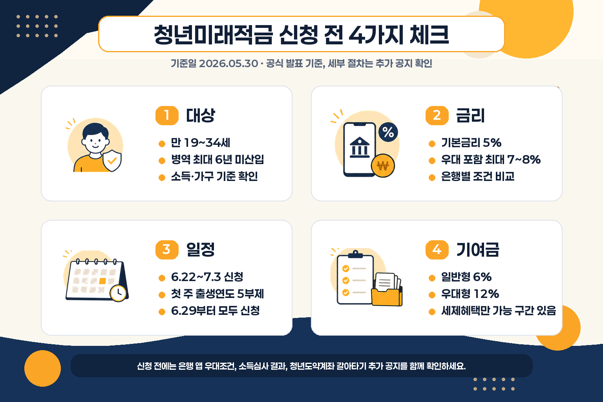
이 글은 특정 은행이나 상품을 추천하는 글이 아닙니다. 청년미래적금을 신청하기 전, 일정·대상·우대금리 조건·정부기여금 유형을 공식 발표 기준으로 점검할 수 있도록 정리한 글입니다.
금융위원회 5월 29일 자료에 따르면 청년미래적금 가입신청은 출시일부터 7월 3일까지 2주간 운영될 예정입니다. 첫 5영업일에는 출생연도 끝자리에 따라 신청 가능한 날이 나뉘고, 그 다음 주에는 출생연도와 관계없이 신청할 수 있습니다.
| 신청일 | 신청 가능한 출생연도 끝자리 |
|---|---|
| 6월 22일 월요일 | 1, 6 |
| 6월 23일 화요일 | 2, 7 |
| 6월 24일 수요일 | 3, 8 |
| 6월 25일 목요일 | 4, 9 |
| 6월 26일 금요일 | 5, 0 |
| 6월 29일~7월 3일 | 출생연도와 관계없이 모두 신청 가능 |
여기서 중요한 점은 “첫날에 못 하면 끝”이 아니라는 점입니다. 첫 주는 접속 분산을 위한 일정이고, 차주 5영업일에는 모두 신청이 가능하도록 안내되어 있습니다. 다만 실제 신청 가능 시간, 앱 화면, 심사 순서, 제출·확인 절차는 취급기관별 안내를 다시 확인해야 합니다.
청년미래적금은 기본적으로 19세부터 34세까지의 청년을 대상으로 합니다. 병역이행자는 병역기간을 최대 6년까지 연령 계산에서 빼는 방식이 안내되어 있습니다. 예를 들어 현재 나이가 35세여도 병역 2년을 인정받으면 심사상 33세로 볼 수 있다는 취지입니다.
다만 나이만 맞는다고 끝은 아닙니다. 공식 자료는 소득과 가구소득 기준을 함께 봅니다.
| 구분 | 핵심 기준 | 정부기여금 |
|---|---|---|
| 기여금 미대상·세제혜택 구간 | 총급여 6,000만원 초과~7,500만원 이하 또는 종합소득 4,800만원 초과~6,300만원 이하, 가구 중위소득 200% 이하 | 없음, 이자소득세 비과세 중심 |
| 일반형 | 총급여 6,000만원 이하 또는 종합소득 4,800만원 이하, 소상공인은 연매출 3억원 이하 등, 가구 중위소득 200% 이하 | 납입금의 6% |
| 우대형 | 일정 저소득 중소기업 재직자·소상공인 또는 중소기업 신규 취업자 요건 충족 | 납입금의 12% |
또 직전 3개년도 중 1회 이상 금융소득종합과세 대상자인 경우 가입이 제한됩니다. 비과세 소득만 있는 경우도 원칙적으로는 가입이 어렵지만, 육아휴직급여나 병 급여만 있는 경우 등 예외가 안내되어 있습니다.
정리하면, 신청 전에는 “나이”보다 아래 순서로 보는 것이 안전합니다.
청년미래적금 금리는 3년 고정금리 구조입니다. 금융위원회 자료 기준으로 기본금리는 전체 취급기관 동일하게 5%이고, 기관별 최대 우대금리 2~3%가 더해져 최대 7~8% 수준 금리가 제공됩니다.
우대금리 구조는 크게 세 층으로 보면 이해하기 쉽습니다.
| 금리 요소 | 의미 | 확인할 점 |
|---|---|---|
| 기본금리 5% | 전체 취급기관 공통 기본금리 | 기본금리는 동일하게 안내 |
| 공통 우대금리 | 일정 소득 이하 청년 0.5%p, 재무상담 이수자 0.2%p 등 | 내가 공통 우대요건을 충족하는지 확인 |
| 기관별 우대금리 | 급여이체, 카드 이용, 자동이체 등 은행별 조건 | 조건을 실제로 유지할 수 있는지 확인 |
최대 우대금리만 보면 3%를 주는 기관이 더 좋아 보일 수 있습니다. 하지만 기관별 우대금리는 급여이체, 카드 이용, 자동이체 같은 거래 조건과 연결됩니다. 이미 주거래 은행이 있거나, 카드·자동이체 조건을 맞추기 어려운 경우에는 “최대금리”와 “내가 받을 수 있는 금리”가 달라질 수 있습니다.
따라서 신청 전에는 은행연합회 소비자포털 또는 각 취급기관 안내에서 아래를 비교하는 편이 좋습니다.
금융위원회 자료에 따르면 토스뱅크를 제외한 14개 기관은 6월 22일 출시 예정이고, 토스뱅크는 전산 구축 일정 등에 따라 2026년 12월 출시 예정으로 안내되어 있습니다.
청년미래적금은 단순히 은행 금리만 보는 상품이 아닙니다. 정부기여금과 이자소득세 비과세가 함께 작동합니다.
월 최대 50만원씩 36개월을 납입하면 원금은 1,800만원입니다. 공식 자료는 금리 7~8% 가정 시, 금리·정부기여금·비과세 혜택을 함께 고려한 실질 가입효과를 일반형은 최대 13.2~14.4%, 우대형은 18.2~19.4% 수준 단리 적금상품에 가입하는 것과 유사하다고 설명합니다.
다만 이 문장은 “누구나 확정적으로 그 효과를 받는다”는 뜻으로 읽으면 안 됩니다. 일반형인지 우대형인지, 실제 우대금리를 얼마나 받을 수 있는지, 월 납입액을 계속 유지할 수 있는지에 따라 결과가 달라집니다.
| 상황 | 먼저 볼 기준 |
|---|---|
| 매월 50만원 납입이 가능한 경우 | 만기 원금 1,800만원 기준으로 기여금·이자 효과 계산 |
| 월 납입액이 들쭉날쭉할 수 있는 경우 | 납입액에 따라 기여금도 달라지는 구조인지 확인 |
| 일반형과 우대형 사이가 헷갈리는 경우 | 소득, 중소기업 재직, 소상공인 매출, 가구 중위소득 기준 확인 |
| 우대금리 조건이 복잡한 경우 | 은행별 조건을 실제 생활패턴과 비교 |
청년미래적금은 “높은 숫자”보다 “조건 확인”이 더 중요합니다. 특히 우대형은 중소기업 재직·신규 취업·소상공인 매출 기준 등 세부 요건이 붙기 때문에, 단순히 소득이 낮다는 이유만으로 자동 적용된다고 보면 안 됩니다.
이미 청년도약계좌에 가입한 사람이라면 청년미래적금과의 관계가 가장 궁금할 수 있습니다. 금융위원회 4월 자료는 청년도약계좌와 청년미래적금의 중복 가입은 허용하지 않되, 가입자의 선택권 보장을 위해 상품 간 갈아타기를 허용한다고 설명합니다.
다만 중요한 제한이 있습니다. 청년도약계좌에서 청년미래적금으로의 갈아타기는 2026년 6월 최초 가입기간에 한해 허용되는 것으로 안내되어 있습니다. 또 5월 29일 자료는 세부 가입·소득심사 절차와 청년도약계좌 특별중도해지를 통한 갈아타기 절차를 조만간 상세히 안내하겠다고 밝혔습니다.
따라서 청년도약계좌 가입자는 아래 순서가 안전합니다.
갈아타기는 개인별 납입기간, 기존 계좌 혜택, 앞으로 납입 가능한 금액에 따라 판단이 달라질 수 있습니다. 이 글에서는 특정 선택을 권하지 않고, 공식 절차가 나오기 전 확인할 순서만 정리합니다.
신청 전에는 아래 항목을 한 번에 점검해두면 좋습니다.
아닙니다. 공식 자료는 가입신청 이후 가입·소득심사가 순차적으로 진행될 예정이라고 안내합니다. 신청 가능일에 신청했다는 것과 최종 가입요건 충족은 구분해서 봐야 합니다.
아닙니다. 기본금리는 5%이고, 기관별 우대금리와 공통 우대금리 조건을 충족해야 최대 7~8% 수준까지 갈 수 있습니다. 실제 적용 금리는 취급기관별 조건 확인이 필요합니다.
우대형은 정부기여금 비율이 더 높지만, 별도 소득·근로형태·중소기업 재직 또는 소상공인 기준이 붙습니다. 본인이 우대형 대상인지, 우대금리 조건까지 충족할 수 있는지는 별도로 봐야 합니다.
공식 세부 절차가 나오기 전에는 먼저 해지하지 않는 편이 안전합니다. 금융위원회는 청년미래적금 가입 목적의 청년도약계좌 특별중도해지를 통한 갈아타기 절차를 별도 안내할 예정이라고 밝혔습니다.
청년미래적금은 숫자만 보면 매력적으로 보일 수 있지만, 신청 전에는 네 가지를 먼저 봐야 합니다. 첫째 일정, 둘째 대상, 셋째 우대금리 조건, 넷째 정부기여금 유형입니다.
특히 6월 22일 출시가 잠정 일정이라는 점, 첫 주는 출생연도 끝자리 5부제라는 점, 신청 이후 소득심사가 있다는 점을 놓치면 실제 신청 과정에서 헷갈릴 수 있습니다. 기준일 이후 세부 절차나 취급기관 안내가 업데이트될 수 있으니, 신청 직전에는 금융위원회·서민금융진흥원·은행연합회 소비자포털·각 은행 앱 공지를 다시 확인하세요.
이 글은 일반적인 정보 정리이며 금융상품 가입 권유나 개인 맞춤형 재무상담이 아닙니다. 실제 가입 가능 여부, 우대금리 적용, 정부기여금, 세제 혜택은 개인의 소득·가구·근로형태·취급기관 조건에 따라 달라질 수 있습니다.
기준일: 2026년 5월 29일
먼저 결론부터 정리하면, 국민참여형 국민성장펀드는 ISA 계좌가 아닙니다. 이름에 ‘국민성장’이 들어가고, 가입할 때 ISA 가입용 소득확인증명서를 내야 하는 경우가 있어서 헷갈리기 쉽지만, 구조는 다릅니다.
국민참여형 국민성장펀드는 일반 국민이 첨단산업 투자에 간접 참여하도록 만든 펀드 상품입니다. 반면 기존 ISA는 예금·펀드·ETF·주식 등을 담을 수 있는 절세 계좌, 즉 금융상품을 담는 그릇에 가깝습니다. 또 최근 거론되는 ‘국민성장 ISA’는 생산적 금융 ISA 논의의 한 축으로, 현재 판매되는 국민참여형 펀드와 같은 상품으로 보면 안 됩니다.
이 글은 특정 상품 가입을 권하는 글이 아니라, 이름과 세제 혜택 때문에 ISA와 혼동되는 지점을 공식 자료 기준으로 정리한 글입니다.
| 구분 | 국민참여형 국민성장펀드 | 기존 ISA | 국민성장 ISA·생산적 금융 ISA 논의 |
|---|---|---|---|
| 성격 | 첨단산업 등에 간접 투자하는 펀드 상품 | 여러 금융상품을 담는 절세 계좌 | ISA 제도 확대·개편 논의 |
| 가입 구조 | 국민참여성장펀드에 투자하는 전용계좌 또는 일반계좌 | ISA 계좌 안에서 상품 선택 | 최종 제도·상품 조건 확인 필요 |
| 세제 포인트 | 투자금액별 소득공제, 배당소득 분리과세 등 | 순이익 비과세 한도와 초과분 분리과세 | 기존 ISA보다 혜택을 강화하는 방향으로 논의 |
| 유동성 | 만기 5년의 환매금지형 펀드, 중도 환매 불가 | ISA 의무가입기간·계좌 규칙에 따름 | 아직 최종 상품 조건과 시행 방식 확인 필요 |
| 헷갈리는 이유 | ISA 가입용 소득확인증명서를 제출할 수 있음 | 이름 자체가 ISA | ‘국민성장’이라는 이름이 겹침 |

핵심은 단순합니다. 국민참여형 국민성장펀드는 “상품”, ISA는 “계좌”, 국민성장 ISA는 “별도 논의 중인 제도 이름”으로 구분해서 봐야 합니다.
가장 큰 이유는 세 가지입니다.
금융위원회 보도자료는 국민참여성장펀드 가입 시 소득증빙 서류로 ISA 가입용 소득확인증명서 또는 증명서 발급번호를 제출해야 한다고 설명합니다. 다만 여기서 중요한 점은, 서류 이름이 ISA용이라고 해서 해당 펀드가 ISA 계좌 안에서만 가입되는 상품이라는 뜻은 아니라는 점입니다.
공식 자료상 국민참여성장펀드는 세제지원을 받기 위해 국민참여성장펀드에만 투자하는 전용계좌를 통한 가입이 필요하다고 설명됩니다. 즉, 혼동 지점은 “서류명”과 “세제 요건”에서 생기는 것이지, 기존 ISA와 동일한 계좌라는 뜻은 아닙니다.
금융위원회 자료 기준으로 국민참여형 국민성장펀드는 국민 모집액 6,000억 원과 손실 우선부담 목적의 재정 1,200억 원을 합쳐 총 7,200억 원 조성을 목표로 한 구조입니다. 국민이 낸 자금은 공모펀드를 거쳐 여러 자펀드에 분산 투자되는 방식으로 설명됩니다.
판매 관련 핵심 조건도 확인해야 합니다.
| 항목 | 공식 자료 기준 확인점 |
|---|---|
| 판매 시작 | 2026년 5월 22일 출시 |
| 판매 기간 | 2026년 6월 11일까지 3주간 판매 예정, 물량 소진 시 조기마감 가능 |
| 모집 규모 | 국민 모집액 6,000억 원 |
| 판매 채널 | 지정된 은행 10개사, 증권사 15개사 |
| 보유 구조 | 만기 5년의 환매금지형 펀드 |
| 중도 환매 | 5년간 중도 환매 불가. 거래소 상장 후 양도 가능하더라도 유동성·가격 차이를 유의해야 함 |
| 세제 주의 | 투자 후 3년 이내 양도 시 감면세액 상당액 추징 가능 |
특히 2026년 5월 26일 17시 기준으로는 전체 모집금액 6,000억 원 중 약 5,850억 원, 즉 약 97.5%가 판매됐다는 보도참고자료도 나왔습니다. 따라서 2026년 5월 29일 현재 실제 가입 가능 여부와 잔여 물량은 판매사별로 다시 확인해야 합니다.
국민참여형 국민성장펀드에서 많이 보이는 표현 중 하나가 20% 손실 우선부담입니다. 공식 자료는 후순위 출자분인 재정 1,200억 원이 국민투자금 대비 20% 수준으로 들어가며, 각 자펀드별로 20% 범위에서 손실을 우선 부담하는 구조라고 설명합니다.
여기서 조심할 점은, 이 문구를 개인별 원금보장으로 읽으면 안 된다는 것입니다. 손실 우선부담은 펀드 구조상 손실 흡수 순서를 설명하는 장치입니다. 투자자가 실제로 어떤 손익을 보게 되는지는 투자대상, 펀드 기준가, 거래 유동성, 매도 시점, 세제 요건 등에 따라 달라집니다.
따라서 확인할 문장은 다음처럼 나뉩니다.
| 잘못 읽기 쉬운 문장 | 더 정확한 해석 |
|---|---|
| 정부가 20%를 막아주니 원금은 안전하다 | 후순위 출자 구조가 있지만 원금보장 문구가 아니다 |
| 5년만 들고 있으면 확정 혜택이다 | 세제 혜택, 손익, 환금성 조건을 모두 확인해야 한다 |
| ISA 서류를 내니 ISA와 같은 계좌다 | 소득 확인을 위한 서류명일 뿐 구조는 별도 펀드다 |
기존 ISA는 개인종합자산관리계좌입니다. 국회예산정책처 자료는 ISA를 2016년 자산형성 지원 목적으로 도입된 계좌로 설명하며, 투자중개형 ISA 도입 이후 가입자 수와 가입금액이 크게 늘었다고 정리합니다.
기존 ISA를 이해할 때 중요한 포인트는 “상품 하나”가 아니라 “계좌”라는 점입니다. ISA 안에는 유형에 따라 예금, 펀드, ETF, 국내 상장주식 등 여러 금융상품이 담길 수 있습니다. 세제 혜택도 계좌 안에서 발생한 순이익을 기준으로 계산하는 구조입니다.
반면 국민참여형 국민성장펀드는 특정 투자 목적과 운용 구조를 가진 펀드입니다. 세제 혜택이 있다는 점은 비슷하게 느껴질 수 있지만, 비교 기준은 전혀 다릅니다.
| 비교 기준 | 국민참여형 국민성장펀드에서 볼 점 | 기존 ISA에서 볼 점 |
|---|---|---|
| 무엇을 사는가 | 국민참여성장펀드라는 펀드 상품 | 계좌 안에 담을 금융상품 조합 |
| 자금이 묶이는가 | 5년 환매금지형 구조, 중도 환매 불가 | ISA 의무기간·중도인출·해지 규칙 확인 |
| 세제 혜택 계산 | 투자금액별 소득공제와 배당소득 분리과세 등 공식 요건 확인 | 비과세 한도, 초과분 분리과세, 손익통산 구조 확인 |
| 위험 확인 | 펀드 투자위험, 비상장·첨단산업 투자, 유동성 확인 | 계좌 안에 담는 상품별 위험 확인 |
| 선택의 폭 | 해당 펀드 구조 안에서 선택 | 계좌 유형과 편입 상품 선택 폭 확인 |
즉 “둘 중 무엇이 더 좋다”가 아니라, 비교 대상 자체가 다릅니다. 하나는 투자 상품이고, 하나는 절세 계좌입니다.
국회예산정책처의 ISA 쟁점 자료에는 정부가 국내 주식 장기투자 촉진을 위해 생산적 금융 ISA를 신설하고, 그 일환으로 청년형 ISA와 국민성장 ISA 도입을 추진할 계획이라는 내용이 나옵니다.
이 부분 때문에 검색할 때 더 헷갈립니다. 하지만 현재 판매된 국민참여형 국민성장펀드와, 앞으로 제도화될 수 있는 국민성장 ISA는 구분해야 합니다.
정리하면 이렇게 볼 수 있습니다.
국민성장 ISA는 최종 법령, 시행일, 가입요건, 세제혜택, 편입 가능 상품이 확정되는 시점에 다시 확인해야 합니다. 이름이 비슷하다는 이유만으로 현재 펀드 가입과 같은 선택지로 묶으면 판단이 흐려질 수 있습니다.
국민참여형 국민성장펀드는 만기 5년의 환매금지형 펀드입니다. 거래소 상장 후 양도가 가능하더라도, 유동성이 낮거나 기준가격보다 낮은 가격으로 거래될 가능성이 언급됩니다. 따라서 5년 안에 쓸 돈이라면 구조를 더 신중하게 봐야 합니다.
기존 ISA의 핵심은 계좌 안에 어떤 상품을 담을지 선택할 수 있다는 점입니다. 펀드 하나에 투자하는 것보다 계좌 활용 범위와 상품 선택 폭을 더 중요하게 본다면 기존 ISA의 규칙, 한도, 편입 가능 상품을 따로 비교해야 합니다.
국민참여형 국민성장펀드는 첨단전략산업기업과 관련 기업에 자금을 공급하는 정책 목표를 가진 펀드입니다. 다만 정책 목표가 있다고 해서 수익이 확정되는 것은 아닙니다. 자펀드 투자전략, 보수, 환금성, 투자설명서상 위험을 같이 봐야 합니다.
국민성장 ISA는 현재 판매된 국민참여형 펀드와 같은 상품으로 단정하면 안 됩니다. 최종 제도 설계와 세법 개정 내용이 확정된 뒤, 기존 ISA와 어떤 점이 달라지는지 따로 확인하는 것이 안전합니다.
아닙니다. 공식 자료상 국민참여성장펀드는 전용계좌 또는 일반계좌를 통해 가입하는 펀드 상품으로 설명됩니다. 기존 ISA와 이름·서류·세제 표현이 일부 겹치지만 같은 구조로 보면 안 됩니다.
공식 자료는 판매 물량과 서민 전용 물량 관리를 위해 가입 시 소득증빙 서류를 제출해야 한다고 설명합니다. 이때 사용하는 서류가 소득확인증명서(개인종합자산관리계좌 가입용)입니다. 서류명 때문에 ISA 안에서만 가입되는 상품이라고 단정하면 안 됩니다.
그렇게 단정하면 안 됩니다. 후순위 출자 구조는 손실을 부담하는 순서를 설명하는 장치이지, 개인 투자자별 수익이나 원금을 보장하는 표현이 아닙니다. 투자설명서와 판매사 설명자료에서 원금손실 가능성, 보수, 환금성, 세제 조건을 확인해야 합니다.
기존 ISA 보유 여부만으로 판단할 사안은 아닙니다. 국민참여성장펀드는 별도 전용계좌와 가입요건, 판매사별 물량, 세제 요건을 확인해야 합니다. 또한 판매 물량이 빠르게 소진됐으므로 실제 가능 여부는 판매사 확인이 필요합니다.
같은 말로 보면 안 됩니다. 국민성장 ISA는 생산적 금융 ISA 논의에서 언급되는 별도 제도 방향입니다. 최종 시행 내용이 확정되면 기존 ISA, 국민성장 ISA, 국민참여형 펀드를 다시 구분해서 비교해야 합니다.
이번 글의 핵심은 “좋다/나쁘다”가 아니라 분류를 정확히 하는 것입니다. 국민참여형 국민성장펀드는 ISA가 아니라 펀드 상품입니다. 기존 ISA는 절세 계좌이고, 국민성장 ISA는 별도 정책 논의입니다.
세제 혜택, 소득확인증명서, 국민성장이라는 이름이 겹치기 때문에 검색할수록 헷갈릴 수 있습니다. 하지만 실제 확인 순서는 간단합니다.
이 글은 일반 정보 정리이며 투자·세무·법률 자문이 아닙니다. 실제 가입, 매수, 양도, 세제 적용 여부는 개인 상황과 상품별 약관에 따라 달라질 수 있으므로 공식 자료와 판매사 설명자료를 확인하세요.
기준일: 2026년 5월 29일
5세대 실손의료보험은 2026년 5월 6일부터 판매가 시작됐습니다. 핵심은 간단합니다. 보험료 부담은 낮추고, 보장은 급여·중증 치료 중심으로 재편한 상품입니다. 다만 “보험료가 낮으니 갈아타는 게 낫다”라고 단정하면 위험합니다.
특히 기존 1·2세대 실손을 오래 유지 중이거나, 도수치료·체외충격파·비급여 주사제·MRI/MRA 같은 비급여 이용이 잦은 경우에는 보험료 절감액과 보장 축소 가능성을 같이 봐야 합니다. 이 글은 특정 상품 추천이 아니라, 5세대 실손과 기존 실손을 비교할 때 확인할 기준을 정리한 글입니다.
| 선택지 | 먼저 볼 장점 | 반드시 확인할 점 |
|---|---|---|
| 5세대 신규 가입·전환 | 4세대 대비 보험료가 약 30% 낮아지는 방향 | 비중증 비급여의 자기부담률·한도·보장 제외 항목 |
| 기존 1·2세대 유지 | 과거 상품은 보장 범위가 넓은 편 | 보험료가 높고, 의료 이용이 적으면 부담만 커질 수 있음 |
| 2026년 11월 선택형 할인 특약 검토 | 초기 실손을 유지하면서 일부 보장을 제외하고 보험료 할인 가능 | 2013년 3월 이전 재가입 조건 없는 계약 대상인지 확인 |
| 2026년 11월 계약전환 할인 검토 | 5세대로 전환할 때 일정 기간 보험료 할인 예시가 제시됨 | 6개월 시행 후 연장 여부, 철회 조건, 기존 보장 상실 가능성 |
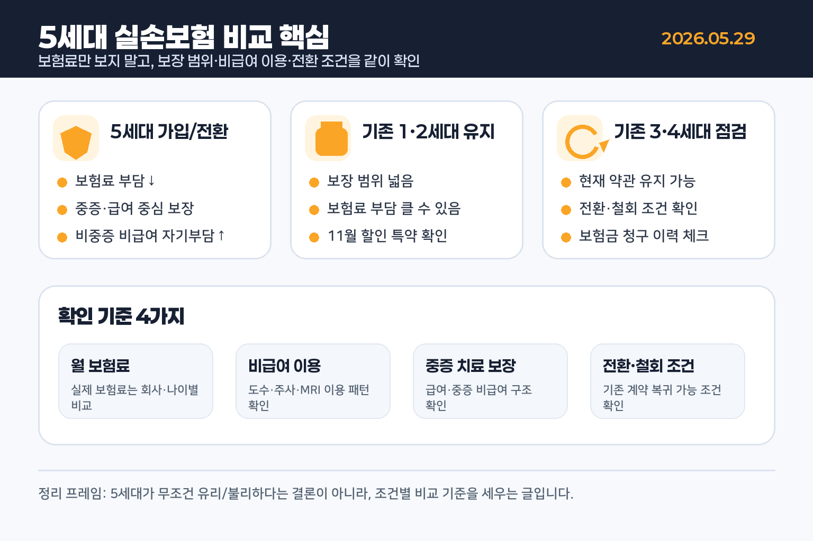
요약하면, 5세대 실손은 “무조건 좋은 새 상품”이라기보다 보험료를 낮추는 대신 비필수·비중증 비급여 보장을 합리화한 상품으로 보는 것이 정확합니다.
금융위원회 보도자료 기준으로 5세대 실손은 세 가지 방향이 뚜렷합니다.
급여 쪽에서는 입원 치료 보장은 현행 수준을 유지하고, 통원 외래는 건강보험 본인부담률과 연동하는 방식이 제시됐습니다. 또 임신·출산 및 발달장애 관련 급여 의료비가 새로 보장 범위에 들어갑니다.
비급여는 더 중요합니다. 중증 비급여는 기존 보장 수준을 유지하면서, 상급종합병원·종합병원 입원 의료비에 연간 자기부담 상한 500만 원을 둡니다. 반면 비중증 비급여는 보장한도와 자기부담률이 더 엄격해집니다.
| 구분 | 4세대 실손 | 5세대 실손에서 확인할 변화 |
|---|---|---|
| 보험료 | 현행 기준 | 4세대 대비 약 30% 낮아지는 방향 |
| 비급여 구조 | 비급여 특약 중심 | 중증 비급여 특약1, 비중증 비급여 특약2로 분리 |
| 비중증 비급여 한도 | 연간 5,000만 원 | 연간 1,000만 원으로 축소 |
| 비중증 비급여 자기부담률 | 입원 30%, 통원은 30%와 3만 원 중 큰 금액 | 입원 50%, 통원은 50%와 5만 원 중 큰 금액 |
| 일부 비급여 항목 | 보장 가능 범위 존재 | 미등재 신의료기술, 근골격계 물리치료, 체외충격파, 비급여 주사제 등은 보장 제외 항목 확인 필요 |
| 할인·할증 | 비급여 이용량에 따라 적용 | 특약2에도 무사고 할인·비급여 보험료 차등제 적용 |
여기서 독자가 가장 많이 헷갈리는 부분은 “보험료가 싸졌는데 보장이 다 없어지는 것인가?”입니다. 그렇게 단순화하면 안 됩니다. 5세대는 급여·중증 질환 치료비 중심의 보장을 남기고, 과잉 이용 우려가 큰 비중증 비급여 보장을 조정한 구조에 가깝습니다.
반대로 “기존 실손이 무조건 더 좋다”도 정확하지 않습니다. 기존 1·2세대는 보장이 넓은 대신 보험료가 높은 상품이라는 성격이 있습니다. 보험금 수령이 거의 없는데 높은 보험료를 계속 내는 경우에는 비용 부담이 더 크게 느껴질 수 있습니다.
바로 결론부터 말하면, 전환 여부는 기존 계약 세대와 의료 이용 패턴에 따라 다릅니다. 특히 기존 실손을 해지하거나 전환하기 전에는 최소한 아래 4가지를 확인해야 합니다.
금융위원회 자료에 따르면 기존 1~4세대 실손 가입자는 본인이 가입한 보험회사의 5세대 실손으로 전환할 수 있습니다. 다만 보장종목 확대나 전환 철회 후 재전환 등 일부 경우에는 심사가 필요할 수 있습니다.
전환 후 마음이 바뀌는 경우도 고려해야 합니다. 자료상 전환 이후 보험금 수령이 없는 경우 6개월 이내 철회하고 기존 상품으로 돌아갈 수 있는 장치가 언급됩니다. 3개월 이내 철회는 보험금 지급 사유가 발생하더라도 가능하다는 설명도 있습니다. 다만 실제 적용은 보험사 약관과 안내를 확인해야 합니다.
초기 실손보험 가입자, 특히 2013년 3월 이전 재가입 조건이 없는 실손보험은 별도 선택지가 추가됩니다. 금융당국은 2026년 11월부터 두 가지 제도를 시행할 예정이라고 밝혔습니다.
| 제도 | 의미 | 확인 포인트 |
|---|---|---|
| 선택형 할인 특약 | 기존 1·2세대 계약을 유지하면서 일부 비급여 보장을 제외하고 보험료 할인을 받는 방식 | 근골격계 물리치료·체외충격파·비급여 주사제, 비급여 MRI/MRA, 자기부담률 상향 옵션 등을 어떻게 고를지 확인 |
| 계약전환 할인 | 초기 실손을 5세대로 전환할 때 일정 기간 보험료를 할인받는 방식 | 예시로 5세대 보험료 3년간 50% 할인 언급, 실제 조건·기간·연장 여부 확인 |
선택형 할인 특약은 전체 옵션 선택 기준으로 1세대는 약 40%대, 2세대는 약 30%대 할인 가능성이 제시됐습니다. 다만 상품·회사별 차이와 변동 가능성이 있으므로 확정 금액처럼 받아들이면 안 됩니다.
계약전환 할인은 2026년 11월부터 6개월간 시행 후 연장 여부를 검토하는 구조로 안내됐습니다. 따라서 1·2세대 가입자는 “당장 5세대로 갈아탈지”만 볼 것이 아니라, 기존 유지, 선택형 할인 특약, 계약전환 할인을 같이 비교해야 합니다.
5세대 실손이나 11월 이후 선택형 할인·계약전환 할인 제도를 비교할 실익이 있습니다. 다만 보험료가 낮아지는 만큼 어떤 보장이 줄어드는지, 특히 비중증 비급여를 얼마나 이용할 가능성이 있는지 확인해야 합니다.
5세대 전환 전 약관 확인이 더 중요합니다. 5세대에서는 비중증 비급여의 자기부담률이 높아지고, 일부 항목은 보장 대상에서 제외됩니다. 이 경우 단순 월 보험료만 비교하면 실제 의료비 부담 변화를 놓칠 수 있습니다.
5세대는 암, 뇌혈관·심장질환, 희귀난치성질환 등 건강보험 산정특례 대상 질환과 관련된 중증 치료비 보장을 강화하거나 유지하는 방향입니다. 특히 중증 비급여 입원 의료비에는 연간 자기부담 상한이 신설됩니다. 다만 질환·병원·치료 항목별 실제 보장은 약관 확인이 필요합니다.
2026년 5월 6일부터 16개 보험회사에서 5세대 실손을 판매합니다. 보험사 방문, 설계사, 콜센터, 보험다모아 등을 통해 가입 신청이 가능하다고 안내되어 있습니다. 신규 가입자는 회사별 보험료와 특약 구성을 비교하되, 가장 낮은 보험료 하나만 보지 말고 보장 범위와 자기부담 구조를 함께 확인하는 것이 좋습니다.
금융위원회는 5세대 보험료가 4세대 대비 약 30%, 기존 1·2세대 대비 절반 이상 낮아지는 방향이라고 설명합니다. 하지만 실제 보험료는 나이, 성별, 보장 구성, 보험회사, 갱신 조건에 따라 달라집니다. “무조건 30% 절약”처럼 계산하면 안 됩니다.
기존 실손은 넓은 보장을 제공하지만 보험료가 높을 수 있습니다. 의료 이용이 적은 가입자는 보험금 수령 없이 보험료만 납부하는 기간이 길어질 수 있습니다. 따라서 보장 범위와 보험료 부담을 동시에 봐야 합니다.
기존 실손을 해지하고 새로 가입하는 것과 계약전환은 다릅니다. 전환은 별도 심사 없이 가능한 경우가 있지만, 예외와 철회 조건이 있습니다. 실제 선택 전에는 가입 보험회사에 “전환인지, 해지 후 신규가입인지, 철회 조건은 무엇인지”를 구분해서 확인해야 합니다.
아닙니다. 5세대는 보험료 부담을 낮추고 보장을 급여·중증 중심으로 재편한 상품입니다. 비중증 비급여 이용이 잦은 경우에는 보장 축소나 자기부담 증가가 더 크게 느껴질 수 있습니다.
조건에 따라 다릅니다. 1·2세대는 보장이 넓은 대신 보험료가 높을 수 있습니다. 2013년 3월 이전 재가입 조건 없는 계약이라면 2026년 11월 선택형 할인 특약과 계약전환 할인 제도까지 함께 확인하는 편이 좋습니다.
금융위원회 자료는 근골격계 물리치료, 체외충격파치료, 비급여 주사제 등 일부 항목을 보장 제외 항목으로 제시합니다. 다만 실제 보상 여부는 치료 목적, 급여·비급여 구분, 약관, 특약 구성에 따라 달라질 수 있어 보험사 약관 확인이 필요합니다.
자료상 기존 실손에서 5세대로 전환한 뒤 보험금 수령이 없는 경우 6개월 이내 철회하고 기존 상품으로 돌아갈 수 있는 장치가 언급됩니다. 3개월 이내 철회는 보험금 지급 사유가 발생하더라도 가능하다는 설명도 있습니다. 다만 실제 절차와 제한은 가입 보험회사에 확인해야 합니다.
보험다모아는 회사별 보험료와 상품 비교를 시작하는 데 유용한 경로입니다. 다만 최종 판단은 약관, 자기부담률, 특약 구성, 기존 계약의 전환 조건, 보험금 청구 이력까지 같이 봐야 합니다.
5세대 실손보험을 볼 때 핵심은 하나입니다.
“보험료가 낮아졌다”와 “보장이 어떻게 달라졌는가”를 반드시 함께 본다.
5세대는 급여·중증 치료 중심의 보장을 강화하고 비중증 비급여 보장을 조정한 상품입니다. 그래서 보험료 부담이 큰 사람에게는 비교할 만한 선택지가 될 수 있지만, 비급여 이용이 잦은 사람에게는 기존 실손 유지나 2026년 11월 선택형 할인 특약 검토가 더 중요한 비교 대상이 될 수 있습니다.
결론은 단정이 아니라 조건부입니다. 기존 계약 세대, 최근 의료 이용, 월 보험료 부담, 비급여 이용 가능성, 전환·철회 조건을 나눠 보고 결정해야 합니다.
출처 및 기준일
면책 문구 이 글은 일반적인 정보 정리이며 개인별 보험·의료·법률 조언이 아닙니다. 실제 가입, 전환, 철회, 보험금 청구 여부는 본인이 가입한 보험회사 약관과 공식 설명자료를 확인하고 필요하면 전문가 상담을 거쳐 판단하세요.
기준일: 2026년 5월 28일
요즘 재테크 커뮤니티에서 말하는 ‘슈퍼 ISA’는 공식 상품명이 아닙니다. 공식 문맥에서는 생산적 금융 ISA라는 이름으로 논의되고 있고, 그 안에서 청년형 ISA와 국민성장 ISA가 핵심 축으로 언급됩니다.
다만 지금 가장 중요한 포인트는 “무조건 가입해야 한다”가 아닙니다. 아직 세부 한도, 최종 출시 조건, 실제 가입 절차는 최종 공고와 세법 정비를 확인해야 합니다. 그래서 지금은 청년형인지, 국민성장형인지, 기존 ISA를 어떻게 둘지를 먼저 나눠 보는 게 좋습니다.
| 구분 | 현재 확인되는 방향 | 아직 확인해야 할 것 |
|---|---|---|
| 청년형 ISA | 일정 소득 이하 청년 대상, 이자·배당 과세특례와 납입금 소득공제 방향 | 실제 공제율, 한도, 가입 절차, 적용 시점 |
| 국민성장 ISA | 기존 ISA보다 세제혜택을 대폭 확대하는 방향 | 비과세 한도, 분리과세율, 투자 가능 상품 세부 범위 |
| 기존 ISA | 기존 계좌는 여전히 절세 계좌로 활용 가능 | 새 ISA와 중복·이전·유지 전략은 최종 제도 확인 필요 |
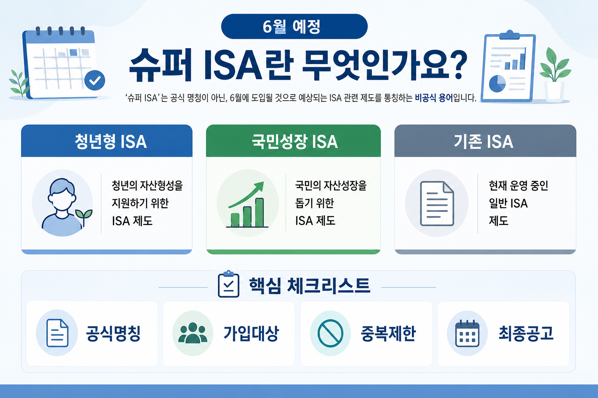
‘슈퍼 ISA’는 사람들이 이해하기 쉽게 붙인 별명에 가깝습니다. 정부의 2026년 경제성장전략 원문에서는 국내 주식·펀드, 국민성장펀드, 기업성장집합투자기구(BDC) 등에 투자할 때 세제혜택을 강화하는 ‘생산적 금융 ISA’ 신설이 언급됩니다.
여기서 핵심은 두 가지입니다.
즉, “새 ISA가 나온다”는 말은 맞지만, 모든 사람에게 같은 계좌가 하나 생긴다기보다는 가입 대상과 혜택 구조가 다른 두 갈래를 봐야 한다는 쪽에 가깝습니다.
청년형 ISA는 일정 소득 이하 청년을 대상으로 하는 방향입니다. 정부 자료와 국회예산정책처 정리에서는 총급여 7,500만 원 이하 청년에게 이자·배당소득 과세특례와 납입금 소득공제를 적용하는 방향이 언급됩니다.
다만 여기서 바로 “얼마를 돌려받는다”고 단정하면 안 됩니다. 실제 공제율, 공제 한도, 가입 절차는 최종 제도와 세법 개정 결과를 확인해야 합니다.
국민성장 ISA는 기존 ISA의 세제혜택보다 더 큰 혜택을 주는 방향으로 제시됩니다. 기존 ISA는 일반형 기준 비과세 200만 원, 초과분 9.9% 분리과세 구조가 대표적으로 언급되는데, 국민성장 ISA는 이보다 혜택을 확대하는 방향입니다.
다만 “얼마까지 비과세”인지, “어떤 상품을 담을 수 있는지”는 최종 공고를 확인해야 합니다. 특히 생산적 금융 ISA의 투자 대상은 국내 주식·펀드, 국민성장펀드, BDC 등 국내 장기투자와 연결되는 쪽으로 언급되고 있어, 해외 ETF 중심으로 ISA를 쓰던 사람은 기존 ISA와 역할이 달라질 수 있습니다.
지금 단계에서 가장 조심해야 할 행동은 기존 ISA를 섣불리 해지하는 것입니다.
기존 ISA는 계좌 안의 손익을 통산하고, 일정 순이익까지 비과세 혜택을 주는 구조입니다. 또 ISA는 의무가입기간과 만기, 계좌 개설 시점이 중요합니다. 새 제도가 나온다는 이유만으로 기존 계좌를 닫으면 오히려 기간이나 운용 전략이 꼬일 수 있습니다.
그래서 기존 ISA 가입자는 아래 세 가지를 먼저 확인하는 편이 낫습니다.
특히 해외 자산 비중이 큰 사람과 국내 장기투자 비중을 늘리려는 사람은 판단 기준이 다를 수 있습니다. 새 ISA가 국내 투자 중심으로 설계된다면, 기존 ISA와 새 ISA의 역할을 분리하는 방식이 더 자연스러울 수도 있습니다.
출시 전에는 ‘가입해야 하나?’보다 내가 어떤 유형에 해당하는지를 먼저 정리하는 것이 좋습니다.
이 체크리스트에서 아직 답이 안 나오는 항목이 많다면, 지금은 가입 결정보다 정보 업데이트를 기다리면서 내 기존 계좌 상태를 정리하는 단계로 보는 편이 안전합니다.
청년형 ISA의 소득공제와 과세특례 구조를 우선 확인해야 합니다. 단, 청년미래적금이나 국민성장 ISA와 중복 제한이 언급되므로 “혜택이 커 보이는 것 하나”만 보고 결정하기보다, 동시에 선택할 수 없는 상품이 있는지 봐야 합니다.
해지보다 점검이 먼저입니다. 만기일, 수익·손실 현황, 담고 있는 상품, 해외자산 비중을 확인해야 합니다. 새 ISA가 국내 투자 중심이라면 기존 ISA와 역할이 다를 수 있습니다.
국민성장 ISA의 최종 투자 가능 상품과 세제혜택을 확인할 필요가 있습니다. 다만 국내투자 비중을 늘린다는 것은 수익 가능성과 함께 변동성도 같이 안는다는 뜻입니다. 세제혜택만 보고 투자 비중을 정하는 것은 위험합니다.
아닙니다. 공식 자료에서는 생산적 금융 ISA, 청년형 ISA, 국민성장 ISA라는 표현이 확인됩니다. ‘슈퍼 ISA’는 온라인에서 쓰이는 별명에 가깝습니다.
2026년 5월 28일 기준으로는 출시 일정과 세부 조건을 최종 공고로 다시 확인해야 합니다. 정부의 경제성장전략과 국회예산정책처 자료에서는 생산적 금융 ISA 신설 및 청년형·국민성장 ISA 도입 추진이 확인되지만, 실제 가입 개시일과 세부 조건은 최종 발표가 중요합니다.
이 글에서는 특정 행동을 추천하지 않습니다. 다만 기존 ISA는 의무가입기간, 만기, 손익통산, 비과세 한도 등 계좌 개설 시점이 중요한 요소가 있으므로, 새 ISA를 기다리는 동안 기존 ISA의 구조를 이해해 두는 것은 필요합니다.
정부 자료와 국회예산정책처 정리에서는 청년형 ISA가 국민성장 ISA 및 청년미래적금과 중복 가입이 불가하다는 방향이 언급됩니다. 다만 최종 가입 제한은 실제 출시 공고에서 다시 확인해야 합니다.
6월 출시 예정으로 이야기되는 ‘슈퍼 ISA’는 단순히 이름만 바뀐 ISA가 아닙니다. 핵심은 생산적 금융 ISA라는 큰 방향, 그리고 그 안의 청년형 ISA와 국민성장 ISA를 나눠 보는 것입니다.
지금 할 일은 하나입니다.
“나에게 맞는 상품을 고른다”가 아니라, “내가 어느 조건에 해당하고 기존 ISA를 어떻게 쓰고 있는지 정리한다.”
최종 조건이 나오기 전까지는 숫자만 보고 움직이기보다, 공식 발표 기준으로 가입 대상, 중복 제한, 세제혜택, 투자 가능 상품을 차례대로 확인하는 것이 좋습니다.
출처 및 기준일
면책 문구 이 글은 일반적인 정보 정리이며 개인별 투자·세무·법률 조언이 아닙니다. 실제 가입이나 투자 전에는 금융회사, 금융위원회·재정경제부 등 공식 발표, 세법 개정 내용, 상품 설명서를 확인하세요.